A tutorial and reference description
Copyright © 2003 Linus Tolke
Copyright © 2001, 2002 Jeremy Bennett
Copyright © 2001 Kunle Odutola
Copyright © 2000 Philippe Vanpeperstraete
Copyright © 2000 Alejandro Ramirez
Copyright © 2000 Andreas Rueckert
This material may be distributed only subject to the terms and conditions set forth in the Open Publication License, v1.0 or later. A copy of this license is included in the section Open Publication License. The latest version is presently available at http://www.opencontent.org/openpub/.
Abstract
This version the manual is intended to describe is the version 0.14 of ArgoUML.
Table of Contents
- 1. Preface
- 1. Introduction
- 1.1. Origins and Overview of ArgoUML
- 1.2. Scope of This User Manual
- 1.2.1. Target Audience
- 1.2.2. Scope
- 1.3. Overview of the User Manual
- 1.3.1. Tutorial Manual Structure
- 1.3.2. Reference Manual Structure
- 1.3.3. User Feedback
- 1.4. Assumptions
- I. ArgoUML Tutorial Manual
- 2. UML Based OOA&D
- 2.1. Introduction
- 2.2. Background to UML
- 2.3. UML Based Processes for OOA&D
- 2.3.1. Types of Process
- 2.3.2. A Development Process for This Manual
- 2.4. Why ArgoUML is Different
- 2.4.1. Cognitive Psychology
- 2.4.2. Open Standards
- 2.4.3. 100% Pure Java
- 2.4.4. Open Source
- 2.5. ArgoUML Basics
- 2.5.1. Getting Started
- 2.5.2. The ArgoUML User Interface
- 2.5.3. Output
- 2.5.4. Working With Design Critics
- 2.6. The Case Study (To be written)
- 3. Requirements Capture
- 3.1. Introduction
- 3.2. The Requirements Capture Process
- 3.2.1. Process Steps
- 3.3. Output of the Requirements Capture Process
- 3.3.1. Vision Document
- 3.3.2. Use Case Diagram
- 3.3.3. The Use Case Specification
- 3.3.4. Supplementary Requirement Specification
- 3.4. Using Use Cases in ArgoUML
- 3.4.1. Actors
- 3.4.2. Use Cases
- 3.4.3. Associations
- 3.4.4. Hierarchical Use Cases
- 3.4.5. Stereotypes
- 3.4.6. Documentation
- 3.4.7. System Boundary Box
- 3.5. Case Study
- 4. Analysis
- 4.1. Introduction
- 4.2. The Analysis Process (To be written)
- 4.3. Class Diagrams (To be written)
- 4.4. Creating Class Diagrams in ArgoUML
- 4.5. Sequence Diagrams (To be written)
- 4.6. Creating Sequence Diagrams in ArgoUML
- 4.6.1. Sequence Diagrams
- 4.6.2. Actions (To be written)
- 4.6.3. Advanced Sequence Diagrams (To be written)
- 4.7. State Diagrams (To be written)
- 4.8. Creating State Diagrams in ArgoUML
- 4.9. Realisation Use Cases (To be written)
- 4.10. Creating Realisation Use Cases in ArgoUML (To be written)
- 4.11. Case Study (To be written)
- 5. Design
- 5.1. Introduction
- 5.2. The Design Process (To be written)
- 5.3. Package Diagrams (To be written)
- 5.4. Creating Package Diagrams in ArgoUML
- 5.5. More on Class Diagrams (To be written)
- 5.6. More on Class Diagrams in ArgoUML (To be written)
- 5.7. Sequence and Collaboration Diagrams (To be written)
- 5.8. Creating Collaboration Diagrams in ArgoUML (To be written)
- 5.9. State Diagrams (To be written)
- 5.10. Creating State Diagrams in ArgoUML (To be written)
- 5.10.1. State Diagrams (To be written)
- 5.10.2. States (To be written)
- 5.10.3. Transitions (To be written)
- 5.10.4. Actions (To be written)
- 5.10.5. Advanced State Diagrams (To be written)
- 5.11. Activity Diagrams (To be written)
- 5.12. Creating Activity Diagrams in ArgoUML (To be written)
- 5.12.1. Activity Diagrams (To be written)
- 5.12.2. Action States (To be written)
- 5.13. Deployment Diagrams (To be written)
- 5.14. Creating Deployment Diagrams in ArgoUML (To be written)
- 5.15. System Architecture (To be written)
- 5.16. Case Study (To be written)
- 5.16.1. Packages (To be written)
- 5.16.2. Class Diagrams (To be written)
- 5.16.3. Sequence Diagrams (To be written)
- 5.16.4. Collaboration Diagrams (To be written)
- 5.16.5. State Diagrams (To be written)
- 5.16.6. Activity Diagrams (To be written)
- 5.16.7. The Deployment Diagram (To be written)
- 5.16.8. The System Architecture (To be written)
- 6. Build (To be written)
- II. ArgoUML Reference Manual
- 7. User Interface Reference
- 7.1. Introduction
- 7.2. Overview of the Window
- 7.3. UML Diagram Types supported by ArgoUML
- 7.4. General Mouse Behavior in ArgoUML
- 7.4.1. Mouse Button Terminology
- 7.4.2. Button 1 Click
- 7.4.3. Button 1 Double Click
- 7.4.4. Button 1 Motion
- 7.4.5. Shift and Control with Button 1
- 7.4.6. Button 2 Actions
- 7.4.7. Button 2 Double Click
- 7.4.8. Button 2 Motion
- 7.5. General Information About Panes
- 7.6. The status bar
- 8. The Explorer
- 8.1. Introduction
- 8.2. Mouse Behavior in the Explorer
- 8.2.1. Button 1 Click
- 8.2.2. Button 1 Double Click
- 8.2.3. Button 2 Actions
- 8.2.4. Button 2 Double Click
- 8.3. Perspective Selection
- 8.4. Navigating Backward and Forward
- 8.5. Configuring Perspectives
- 8.5.1. Perspectives Tag
- 8.5.2. Panes Tag
- 8.6. Context Sensitive Menu
- 8.6.1. Properties Pop-Up
- 8.6.2. Add to Diagram
- 8.6.3. Delete From Model
- 9. The Editing Pane
- 9.1. Introduction
- 9.2. Mouse Behavior in the Editing Pane
- 9.2.1. Button 1 Click
- 9.2.2. Button 1 Double Click
- 9.2.3. Button 1 Motion
- 9.2.4. Shift and Control with Button 1
- 9.2.5. Button 2 Actions
- 9.2.6. Button 2 Double Click
- 9.2.7. Button 2 Motion
- 9.3. The tool bar
- 9.3.1. Layout Tools
- 9.3.2. Annotation Tools
- 9.3.3. Drawing Tools
- 9.3.4. Use Case Diagram Specific Tools
- 9.3.5. Class Diagram Specific Tools
- 9.3.6. Sequence Diagram Specific Tools
- 9.3.7. State Diagram Specific Tools
- 9.3.8. Collaboration Diagram Specific Tools
- 9.3.9. Activity Diagram Specific Tools
- 9.3.10. Deployment Diagram Specific Tools
- 9.4. Clarifiers
- 9.5. The Drawing Grid
- 9.6. The Diagram Tab
- 9.7. Pop-Up Menus
- 9.7.1. Critiques
- 9.7.2. Ordering
- 9.7.3. Add
- 9.7.4. Show
- 9.7.5. Modifiers
- 9.7.6. Multiplicity
- 9.7.7. Aggregation
- 9.7.8. Navigability
- 9.7.9. Properties
- 10. The Details Pane
- 10.1. Introduction
- 10.1.1. Spawning Details Tabs
- 10.2. Mouse Behavior in the Details Pane
- 10.2.1. Button 1 Click
- 10.2.2. Button 1 Double Click
- 10.2.3. Button 2 Actions
- 10.2.4. Button 2 Double Click
- 10.2.5. Button 2 Motion
- 10.3. To Do Item Tab
- 10.4. Properties Tab
- 10.5. Documentation Tab
- 10.6. Style Tab
- 10.7. Source tab
- 10.8. Constraints Tab
- 10.8.1. The Constraint Editor
- 10.9. Tagged Values Tab
- 10.10. Checklist Tab
- 11. The To-Do Pane
- 11.1. Introduction
- 11.2. Mouse Behavior in the To-Do Pane
- 11.2.1. Button 1 Click
- 11.2.2. Button 1 Double Click
- 11.2.3. Button 2 Actions
- 11.2.4. Button 2 Double Click
- 11.3. Presentation Selection
- 11.4. Flat/Hierarchical Button
- 11.5. Item Count
- 12. The Menu bar
- 12.1. Introduction
- 12.2. Mouse Behavior in the Menu Bar
- 12.2.1. Button 1 Click
- 12.2.2. Button 1 Double Click
- 12.2.3. Button 1 Motion
- 12.2.4. Button 2 Actions
- 12.2.5. Button 2 Double Click
- 12.2.6. Button 2 Motion
- 12.3. The File Menu
- 12.3.1. New…
- 12.3.2. Open Project…
- 12.3.3. Save Project
- 12.3.4. Save Project As…
- 12.3.5. Import…
- 12.3.6. Load Model From DB
- 12.3.7. Save Model To DB
- 12.3.8. Print…
- 12.3.9. Save Graphics…
- 12.3.10. Save Configuration
- 12.3.11. Exit
- 12.4. The Edit Menu
- 12.4.1. The Select Sub-Menu
- 12.4.2. Undo
- 12.4.3. Redo
- 12.4.4. Cut
- 12.4.5. Copy
- 12.4.6. Paste
- 12.4.7. Remove From Diagram
- 12.4.8. Delete From Model
- 12.4.9. Empty trash
- 12.4.10. Settings…
- 12.5. The View Menu
- 12.5.1. Goto Diagram…
- 12.5.2. Find…
- 12.5.3. The Zoom Sub-Menu
- 12.5.4. The Editor Tabs Sub-Menu
- 12.5.5. The Details Tabs Sub-Menu
- 12.5.6. Adjust Grid
- 12.5.7. Adjust Grid Snap
- 12.5.8. Adjust Page Breaks
- 12.5.9. Buttons on Selection
- 12.5.10. The Notation Sub-Menu
- 12.6. The Create Diagram Menu
- 12.6.1. Class Diagram
- 12.6.2. Use Case Diagram
- 12.6.3. State Diagram
- 12.6.4. Activity Diagram
- 12.6.5. Collaboration Diagram
- 12.6.6. Deployment Diagram
- 12.6.7. Sequence Diagram
- 12.7. The Arrange Menu
- 12.7.1. The Align Sub-Menu
- 12.7.2. The Distribute Sub-Menu
- 12.7.3. The Reorder Sub-Menu
- 12.7.4. The Nudge Sub-Menu
- 12.7.5. The Layout Sub-Menu
- 12.8. The Generation Menu
- 12.8.1. Generate Selected Classes
- 12.8.2. Generate All Classes
- 12.9. The Critique Menu
- 12.9.1. Toggle Auto-Critique
- 12.9.2. Design Issues…
- 12.9.3. Design Goals…
- 12.9.4. Browse Critics…
- 12.10. The Tools Menu
- 12.11. The Help Menu
- 12.11.1. About Argo/UML
- 13. The Critics
- 13.1. Introduction
- 13.1.1. Terminology
- 13.1.2. Design Issues
- 13.2. Uncategorized
- 13.3. Class Selection
- 13.3.1. Wrap DataType
- 13.3.2. Reduce Classes in diagram <diagram>
- 13.3.3. Clean Up Diagram
- 13.4. Naming
- 13.4.1. Resolve Association Name Conflict
- 13.4.2. Revise Attribute Names to Avoid Conflict
- 13.4.3. Change Names or Signatures in <artifact>
- 13.4.4. Duplicate End (Role) Names for <Association:>
- 13.4.5. Role name conflicts with member
- 13.4.6. Choose a Name (Classes and Interfaces)
- 13.4.7. Choose a Unique Name for <artifact> (Classes and Interfaces)
- 13.4.8. Choose a Name (Attributes)
- 13.4.9. Choose a Name (Operations)
- 13.4.10. Choose a Name (States)
- 13.4.11. Choose a Unique Name for <artifact> (States)
- 13.4.12. Revise Name to Avoid Confusion
- 13.4.13. Choose a Legal Name
- 13.4.14. Change <artifact> to a Non-Reserved Word
- 13.4.15. Choose a Better Operation Name
- 13.4.16. Choose a Better Attribute Name
- 13.4.17. Capitalize Class Name <class>
- 13.4.18. Revise Package Name <artifact>
- 13.5. Storage
- 13.5.1. Revise Attribute Names to Avoid Conflict
- 13.5.2. Add Instance Variables to <class>
- 13.5.3. Add Constructor to <class>
- 13.5.4. Reduce Attributes on <class>
- 13.6. Planned Extensions
- 13.7. MState Machines
- 13.7.1. Reduce Transitions on <state>
- 13.7.2. Reduce States in machine <machine>
- 13.7.3. Add Transitions to <state>
- 13.7.4. Add Incoming Transitions to <artifact>
- 13.7.5. Add Outgoing Transitions from <artifact>
- 13.7.6. Remove Extra Initial States
- 13.7.7. Place an Initial State
- 13.7.8. Add Trigger or Guard to Transition
- 13.7.9. Change Join Transitions
- 13.7.10. Change Fork Transitions
- 13.7.11. Change Branch Transitions
- 13.7.12. Add Guard to Transition
- 13.7.13. Clean Up Diagram
- 13.7.14. Make Edge More Visible
- 13.8. Design Patterns
- 13.8.1. Consider using Singleton Pattern for <class>
- 13.8.2. Singleton Stereotype Violated in <class>
- 13.8.3. Nodes normally have no enclosers
- 13.8.4. NodeInstances normally have no enclosers
- 13.8.5. Components normally are inside nodes
- 13.8.6. ComponentInstances normally are inside nodes
- 13.8.7. Classes normally are inside components
- 13.8.8. Interfaces normally are inside components
- 13.8.9. Objects normally are inside components
- 13.8.10. LinkEnds have not the same locations
- 13.8.11. Set classifier (Deployment Diagram)
- 13.8.12. Missing return-actions
- 13.8.13. Missing call(send)-action
- 13.8.14. No Stimuli on these links
- 13.8.15. Set Classifier (Sequence Diagram)
- 13.8.16. Wrong position of these stimuli
- 13.9. Relationships
- 13.9.1. Circular Association
- 13.9.2. Make <association> Navigable
- 13.9.3. Remove Navigation from Interface via <association>
- 13.9.4. Add Associations to <artifact>
- 13.9.5. Remove Reference to Specific Subclass
- 13.9.6. Reduce Associations on <artifact>
- 13.9.7. Make Edge More Visible
- 13.10. Instantiation
- 13.11. Modularity
- 13.12. Expected Usage
- 13.12.1. Clean Up Diagram
- 13.13. Methods
- 13.13.1. Change Names or Signatures in <artifact>
- 13.13.2. Class Must be Abstract
- 13.13.3. Add Operations to <class>
- 13.13.4. Reduce Operations on <artifact>
- 13.14. Code Generation
- 13.15. Stereotypes
- 13.16. Inheritance
- 13.16.1. Revise Attribute Names to Avoid Conflict
- 13.16.2. Remove <class>'s Circular Inheritance
- 13.16.3. Class Must be Abstract
- 13.16.4. Remove final keyword or remove subclasses
- 13.16.5. Illegal Generalization
- 13.16.6. Remove Unneeded Realizes from <class>
- 13.16.7. Define Concrete (Sub)Class
- 13.16.8. Define Class to Implement <interface>
- 13.16.9. Change Multiple Inheritance to interfaces
- 13.16.10. Make Edge More Visible
- 13.17. Containment
- 13.17.1. Remove Circular Composition
- 13.17.2. Duplicate Parameter Name
- 13.17.3. Two Aggregate Ends (Roles) in Binary Association
- 13.17.4. Aggregate End (Role) in 3-way (or More) Association
- 13.17.5. Wrap DataType
- 13.17.6. Import Parameter Type into Class
- 14. ArgoUML Top Level Artifact Reference
- 14.1. Introduction
- 14.2. The Model
- 14.2.1. Model Details Tabs
- 14.2.2. Model Property Toolbar
- 14.2.3. Property Fields For The Model
- 14.3. Datatype
- 14.3.1. Datatype Details Tabs
- 14.3.2. Datatype Property Toolbar
- 14.3.3. Property Fields For Datatype
- 14.4. Stereotypes
- 14.4.1. Stereotype Details Tabs
- 14.4.2. Stereotype Property Toolbar
- 14.4.3. Property Fields For Stereotype
- 14.5. ArgoUML Diagrams
- 14.5.1. Diagram Details Tabs
- 14.5.2. Property Fields For Diagram
- 15. ArgoUML Use Case Diagram Artifact Reference
- 15.1. Introduction
- 15.2. Actor
- 15.2.1. Actor Details Tabs
- 15.2.2. Actor Property Toolbar
- 15.2.3. Property Fields For Actor
- 15.3. Use Case
- 15.3.1. Use Case Details Tabs
- 15.3.2. Use Case Property Toolbar
- 15.3.3. Property Fields For Use Case
- 15.4. Extension Point
- 15.4.1. Extension Point Details Tabs
- 15.4.2. Extension Point Property Toolbar
- 15.4.3. Property Fields For Extension Point
- 15.5. Association
- 15.6. Association End
- 15.7. Dependency
- 15.7.1. Dependency Details Tabs
- 15.7.2. Dependency Property Toolbar
- 15.7.3. Property Fields For Dependency
- 15.8. Generalization
- 15.8.1. Generalization Details Tabs
- 15.8.2. Generalization Property Toolbar
- 15.8.3. Property Fields For Generalization
- 15.9. Extend
- 15.9.1. Extend Details Tabs
- 15.9.2. Extend Property Toolbar
- 15.9.3. Property Fields For Extend
- 15.10. Include
- 15.10.1. Include Details Tabs
- 15.10.2. Include Property Toolbar
- 15.10.3. Property Fields For Include
- 16. ArgoUML Class Diagram Artifact Reference
- 16.1. Introduction
- 16.2. Package
- 16.2.1. Package Details Tabs
- 16.2.2. Package Property Toolbar
- 16.2.3. Property Fields For Package
- 16.3. Datatype
- 16.4. Stereotype
- 16.5. Class
- 16.5.1. Class Details Tabs
- 16.5.2. Class Property Toolbar
- 16.5.3. Property Fields For Class
- 16.6. Attribute
- 16.6.1. Attribute Details Tabs
- 16.6.2. Attribute Property Toolbar
- 16.6.3. Property Fields For Attribute
- 16.7. Operation
- 16.7.1. Operation Details Tabs
- 16.7.2. Operation Property Toolbar
- 16.7.3. Property Fields For Operation
- 16.8. Parameter
- 16.8.1. Parameter Details Tabs
- 16.8.2. Parameter Property Toolbar
- 16.8.3. Property Fields For Parameter
- 16.9. Signal
- 16.9.1. Signal Details Tabs
- 16.9.2. Signal Property Toolbar
- 16.9.3. Property Fields For Signal
- 16.10. Association
- 16.10.1. Three-way and Greater Associations
- 16.10.2. Association Details Tabs
- 16.10.3. Association Property Toolbar
- 16.10.4. Property Fields For Association
- 16.11. Association End
- 16.11.1. Association End Details Tabs
- 16.11.2. Association End Property Toolbar
- 16.11.3. Property Fields For Association End
- 16.12. Dependency
- 16.13. Generalization
- 16.14. Interface
- 16.14.1. Interface Details Tabs
- 16.14.2. Interface Property Toolbar
- 16.14.3. Property Fields For Interface
- 16.15. Abstraction
- 16.15.1. Abstraction Details Tabs
- 16.15.2. Abstraction Property Toolbar
- 16.15.3. Property Fields For Abstraction
- 17. ArgoUML Sequence Diagram Artifact Reference
- 17.1. Introduction
- 17.2. Object
- 17.2.1. Object Details Tabs
- 17.2.2. Object Property Toolbar
- 17.2.3. Property Fields For Object
- 17.3. Stimulus
- 17.3.1. Stimulus Details Tabs
- 17.3.2. Stimulus Property Toolbar
- 17.3.3. Property Fields For Stimulus
- 17.4. Stimulus Call
- 17.5. Stimulus Create
- 17.6. Stimulus Destroy
- 17.7. Stimulus Send
- 17.8. Stimulus Return
- 17.9. Link
- 17.9.1. Link Details Tabs
- 17.9.2. Link Property Toolbar
- 17.9.3. Property Fields For Link
- 18. ArgoUML State Diagram Artifact Reference
- 18.1. Introduction
- 18.2. State
- 18.2.1. State Details Tabs
- 18.2.2. State Property Toolbar
- 18.2.3. Property Fields For State
- 18.3. Action
- 18.3.1. Action Details Tabs
- 18.3.2. Action Property Toolbar
- 18.3.3. Property Fields For Action
- 18.4. Composite State
- 18.5. Transition
- 18.5.1. Transition Details Tabs
- 18.5.2. Transition Property Toolbar
- 18.5.3. Property Fields For Transition
- 18.6. Call Event
- 18.6.1. Call Event Details Tabs
- 18.6.2. Call Event Property Toolbar
- 18.6.3. Property Fields For Call Event
- 18.7. Guard
- 18.7.1. Guard Details Tabs
- 18.7.2. Guard Property Toolbar
- 18.7.3. Property Fields For Guard
- 18.8. Pseudostate
- 18.8.1. Pseudostate Details Tabs
- 18.8.2. Pseudostate Property Toolbar
- 18.8.3. Property Fields For Pseudostate
- 18.9. Initial State
- 18.10. Final State
- 18.10.1. Final State Details Tabs
- 18.10.2. Final State Property Toolbar
- 18.10.3. Property Fields For Final State
- 18.11. Branch
- 18.12. Fork
- 18.13. Join
- 18.14. Shallow History
- 18.15. Deep History (to be improved...)
- 19. ArgoUML Collaboration Diagram Artifact Reference
- 19.1. Introduction
- 19.2. Classifier Role
- 19.2.1. Classifier Role Details Tabs
- 19.2.2. Classifier Role Property Toolbar
- 19.2.3. Property Fields For Classifier Role
- 19.3. Association Role
- 19.4. Association End Role
- 19.5. Message
- 19.5.1. Message Details Tabs
- 19.5.2. Message Property Toolbar
- 19.5.3. Property Fields For Message
- 20. ArgoUML Activity Diagram Artifact Reference
- 20.1. Introduction
- 20.2. Action State
- 20.2.1. Action State Details Tabs
- 20.2.2. Action State Property ToolBar
- 20.2.3. Property fields for action state
- 20.3. Action
- 20.4. Transition
- 20.5. Call Event
- 20.6. Guard
- 20.7. Initial State
- 20.8. Final State
- 20.9. Branch
- 20.10. Fork
- 20.11. Join
- 21. ArgoUML Deployment Diagram Artifact Reference
- 21.1. Introduction
- 21.2. Node
- 21.2.1. Node Details Tabs
- 21.2.2. Node Property Toolbar
- 21.2.3. Property Fields For Node
- 21.3. Node Instance
- 21.3.1. Node Instance Details Tabs
- 21.3.2. Node Instance Property Toolbar
- 21.3.3. Property Fields For Node Instance
- 21.4. Component
- 21.4.1. Component Details Tabs
- 21.4.2. Component Property Toolbar
- 21.4.3. Property Fields For Component
- 21.5. Component Instance
- 21.6. Dependency
- 21.7. Class
- 21.8. Interface
- 21.9. Association
- 21.10. Object
- 21.11. Link
- 22. ArgoUML Built In DataTypes, Classes, Interfaces and Stereotypes
- 22.1. Introduction
- 22.1.1. Package Structure
- 22.2. Built In Datatypes
- 22.3. Built In Classes
- 22.3.1. Built In Classes From java.lang
- 22.3.2. Built In Classes From java.math
- 22.3.3. Built In Classes From java.net
- 22.3.4. Built In Classes From java.util
- 22.4. Built In Interfaces
- 22.5. Built In Stereotypes
- Glossary
- A. Supplementary Material for the Case Study
- B. UML resources
- C. UML Conforming CASE Tools
- D. Limits and Shortcomings
- D.1. Diagram Canvas Size
- D.2. Missing functions
- E. User Manual Plan
- E.1. Target Audiences
- E.2. Goals
- E.2.1. Non-Goals
- E.3. Suggested Manual Structure
- E.3.1. Tutorial Manual Structure
- E.3.2. Reference Manual Structure
- E.4. Actions, Priorities and Questions
- E.4.1. Actions and priorities
- E.4.2. Remaining Questions
- F. Documentation Standards for the User Manual
- F.1. Introduction
- F.2. Style
- F.3. Document Conventions
- F.4. DocBook Conventions
- F.5. For Emacs Users
- G. Open Publication Licence
- Index
List of Figures
- 2.1. The waterfall process
- 2.2. Effort involved in the steps of the waterfall process
- 2.3. Effort involved in the steps of an iterative process
- 2.4. Overview of the ArgoUML window
- 2.5. Overview of the Explorer
- 2.6. Overview of the Editing Pane
- 2.7. Overview of the Details Pane
- 2.8. Overview of the To-Do Pane
- 2.9. ArgoUML window at start-up
- 2.10. Invoking Save Project As…
- 2.11. File chooser dialog
- 2.12. ArgoUML window having saved FirstProject.argo
- 2.13. ArgoUML window showing the critic item Revise Package Name UntitledModel
- 2.14. ArgoUML window showing the critic wizard to rename the package
- 3.1. Basic use case diagram for an ATM system
- 3.2. Use case diagram for an ATM system showing navigation.
- 3.3. Use case diagram for an ATM system showing multiplicity.
- 3.4. Use case diagram for an ATM system showing include relationships.
- 3.5. Use case diagram for an ATM system showing an extend relationship.
- 5.1. Selecting the Interface tool
- 5.2. Interface artifact on the Class Diagram
- 5.3. Generalization on the Class Diagram tool bar
- 5.4. Generalization between two Interfaces.
- 7.1. Overview of the ArgoUML window
- 8.1. Overview of the explorer
- 8.2. Explorer perspectives dialog box
- 8.3. explorers dialog box
- 9.1. Overview of the editing pane
- 10.1. Overview of the details pane
- 10.2. Example of the To Do Item tab on the properties pane
- 10.3. Dialog box for New To Do Item
- 10.4. Dialog box for New To Do Item
- 10.5. A typical Properties tab on the details pane
- 10.6. A typical Documentation tab on the details pane
- 10.7. A typical Style tab on the details pane
- 10.8. A typical Constraints tab on the details pane
- 10.9. Dialog box for configuring constraints
- 10.10. Dialog box for configuring constraints
- 11.1. Overview of the to-do pane
- 12.1. The file selection dialog for Open Project….
- 12.2. The file selection dialog for Import Sources….
- 12.3. The dialog for Settings.
- 12.4. The dialog for Goto Diagram….
- 12.5. The dialog for Find….
- 12.6. The dialog for Generate Selected Classes.
- 12.7. The dialog for Design Issues….
- 12.8. The dialog for Design Goals….
- 12.9. The dialog for Browse Critics….
- 12.10. The help window for ArgoUML
- 15.1. Possible artifacts on a use case diagram.
- 15.2. Example use of a discriminator with generalization
- 16.1. Possible artifacts on a class diagram.
- 16.2. Possible artifacts on a package diagram.
- 17.1. Possible artifacts on a sequence diagram.
- 18.1. Possible artifacts on a state diagram.
- 19.1. Possible artifacts on a collaboration diagram.
- 20.1. Possible artifacts on an activity diagram.
- 21.1. Possible artifacts on a component diagram.
- 21.2. Possible artifacts on a deployment diagram.
- 22.1. Hierarchy of datatypes, classes and interfaces within ArgoUML
Software design is a cognitively challenging task. Designers must manually enter designs, but the primary difficulty is decision-making rather than data-entry. If designers improved their decision-making capabilities, it would result in better designs.
Current CASE tools provide automation and graphical user interfaces that reduce the manual work of entering a design and transforming a design into code. They aid designers in decision-making mainly by providing visualization of design diagrams and simple syntactic checks. Also many CASE tools provide substantial benefits in the area of version control and concurrent design mechanisms. One area of design support that has been not been well supported is analysis of design decisions.
Current CASE tools are usable in that they provide a GUI that allows designers to access all the features provided by the tool. And they support the design process in that they allow the designer to enter diagrams in the style of popular design methodologies. But they typically do not provide process support to guide the designer through the design task. Instead, designers typically start with a blank page and must remember to cover every aspect of the design.
ArgoUML is a domain-oriented design environment that provides cognitive support of object-oriented design. ArgoUML provides some of the same automation features of a commercial CASE tool, but it focuses on features that support the cognitive needs of designers. These cognitive needs are described by three cognitive theories:
reflection-in-action;
opportunistic design; and
comprehension and problem solving.
ArgoUML is based directly on the UML 1.3 specification. In fact, a large part of ArgoUML was generated automatically from the UML specification. ArgoUML is (to the best of our knowledge) the only tool that implements the UML meta-model exactly as specified. In contrast, current commercial tools use basically the same internal representation of the design that they used in previous versions.
Furthermore, it is our goal to provide comprehensive support for OCL (the Object Constraint Language) and XMI (the XML Model Interchange format), which many other tools do not support.
ArgoUML was originally developed by a small group of people as a research project. ArgoUML has many features that make it special, but it does not implement all the features that commercial CASE tools provide.
The current developer release of ArgoUML implements all the diagram types of the UML 1.3 standard. It is written in Java and runs on every computer which provides a Java 2 platform of Java 1.3 or newer. It uses the open file formats XMI (XML Metadata Interchange format) (for model information) and PGML (Portable Graphics Markup Language) (for graph information) for storage. A new file format with graphs embedded as SVG (Scalable Vector Graphics) in the XMI is in discussion, but is postponed until a standard for such a file format is defined by the OMG (Object Management Group).
This manual is the cumulative work of several people and has been evolving over several years. Connected to the release 0.10 of ArgoUML, Jeremy Bennett, wrote a lot of the new material that was added to the earlier versions by Alejandro Ramirez, Philippe Vanpeperstraete and Andreas Rueckert. He also added things from some of the other documents namely the developers cookbook by Markus Klink and Linus Tolke, the Quick Guide by Kunle Odutola, and the FAQ by Dennis Daniels. Connected to the release 0.14 some changes were made by Linus Tolke. These changes were mostly to adopt the manual to the new functions and appearance of ArgoUML and introduction of the index. The users and developers that has contributed by providing valuable input as review comments or observations made while reading and using this manual are too many to name.
ArgoUML is available for free and can be used in commercial settings. For terms of use, see the license agreement presented when you download ArgoUML. We are providing the source code for ArgoUML for you to review, customize to your needs, and improve. Over time, we hope that ArgoUML will evolve into a powerful and useful tool for everyone to use.
This User Manual is aimed at the working designer, who wishes to make use of ArgoUML. The manual is presently written assuming familiarity with UML, but eventually it will support those new to UML.
The manual is written in DocBook/XML and available as both HTML and PDF. However due to the limitations of the tools currently available to produce PDF, this version has some layout anomalies.
The ArgoUML project welcomes those who want to get more involved. Look at the project website to find out more.
Tell us what you think about this User Manual! Your comments will help us improve things. Email your thoughts to the ArgoUML Users Mailing List or if you have found errors or omissions, enter a defect in Issuezilla the bug tracking tool for the ArgoUML project.
Table of Contents
- 1.1. Origins and Overview of ArgoUML
- 1.2. Scope of This User Manual
- 1.2.1. Target Audience
- 1.2.2. Scope
- 1.3. Overview of the User Manual
- 1.3.1. Tutorial Manual Structure
- 1.3.2. Reference Manual Structure
- 1.3.3. User Feedback
- 1.4. Assumptions
Over the past decade, Object Oriented Analysis and Design (OOA&D) has become the dominant software development paradigm. With it has come a major shift in the thought processes of all involved in the software development life cycle.
Programming language support for objects began with Simula 67, but it was the emergence in the 1980's of hybrid languages, such as C++, Ada and Object Pascal that allowed OOA&D to take off. These languages provided support for both OO and procedural programming. Object Oriented programming became mainstream.
An OO system is designed and implemented as a simulation of the real world using software artifacts. This premise is as powerful as it is simple. By using an OO approach to design a system can be designed and tested (or more correctly simulated) without having to actually build the system first.
It is the development during the 1990's of tools to support Object Oriented analysis and design that moved this approach into the mainstream. When coupled with the ability to design systems at a very high level, a tool based OOA&D approach has enabled the implementation of more complex systems than previously possible.
The final driver that has propelled OOA&D has been its suitability for modeling graphical user interfaces. The popularity of object based and object oriented graphical languages such as Visual Basic and Java reflect the effectiveness of this approach.
During the 1980's a number of OOA&D process methodologies and notations were developed by different research teams. It became clear there were many common themes and, during the 1990's, a unified approach for OOA&D notation was developed under the auspices of the Object Management Group. This standard became known as the Unified Modeling Language (UML), and is now the standard language for communicating OO concepts.
ArgoUML was conceived as a tool and environment for use in the analysis and design of object-oriented software systems. In this sense it is similar to many of the commercial CASE tools that are sold as tools for modeling software systems. ArgoUML has a number of very important distinctions from many of these tools.
ArgoUML draws on research in cognitive psychology to provide novel features that increase productivity by supporting the cognitive needs of object-oriented software designers and architects.
ArgoUML supports open standards extensively—UML, XMI, SVG, OCL and others. In this respect, ArgoUML is still ahead of many commercial tools.
ArgoUML is a 100% pure Java application. This allows ArgoUML to run on all platforms for which a reliable port of the Java2 platform is available.
ArgoUML is an open source project. The availability of the source ensures that a new generation of software designers and researchers now have a proven framework from which they can drive the development and evolution of CASE tool technologies.
UML is the most prevalent OO modeling language and Java is one of the most productive OO development platforms. Jason Robbins and the rest of his research team at the University of California, Irvine leveraged these benefits in creating the ArgoUML. The result is a solid development tool and environment for OO systems design. Further, it provides a test bed for the evolution of object oriented CASE tools development and research.
A first release of ArgoUML was available in 1998 and more than 100,000 downloads by mid-2001 show the impact that this project has made, being popular in educational and commercial fields.
Jason Elliot Robbins founded the Argo Project and provided early project leadership. While Jason remains active in the project, he has handed off project leadership. The project continues to move forward strongly. There are more than 300 members on the developer mailing list (see http://argouml.tigris.org/servlets/ProjectMailingListList), with a couple of dozen of those forming the core development group.
This is the place where all the discussion on the latest tasks takes place, and developers discuss the directions the project should take. Although controversial at times, these discussions are always kept nice and friendly (no flame-wars and such), so newbies should not hesitate and participate in them. You'll always get a warm welcome there.
If you want to learn some details about how the project is run and how you should go about to contribute go the the ArgoUML Web Site Developer Zone and read through the documentation there. The Cookbook is an important document.
Besides the developer mailing list, there's also a mailing for users (see The ArgoUML Mailing List List), where we can discuss problems from a user perspective. Developers also read this list, so there's a good chance to get qualified help.
Before posting to this list, you should take a look at the user FAQ maintained by Ewan R. Grantham.
More information on ArgoUML and other UML related topics is also available on the ArgoUML website, maintained by Linus Tolke.
The current release of this document is aimed at experienced users of UML in OOA&D (perhaps with other tools) who wish to transfer to ArgoUML.
Future releases will support designers who know OOA&D, and wish to adopt UML notation within their development process.
A long term goal is to support i) those who are learning design and wish to start with an OOA&D process that uses UML notation, and ii) people interested in modularized code design with a GUI.
The intention is that this document will provide a comprehensive guide, enabling designers to use ArgoUML to its full extent. It is in two parts.
A tutorial manual, showing how to work with ArgoUML
A complete reference manual, recording everything you can do with ArgoUML.
The current version of the document has achieved the second of these.
In this guide there are some things you will not find, because they are covered elsewhere.
Descriptions of how ArgoUML works on the inside.
How to improve ArgoUML with new features and functions.
A trouble shooting guide.
A summary quick reference to using ArgoUML.
These are covered in the Developers Cookbook, the FAQ, and the Quick Guide.
Chapter 2, UML Based OOA&D provides an overview of UML based OOA&D, including a guide to getting ArgoUML up and running.
Chapter 3, Requirements Capture through Chapter 6, Build (To be written) then step through each part of the design process from initial requirements capture through to final project build and deployment.
As each UML concept is encountered, its use is explained. Its use within ArgoUML is then described. Finally the a study is used to give examples of the concepts in use.
Chapter 7, User Interface Reference is an overview of the user interface and provides a summary of the support for the various UML diagram types in ArgoUML. Separate chapters Chapter 8, The Explorer through Chapter 12, The Menu bar describe each of the sub-windows of the user interface, known as Panes, and the menu bar.
Chapter 13, The Critics gives details of all the cognitive critics within the system. Eventually ArgoUML will link directly to this manual when giving advice on critics.
Chapter 14, ArgoUML Top Level Artifact Reference is an overview of the artifacts (i.e. the UML entities that can be placed on diagrams) within ArgoUML. The following chapters (Chapter 15, ArgoUML Use Case Diagram Artifact Reference through Chapter 22, ArgoUML Built In DataTypes, Classes, Interfaces and Stereotypes) describe, the artifacts that can be created through each ArgoUML diagram, and their properties, as well as some standard artifacts provided with the system.
A complete Glossary is provided. Appendix A, Supplementary Material for the Case Study provides material to supplement the case study used throughout the document. Appendix B, UML resources and Appendix C, UML Conforming CASE Tools identify background information on UML and UML CASE tools. Appendix E, User Manual Plan describes the plan for creation of this manual. Appendix F, Documentation Standards for the User Manual gives some guidelines for those writing this manual. Appendix G, Open Publication Licence is a copy of the GNU Free Documentation License.
A future ambition is to provide a comprehensive index
Please tell us what you think about this User Manual. Your comments will help us make improvements. Email your thoughts to the ArgoUML Users Mailing List. In case you would like to add to the missing chapters you should contact the ArgoUML Developer Mailing List to check whether noone else is working on this part. You can subscribe to either of the mailinglists via the ArgoUML web site.
This release of the manual assumes the reader is very familiar with UML already. This is reflected in the sparseness of the description of UML concepts in the tutorial.
The case study is described, but not yet fully realized throughout the tutorial. This will be achieved in future releases of the manual.
Table of Contents
- 2. UML Based OOA&D
- 2.1. Introduction
- 2.2. Background to UML
- 2.3. UML Based Processes for OOA&D
- 2.3.1. Types of Process
- 2.3.2. A Development Process for This Manual
- 2.4. Why ArgoUML is Different
- 2.4.1. Cognitive Psychology
- 2.4.2. Open Standards
- 2.4.3. 100% Pure Java
- 2.4.4. Open Source
- 2.5. ArgoUML Basics
- 2.5.1. Getting Started
- 2.5.2. The ArgoUML User Interface
- 2.5.3. Output
- 2.5.4. Working With Design Critics
- 2.6. The Case Study (To be written)
- 3. Requirements Capture
- 3.1. Introduction
- 3.2. The Requirements Capture Process
- 3.2.1. Process Steps
- 3.3. Output of the Requirements Capture Process
- 3.3.1. Vision Document
- 3.3.2. Use Case Diagram
- 3.3.3. The Use Case Specification
- 3.3.4. Supplementary Requirement Specification
- 3.4. Using Use Cases in ArgoUML
- 3.4.1. Actors
- 3.4.2. Use Cases
- 3.4.3. Associations
- 3.4.4. Hierarchical Use Cases
- 3.4.5. Stereotypes
- 3.4.6. Documentation
- 3.4.7. System Boundary Box
- 3.5. Case Study
- 4. Analysis
- 4.1. Introduction
- 4.2. The Analysis Process (To be written)
- 4.3. Class Diagrams (To be written)
- 4.4. Creating Class Diagrams in ArgoUML
- 4.5. Sequence Diagrams (To be written)
- 4.6. Creating Sequence Diagrams in ArgoUML
- 4.6.1. Sequence Diagrams
- 4.6.2. Actions (To be written)
- 4.6.3. Advanced Sequence Diagrams (To be written)
- 4.7. State Diagrams (To be written)
- 4.8. Creating State Diagrams in ArgoUML
- 4.9. Realisation Use Cases (To be written)
- 4.10. Creating Realisation Use Cases in ArgoUML (To be written)
- 4.11. Case Study (To be written)
- 5. Design
- 5.1. Introduction
- 5.2. The Design Process (To be written)
- 5.3. Package Diagrams (To be written)
- 5.4. Creating Package Diagrams in ArgoUML
- 5.5. More on Class Diagrams (To be written)
- 5.6. More on Class Diagrams in ArgoUML (To be written)
- 5.7. Sequence and Collaboration Diagrams (To be written)
- 5.8. Creating Collaboration Diagrams in ArgoUML (To be written)
- 5.9. State Diagrams (To be written)
- 5.10. Creating State Diagrams in ArgoUML (To be written)
- 5.10.1. State Diagrams (To be written)
- 5.10.2. States (To be written)
- 5.10.3. Transitions (To be written)
- 5.10.4. Actions (To be written)
- 5.10.5. Advanced State Diagrams (To be written)
- 5.11. Activity Diagrams (To be written)
- 5.12. Creating Activity Diagrams in ArgoUML (To be written)
- 5.12.1. Activity Diagrams (To be written)
- 5.12.2. Action States (To be written)
- 5.13. Deployment Diagrams (To be written)
- 5.14. Creating Deployment Diagrams in ArgoUML (To be written)
- 5.15. System Architecture (To be written)
- 5.16. Case Study (To be written)
- 5.16.1. Packages (To be written)
- 5.16.2. Class Diagrams (To be written)
- 5.16.3. Sequence Diagrams (To be written)
- 5.16.4. Collaboration Diagrams (To be written)
- 5.16.5. State Diagrams (To be written)
- 5.16.6. Activity Diagrams (To be written)
- 5.16.7. The Deployment Diagram (To be written)
- 5.16.8. The System Architecture (To be written)
- 6. Build (To be written)
Table of Contents
- 2.1. Introduction
- 2.2. Background to UML
- 2.3. UML Based Processes for OOA&D
- 2.3.1. Types of Process
- 2.3.2. A Development Process for This Manual
- 2.4. Why ArgoUML is Different
- 2.4.1. Cognitive Psychology
- 2.4.2. Open Standards
- 2.4.3. 100% Pure Java
- 2.4.4. Open Source
- 2.5. ArgoUML Basics
- 2.5.1. Getting Started
- 2.5.2. The ArgoUML User Interface
- 2.5.3. Output
- 2.5.4. Working With Design Critics
- 2.6. The Case Study (To be written)
Object orientation as a concept has been around since the 1960's, and as a design concept since 1972. However it was in the 1980's that it started to develop as a credible alternative to a functional approach in analysis and design. We can identify a number of drivers.
The emergence of mainstream OO programming languages like SmallTalk and particularly C++. C++ was a pragmatic OO language derived from C, widely used because of its association with Unix.
The development of powerful workstations, and with them the emergence into the mainstream of windowing operating user environments. Graphical User Interfaces (GUI) have an inherent object structure.
A number of very public major project failures, suggesting that current approaches were not satisfactory.
A number of researchers proposed OOA&D processes, and with them notations. Those that achieved some success include Coad-Yourdon, Booch, Rumbaugh OMT, OOSE/Jacobson, Shlaer-Mellor, ROOM (for real-time design) and the hybrid Jackson Structured Development.
During the early 1990's it became clear that these approaches had many good ideas, often very similar. A major stumbling block was the diversity of notation, meaning engineers tended to be familiar with one OOA&D methodology, rather than the approach in general.
UML was conceived as a common notation, that would be in the interests of all involved. The original standard was driven by Rational Software (www.rational.com, in which three of the key researchers in the field (Booch, Jacobson and Rumbaugh were involved). They produced documents describing v0.9 and v0.91 during 1996. The effort was taken industry wide through the Object Management Group (OMG), already well known for the CORBA standard. A first proposal, 1.0 was published in early 1997, with an improved version 1.1 approved that autumn.
ArgoUML is based on UML v1.3, which was adopted by OMG in November 1999. UML v1.4 has recently been approved (2001). A major revision, UML v2.0 is planned to be completed in 2002.
It is important to understand that UML is a notation for OOA&D. It does not prescribe any particular process.
Whatever process is adopted, it must take the system being constructed through a number of phases.
Requirements Capture. This is where we identify the requirements for the system, using the language of the problem domain. In other words we describe the problem in the “customer's” terms.
Analysis. We take the requirements and start to recast them in the language of a putative solution—the solution domain. At this stage, although thinking in terms of a solution, we ensure we keep things at a high level, away from concrete details of a specific solution—what is known as abstraction.
Design. We take the specification from the Analysis phase and construct the solution in full detail. We are moving from abstraction of the problem to its realization in concrete terms.
Build Phase. We take the actual design and write it in a real programming language. This includes not just the programming, but the testing that the program meets the requirements (verification), testing that the program actually solves the customer's problem (validation) and writing all user documentation.
In this section we look at the two main types of process in use for software engineering. There are others, but they are less widely used.
In recent years there has also been a move to reduce the effort required in developing software. This has led to the development of a number of lightweight variants of processes (often known as agile computing or extreme programming) that are suited to very small teams of engineers.
In this process, each stage of the process—requirements, analysis, design and build (code and test) is completed before the next one starts. This is illustrated in Figure 2.1.

This is a very satisfactory process where requirements are well designed and not expected to change, for example automating a well proven manual system.
The weaknesses of this approach show with less well defined problems. Invariably some of the uncertainties in the requirements will not be clarified until well into the analysis and design, or even code phases, requiring backtracking to redo work.
The worst aspect of this, is that working code does not become available until near the end of the project, and very often it is only at this stage that problems with the original requirements (for example with the user interface) become apparent.
This is exacerbated, by each successive stage requiring more effort, than the previous, so that the costs of late problem discovery are hugely expensive. This is illustrated by the pyramid in Figure 2.2.

The waterfall process is still probably the dominant design process. However because of its limitations it is increasingly replaced by iterative processes, particularly for projects where the requirements are not well defined.
In recent years a new approach has been used, which aims to get at least part of the code up and running as quickly as possible, to bring discovery of problems forward in the development cycle.
These processes use a series of “mini-waterfalls”, defining a few requirements (the most important) first, taking them through analysis, design and build to get an early version of the product, with limited functionality, related to the most important requirements. Feedback from this can then be used to refine the requirements, spot problems etc before more work is done.
The process is then repeated for further requirements to construct a product with a step up in functionality. Again further feedback can be applied to the requirements.
The process is repeated, until eventually all requirements have been implemented and the product is complete. It is this iteration that gives these processes their name. Figure 2.3 shows how this process compares to the pyramid structure of the Waterfall Process.

The growth in popularity of iterative processes is closely tied to the growth of OOA&D. It is the clean encapsulation of objects that allows a part of a system to be built with stubs for the remaining code clearly defined.
Perhaps the best known Iterative Process is the Rational Unified Process (RUP) from Rational Software (www.rational.com).
This process recognizes that our pyramid view of even slices of the waterfall is not realistic. In practice the early iterations tend to be heavy on the requirements end of things (you need to define a reasonable amount even to get started), while the later iterations have more of their effort in the design and build areas.
RUP recognizes that iterations can be grouped into a number of phases according to their stage in the overall project. Each phase may have one or more iterations.
In the inception phase iterations tend to be heavy on the requirements/analysis end, while any build activity may be limited to emulation of the design within a CASE tool.
In the elaboration phase iterations tend to be completing the specification of the requirements, and starting to focus on the analysis and design, and possibly the first real built code.
In the construction phase iterations are more or less completed with the requirements and analysis, and the effort is mostly in design and build.
Finally, in the deployment phase iterations are largely about build activity, and in particular the testing of the software.
![[Note]](images/note.png) | Note |
|---|---|
It should be clear that testing is an integral part of all phases. Even in the early phases the requirements and design should be tested, and this is facilitated by a good CASE tool. | |
We shall use an iterative process in this manual, that is loosely based on the RUP.
A good rule of thumb is that an iteration should take between six and ten weeks for typical commercial projects. Any longer and you have probably bitten off too many requirements to do in one go. You also lose focus on getting the next working iteration completed. Any shorter and you probably haven't got enough requirements to make a significant advance, and will struggle to get all the work done.
This then begs the question of how many iterations in total. This depends on the size of project. Take the estimated time (and working out/guessing that is a whole subject on its own), and divided it into 8 week chunks. Experience seems to suggest that the iterations will divide in the ratio of around 1:2:3:3 into RUP style inception, elaboration, construction and deployment phases. A project that has great vagueness in its specification (some advanced research projects for example) will tend to be heavier on the early phases.
When building a product to contract for a customer the end point is well defined. However when developing a new product for the market place, a strategy that can be used is to decide the product launch date, and hence the end date for completion of engineering (some time before). The time is then divided into iterations, and as much of the product as can be built in that time developed. The iterative process is very effective where time to market is more important than the exact functionality.
Very few software systems are conceived as monolithic artifacts. They are broken down into subsystems, modules etc.
Software processes are the same, with early parts of the process defining a top level structure, and the process reapplying to parts of the structure in turn to define ever greater details.
For example the initial design of a telephone system might identify objects to i) handle the phone lines, ii) process the calls, iii) manage the system and iv) bill the customer. The software process can then be reapplied to each of these four components to identify their design.
OOA&D with its clean boundaries to objects, naturally supports this approach. Such OOA&D with recursive development is sometimes abbreviated as OOA&D/RD.
Recursive development can be applied equally well to waterfall or iterative processes. It is not an alternative to them.
For the purpose of this manual we will use a stripped down iterative process with recursive development, loosely akin to RUP. The case study will take us through the first iteration, although at the end of the tutorial section of the manual we will look at how the project will develop to completion.
Within that first iteration, we will tackle each of the requirements capture, analysis, design and build activities in turn. Not all parts of the process are based on UML or ArgoUML. We will look at what other material is needed outside.
Within this process we will have an opportunity to see the various UML diagrams in use. The full range of UML diagrams and how they are supported is described in the reference manual (see Section 7.3, “UML Diagram Types supported by ArgoUML”).
Our requirements capture will use the UML concept of Use Cases. Starting with a Vision Document we will see how Use Cases can be developed to describe all aspects of the system's behavior in the problem domain.
During the analysis stage, we will introduce the UML concept of classes to allow us to build a top level view of the objects that will make up the solution—sometimes known as a concept diagram.
We will introduce the UML sequence diagram and state diagram to capture requirements for the overall behavior of the system.
Finally we will take the Use Cases from the requirements capture stage, and recast them in the language of the solution domain. This will illustrate the UML ideas of stereotyping and realization.
We use the UML package diagram to organize the components of the project. We then revisit the class diagram, sequence diagram and state diagram, to show how they can be used recursively to design the complete solution.
During this part of the process, we need to develop our system architecture, to define how all the components will fit together and operate.
Although not strictly part of our process, we'll look at how the UML collaboration diagram can be used as an alternative to, or to complement the sequence diagram. Similarly we will look at the UML activity diagram as an alternative or complement to the state diagram.
Finally we shall use the UML deployment diagram to specify how the system will actually be realized.
In the introduction, we listed the four key things that make ArgoUML different: i) it makes use of ideas from cognitive psychology, ii) it is based on open standards; iii) it is 100% pure Java; and iv) it is an open source project.
ArgoUML is particularly inspired by three theories within cognitive psychology: i) reflection-in-action, ii) opportunistic design iii) and comprehension and problem solving.
This theory observes that designers of complex systems do not conceive a design fully-formed. Instead, they must construct a partial design, evaluate, reflect on, and revise it, until they are ready to extend it further.
As developers work hands-on with the design, their mental model of the problem situation improves, hence improving their design.
A theory within cognitive psychology suggesting that although designers plan and describe their work in an ordered, hierarchical fashion, in reality, they choose successive tasks based on the criteria of cognitive cost.
Simply stated, designers do not follow even their own plans in order, but choose steps that are mentally least expensive among alternatives.
A design visualization theory within cognitive psychology. The theory notes that designers must bridge a gap between their mental model of the problem or situation and the formal model of a solution or system.
This theory suggests that programmers will benefit from:
Multiple representations such as program syntactic decomposition, state transitions, control flow, and data flow. These allow the programmer to better identify elements and relationships in the problem and solution and thus more readily create a mapping between their situation models and working system models.
Familiar aspects of a situation model, which improve designers' abilities to formulate solutions.
The implementation of these theories within ArgoUML is through a number of techniques.
The design of a user interface which allows the user to view the design from a number of different perspectives, and allows the user to achieve goals through a number of alternative routes.
The the use of processes running in parallel with the design tool, evaluating the current design against models of how “best practice” design might work. These processes are known as design critics.
The use of to-do lists to convey suggestions from the design critics to the user, as well as allowing the user to record areas for future action.
The use of checklists, to guide the user through a complex process.
UML is itself an open standard. ArgoUML throughout has tried to use open standards for all its interfaces.
The key advantage of open standards is that it permits easy inter-working between applications, and the ability to move from one application to another as necessary.
It is this very flexibility that means some commercial software is not built to use standards. In a monopolistic strategy, non-standard interfaces lock your customer to you.
This is a two-edged sword. Customers are not stupid, and are reluctant to buy non-standard software, because of the danger of lock-in.
The open source movement, is inherently about avoiding monopolistic control of software. Open standards are a natural direction for such software—including ArgoUML.
XML Metadata Interchange (XMI) is the standard for saving the meta-data that make up a particular UML model. In principle this will allow you to take the model you have created in ArgoUML and import it into another tool.
This clearly has advantages in allowing UML to meet its goal of being a standard for communication between designers.
The reality is not quite this good. XMI is a recent standard, and ArgoUML is one of the few tools to implement it. Furthermore it says nothing about the graphical representation of the models, so diagram layout is lost. ArgoUML gets round this by saving graphical information with the model (see Section 2.5.3.1, “Loading and Saving”).
Scalable Vector Graphics (SVG) is a recent standard proposed to the W3C Standardization body (www.w3c.org) by Adobe (www.adobe.com). As yet it is not widely adopted, but is likely to become the standard for graphical data that is based on vectors (i.e. lines) rather than bitmaps.
For now ArgoUML saves diagrams using an earlier proposed standard, Portable Graphics Markup Language (PGML). However it has the option to export graphical data as SVG for those who can make use of it.
Object Constraint Language (OCL) is the UML standard for expressing constraints within diagrams that express the dynamic behavior of a design.
At present OCL is quite new and not widely available. ArgoUML is one of the few CASE tools to provide comprehensive support.
Java was conceived as an interpreted language. It doesn't have a compiler to produce code for any particular target machine. It compiles code for its own target, the Java Virtual Machine (JVM).
Writing an interpreter for a JVM is much easier than writing a compiler, and such machines are now incorporated into almost every Web Browser. As a result most machines can run Java, with no further work.
(In case you wonder why all languages aren't like this, it is because interpreted languages tend to be slower than compiled languages. However with the high performance of modern PCs, the trade-off for portability is worthwhile for many applications. Furthermore modern multi-level caches can mean that interpreted languages, which produce denser code, may actually not be that much slower anyway.)
By choosing to write ArgoUML in pure Java, it is immediately made available to the maximum number of users with the minimum amount of effort.
ArgoUML is an open source project. That means anyone can have a free copy of the source code, change it, use it for new purposes and so on. The only (major) obligation is that you pass your code on in the same way to others. The precise nature of what you can and can't do varies from project to project, but the principle is the same.
The advantage is that a small project like ArgoUML suddenly is open to a lot of additional help from those who can chip in their ideas for how the program might be improved. At any one time their may be 10, 15, 20 or more people making significant contributions to ArgoUML. To do that commercially would cost $1m+ per year.
Its not just a spirit of pure altruism. Contributing is a way of learning “hands-on” about leading edge software. Its a way of getting a lot of visibility (over 100,000 people had downloaded ArgoUML by the spring of 2001). That's a lot of good experience on a resumé and a lot of potential employers seeing you!
And its great for the ego!
Open Source doesn't preclude making money. Gentleware www.gentleware.com sell a commercial version of ArgoUML, Poseidon. Their value proposition is not a piece of private code. Its the commercial polish and support that take risk out of using ArgoUML in a commercial development, allowing customers to take advantage of ArgoUML's leading edge technology.
The aim of this section is to get you started with ArgoUML. It takes you through obtaining the code and getting it running.
You have three options for obtaining ArgoUML.
Run ArgoUML directly from the Web Site using Java Web Start. This is the easiest option.
Download the binary code. This is the right option if you intend using ArgoUML regularly and is not that difficult.
Download the source code using CVS and build your own version. Choose this option if you want to look at the internal workings of ArgoUML, or want to join in as a developer.
All three options are freely available through the project web site, argouml.tigris.org.
If you choose to download the binary, you will have a choice of downloading the latest stable version of the code (which will be more reliable, but not have all the latest features), or the current version (which will be less reliable, but have more features). Choose according to your own situation.
There are two steps to this.
Install Java Web Start on your machine. This is available from java.sun.com/products/javawebstart, or via the Java Web Start link on the ArgoUML home page.
Click on the Launch latest stable release link on the ArgoUML home page.
Java Web Start will download ArgoUML, cache it and start it the first time, then on subsequent starts, check if ArgoUML is updated and only download any updated parts and then start it. The ArgoUML home page also provides details on starting ArgoUML from the Java Web Start console.
Since ArgoUML is written in 100% pure Java, it should run on any machine with a Java Engine. Java2, version 1.3 or later is needed. You may have this in place, but if not it can be downloaded free from Sun MicroSystems (www.sun.com). Note that you only need the Java Runtime Environment (JRE), there is no need to download the whole Java Development Kit (JDK).
ArgoUML needs a reasonable amount of computing resource. A PC with 300MHz processor, 64Mb RAM and 10Mb of disk should be adequate. Download the code from Download section of the project website argouml.tigris.org. Choose the version that suits your needs as described in the section above.
ArgoUML comes in .zip or tar.gz flavors. Choose the former if you are a Microsoft Windows user, and the latter if you are running some flavor of Unix. Unpacking is as follows.
On Windows. Unzip the .zip file with WinZip, or on later versions of Windows (ME, XP) copy the files out of the compressed folder and put them into a directory of your choosing.
Use GNU tar to unzip and break out the files to a directory of your choice tar zxvf <file>.tar.gz. If you have an older version of tar, the z option may not be available, so use gunzip < file.tar.gz | tar xvf -.
You should have a directory containing the following files: antlrall.jar, gef.jar, nsuml.jar, README.txt, argouml.jar, log4j.jar, ocl-argo.jar and xerces.jar. To run ArgoUML depends on whether you are a Microsoft Windows or Unix user.
On Windows. Start a MSDOS shell window. Use Start/Run with the default “command”. In the window change to the directory holding your ArgoUML files and type java -jar argouml.jar
Start a shell window and type java -jar argouml.jar
If you get completely stuck and you have no local assistance, try the web site, particularly the FAQ. If this still doesn't solve the problem, try the ArgoUML users' mailing list.
You can subscribe through the mailing lists section of the project web site argouml.tigris.org, or send an empty message to users@argouml.org with the subject line subscribe.
You can then send your problem to users@argouml.org and see how other users are able to help.
The users' mailing list is an excellent introduction to the live activity of the project. If you want to get further involved there are additional mailing lists that cover the development of the product and issues in the current and future releases.
It's unusual to encounter problems if you have made a successful download. Most common issue is not having a new enough Java Runtime Environment (it must be 1.2 or later).
If you can't solve the problem. Try the users' mailing list (see Section 2.5.1.2.1, “Problems Downloading”).
Figure 2.4 shows the main ArgoUML window.
At the top of screen is a menu bar. Under that there are Toolbars. Then the bulk of the window comprises four sub-windows or Panes. Clockwise from top left these are the Explorer, Editing Pane, Details Pane and To-Do Pane. At the top of the Editing Pane is another toolbar called the Edit Pane Toolbar. Finally at the bottom of the window is a status bar.
Figure 2.5 shows the Explorer.

This is the explorer, where we can navigate through our model. This pane list all the classes, interfaces and data types of our model as a tree view.
Figure 2.6 shows the Editing Pane.

This is the Editing Pane, where we can edit our diagram in a graphical way.
Figure 2.7 shows the Details Pane.

This is the Details Pane, that allows us to edit various details of our model.
Figure 2.8 shows the To-Do Pane.

The To-Do Pane displays the items on the models to-do list in a tree which sorts the list in a number of different ways. A drop down selection box at the top of the pane determines the layout of the tree.
The menu bar and toolbars gives access to all the main features of ArgoUML. As is conventional, menu options and toolbar options that are not available are grayed out and menu items that invoke a dialog box are followed by an ellipsis (…).
File menu. This allows you to create a new project, save and open projects, import sources from elsewhere, load and save the model to and from a database, print the model, save the graphics of the model, save the configuration of the model and exit ArgoUML
Edit menu. This allows you to select one or more UML items on a diagram, undo and redo edits, remove items from diagrams or the whole model, empty the trash and change settings.
View menu. This allows you to switch between diagrams, find artifacts in the model, zoom in a diagram, select a particular diagram representation (although at present there is only one), select a particular tab in the details menu, adjust the grid, view buttons on a selection, and switch between UML and Java notation.
Create Diagram menu. This allows you to create any one of the seven UML diagram types (class, use case, state, activity, collaboration, deployment and sequence) supported by ArgoUML.
State and activity diagrams can only be created when a class or actor is selected, even though the relevant menu entries are not grayed out if this has not been done (nothing will happen under this circumstance).
Arrange menu. This allows you to align, distribute, reorder and nudge artifacts on a diagram and set the layout strategy for the diagram.
Generation menu. This allows you to generate Java code for selected classes or all classes.
Critique menu. This allows you to toggle the auto-critique on and off, set the level of importance of design issues and design goals and browse the critics available.
Tools menu. This menu is permanently grayed out unless there is some tool available in your version of ArgoUML.
Help menu. This menu gives access to details of those who authored the system, and where additional help may be found.
File Toolbar. This toolbar contains some of the tools from the File menu.
Edit Toolbar. This toolbar contains some of the tools from the Edit menu.
View Toolbar. This toolbar contains some of the tools from the View menu.
Create Diagram Toolbar. This toolbar contains some of the tools from the Create Diagram menu.
The mouse and mouse buttons (or their equivalent with alternative tracking devices) are used in a wide variety of ways. In this section we look at the common modes of use.
ArgoUML assumes a two button mouse. We will refer to the buttons as “button 1” and “button 2”. Button 1 is the leftmost button on a right-handed mouse, and sometimes referred to as the “select” button. Button 2 is sometimes referred to as the “adjust” button.
Button 1 click. This action is generally used to select an item for subsequent operations. If the item is an artifact in the explorer or the editing pane it will be highlighted.
In the case of the Edit Pane Toolbar, that artifact is selected as the next to be added to the diagram (but only once—see double clicking for adding multiple artifacts). The adding to the diagram is achieved by moving the mouse to the editing area and clicking again.
Button 1 double click. This action is identical to a single click except, when it is used with the edit pane toolbar. Under these circumstances the selected artifact will be added multiple times to the drawing area, once for each further button click, until the tool is again selected or another tool chosen.
Button 2 click. When used over text items in the the explorer or details panes, or graphical artifacts in the editing pane, this will display a context dependent drop-down menu.
If the item has not yet been selected it will also be selected.
Button 1 motion. Where button 1 click has been used to pull down a menu from the menu bar, button 1 motion is used to select items on that menu.
Button 1 motion also has an effect in the editing pane. Over graphical artifacts it will move the artifact to a new position. Graphical artifacts that are selected show handles, and these can be used for re-sizing.
Where the artifact is some form of connector between other items, button 1 motion other than at a handle will cause a new handle to be created, allowing the connector to be articulated at that point. Such new handles can be removed by moving them to the end of the connector.
Button 2 motion. This is used to select items in a context sensitive menu popped up by use of button 2 click.
There are other more specific behaviors that will be encountered under the specific cases where they are used.
In general diagrams are drawn by using the edit pane toolbar to select the artifact desired and clicking in the diagram at the position required as described in Section 2.5.2.6, “The Mouse”. That section also explains the use of the mouse for re-sizing artifacts.
Artifacts that are already in the model, but not on a diagram, may be added to a diagram by selecting the artifact in the explorer, using Add to Diagram from the drop down menu (button 2) over that artifact, and then clicking button 1 at the desired location on the diagram.
As well as UML artifacts, the Edit pane toolbar provides for general drawing artifacts (rectangles, circles, lines, polygons, curves, text) to provide supplementary information on diagrams.
There are several ways to move diagram elements.
Select the elements you want to move. By holding down the control key you can select several.
Now hit your arrow keys. Your elements move a little with every key stroke.
If you also hold down the shift key, they move a bit faster.
Figure 2.9 shows the ArgoUML main window as it appears as right after start-up

The main window's client area, below the menu and toolbar, is subdivided into four panes. Starting at the leftmost top pane, and working around the clock, you can see the Explorer, showing a tree view of your UML model, the Editing Pane with its toolbar, two scroll bars and gray drawing area, the Details Pane with the ToDoItem tab selected, and the To-Do Pane with a tree view of the to do items, ranked in various ways selected via the drop down list at the top of the pane.
Each time ArgoUML is started up without a project file as an argument, a new blank project is created. This project contains a model called untitledModel. This model contains a blank Class Diagram, called class diagram 1, and a blank Use Case Diagram called use case diagram 1.
The model and both empty diagrams can be seen in the explorer, which is the main tool for you to navigate through your model.
Let's assume for a moment that this is the point where you want to start modeling a new purchasing system. You want to give the name “purchasingmodel” to your model, and you want to store it in a file called FirstProject.
First, let's save the model in it's current (empty and unnamed) state. On the menu bar, click on File, then on Save Project As… as shown in Figure 2.10.

Please notice that the File menu contains the usual options for creating a new project, for opening an existing project, for saving a project under a new name, for printing the currently displayed diagram, for saving the currently displayed diagram as a file, and for program Exit.
Some of these menu commands can be invoked by pressing key combinations, as indicated on the drop-down menu. For instance, holding down the “Ctrl” key, and pressing “N”, will create a new project.
In the current version, ArgoUML can only contain one active project at a time. In addition, a project can only contain one UML model. Since an UML model can contain an unlimited number of elements and diagrams, this should not present any serious limitations, even for modeling quite large and complex systems.
But let's go back to saving our project. After clicking on the Save Project As… menu command, we get the file chooser dialog to enter the file name we wish to use as shown in Figure 2.11.
This is a standard Java FileChooser. Let's go over it in some detail.
The main, outstanding feature, is the scrollable folders list in the center of the dialog. By using the scroll bar on the right, you can move up and down in the list of folders contained inside the currently selected folder. If it is scrollable or not depends on the amount of files and folders shown and also how they are shown. If everything fits the window is not scrollable as seen in the picture.
Double-clicking on one of the displayed folders navigates you into that folder, allowing you to quickly navigate down into the folders hierarchy on your hard disk.
Notice that only folder names, and no file names are displayed in the scrollable area. Indeed, the dialog is currently set up in order to show only ArgoUML project files with an extension of .zargo, as can be seen on the lower drop-down control labeled Files of Type:.
Also notice that the currently selected folder's name is displayed in the upper drop-down control labeled Look in:. A single click on a folder inside the scrollable area does select that folder on screen but does not select the folder for saving.
At the top of the dialog, above the scrollable folder chooser area, there are a few more folder navigation tools.
 The Folder drop-down control. Clicking on the
down-arrow displays a tree view of the folder hierarchy,
allowing you to navigate quickly up the hierarchy, and at
the same time to quickly determine where in the hierarchy
we are currently positioned.
The Folder drop-down control. Clicking on the
down-arrow displays a tree view of the folder hierarchy,
allowing you to navigate quickly up the hierarchy, and at
the same time to quickly determine where in the hierarchy
we are currently positioned.
 The Folder-Up icon.
Clicking on this icon will bring us to
the parent folder of the current folder.
The Folder-Up icon.
Clicking on this icon will bring us to
the parent folder of the current folder.
 The Home Folder icon. Clicking on this icon will bring
us to our home directory.
The Home Folder icon. Clicking on this icon will bring
us to our home directory.
 The New Folder icon. Clicking on this icon will create
a new folder called "New Folder" under the current folder.
After the folder is created selecting it an clicking in the name
allows us to select the name of our choice.
The New Folder icon. Clicking on this icon will create
a new folder called "New Folder" under the current folder.
After the folder is created selecting it an clicking in the name
allows us to select the name of our choice.
 The Folders Presentation Icon.
The Folders Presentation Icon.
OK, now we navigate to the directory where we want to save our ArgoUML project, fill in the File name: with an appropriate name, such as “FirstProject” and click on the Save button.
You have now an active project called FirstProject, connected to the file FirstProject.zargo.
ArgoUML saves the diagram information in a PGML file (with extension .pgml, the model information in an XMI file (with extension .xmi and information about the project in a file with extension .argo. See Section 2.5.3.2.2, “Precision Graphics Markup Language (PGML)” and Section 2.5.3.3, “XMI” for more about PGML and XMI respectively.
All of these are then zipped to a file with extension .zargo. You can easily extract the .xmi file from the .zargo file using any old generic ZIP application. Give it a try and look into the magic of Argo.
![[Warning]](images/warning.png) | Warning |
|---|---|
Be aware that double clicking will launch a ZIP utility, if one is installed, and NOT Argo. | |
GEF is the software package that is the foundation of the diagrams that appear in the Editing Pane. GEF was an integral part of ArgoUML but has been separated. Like ArgoUML it is an open source project available via Tigris.
PGML is the saving format for diagram information used in ArgoUML. Although this is outdated a little, it shows why we chose PGML in the first place. In the future, PGML will be replaced by an extended XMI format which will include graphical representation.
In April 1998 Adobe Systems proposed a new Standard for Vector Graphics to the World Wide Web Consortium (W3C), which should facilitate the creation and usage of image material in the World Wide Web. It will be replaced by SVG. We will support SVG by generating it from the XMI in the future.
PGML is a predecessor of SVG (see Section 2.5.3.2.5, “Scalable Vector Graphics (SVG)”. It was dropped by the W3C Consortium.
Currently there are no other tools that we know of working on PGML.
Select a diagram, then go to File→Export Diagrams. You can generate GIF, PostScript, Encapsulated PostScript or SVG format.
A super cool vector graphics format (like MM Flash) that is totally open and is gaining enormous ground in the graphics world. Find out more at www.w3c.org.
As well visit adobe.com for the plugin for Netscape Navigator and Internet Explorer.
Select .svg as the file type.
Type the name of the file as you like with the .svg tag at the end. Example myumldiagram.svg
Et viola! SVG! Give it a try and zoom around a little… They are not pretty though, so if you know anything about rendering beautiful SVG let us know!
Oh, and by the way, you'll need a browser that can read SVG. See adobe.com for the plugin for Netscape Navigator and Internet Explorer
There are a few browsers that read SVG natively: Amaya, X-Smiles, and a rudimentary version of Mozilla.
| Note |
|---|---|
You will not have scroll bars for your SVG unless it is embedded into an HTML! Good luck and let us know what you find! | |
There is now a tool available which supports various dialects of XMI and their interconversion. This should make portability of different models in to ArgoUML considerably easier. Any work on using this with ArgoUML would be much appreciated.
There is also a tool that converts XMI to HTML. For more information, see http://www.objectsbydesign.com/projects/xmi_to_html_2.html.
It is probably not possible to take a model generated by Rational Rose in XMI format and put it into ArgoUML directly.
The conversion tool identified above will probably solve the problem. If you can document how this is done, you'd make a lot of friends in a hurry!
Gentleware is a commercial development based on ArgoUML. It diverged a little while ago and the XMI representations are no longer full compatible.
Eugenio Alvarez suggests the following procedure to convert a Gentleware project for use with ArgoUML. It works if there are no sequence diagrams in the project.
Make sure to backup your project first.
Unpackage the Gentleware project Project.zargo. For example unzip Project.zargo or jar xvf Project.zargo.
Then try reading and then saving the project with UMLTool (Contact Eugenio Alvarez to get this tool).
Repackage the project. For example zip NewProject.zargo *.xmi *.pgml *.argo or jar cvf NewProject.zargo *.
Try reading the project with ArgoUML.
This depends on the version of NSUML (the UML engine underlying ArgoUML) you are using. Look in the start-up messages on the console for the entry for Novosoft UML Library for the version number. Using version 0.4.19 is OK, and the XMI files should be interchangeable.
Because of the variety of XMI formats being generated you will encounter problems using XMI files generated from other applications. ArgoUML's native storage format is another implementation of XMI (Curt Arnold believes that it has been hacked so it can also read the Unisys variant). He recommends that if you are comfortable with XSLT, you can typically transform one variant of UML and XMI to another, plus MetaIntegrations www.metaintegrations.net makes a version of their Bridge product available to transform between XMI flavors.
It is possible to compile your generated code with ArgoUML, you still need to implement method bodies, though, to get usable results.
At the moment you cannot write code for methods (operations) within ArgoUML. The source pane is editable, but the changes are ignored. ArgoUML is a pure design tool for now, no IDE functionality but the desire is there. You might consider using Forte and ArgoUML together—it's a good work around!
You can help us out there if you'd like!
Where do we stand now? A new project has been created, and is connected to the file FirstProject.argo. Figure 2.12 shows how your ArgoUML window should look at this stage.
The project contains a top-level package, called untitledModel, which contains a class diagram and a use case diagram.
If we look carefully at the screen, we can see that the "Medium"
folder in the To Do pane (the lower left pane) must contain some
items, since its activation icon
 is
displayed.
is
displayed.
Clicking on this icon will open the "Medium" folder. An open
folder is indicated by the
 icon.
icon.
But what is this “To-Do” Pane anyway. You haven't recorded anything yet that has to be done, so where do these to do items originate.
The answer is simple, and is at the same time one of the strong points of ArgoUML. While you are working on your UML model, your work is monitored continuously and invisibly by a piece of code called a design critic. This is like a personal mentor that watches over your shoulder and notifies you each time he sees something questionable in your design.
Critics are quite unobtrusive. They give you a friendly warning,
but they do not force you into design principles that you don't want
or like to follow. Let us take a look at what the critics are
telling us. Click on the
icon next to the Medium folder, and click on the
Revise Package Name UntitledModel
item.
Figure 2.13 shows how your screen should now look.
Notice that your selection is highlighted in red in the To-Do Pane, and that a full explanation appears now in the Details Pane (the lower right pane). You may have to re-size your Details Pane or to scroll down in order to see the full message as displayed in our example.
What ArgoUML is trying to tell you is that usually, package names are written in lower cases. The default top level package created by ArgoUML is called untitledModel and therefore violates a sound design principle. (Actually, this could be considered as a bug within ArgoUML, but it comes in handy to demonstrate the working of critics).
At this point, you can choose to change the package name manually, to impose silence on the design critic for some time or permanently, or to request a more comprehensive explanation by Email from an expert.
We will do nothing of this (we'll come back to it when we talk about the design critics in more detail) but we'll use another handy feature of ArgoUML—an auto-correct feature.
In order to do that, just click on the Next button on the Details Pane. This will cause a renaming wizard to be displayed inside the properties panel, proposing to use the name untitledmodel (all in lower case).
Replace the name untitledmodel with purchasingmodel, and click on the Finish button. Figure 2.14 shows how the ArgoUML window will now look.

Watch now how the design critic note in the To Do panel disappears, leaving only the Add Elements to Package purchasingmodel note in the To-Do list.
If this doesn't happen at once, wait for a few seconds. ArgoUML makes heavy use of several threads of execution that execute in parallel. This can cause delays of a few seconds before the information gets updated on the screen.
The package name change should also be reflected in the explorer, in the top left corner of your ArgoUML window.
We are now ready to create our first UML diagram, a Use Case diagram, but first let's save what we've done so far.
Click on the File menu item, and select Save Project. You can now safely exit ArgoUML without losing your work so far, or go on creating your first diagram.
Table of Contents
- 3.1. Introduction
- 3.2. The Requirements Capture Process
- 3.2.1. Process Steps
- 3.3. Output of the Requirements Capture Process
- 3.3.1. Vision Document
- 3.3.2. Use Case Diagram
- 3.3.3. The Use Case Specification
- 3.3.4. Supplementary Requirement Specification
- 3.4. Using Use Cases in ArgoUML
- 3.4.1. Actors
- 3.4.2. Use Cases
- 3.4.3. Associations
- 3.4.4. Hierarchical Use Cases
- 3.4.5. Stereotypes
- 3.4.6. Documentation
- 3.4.7. System Boundary Box
- 3.5. Case Study
Requirements capture is the process of identifying what the “customer” wants from the proposed system.
The key at this stage is that we are in the problem domain. At this stage we must describe everything from the “customer” perspective and in the language of the “customer”.
The biggest risk we have in requirements capture is to start thinking in terms of possible solutions. That must wait until the Analysis Phase (see Chapter 4, Analysis). One of the steps of the Analysis Phase will be to take the output of the Requirements Phase and recast it in the language of a putative solution.
Remember we are using both a recursive, and an iterative process.
We may well come back to the requirements process again as we break down the problem into smaller chunks, each of which must have its requirements captured.
We will certainly come back through the requirements phase on each iteration as we seek to define the requirements of more and more of the system
| Note |
|---|---|
The only part of the requirements notation specified by the UML standard is the use case diagram. The remainder is process specific. The process described in this chapter draws heavily on the Rational Unified Process. | |
We start with a top-level view of the problem we are solving and the key areas of functionality that we must address in any solution. This is our vision document, and should be just a few pages long.
For example the top-level view of an automated teller machine (ATM) might be that it should support the following.
Cash deposit, cash withdrawal and account inquiries by customers.
Maintenance of the equipment by the bank's engineers, and unloading of deposits and loading of cash by the local bank branch.
Audit trail for all activities sent to the bank's central computer.
From this top-level view we can extract the principle activities of the system, and the external agents (people, equipment) that are involved in those activities. These activities are known as use cases and the external agents are known as actors.
Actors may be people or machines. From a practical standpoint it is worth knowing the stakeholder behind any machine, since only they will be able to engage with the requirements capture process.
Use cases should be significant activities for the system. For example customer use of the ATM machine is a use case. Entering a PIN number is not.
There is a gray area between these two extremes. As we shall see it is often useful to break very large use cases into smaller sub-use cases. For example we may have sub-use cases covering cash deposit, cash withdrawal and account inquiry.
There is no hard and fast rule. Some architects will prefer a small number of relatively large use cases, others will prefer a larger number of smaller use cases. A useful rule of thumb is that any practical project ought to require no more than about 30 use cases (if it needs more, it should be broken into separate projects).
We then show the relationship between use cases and actors on one or more use case diagrams. For a large project more than one diagram will be needed. Usually groups of related use cases are shown on one diagram.
We must then give a more detailed specification of each use case. This covers its normal behavior, alternative behaviors and any pre- and post-conditions. This is captured in a document variously known as a use case specification or use case scenario.
Finally, since use cases are functional in nature, we need a document to capture the non-functional requirements (capacity, performance, environmental needs etc). These requirements are captured in a document known as a supplementary requirements specification.
The steps in the requirements capture process can be summarized as follows.
Capture an overall view of the problem, and the desired characteristics of its solution in the vision document.
Identify the use case and actors from the vision document and show their relationships on one or more use case diagrams.
Give detailed use case specifications for each use case, covering normal and alternate behavior, pre- and post-conditions.
Capture all non-functional requirements in a supplementary requirements specification.
In any iterative development process, there will be an exercise of prioritization, and early iterations will focus on capturing the key behavior of the most important use cases.
Most modern requirements capture processes agree that it is essential that the authoritative representative of the customer is fully involved throughout the process.
Almost all the output of the requirements capture process is documentary. The only diagram is the use case diagram, showing the relationships between use cases and actors.
Typical sections of this document would be as follows.
Summary. A statement of the context, problem and solution goals.
Goals. What are we trying to achieve (and how do we wish to achieve it).
Market Context or Contractual Arrangements. For a market led development, this should indicate target markets, competitive differentiators, compelling events and so forth. For a contractual development this should explain the key contractual drivers.
Stakeholders. The users (in the widest sense) of the system. Many of these will map in to actors, or control equipment that maps into actors.
Key Features. At the very highest level what are they key functional aspects of the problem/desired solution. These will largely map down to the use cases. It is helpful to give some prioritization here.
Constraints. A high level view of the non-functional parameters of the system. These will be worked out in detail in the supplementary requirements specification.
Appendix. A listing of the actors and use cases that will be needed to meet this vision. It is useful to link to these from the earlier sections to ensure comprehensive coverage.
The vision document has identified the use cases and actors. The use case diagram captures how they interact. In our ATM example we have identified “customer uses machine”, “maintain machine” and “audit” as the three main use cases. We have identified “customer”, maintenance engineer“, ”“local branch official” and “central computer” as the actors.
Figure 3.1 shows how this could be displayed on a use case diagram. The use cases are shown as ovals, the actors as stick people (even where they are machines), with lines (known as associations connecting use cases to the actors who are involved with them. A box around the use cases emphasizes the boundary between the system (defined by the use cases) and the actors who are external.
| Note |
|---|---|
Not all analysts like to use a box around the use cases. It is a matter of personal choice. | |

The following sections show how the basic use case diagram can be extended to show additional information about the system being designed.
Active actors initiate interaction with the system. This can be shown by placing an arrow on the association from the actor pointing toward the use case. In the ATM example, the customer is an active actor.
Interaction with passive actors is initiated by the system. This can be shown by placing an arrow on the association from the use case pointing toward the actor. In the ATM example, the central computer is a passive actor.
This is a good example where the arrow helps, since it allows us to distinguish an event driven system (the ATM initiates interaction with the central computer) from a polling system (the central computer interrogates the ATM from time to time).
Where an actor may be either active or passive, depending on circumstances, the arrow may be omitted. In the ATM example the bank engineer fits into this category. Normally he is active, turning up on a regular cycle to service the machine. However if the ATM detects a fault, it may summon the engineer to fix it.
The use of arrows on associations is referred to as the navigation of the association. We shall see this used elsewhere in UML later on.
Figure 3.2 shows the ATM use case diagram with navigation displayed.

It can be useful to show the multiplicity of associations between actors and use cases. By this we mean how many instances of an actor interact with how many instances of the use case.
By default we assume one instance of an actor interacts with one instance of a use case. In other cases we can label the multiplicity of one end of the association, either with a number to indicate how many instances are involved, or with a range separated by two periods (..). An asterisk (*) is used to indicate an arbitrary number.
In the ATM example, there is only one central computer, but it may be auditing any number of ATM uses. So we place the label 0..* at the use case end. There is no need for a label at the other end, since the default is one.
A local bank will have up to three officials authorized to unload and load ATM machines. So at the actor end of the relationship with the use case Maintain ATM, we place the label 1..3. They may be dealing with any number of ATM machines, so at the other end we place the label 0..*.
There may be any number of customers and there may be any number of ATM systems they could use. So at each end of the association we place the label 0..*.
Figure 3.3 shows the ATM use case diagram with multiplicity displayed.
Multiplicity can clutter a diagram, and is often not shown, except where it is critical to understanding. In the ATM example we would only choose to show 1..3 against the local bank official, since all others are obvious from the context.
In our ATM example so far we have just three use cases to describe all the behavior of the system. While use cases should always describe a significant chunk of system behavior, if they are too general they can be difficult to describe.
We could for example define the behavior of the use case “Use ATM” in terms of the behavior of three simpler use cases, “Deposit Cash”, “Withdraw Cash” and “Query Account”. The main use case could be specified by including the behavior of the subsidiary use cases where needed.
Similarly the “Maintain ATM” use case could be defined in terms of two use cases “Maintain Equipment” and “Reload ATM”. In this case the two actors involved in the main use case are really only involved in one or other of the two subsidiary use cases and this can be shown on the diagram.
The decomposition of a use case into simpler sub-use cases is shown in UML by using an include relationship, a dotted arrow from the main use case to the subsidiary, with the label «include».

Include relationships are fine for breaking down the use case behaviors in to hierarchies. However we may also want to show a use case that is an extension to an existing use case to cater for a particular circumstance.
In the ATM example we have a use case covering routine maintenance of the ATM, “Maintain Equipment”. We also want to cover the special case of an unscheduled repair caused by the ATM detecting an internal fault.
This is shown in UML by the extend relationship. In the main use case, we specify a name for a location in the description, where an extension to the behavior could be attached. The name and location are shown in a separate compartment within the use case oval. The representation extend relationship is the same as the include relationship, but with the label «extend». Alongside the extend relationship, we specify the condition under which that behavior will be attached.
Figure 3.5 shows the ATM use case diagram with an extend relationship to a use case for unscheduled repairs. The diagram is now getting rather complex, and so we have split it into two, one for the maintenance side of things, the other for customer usage and audit.
The “Maintain Equipment” use case defines a name “Unsched”, at the start of its description. The extending use case “Unscheduled Repair” is attached there when the ATM detects an internal error.

Use cases may be linked together in one other way. One use case may be a generalization of a subsidiary use case (or alternatively the subsidiary is a specialization of the main use case).
This is very like the extends relationship, but without the constraint of specific extension points at which the main use case may be extended, and with no condition on when the subsidiary use case may be used.
Generalization is shown on a use case diagram by an arrow with solid line and solid white head from the subsidiary to the main use case.
This may be useful when a subsidiary use case specializes the behavior of the main use case at a large number of positions and under a wide range of circumstances.
However the lack of any restriction makes generalization very hard to specify precisely. In general use an extend relationship instead.
Each use case must be documented to explain in detail the behavior it is specifying. This document is known by different names in different processes: use case specification, use case scenario or even (confusingly) just use case.
A typical use case will include the following sections.
Name. The name of the use case to which this relates.
Goal. A one or two line summary of what this use case achieves for its actors.
Actors. The actors involved in this use case, and any context regarding their involvement.
Note This should not be a description of the actor. That should be associated with the actor on the use case diagram.
Pre-condition. These would be better named “pre-assumptions”, but the term used everywhere is pre-conditions. This is a statement of any simplifying assumptions we can make at the start of the use case.
In the ATM example we might make the assumption for the“ Maintain Equipment” use case that an engineer is always available, and we do not need to worry about the case where a routine maintenance visit is missed.
![[Caution]](images/caution.png)
Caution Avoid pre-conditions wherever possible. You need to be absolutely certain that the pre-condition holds under all possible circumstances. If not your system will be under specified and hence will fail when the pre-condition is not true. Alternatively, when you cannot be certain the pre-condition is always true, you will need to specify a second use case to handle the pre-condition being false. In the first case, pre-conditions are a source of problems, in the second a source of more work.
Basic Flow. The linear sequence of steps that describe the behavior of the use case in the “normal” scenario. Where a use case has a number of scenarios that could be normal, one is arbitrarily selected. Specifying the basic flow is described in more detail in Section 3.3.3.1, “Specifying the Basic Flow” below.
Alternate Flows. A series of linear sequences describing each of the alternative behaviors to the basic flow. Specifying alternate flows is described in more detail in Section 3.3.3.2, “Specifying the Alternate Flows”.
Post-conditions. These would be better named “post-assumptions”. This is a statement of any assumptions that we can make at the end of the use case. Most useful where the use case is one of a series of subsidiary use cases that are included in a main use case, where they can form the pre-conditions of the next use case to be included.
Caution Like pre-conditions, post-conditions are best avoided. They place a burden on the specification of the use case flows, to ensure that the post-condition always holds. They therefore are also a source of problems and extra work.
Requirements. In an ideal world the vision document, use case diagrams, use case specifications and supplementary requirements specification would form the requirements for a project.
For most market-led developments, where ownership of requirements is within the same business as the team who will do the development, this is now usually the case. The marketing department can learn use case based requirements capture and analysis to link to their customer facing activities.
However for external contract developments, customers may insist on a traditional “list of features” as the basis of the contract. Where this is the case, this section of the use case specification should link to the contract features that are covered by the use case.
This is often done through a third party tool that can link documents, providing automated checking of coverage, in which case this section is not needed, or may be generated automatically.
The final size of the use case specification will depend on the complexity of the use case. As a rule of thumb, most use cases take around 10-15 pages to specify, the bulk of which is alternate flows. If you are much larger than this, consider breaking the use case down. If you are much smaller consider whether the use case is addressing too small a chunk of behavior.
All flows in a use case specification are linear—that is there is no conditional branching. Any choices in flows are handled by specifying another alternate flow that takes over at the choice point. It is important to remember we are specifying behavior here, not programming it.
A flow is specified as a series of numbered steps. Each step must involve some interaction with an actor, or at least generate a change that is observable externally by an actor. Requirements capture should not be specifying hidden internal behavior of a system.
For example we might give the following sequence of steps for the basic flow of the use case "Withdraw Cash" in our ATM example.
Customer indicates a receipt is required.
Customer enters amount of cash required.
ATM verifies with the central computer that the customer can make this withdrawal.
ATM dispenses cash to the customer.
ATM issues receipt to customer.
Remember this is a sub-use case included in the main “Use ATM” use case, which will presumably handle checking of cards and PINs before invoking this included use case.
| Note |
|---|---|
The first step is not a condition. We take as our basic flow the case where the customer does want a receipt. The case where the customer does not want a receipt will be an alternative flow. | |
This captures the alternative scenarios, as linear flows, by reference to the basic flow. Initially we just build a list of the alternate flows.
Customer does not require a receipt.
Customer's account will not support the withdrawal.
Communication to the central computer is down.
The customer cancels the transaction.
The customer fails to take the dispensed cash.
Subsequently we flesh out each alternate flow, by reference to the basic flow. For example the first alternate flow might look like.
Customer does not require a receipt.
At step 1 of the basic flow the customer indicates they do not want a receipt.
The basic flow proceeds from step 2 to step 4, and step 5 is not used.
The convention is to number the various alternate flows as A.1, A.2, A.3, etc. The steps within an alternate flow are then numbered from this. So the steps of the first alternate flow would be A.1.1, A.1.2, A.1.3, etc.
Iterative development will prioritize the use cases, and the first iterations will address the most important.
Early iterations will capture the basic flows of the most important use cases with only essential detail and list the headings of the main alternate flows.
Later iterations will address the remaining use cases, flesh out the steps on individual alternate flows and possibly provide more detail on individual steps.
This captures the non-functional requirements or constraints placed on the system. Since use cases are inherently functional in nature, they cannot capture this sort of information.
| Note |
|---|---|
Some analysts like to place non-functional requirements in a section at the end of each use case specification, containing the non-functional requirements relevant to the use case. I don't like this for two reasons. First key non-functional requirements (for example about performance) may need to appear in many use cases and it is bad practice to replicate information. Secondly there are invariably some non-functional requirements that are system wide and need a system wide document. Hence my preference for a single supplementary requirements specification. | |
There should be a section for each of the main areas of non-functional requirements. The checklist provided by Ian Sommerville in his book Software Engineering (Third Edn, Addison-Wesley, 1989) is a useful guide.
Speed. Processor performance, user/event response times, screen refresh time.
Size. Main memory (and possibly caches), disc capacity.
Ease of use. Training time, style and detail of help system.
Reliability. Mean time to failure, probability of unavailability, rate of failure, availability.
Robustness. Time to restart after failure, percentage of events causing failure, probability of data corruption on failure.
Portability. Percentage of target-dependent code/classes, number of target systems.
To this we should add sections on environment (temperature, humidity, lightening protection status) and standards compliance.
ArgoUML allows you to draw use case diagrams. When you create a new project it has a use case diagram created by default, named use case diagram 1. Select this by button 1 click on the diagram name in the explorer (the upper left quadrant of the user screen).
New use case diagrams can be created as needed through Create Diagram on the main menu bar or on the Create Diagram Toolbar. They are edited in the editing pane (the upper right quadrant of the user screen).
To add an actor to the diagram use button 1 click on the actor
icon on the editing pane toolbar
( ) and then button 1 click
at the location where you wish to place it. The actor can be moved
subsequently by button 1
motion (i.e. button 1 down over the actor to
select it, move to the new position and button 1 release to drop the
actor in place.
) and then button 1 click
at the location where you wish to place it. The actor can be moved
subsequently by button 1
motion (i.e. button 1 down over the actor to
select it, move to the new position and button 1 release to drop the
actor in place.
Multiple actors can be added in one go, by using button 1 double
click on the actor icon. Each subsequent button 1 click will drop an
actor on the diagram.
A button 1 click on the select icon
(
 )
will stop adding actors.
)
will stop adding actors.
The actors name is set in its property panel. First select the actor (if not already selected) on the editing pane using button 1 click. Then click on the Properties tab in the details pane. The name is entered in the name field, and will appear on the screen.
As a shortcut, double button 1 click on the name of the actor in the editing pane (or just typing on the keyboard when an actor is selected) will allow the name to be edited directly. This is a convenient way to enter a name for a new actor.
Having created the actor, you will see it appear in the explorer (the upper left quadrant of the user screen). This shows all the artifacts created within the UML design. A drop down at the top of the explorer controls the ordering of artifacts in the explorer. The most useful are the Package-centric (default) and Diagram-centric. The latter shows artifacts grouped by the diagram on which they appear.
The procedure for adding use cases is the same as that for adding
actors, but using the use case icon on the editing pane toolbar
( ).
).
By default use cases in ArgoUML do not display their extension points (for use in extend relationships). You can show the extension point compartment in one of two ways.
Select the use case in the editing pane with button 1 click, then select the Style tab in the details pane and button 1 click on the Display: Extension Points check box.
Use button 2 click over the use case in the editing pane to display a context-sensitive pop-up menu and from that choose Show/Show Extension Point Compartment.
The same approaches can be used to hide the extension point compartment.
There are two ways to add an extension point to a use case.
Select the use case on the editing pane with button 1 click. Then click on the Add Extension Point icon (
 ) on the toolbar, and a
new extension point with default name and location will be added
after any existing extension points.
) on the toolbar, and a
new extension point with default name and location will be added
after any existing extension points.Note The Add Extension Point icon is grayed out and unusable until a use case is selected.
Select the use case on the editing pane with button 1 click and then select its property tab in the details pane. A button 2 click over the Extension Points: field will bring up a context-sensitive pop-up menu. Select Add to add a new extension point.
If any extension points already exist, they will be shown in this field on the property tab. The new extension point will be inserted immediately before the entry over which the pop-up menu was invoked. This ordering can be changed later by using the Move Up and Move Down entries on the pop-up menu.
Whichever method is used, the new extension point is selected, and its property tab can be displayed in the details pane. The name and location of the extension point are free text, set in the corresponding fields of the property tab.
An existing extension point can be edited from its property tab. The property tab can be reached in two ways.
If the extension point compartment for the use case is displayed on the diagram, select the use case with button 1 click and then select the extension point with a further button 1 click. The property tab can then be selected in the details pane.
Otherwise select the use case and its property tab in the details pane. A button 1 click on the desired entry in the Extension Points field will bring up the property tab for the extension point in the details pane.
The name and location fields of the extension point may then be edited.
As a shortcut, where the extension point compartment is displayed, double click on the extension point allows text to be typed in directly. This is parsed to set name and location for the extension point.
Extension points may be deleted, or their ordering changed by using the button 2 pop-up menu over the Extension Points field in the use case property tab.
Having created an extension point, it will appear in the explorer (upper left quadrant of the user screen). Extension points are always shown in a sub-tree beneath their owning use case.
To join a use case to an actor on the diagram use button 1 click
on the association icon on the editing pane toolbar
( ).
Hold button 1 down
at the use case, move to the actor and release button 1 (or
alternatively start at the actor and finish at the use case).
).
Hold button 1 down
at the use case, move to the actor and release button 1 (or
alternatively start at the actor and finish at the use case).
This will create a straight line between actor and use case. You can segment the line by holding down button 1 down on the line and moving before releasing. A vertex will be added to the line, which you can move by button 1 motion. A vertex can be removed by picking it up and sliding to one end of the line.
Multiple associations can be added in one go, by using button 1
double click on the association icon. Each subsequent button 1
down/motion/release sequence will join an actor to a use case. Use
button 1 on the select icon
( ) to stop adding
associations.
) to stop adding
associations.
It is also possible to add associations using small “handles” that appear to the left and right of a use case or actor when it is selected and the mouse is over it. Dragging the handle from a use case to an actor will create an association to that actor (and similarly by dragging a handle from an actor to a use case).
Dragging a handle from a use case into empty space will create a new actor to go on the other end. Similarly dragging a handle from an actor into empty space will create a new use case.
It is possible to give an association a name, describing the relationship of the actor to the use case, although this is not usually necessary. This is done through the property tab of the association. Such a name appears alongside the association near its center.
There are two ways of setting the navigation of an association.
Use button 2 click on the association to bring up a context-sensitive pop-up menu. The Navigability sub-menu has options for bi-directional navigation (the default, with no arrows) and for navigability Actor→Use Case and Use Case→Actor.
Use button 1 to select the association and select its property tab in the details pane. This shows a field named Association Ends:, with entries for each end labeled by the actor or use case name and its multiplicity. Select the end that should be at the tail of the arrow with button 1 click. This brings up the property tab for the association end. Use button 1 click to uncheck the Navigability box.
Note This may seem counter-intuitive, but in fact associations by default are navigable in both directions (when no arrows are shown). This process is turning off navigation at one end, rather than turning it on at the other.
You will see it is possible to give an association end a name in its property tab. This name will appear at that end of the association, and can be used to indicate the role being played by an actor or use case in an association.
For example a time management system for a business may have use cases for completing time sheets and for signing off time sheets. An employee actor may be involved in both, one as an employee, but the other in a role as manager.
There are two ways of setting multiplicity at the end of an association.
Button 2 click over the end of an association will cause a context-sensitive pop-up menu to appear with a sub-menu labeled Multiplicity. This allows you to select from 1 (the default), 0..1, 0..* and 1..*.
Bring up the property sheet for the association end as described for setting navigation (see the second option in Section 3.4.3.1, “Setting Navigation”). A drop down menu gives a range of multiplicity options that may be selected.
The second of these two approaches has a wider range of options, although ArgoUML does not currently allow the user to set an arbitrary multiplicity.
The procedure for adding an include relationship is the same as
that for adding an association, but using the include icon from the
editing pane toolbar
( ) to join two use
cases.
) to join two use
cases.
Since include relationships are directional the order in which the two ends are selected is important. The including (main) use case should be selected first (button 1 down) and the included (subsidiary) use case second (button 1 release).
It is possible to name include relationships using the property tab, but this is rarely done, and will not be displayed on the use case diagram.
The procedure for adding an extend relationship is the same as
that for adding an include relationship, but using the extend icon
from the editing pane toolbar
( ) to join two use
cases.
) to join two use
cases.
As with include relationships, the order of selection matters. In this case, the extending (subsidiary) use case should be selected first (button 1 down) and the extending (main) use case second (button 1 release).
| Note |
|---|---|
This is the reverse of the include relationship, but reflects the way that designer's tend to think. The fact that the extend icon's arrow points upward (the opposite of the include icon) should help remind you of this. | |
To set a condition for the extend relationship, select the extend relationship in the editing pane (button 1 click) and then bring up its property tab in the details pane ((button 1 click on the tab). The text of the condition may be typed in the Condition field. Long conditions may be split over several lines if desired. The condition is displayed under the «extend» label on the diagram.
It is possible to name extend relationships using the property tab, but this is rarely done, and will not be displayed on the use case diagram.
The procedure for adding generalizations, is the same as for
adding extend relationships, but using the generalization icon from
the editing pane toolbar
( ).
).
Since generalization is a directed relationship, the order of selection matters. The specialized use case should be selected first (button 1 down) and the generalized second (button 1 release).
It is also possible to add generalizations using small “handles” that appear to the top and bottom of a use case when it is selected. Dragging the handle at the top to another use case will create a generalization. The original use case is the specializing end, and the use case to which the handle was dragged will be the generalizing end. Dragging into empty space will create a new use case to be the generalizing end.
Similarly dragging on the bottom handle will create a generalization in which the original use case is the generalizing end.
Generalization is also permitted between actors, although its use is beyond the scope of this tutorial. Unlike use cases there are no generalization handles on actors, so generalizations must be created using the toolbar icon.
It is possible to name generalization relationships using the property tab, but this is rarely done. If a name is provided, it will be displayed on the use case diagram.
UML has the concept of stereotyping as a way of extending the basic notation. It may prove useful for example to model a problem at both the business level and the engineering level. For both of these we will need use cases, but the use cases at the business level hold a different sort of information to those at the engineering level. Very likely they use different language and notation in their underlying use case specifications.
Stereotypes are used to label UML artifacts such as use cases, to indicate that they belong to a certain category. Such labels are shown in guillemots («») above the name of the artifact on the diagram. The UML standard defines a number of standard stereotypes, and the user may define more stereotypes of his own.
You will see that ArgoUML has a drop down selector, Stereotype on every property tab. This is populated with the standard stereotypes, to which you may add your own user defined ones.
The details of stereotyping are beyond the scope of this tutorial. The reference manual (see Section 14.4, “Stereotypes”) documents the support provided in ArgoUML.
| Warning |
|---|---|
ArgoUML is missing a few of the standard UML stereotypes. In addition not all artifacts will actually display the stereotype on the diagram. At present this includes use cases and actors. | |
ArgoUML has some simple documentation facilities associated with artifacts on a diagram. In general these should be used only to record the location of material in documents that can be handled by a mainstream editor or word processor, not the actual documentation itself.
Documentation for a particular artifact is recorded through the documentation tab in the details pane (the quadrant of the user screen at the bottom right).
In addition annotation may be added to diagrams using the text icon
on the editing pane toolbar
( ).
).
The recommendation is that a use case diagram should use the documentation tab of actors to record information about the actor, or if the actor is complex to refer to a separate document that holds information about the actor.
The documentation tab of use cases should record the location of the use case specification. The information in a use case specification (for all but the simplest use cases) is too complex to be placed directly in the tab.
The project should also have a separate vision document and supplementary requirements specification. A text annotation on diagrams may be used to refer to these if the user finds this helpful.
| Warning |
|---|---|
The documentation tab includes a Deprecated check box. The state of this flag is not preserved over save and load in the current release of ArgoUML | |
ArgoUML provides a series of tools to provide arbitrary graphical annotation on diagrams (we have already mentioned the text tool). These are found at the right hand end of the editing pane toolbar and are fully documented in the reference manual (see Chapter 9, The Editing Pane).
The rectangle tool can be used to draw the boundary box. Use the button 2 context-sensitive Ordering pop-up menu to place it behind everything else. However there is no way to change its fill color from the default white. You may therefore prefer to draw the boundary box as four lines. This is the method used for the diagrams in this chapter.
| Note |
|---|---|
The editing pane in ArgoUML has a grid to which objects snap to aid in drawing. The size of this grid and its effect may be altered through the View menu (using Adjust Grid and Adjust Grid Snap). This is described fully in the reference manual (see Chapter 12, The Menu bar). | |
A vision document contains more than those things needed for the modeling effort. It also contains financial and scheduling pertinent information. The following sections are those parts of the Vision Document spelled out in Section 3.3.1, “Vision Document” above. In practice this format need not be followed religiously, but is used here for consistency.
The company wishes to produce and market a line of ATM devices. The purpose of this project is to produce the hardware and the software to drive it that are both maintainable and robust.
To produce better designed products based on newer technology. Follow the MDA philosophy of the OMG by producing first a Platform Independent Model (PIM). As current modeling technology does not admit of maintaining the integrity of the connection between the PIM and Platform Specific Models (PSMs), the PIM will become comparatively stable before the first iteration of the PSM is produced. The software platform will be Java technology. The system will use a simple userid (from ATM card) and password (or PIN) mechanism.
Equipment currently on the market is based on older technology for both hardware and software. This technology has not reached the end of its useful life, making it unlikely that the vendors of that gear are going to update it in the near future. On the other hand newer technology is available that would put us at a competitive advantage if implemented now.
Among the stakeholders for this system are the Engineering Department, the Maintenance Department, and the Central Computer Facility. The full list of these stakeholders and the specific individuals representing them are.
Engineering. Bunny, Bugs
Maintenance. Hardy, Oliver
Computer Facility. Laurel, Stanley
Chief Executive Officer. Hun, Atilla The
Marketing. Harry, Oil Can
Cash deposit, cash withdrawal, and account inquiries by customers. Customers include people who have accounts at the owning bank as well as people who wish to make withdrawals from accounts in other banks or from credit card accounts.
Maintenance of the equipment by the bank's engineers. This action may be initiated by the engineer on a routine basis. It may also be initiated by the equipment that can call the engineer when it detects an internal fault.
Unloading of deposits and loading of cash by officials of the local bank branch. These actions occur either on a scheduled basis or when the central computer determines that the cash supply is low or the deposit receptacle is liable to be getting full.
An audit trail for all activities will be maintained and sent periodically to the bank's central computer. It will be possible for the maintenance engineer to make a copy of the audit trail for sneaker net communications with the central computer.
Both dialup and leased line support will be provided. The ATM will continue to provide services to customers when communications with the central computer is not available.
The project must be completed within nine months. It must cost no more than 1,750,000 USD excluding production costs. Components may be contracted out, but the basic architecture as well as the infrastructure will be designed in house. Close liaison must be maintained between the software development and the design, development and production of the hardware. Neither the hardware nor the software shall be considered the independent variable, but rather they shall be considered coequal.
The following are the actors that directly support this vision. Additional actors may be identified later that are needed to support this or that technology. They should not be added to this list unless they are deemed to directly support the vision as described in this document.
Central Computer
Customer
Local Branch Official
Maintenance Engineer
The following are the use cases that directly support this vision. Additional use cases may be identified later that are needed to support this or that technology or to support the use cases listed here. They should not be added to this list unless they are deemed to directly support the vision as described in this document.
Audit
Customer Uses Machine
Maintain Machine
Table of Contents
- 4.1. Introduction
- 4.2. The Analysis Process (To be written)
- 4.3. Class Diagrams (To be written)
- 4.4. Creating Class Diagrams in ArgoUML
- 4.5. Sequence Diagrams (To be written)
- 4.6. Creating Sequence Diagrams in ArgoUML
- 4.6.1. Sequence Diagrams
- 4.6.2. Actions (To be written)
- 4.6.3. Advanced Sequence Diagrams (To be written)
- 4.7. State Diagrams (To be written)
- 4.8. Creating State Diagrams in ArgoUML
- 4.9. Realisation Use Cases (To be written)
- 4.10. Creating Realisation Use Cases in ArgoUML (To be written)
- 4.11. Case Study (To be written)
Analysis is the process of taking the “customer” requirements and re-casting them in the language of, and from the perspective of, a putative solution.
We are not actually trying the flesh out the detailed solution at this stage. That occurs in the Design Phase (see Chapter 5, Design).
Unlike the boundary between Requirements and Analysis Phases, the boundary between Analysis and Design Phases is inherently blurred. The key is that analysis should define the solution no further than is necessary to specify the requirements in the language of the solution. The artifacts in Analysis generally represent a high level of abstraction.
Once again the recursive, and iterative nature of our process means we will come back to the Analysis phase many times in the future.
Click on your target class. Then click on the note icon. ArgoUML will generate the link automatically.
You can also right click to add a note as well! Be aware that you can add an undefined number of notes to any one class!
| Warning |
|---|---|
Be aware that your note will not appear in the source code documentation tab. | |
Click directly in the class artifact and start typing. Do not use the properties window dialog fields—they are not fully functional and liable to cause you a little frustration.
In fact, it would be interesting to see if you can type stereotypes write in the class attribute box for generating XML diagrams.
Normally, you can just start a sequence diagram right away. On the Create Diagram menu choose Sequence.
The following problems are currently identified.
Checklist is not enabled with Sequence artifacts.
It is not possible (as yet) to create call backs.
You cannot change the order of the connectivity of a link artifact in ArgoUML yet.
StimulusDestroy is not dependable.
Table of Contents
- 5.1. Introduction
- 5.2. The Design Process (To be written)
- 5.3. Package Diagrams (To be written)
- 5.4. Creating Package Diagrams in ArgoUML
- 5.5. More on Class Diagrams (To be written)
- 5.6. More on Class Diagrams in ArgoUML (To be written)
- 5.7. Sequence and Collaboration Diagrams (To be written)
- 5.8. Creating Collaboration Diagrams in ArgoUML (To be written)
- 5.9. State Diagrams (To be written)
- 5.10. Creating State Diagrams in ArgoUML (To be written)
- 5.10.1. State Diagrams (To be written)
- 5.10.2. States (To be written)
- 5.10.3. Transitions (To be written)
- 5.10.4. Actions (To be written)
- 5.10.5. Advanced State Diagrams (To be written)
- 5.11. Activity Diagrams (To be written)
- 5.12. Creating Activity Diagrams in ArgoUML (To be written)
- 5.12.1. Activity Diagrams (To be written)
- 5.12.2. Action States (To be written)
- 5.13. Deployment Diagrams (To be written)
- 5.14. Creating Deployment Diagrams in ArgoUML (To be written)
- 5.15. System Architecture (To be written)
- 5.16. Case Study (To be written)
- 5.16.1. Packages (To be written)
- 5.16.2. Class Diagrams (To be written)
- 5.16.3. Sequence Diagrams (To be written)
- 5.16.4. Collaboration Diagrams (To be written)
- 5.16.5. State Diagrams (To be written)
- 5.16.6. Activity Diagrams (To be written)
- 5.16.7. The Deployment Diagram (To be written)
- 5.16.8. The System Architecture (To be written)
We now have the problem we are trying to solve specified in the language of a putative solution. In the Design Phase, we construct all the details of that solution.
The blurred boundary between Analysis and Design is reflected in their use of many of the same UML tools. In this chapter we will mostly be reusing UML technology we have already met once. The big step is casting everything into concrete terms. We move from the abstract concepts of analysis to their concrete realisation.
Once again the recursive, and iterative nature of our process means we will come back to the Design phase many times in the future.
Add a unnamed interface to the current classdiagram by single-clicking on the interface icon in the tool bar and then clicking at the diagram pane (see Figure 5.1).
Then double click on the interfaces name field to change it's name as shown in Figure 5.2.

and type a name for it (like TestInterface in this case). Press “Enter” when the name is complete. (You could also enter the name by going to the Properties Tab in the Details Pane after adding the interface.)
Add another interface with a different by repeating the last 2 steps. Then single-click on the Generalization icon in the tool bar as shown in Figure 5.3.

move the mouse pointer to the subinterface, press the left mouse button and drag the generalization to the superinterface, where you release the mouse button. Figure Figure 5.4 shows how your diagram should look now.
By clicking on the subinterface and the source tab properties pane, and then selecting Java Notation for the source tab, you can see that the interface actually extends it's superinterface.
| Note |
|---|---|
Sequence diagrams does not work in ArgoUML version 0.14. | |
Table of Contents
We now have our design fully specified. With the right simulator we could actually execute the design and see if it works. ArgoUML does not provide such functionality, but this functionality has been provided in alternative tools.
ArgoUML does allow you to generate code from the design. In the Build Phase take the design we have and supplement it with code for the detailed actions of the classes and their states.
Central to this will be our System Architecture. It is this specification that provides the framework against which all our code will operate.
Once again the recursive, and iterative nature of our process means we will come back to the Build phase many times in the future.
This chapter is a little different from those that went before. UML itself is a notation for design. There is no new UML notation to understand here.
Table of Contents
- 7. User Interface Reference
- 7.1. Introduction
- 7.2. Overview of the Window
- 7.3. UML Diagram Types supported by ArgoUML
- 7.4. General Mouse Behavior in ArgoUML
- 7.4.1. Mouse Button Terminology
- 7.4.2. Button 1 Click
- 7.4.3. Button 1 Double Click
- 7.4.4. Button 1 Motion
- 7.4.5. Shift and Control with Button 1
- 7.4.6. Button 2 Actions
- 7.4.7. Button 2 Double Click
- 7.4.8. Button 2 Motion
- 7.5. General Information About Panes
- 7.6. The status bar
- 8. The Explorer
- 8.1. Introduction
- 8.2. Mouse Behavior in the Explorer
- 8.2.1. Button 1 Click
- 8.2.2. Button 1 Double Click
- 8.2.3. Button 2 Actions
- 8.2.4. Button 2 Double Click
- 8.3. Perspective Selection
- 8.4. Navigating Backward and Forward
- 8.5. Configuring Perspectives
- 8.5.1. Perspectives Tag
- 8.5.2. Panes Tag
- 8.6. Context Sensitive Menu
- 8.6.1. Properties Pop-Up
- 8.6.2. Add to Diagram
- 8.6.3. Delete From Model
- 9. The Editing Pane
- 9.1. Introduction
- 9.2. Mouse Behavior in the Editing Pane
- 9.2.1. Button 1 Click
- 9.2.2. Button 1 Double Click
- 9.2.3. Button 1 Motion
- 9.2.4. Shift and Control with Button 1
- 9.2.5. Button 2 Actions
- 9.2.6. Button 2 Double Click
- 9.2.7. Button 2 Motion
- 9.3. The tool bar
- 9.3.1. Layout Tools
- 9.3.2. Annotation Tools
- 9.3.3. Drawing Tools
- 9.3.4. Use Case Diagram Specific Tools
- 9.3.5. Class Diagram Specific Tools
- 9.3.6. Sequence Diagram Specific Tools
- 9.3.7. State Diagram Specific Tools
- 9.3.8. Collaboration Diagram Specific Tools
- 9.3.9. Activity Diagram Specific Tools
- 9.3.10. Deployment Diagram Specific Tools
- 9.4. Clarifiers
- 9.5. The Drawing Grid
- 9.6. The Diagram Tab
- 9.7. Pop-Up Menus
- 9.7.1. Critiques
- 9.7.2. Ordering
- 9.7.3. Add
- 9.7.4. Show
- 9.7.5. Modifiers
- 9.7.6. Multiplicity
- 9.7.7. Aggregation
- 9.7.8. Navigability
- 9.7.9. Properties
- 10. The Details Pane
- 10.1. Introduction
- 10.1.1. Spawning Details Tabs
- 10.2. Mouse Behavior in the Details Pane
- 10.2.1. Button 1 Click
- 10.2.2. Button 1 Double Click
- 10.2.3. Button 2 Actions
- 10.2.4. Button 2 Double Click
- 10.2.5. Button 2 Motion
- 10.3. To Do Item Tab
- 10.4. Properties Tab
- 10.5. Documentation Tab
- 10.6. Style Tab
- 10.7. Source tab
- 10.8. Constraints Tab
- 10.8.1. The Constraint Editor
- 10.9. Tagged Values Tab
- 10.10. Checklist Tab
- 11. The To-Do Pane
- 11.1. Introduction
- 11.2. Mouse Behavior in the To-Do Pane
- 11.2.1. Button 1 Click
- 11.2.2. Button 1 Double Click
- 11.2.3. Button 2 Actions
- 11.2.4. Button 2 Double Click
- 11.3. Presentation Selection
- 11.4. Flat/Hierarchical Button
- 11.5. Item Count
- 12. The Menu bar
- 12.1. Introduction
- 12.2. Mouse Behavior in the Menu Bar
- 12.2.1. Button 1 Click
- 12.2.2. Button 1 Double Click
- 12.2.3. Button 1 Motion
- 12.2.4. Button 2 Actions
- 12.2.5. Button 2 Double Click
- 12.2.6. Button 2 Motion
- 12.3. The File Menu
- 12.3.1. New…
- 12.3.2. Open Project…
- 12.3.3. Save Project
- 12.3.4. Save Project As…
- 12.3.5. Import…
- 12.3.6. Load Model From DB
- 12.3.7. Save Model To DB
- 12.3.8. Print…
- 12.3.9. Save Graphics…
- 12.3.10. Save Configuration
- 12.3.11. Exit
- 12.4. The Edit Menu
- 12.4.1. The Select Sub-Menu
- 12.4.2. Undo
- 12.4.3. Redo
- 12.4.4. Cut
- 12.4.5. Copy
- 12.4.6. Paste
- 12.4.7. Remove From Diagram
- 12.4.8. Delete From Model
- 12.4.9. Empty trash
- 12.4.10. Settings…
- 12.5. The View Menu
- 12.5.1. Goto Diagram…
- 12.5.2. Find…
- 12.5.3. The Zoom Sub-Menu
- 12.5.4. The Editor Tabs Sub-Menu
- 12.5.5. The Details Tabs Sub-Menu
- 12.5.6. Adjust Grid
- 12.5.7. Adjust Grid Snap
- 12.5.8. Adjust Page Breaks
- 12.5.9. Buttons on Selection
- 12.5.10. The Notation Sub-Menu
- 12.6. The Create Diagram Menu
- 12.6.1. Class Diagram
- 12.6.2. Use Case Diagram
- 12.6.3. State Diagram
- 12.6.4. Activity Diagram
- 12.6.5. Collaboration Diagram
- 12.6.6. Deployment Diagram
- 12.6.7. Sequence Diagram
- 12.7. The Arrange Menu
- 12.7.1. The Align Sub-Menu
- 12.7.2. The Distribute Sub-Menu
- 12.7.3. The Reorder Sub-Menu
- 12.7.4. The Nudge Sub-Menu
- 12.7.5. The Layout Sub-Menu
- 12.8. The Generation Menu
- 12.8.1. Generate Selected Classes
- 12.8.2. Generate All Classes
- 12.9. The Critique Menu
- 12.9.1. Toggle Auto-Critique
- 12.9.2. Design Issues…
- 12.9.3. Design Goals…
- 12.9.4. Browse Critics…
- 12.10. The Tools Menu
- 12.11. The Help Menu
- 12.11.1. About Argo/UML
- 13. The Critics
- 13.1. Introduction
- 13.1.1. Terminology
- 13.1.2. Design Issues
- 13.2. Uncategorized
- 13.3. Class Selection
- 13.3.1. Wrap DataType
- 13.3.2. Reduce Classes in diagram <diagram>
- 13.3.3. Clean Up Diagram
- 13.4. Naming
- 13.4.1. Resolve Association Name Conflict
- 13.4.2. Revise Attribute Names to Avoid Conflict
- 13.4.3. Change Names or Signatures in <artifact>
- 13.4.4. Duplicate End (Role) Names for <Association:>
- 13.4.5. Role name conflicts with member
- 13.4.6. Choose a Name (Classes and Interfaces)
- 13.4.7. Choose a Unique Name for <artifact> (Classes and Interfaces)
- 13.4.8. Choose a Name (Attributes)
- 13.4.9. Choose a Name (Operations)
- 13.4.10. Choose a Name (States)
- 13.4.11. Choose a Unique Name for <artifact> (States)
- 13.4.12. Revise Name to Avoid Confusion
- 13.4.13. Choose a Legal Name
- 13.4.14. Change <artifact> to a Non-Reserved Word
- 13.4.15. Choose a Better Operation Name
- 13.4.16. Choose a Better Attribute Name
- 13.4.17. Capitalize Class Name <class>
- 13.4.18. Revise Package Name <artifact>
- 13.5. Storage
- 13.5.1. Revise Attribute Names to Avoid Conflict
- 13.5.2. Add Instance Variables to <class>
- 13.5.3. Add Constructor to <class>
- 13.5.4. Reduce Attributes on <class>
- 13.6. Planned Extensions
- 13.7. MState Machines
- 13.7.1. Reduce Transitions on <state>
- 13.7.2. Reduce States in machine <machine>
- 13.7.3. Add Transitions to <state>
- 13.7.4. Add Incoming Transitions to <artifact>
- 13.7.5. Add Outgoing Transitions from <artifact>
- 13.7.6. Remove Extra Initial States
- 13.7.7. Place an Initial State
- 13.7.8. Add Trigger or Guard to Transition
- 13.7.9. Change Join Transitions
- 13.7.10. Change Fork Transitions
- 13.7.11. Change Branch Transitions
- 13.7.12. Add Guard to Transition
- 13.7.13. Clean Up Diagram
- 13.7.14. Make Edge More Visible
- 13.8. Design Patterns
- 13.8.1. Consider using Singleton Pattern for <class>
- 13.8.2. Singleton Stereotype Violated in <class>
- 13.8.3. Nodes normally have no enclosers
- 13.8.4. NodeInstances normally have no enclosers
- 13.8.5. Components normally are inside nodes
- 13.8.6. ComponentInstances normally are inside nodes
- 13.8.7. Classes normally are inside components
- 13.8.8. Interfaces normally are inside components
- 13.8.9. Objects normally are inside components
- 13.8.10. LinkEnds have not the same locations
- 13.8.11. Set classifier (Deployment Diagram)
- 13.8.12. Missing return-actions
- 13.8.13. Missing call(send)-action
- 13.8.14. No Stimuli on these links
- 13.8.15. Set Classifier (Sequence Diagram)
- 13.8.16. Wrong position of these stimuli
- 13.9. Relationships
- 13.9.1. Circular Association
- 13.9.2. Make <association> Navigable
- 13.9.3. Remove Navigation from Interface via <association>
- 13.9.4. Add Associations to <artifact>
- 13.9.5. Remove Reference to Specific Subclass
- 13.9.6. Reduce Associations on <artifact>
- 13.9.7. Make Edge More Visible
- 13.10. Instantiation
- 13.11. Modularity
- 13.12. Expected Usage
- 13.12.1. Clean Up Diagram
- 13.13. Methods
- 13.13.1. Change Names or Signatures in <artifact>
- 13.13.2. Class Must be Abstract
- 13.13.3. Add Operations to <class>
- 13.13.4. Reduce Operations on <artifact>
- 13.14. Code Generation
- 13.15. Stereotypes
- 13.16. Inheritance
- 13.16.1. Revise Attribute Names to Avoid Conflict
- 13.16.2. Remove <class>'s Circular Inheritance
- 13.16.3. Class Must be Abstract
- 13.16.4. Remove final keyword or remove subclasses
- 13.16.5. Illegal Generalization
- 13.16.6. Remove Unneeded Realizes from <class>
- 13.16.7. Define Concrete (Sub)Class
- 13.16.8. Define Class to Implement <interface>
- 13.16.9. Change Multiple Inheritance to interfaces
- 13.16.10. Make Edge More Visible
- 13.17. Containment
- 13.17.1. Remove Circular Composition
- 13.17.2. Duplicate Parameter Name
- 13.17.3. Two Aggregate Ends (Roles) in Binary Association
- 13.17.4. Aggregate End (Role) in 3-way (or More) Association
- 13.17.5. Wrap DataType
- 13.17.6. Import Parameter Type into Class
- 14. ArgoUML Top Level Artifact Reference
- 14.1. Introduction
- 14.2. The Model
- 14.2.1. Model Details Tabs
- 14.2.2. Model Property Toolbar
- 14.2.3. Property Fields For The Model
- 14.3. Datatype
- 14.3.1. Datatype Details Tabs
- 14.3.2. Datatype Property Toolbar
- 14.3.3. Property Fields For Datatype
- 14.4. Stereotypes
- 14.4.1. Stereotype Details Tabs
- 14.4.2. Stereotype Property Toolbar
- 14.4.3. Property Fields For Stereotype
- 14.5. ArgoUML Diagrams
- 14.5.1. Diagram Details Tabs
- 14.5.2. Property Fields For Diagram
- 15. ArgoUML Use Case Diagram Artifact Reference
- 15.1. Introduction
- 15.2. Actor
- 15.2.1. Actor Details Tabs
- 15.2.2. Actor Property Toolbar
- 15.2.3. Property Fields For Actor
- 15.3. Use Case
- 15.3.1. Use Case Details Tabs
- 15.3.2. Use Case Property Toolbar
- 15.3.3. Property Fields For Use Case
- 15.4. Extension Point
- 15.4.1. Extension Point Details Tabs
- 15.4.2. Extension Point Property Toolbar
- 15.4.3. Property Fields For Extension Point
- 15.5. Association
- 15.6. Association End
- 15.7. Dependency
- 15.7.1. Dependency Details Tabs
- 15.7.2. Dependency Property Toolbar
- 15.7.3. Property Fields For Dependency
- 15.8. Generalization
- 15.8.1. Generalization Details Tabs
- 15.8.2. Generalization Property Toolbar
- 15.8.3. Property Fields For Generalization
- 15.9. Extend
- 15.9.1. Extend Details Tabs
- 15.9.2. Extend Property Toolbar
- 15.9.3. Property Fields For Extend
- 15.10. Include
- 15.10.1. Include Details Tabs
- 15.10.2. Include Property Toolbar
- 15.10.3. Property Fields For Include
- 16. ArgoUML Class Diagram Artifact Reference
- 16.1. Introduction
- 16.2. Package
- 16.2.1. Package Details Tabs
- 16.2.2. Package Property Toolbar
- 16.2.3. Property Fields For Package
- 16.3. Datatype
- 16.4. Stereotype
- 16.5. Class
- 16.5.1. Class Details Tabs
- 16.5.2. Class Property Toolbar
- 16.5.3. Property Fields For Class
- 16.6. Attribute
- 16.6.1. Attribute Details Tabs
- 16.6.2. Attribute Property Toolbar
- 16.6.3. Property Fields For Attribute
- 16.7. Operation
- 16.7.1. Operation Details Tabs
- 16.7.2. Operation Property Toolbar
- 16.7.3. Property Fields For Operation
- 16.8. Parameter
- 16.8.1. Parameter Details Tabs
- 16.8.2. Parameter Property Toolbar
- 16.8.3. Property Fields For Parameter
- 16.9. Signal
- 16.9.1. Signal Details Tabs
- 16.9.2. Signal Property Toolbar
- 16.9.3. Property Fields For Signal
- 16.10. Association
- 16.10.1. Three-way and Greater Associations
- 16.10.2. Association Details Tabs
- 16.10.3. Association Property Toolbar
- 16.10.4. Property Fields For Association
- 16.11. Association End
- 16.11.1. Association End Details Tabs
- 16.11.2. Association End Property Toolbar
- 16.11.3. Property Fields For Association End
- 16.12. Dependency
- 16.13. Generalization
- 16.14. Interface
- 16.14.1. Interface Details Tabs
- 16.14.2. Interface Property Toolbar
- 16.14.3. Property Fields For Interface
- 16.15. Abstraction
- 16.15.1. Abstraction Details Tabs
- 16.15.2. Abstraction Property Toolbar
- 16.15.3. Property Fields For Abstraction
- 17. ArgoUML Sequence Diagram Artifact Reference
- 17.1. Introduction
- 17.2. Object
- 17.2.1. Object Details Tabs
- 17.2.2. Object Property Toolbar
- 17.2.3. Property Fields For Object
- 17.3. Stimulus
- 17.3.1. Stimulus Details Tabs
- 17.3.2. Stimulus Property Toolbar
- 17.3.3. Property Fields For Stimulus
- 17.4. Stimulus Call
- 17.5. Stimulus Create
- 17.6. Stimulus Destroy
- 17.7. Stimulus Send
- 17.8. Stimulus Return
- 17.9. Link
- 17.9.1. Link Details Tabs
- 17.9.2. Link Property Toolbar
- 17.9.3. Property Fields For Link
- 18. ArgoUML State Diagram Artifact Reference
- 18.1. Introduction
- 18.2. State
- 18.2.1. State Details Tabs
- 18.2.2. State Property Toolbar
- 18.2.3. Property Fields For State
- 18.3. Action
- 18.3.1. Action Details Tabs
- 18.3.2. Action Property Toolbar
- 18.3.3. Property Fields For Action
- 18.4. Composite State
- 18.5. Transition
- 18.5.1. Transition Details Tabs
- 18.5.2. Transition Property Toolbar
- 18.5.3. Property Fields For Transition
- 18.6. Call Event
- 18.6.1. Call Event Details Tabs
- 18.6.2. Call Event Property Toolbar
- 18.6.3. Property Fields For Call Event
- 18.7. Guard
- 18.7.1. Guard Details Tabs
- 18.7.2. Guard Property Toolbar
- 18.7.3. Property Fields For Guard
- 18.8. Pseudostate
- 18.8.1. Pseudostate Details Tabs
- 18.8.2. Pseudostate Property Toolbar
- 18.8.3. Property Fields For Pseudostate
- 18.9. Initial State
- 18.10. Final State
- 18.10.1. Final State Details Tabs
- 18.10.2. Final State Property Toolbar
- 18.10.3. Property Fields For Final State
- 18.11. Branch
- 18.12. Fork
- 18.13. Join
- 18.14. Shallow History
- 18.15. Deep History (to be improved...)
- 19. ArgoUML Collaboration Diagram Artifact Reference
- 19.1. Introduction
- 19.2. Classifier Role
- 19.2.1. Classifier Role Details Tabs
- 19.2.2. Classifier Role Property Toolbar
- 19.2.3. Property Fields For Classifier Role
- 19.3. Association Role
- 19.4. Association End Role
- 19.5. Message
- 19.5.1. Message Details Tabs
- 19.5.2. Message Property Toolbar
- 19.5.3. Property Fields For Message
- 20. ArgoUML Activity Diagram Artifact Reference
- 20.1. Introduction
- 20.2. Action State
- 20.2.1. Action State Details Tabs
- 20.2.2. Action State Property ToolBar
- 20.2.3. Property fields for action state
- 20.3. Action
- 20.4. Transition
- 20.5. Call Event
- 20.6. Guard
- 20.7. Initial State
- 20.8. Final State
- 20.9. Branch
- 20.10. Fork
- 20.11. Join
- 21. ArgoUML Deployment Diagram Artifact Reference
- 21.1. Introduction
- 21.2. Node
- 21.2.1. Node Details Tabs
- 21.2.2. Node Property Toolbar
- 21.2.3. Property Fields For Node
- 21.3. Node Instance
- 21.3.1. Node Instance Details Tabs
- 21.3.2. Node Instance Property Toolbar
- 21.3.3. Property Fields For Node Instance
- 21.4. Component
- 21.4.1. Component Details Tabs
- 21.4.2. Component Property Toolbar
- 21.4.3. Property Fields For Component
- 21.5. Component Instance
- 21.6. Dependency
- 21.7. Class
- 21.8. Interface
- 21.9. Association
- 21.10. Object
- 21.11. Link
- 22. ArgoUML Built In DataTypes, Classes, Interfaces and Stereotypes
- 22.1. Introduction
- 22.1.1. Package Structure
- 22.2. Built In Datatypes
- 22.3. Built In Classes
- 22.3.1. Built In Classes From java.lang
- 22.3.2. Built In Classes From java.math
- 22.3.3. Built In Classes From java.net
- 22.3.4. Built In Classes From java.util
- 22.4. Built In Interfaces
- 22.5. Built In Stereotypes
Table of Contents
- 7.1. Introduction
- 7.2. Overview of the Window
- 7.3. UML Diagram Types supported by ArgoUML
- 7.4. General Mouse Behavior in ArgoUML
- 7.4.1. Mouse Button Terminology
- 7.4.2. Button 1 Click
- 7.4.3. Button 1 Double Click
- 7.4.4. Button 1 Motion
- 7.4.5. Shift and Control with Button 1
- 7.4.6. Button 2 Actions
- 7.4.7. Button 2 Double Click
- 7.4.8. Button 2 Motion
- 7.5. General Information About Panes
- 7.6. The status bar
| Caution |
|---|---|
This chapter is not fully gone through and updated to fit the 0.14 release of ArgoUML but describes the version 0.10 instead. This means that some of the functions might not work exactly as described and icons and screenshots does not look exactly like in the 0.14 version. | |
This chapter describes the overall behavior of the user interface. Description of the various component parts—the menu bar, panes and various diagrams— is in separate chapters.
Figure 7.1 shows the main ArgoUML window.
At the top of screen is a menu bar described in Chapter 12, The Menu bar. The bulk of the window comprises four sub-windows or panes. Clockwise from top left these are the explorer (see Chapter 8, The Explorer), editing pane (see Chapter 9, The Editing Pane), details pane (see Chapter 10, The Details Pane) and to-do pane (see Chapter 11, The To-Do Pane). At the top of the editing pane is a tool bar. An overview of the panes is given in Section 7.5, “General Information About Panes”. Finally at the bottom of the window is a status bar described in Section 7.6, “The status bar”.
The UML standard specifies eight principle diagrams, all of which are supported by ArgoUML.
Use case diagram. Used to capture and analyse the requirements for any OOA&D project. See Chapter 15, ArgoUML Use Case Diagram Artifact Reference for details of the ArgoUML use case diagram and the artifacts it supports.
Class diagram. This diagram captures the static structure of the system being designed, showing the classes, interfaces and datatypes and how they are related. Variants of this diagram are used to show package structures within a system (the package diagram) and the relationships between particular instances (the object diagram).
The ArgoUML class diagram provides support for class and package diagrams. See Chapter 16, ArgoUML Class Diagram Artifact Reference for details of the artifacts it supports. The current implementation has no support for object diagrams.
Behavior diagrams. There are four such diagrams (or strictly speaking, five, since the use case diagram is a type of behavior diagram), which show the dynamic behavior of the system at all levels.
State diagram. Used to show the dynamic behavior of a single object (class instance). This diagram is of particular use in systems using complex communication protocols, such as in telecommunications. See Chapter 18, ArgoUML State Diagram Artifact Reference for details of the ArgoUML state diagram and the artifacts it supports.
Activity diagram. Used to show the dynamic behavior of groups of objects (class instance). This diagram is an alternative to the state diagram, and is better suited to systems with a great deal of user interaction. See Chapter 20, ArgoUML Activity Diagram Artifact Reference for details of the ArgoUML activity diagram and the artifacts it supports.
Interaction diagrams. There are two diagrams in this category, used to show the dynamic interaction between objects (class instances) in the system.
Sequence diagram. Shows the interactions (typically messages or procedure calls) between instances of classes (objects) and actors against a timeline. Particularly useful where the timing relationships between interactions are important. See Chapter 17, ArgoUML Sequence Diagram Artifact Reference for details of the ArgoUML sequence diagram and the artifacts it supports.
Collaboration diagram. Shows the interactions (typically messages or procedure calls) between instances of classes (objects) and actors against the structural relationships between those instances. Particularly useful where it is useful to relate interactions to the static structure of the system. See Chapter 19, ArgoUML Collaboration Diagram Artifact Reference for details of the ArgoUML collaboration diagram and the artifacts it supports.
Implementation diagrams. UML defines two implementation diagrams to show the relationship between the software components that make up a system (the component diagram) and the relationship between the software and the hardware on which it is deployed at run-time (the deployment diagram.
The ArgoUML deployment diagram provides support for both component and deployment diagrams. See Chapter 21, ArgoUML Deployment Diagram Artifact Reference for details of the diagram and the artifacts it supports.
There are some artifacts that are common to all diagrams. These are described in a separate chapter (see Chapter 14, ArgoUML Top Level Artifact Reference).
Mouse behavior that is specific to the various panes of ArgoUML (see Section 7.5, “General Information About Panes”) or the menu bar, is discussed in the chapters covering those panes and the menu bar. In this section we cover behavior that is general across all of ArgoUML.
In a number of places in ArgoUML text may be directly edited (for example the constraint editor—see Section 10.8.1, “The Constraint Editor”). The behavior of the mouse when handling text is discussed in the sections that follow.
ArgoUML assumes a two button mouse. We will refer to the buttons as “button 1” and “button 2”. Button 1 is the leftmost button on a right-handed mouse, and sometimes referred to as the select button. Button 2 is the rightmost button on a right-handed mouse, and is sometimes referred to as the adjust button.
A single depress and release of a mouse button while the mouse is referred to as a click. Two clicks in quick succession is referred to as a double click. Moving the mouse while holding a button down is referred to as button motion with the starting point being at button down and the end point at button up.
This action is generally used to select an item for subsequent operations. If the item is an artifact in the explorer or the editing pane it will be highlighted.
The behavior of button 1 double click varies betweens panes and is discussed in their chapters.
This behavior applies where there is a list of things that may be selected. This includes various dialog boxes, and the to-do pane, where there is a list of to-do items to be selected.
Where selections are to be made, the SHIFT key is used to with button 1 to extend from the original button 1 selection to the current position.
Similarly the CONTROL key with button 1 is used to add individual items to the current selection. Where Ctrl-button 1 is used on an item already selected, that item is removed from the selection.
| Caution |
|---|---|
Users of Microsoft Windows will be familiar with the use SHIFT and CONTROL together to add sub-lists to an existing selection. ArgoUML does not support this. SHIFT-CONTROL will behave as CONTROL. | |
In a number of places in ArgoUML text may be directly edited (for example the constraint editor—see Section 10.8.1, “The Constraint Editor”). Here SHIFT button 1 is used to select a range of text from the previously selected point. Subsequent operations (text entry and deletion) will replace the selected text.
Button 2 actions are all dependent on the pane or menu bar, and discussed in their various chapters.
Button 2 actions are all dependent on the pane or menu bar, and discussed in their various chapters.
The four sub-windows of the main ArgoUML window are called panes. Clockwise from top left these are the explorer (see Chapter 8, The Explorer), editing pane (see Chapter 9, The Editing Pane), details pane (see Chapter 10, The Details Pane) and to-do pane (see Chapter 11, The To-Do Pane). At the top the editing pane is a tool bar.
You can re-size panes by dragging on the divider bars between them. The mouse cursor changes to a vertical or horizontal bar with an arrow at right-angles when over the divider bars.
In addition you will see there are two small left pointing arrows within the vertical divider bars, one at the top of the vertical divider bar between explorer and editing pane and one at the top of the vertical divider bar between to-do pane and details pane. Button 1 click on the first of these will expand the editing pane to the full width of the window, button 1 click on the second will expand the details pane to the full width of the window.
There is also a small downward pointing arrow within the horizontal divider bar at its leftmost end. Clicking on this will expand the explorer and editing panes to the full depth of the window.
By using both the top arrow on the vertical divider and the arrow on the horizontal divider, it is possible to expand the editing pane to use the entire window.
ArgoUML provides the ability to spawn copies of key windows. This is possible for the editing pane and for the tabs of the details pane. These can then be manipulated as separate windows and placed as desired on the screen.
This is achieved through use of button 1 double click as described in sections Section 9.2, “Mouse Behavior in the Editing Pane” and Section 10.2, “Mouse Behavior in the Details Pane”.
| Note |
|---|---|
There is no equivalent function for the explorer or to-do panes. | |
This function is not implemented directly. However you can spawn a pane (see Section 7.5.2, “Looking at Different Diagrams Simultaneously”) and maximize this to be the whole window, which achieves the same thing.
Table of Contents
- 8.1. Introduction
- 8.2. Mouse Behavior in the Explorer
- 8.2.1. Button 1 Click
- 8.2.2. Button 1 Double Click
- 8.2.3. Button 2 Actions
- 8.2.4. Button 2 Double Click
- 8.3. Perspective Selection
- 8.4. Navigating Backward and Forward
- 8.5. Configuring Perspectives
- 8.5.1. Perspectives Tag
- 8.5.2. Panes Tag
- 8.6. Context Sensitive Menu
- 8.6.1. Properties Pop-Up
- 8.6.2. Add to Diagram
- 8.6.3. Delete From Model
The Explorer was previously called Navigation Pane/Tree or sometimes Navigator Pane/Tree.
| Caution |
|---|---|
This chapter is not fully gone through and updated to fit the 0.14 release of ArgoUML but describes the version 0.10 instead. This means that some of the functions might not work exactly as described and icons and screenshots does not look exactly like in the 0.14 version. | |
Figure 8.1 shows the ArgoUML window, with the explorer highlighted.
The explorer allows the user to view the structure of the model from a number of predefined perspectives. It also allows the user to define their own perspetives for custom exploring of the model.
An important feature, related to the cognitive psychology ideas behind ArgoUML is that not all artifacts are necessarily shown in all perspectives. Rather, the perspectives are used to implement hiding of uninteresting parts of the model.
Behavior of the mouse in general, and the naming of the buttons is covered in the chapter on the overall user interface (see Chapter 7, User Interface Reference).
Within the hierarchical display, elements which have
sub-hierarchies are indicated by
 when the hierarchy is
hidden and
when the hierarchy is
hidden and
 when the hierarchy is
open.
when the hierarchy is
open.
Button 1 click over the name of any diagram artifact will cause the diagram to be selected and displayed in the editing pane. Its details will also be displayed in the details pane.
Button 1 click over the name of any artifact other than a diagram in the main area of the explorer will cause it to be selected, and its details shown in the details pane. If the artifact is part of a diagram currently displayed in the editing pane, it will be highlighted there.
| Note |
|---|---|
If the artifact is part of a diagram other than that currently displayed in the Editing Pane, there will be no change of diagram in the Editing Pane. | |
Where button 2 click has been used to bring up a context sensitive pop-up menu (see below), button 1 click is used to select the menu entry required. button 1 click outside the menu area will remove it.
When used over text items in the the explorer, this will display a context dependent pop-up menu. Menu entries are highlighted (but not selected) and sub-menus exposed by subsequent mouse motion (without any buttons). Menu entry selection is with button 1
If the artifact generating the menu has not yet been selected it will also be selected.
The artifacts in the ArgoUML model may be ordered from a number of perspectives. This drop-down allows selection of the perspective to be used in the explorer.
| Note |
|---|---|
Within the hierarchy, there is no particular ordering of artifacts at a particular level. They tend to be in order of creation. This is a known limitation of the current release of ArgoUML. | |
Package-centric (the default). The exploring hierarchy is organized by package hierarchy. The top level shows the model. Under this are all the top level packages in the model and all the artifacts that are directly in the namespace of the model.
Beneath each package are all the artifacts that sit within the namespace of that package, including any further sub-packages (which in turn have their own sub-hierarchies).
Diagram-centric. In this view the top level comprises all the diagrams in the model. Beneath each diagram is a flat listing of all the artifacts on the diagram. Artifacts that have sub-artifacts that do not appear on the diagram have their own hierarchy (for example attributes and operations of classes).
Inheritance-centric. In this view the top level shows the model. Beneath this are all artifacts that have no generalization in the model. Those artifacts that have specializations have a sub-hierarchy showing the specializations.
Class Associations. In this view the top level shows the model. Beneath this are all diagrams and all classes. All classes that have associations have a hierarchy tracking through the associated classes.
Navigable Associations. This is identical to the Class Associations ordering, but includes only navigable associations.
Association-centric. In this view the top level shows the model. Beneath this are all diagrams and all associations. All associations then have a sub-hierarchy listing the classes they connect. Where classes have associated state diagrams these are shown beneath the class.
State-centric. In this view the top level shows all the state machines and all activity graphics associated with classes. The state machine for Class is named ClassStateMachine and the activity graph for Class is named ClassActivityGraph.
Beneath each state machine is a hierarchy showing the state diagram and all of the states. Beneath each state is a list of the transitions in and out of the state.
Beneath each activity graph is a hierarchy showing the activity diagram and all of the action states. Beneath each action state is a list of the transitions in and out of the action state.
Transitions-centric. This is very similar to State-centric view, but under each state machine is listed the diagrams and all transitions on the diagram, with states being shown as sub-hierarchies under their connected transitions.
Similarly under each activity graph is listed the diagrams and all transitions on the diagram, with action states being shown as sub-hierarchies under their connected transitions.
Transitions-paths. This is similar to State-centric view. However under each state machine is shown the state diagram and the initial state. Under the initial state is a hierarchy showing the states to which it has transitions, and so on for each of those states. A similar structure is used for activity diagrams.
Collaboration-centric. This should show all collaborations in the view with artifacts in hierarchies under their collaborations.
Warning In the current release of ArgoUML this view is broken, and will display nothing.
Dependency-centric. In this view the top level shows the model. Beneath this are all diagrams and top level artifacts. A hierarchy is shown for any dependency beneath any top level artifact.
Caution Dependencies include realizations and implicit dependencies such as inner classes and state machines on their owning classes.
When examining older ArgoUML models, you may find some dependencies stereotyped as «extend» or «include», since they were used (incorrectly) to depict extend and include relationships on use case diagrams. If such dependencies are seen, they should be replaced by proper extend and include relationships, which are now supported on the use case diagram.
Two buttons are provided allowing the user to navigate back and forward through diagrams in the model.
 Navigate Back. ArgoUML keeps a record of the
diagrams that you have been viewing while navigating the model. This
button moves you back to the previous one viewed. If there are no more
previous diagrams, the button is grayed out.
Navigate Back. ArgoUML keeps a record of the
diagrams that you have been viewing while navigating the model. This
button moves you back to the previous one viewed. If there are no more
previous diagrams, the button is grayed out. Navigate Forward. ArgoUML keeps a record of the
diagrams that you have been viewing while navigating the model. This
button moves you forward to the next one viewed (after you have used
the Navigate Back button to move back). If there are no more next
diagrams, the button is grayed out.
Navigate Forward. ArgoUML keeps a record of the
diagrams that you have been viewing while navigating the model. This
button moves you forward to the next one viewed (after you have used
the Navigate Back button to move back). If there are no more next
diagrams, the button is grayed out.
| Warning |
|---|---|
In the current release of ArgoUML there is believed to be a problem, where the same diagram appears several times in a row so that Navigate Back/Forward does not appear to work. | |
The explorer is designed to be user configurable, to allow the designer to view in his or her preferred way.
button 1 click on the NavConfig icon
( ) brings up the explorer
perspectives dialog (see
Figure 8.2).
) brings up the explorer
perspectives dialog (see
Figure 8.2).
The dialog box has at the top two tabs, labeled Perspectives and Panes. The first of these is the default, but can be selected explicitly by button 1 click on the tab.
The top half of the dialog contains a text area with a list of all the currently defined perspectives and to the right three buttons stacked vertically. Button 1 click can be used to select a perspective, with CONTROL and SHIFT keys used for multiple perspectives.
New. This creates a new perspective from scratch with no rules selected.
Remove. This removes the selected perspective(s).
Duplicate. This should copy the selected perspective(s) so it/they can be used as the basis of a new perspective.
Warning In the current release of ArgoUML this function, although not grayed out, has no effect.
The lower half of the dialog contains two text areas. The one on the left, labeled Rules Librarycontains possible expansion rules to be expanded in turn to create the hierarchy. The one on the right contains the actual rules chosen for the hierarchy.
Separating the two areas are buttons labeled >> and <<. The first of these transfers rules selected on the left to the text area on the right—i.e. it adds rules to the perspective. The second transfers rules selected on the right to the text area on the left—i.e. it removes rules from the perspective.
The rules are applied in turn to the overall project (UML model) to create the top level list. They are then reapplied in turn to each of the elements in the top level list to create the next level hierarchy, and so on until no further expansion is possible.
At the very bottom right is a button labeled OK to indicate that all changes are complete. button 1 click on this button will close the dialog window.
| Note |
|---|---|
There is no Cancel button, because all changes take immediate effect. | |
This dialog is obtained by using button 1 to select the
Panes tab after button 1 click on the NavConfig
icon ( ) has brought up the
explorer perspectives dialog (see Figure 8.3).
) has brought up the
explorer perspectives dialog (see Figure 8.3).
The explorer was conceived as being able to offer multiple views simultaneously, with up to three panels of hierarchy. This dialog offers control of these panels, with an option to show or not show each panel, and the option of the second and third panels to be rooted at the selection on the previous panel, or to show the previously used hierarchy.
| Caution |
|---|---|
This functionality is not yet implemented in ArgoUML. Only the first panel is ever shown, which is always rooted at project. All other options are grayed out and unavailable. | |
When using the explorer, it is worth bearing in mind that this is a useful visualization of the model, it is not solely for navigation and selection. It is also useful for users to easily (meaning a few mouse clicks without having to arrange a diagram) visualize the model structured according to some perspective. For example, show me the state nesting, or show me the class inheritance tree, or show me the package nesting, or show me the list of actors.
The idea with the second and third nav tree panes, is that sometimes it is easier to explore the tree to a certain level in one tree and then continue expanding in a second tree . Since each tree will not be so deep, it will look more like a list.
For example, look at the way javadocs are viewed with frames: the packages are selected from one list, and interfaces, classes, and exceptions in that package are shown in a second pane. In the case of javadocs, the second pane has a tree with three roots that are always expanded, but it is visually presented as three lists with three headers.
The other suggested use of a second or third nav panel is to list recently visited model elements. This is simliar to the recently visited files listed on the File menu of most applications, but for model elements rather than files.
The motivtion is the fact that designers frequently “interrupt” themselves: they are thinking of working on one part of the design, and then they make a decision that needs a change in some other part, and then that has an implication on some other part, and… and… and… the designer forgets what it was they were originally trying to accomplish. They need to “pop their mental stack” to come back to finish what the started. If they fail to do that, they leave half-finished fragments all over the design which always seem to come out as soon as it is presented to someone else.
A recently visited list should be LIFO (stack) ordered, or FIFO (queue) ordered. The goal would be to help designers come back to finish what they were doing, or simply to help them switch between two or three related parts of the design. The Navigate Back and Navigate Forward buttons in the explorer serve the same basic purpose and use a lot less screen space.
ArgoUML's tear-off tabs (see Section 7.5.2, “Looking at Different Diagrams Simultaneously” also help with alternating between views, but sometimes users don't want to work with so many separate windows.
This is the theory that motivates the idea of multiple nav panes. For more information see Jason Robbins' PhD dissertation http://argouml.tigris.org/docs/robbins_dissertation/. One practical usability concern is available screen space and another is visual complexity. For this reason the multiple panes have yet to be implemented in ArgoUML while more pressing issues are addressed.
Button 2 Click over any selected artifact in the main area of the explorer will cause a pop-up menu to appear.
This entry on the pop-up menu causes the properties tab of the selected artifact or diagram to be displayed in the details pane.
This entry on the pop-up menu appears for any artifact that could be added to a diagram in the editing pane. This could be the diagram currently displayed in editing pane, or it could be a diagram in a “spawned” window (see Section 9.2.2, “Button 1 Double Click” for an explantion of how to do this).
The item can be placed in a diagram by moving the cursor to the editing pane or a spawned editing pane window (where it will appear as a cross) and clicking button 1.
| Caution |
|---|---|
This menu entry appears and is not grayed out, even for some artifacts that can not be placed on the currently selected diagram in the editing pane. This is because there may be separate spawned editing pane windows on which the artifact can validly be placed. ArgoUML cannot track which windows are available, and can only know if an artifact can be validly placed, until a window is selected with the cursor after the Add to Diagram is chosen. The only way to find out if an artifact can be placed in a particular window is to try the operation and see if the artifact is placed. | |
| Caution |
|---|---|
A separate known limitation is that the current release of ArgoUML will not let you place more than one copy of any particular artifact on a diagram. | |
This entry on the pop-up menu appears for any artifact that could be deleted from the model.
| Warning |
|---|---|
This deletes the artifact from the model completely, not just from the diagram. To remove the artifact just from the diagram, use the edit menu (see Section 12.4.7, “Remove From Diagram”). | |
| Caution |
|---|---|
You cannot delete a diagram from the model. This function will just delete all the items on the diagram. The only way to delete a diagram is to remove it from the saved project file (a project file with the suffix .zargo is just a ZIP archive of all the files that describe the project. There is one .pgml file for each diagram that must be removed from the archive to delete the diagram. Use this technique with caution! | |
Table of Contents
- 9.1. Introduction
- 9.2. Mouse Behavior in the Editing Pane
- 9.2.1. Button 1 Click
- 9.2.2. Button 1 Double Click
- 9.2.3. Button 1 Motion
- 9.2.4. Shift and Control with Button 1
- 9.2.5. Button 2 Actions
- 9.2.6. Button 2 Double Click
- 9.2.7. Button 2 Motion
- 9.3. The tool bar
- 9.3.1. Layout Tools
- 9.3.2. Annotation Tools
- 9.3.3. Drawing Tools
- 9.3.4. Use Case Diagram Specific Tools
- 9.3.5. Class Diagram Specific Tools
- 9.3.6. Sequence Diagram Specific Tools
- 9.3.7. State Diagram Specific Tools
- 9.3.8. Collaboration Diagram Specific Tools
- 9.3.9. Activity Diagram Specific Tools
- 9.3.10. Deployment Diagram Specific Tools
- 9.4. Clarifiers
- 9.5. The Drawing Grid
- 9.6. The Diagram Tab
- 9.7. Pop-Up Menus
- 9.7.1. Critiques
- 9.7.2. Ordering
- 9.7.3. Add
- 9.7.4. Show
- 9.7.5. Modifiers
- 9.7.6. Multiplicity
- 9.7.7. Aggregation
- 9.7.8. Navigability
- 9.7.9. Properties
| Caution |
|---|---|
This chapter is not fully gone through and updated to fit the 0.14 release of ArgoUML but describes the version 0.10 instead. This means that some of the functions might not work exactly as described and icons and screenshots does not look exactly like in the 0.14 version. | |
Figure 9.1 shows the ArgoUML window with the editing pane highlighted.
This is where all the diagrams are drawn. In earlier versions of ArgoUML this pane went under a variety of names. You may encounter “drawing pane”, “diagram pane” or “multi-editor pane” in other documentation that is still being updated.
The pane has a tool bar at the top, and a single tab labeled As Diagram at the bottom. So long as your window is big enough, you will see the name of the diagram in the top right corner at the end of the tool bar.
Behavior of the mouse in general, and the naming of the buttons is covered in the chapter on the overall user interface (see Chapter 7, User Interface Reference).
In the tool bar of the editing pane, button 1 click is used to select the next tool for adding artifacts to the diagram (but only once—see double clicking for adding multiple artifacts). Adding to the diagram is achieved by moving the mouse to the editing area and clicking again.
In the main editing area button 1 click is used to select an individual artifact.
Where button 2 click has been used to bring up a context sensitive pop-up menu (see below), button 1 click is used to select the menu entry required. The pop-up menu will be removed by any button 1 click outside of the menu area.".
There are various more detailed effects, which are discussed under the descriptions of the various tools (see Section 9.3, “The tool bar”).
When used on the tool bar with a tool to add an artifact, the selected artifact will be added multiple times to the drawing area, once for each further button click, until the tool is again selected or another tool chosen.
When used within the drawing area on an artifact that has sub-components, double click will select the sub-component (creating it if necessary).
For example double clicking over an operation compartment of a class will select the operation. Or create one if there is not one there.
A special use is with package artifacts on the class diagram. A double click on a package will navigate to the class diagram associated with a package (the first created if there is more than one), or will offer to create one for you if there is none.
You can “spawn” a copy of the editing pane by double-clicking on the As Diagram tab at the bottom of the pane. It will then show as an individual window and you can put it where you will on the screen.
When adding an artifact using the toolbar, button 1 motion can generally be used to define the size of the new artifact. Its dimensions (line ends, diagonal corners of a rectangular artifact etc) are defined by button 1 down and button 1 up.
Where the artifact being added is some form of connector its termination point is shown with button 1 up over the terminating artifact. button 1 click may be used in the space between artifacts to create articulation points in the connector. This is particularly useful where connectors must loopback on themselves.
Over graphical artifacts button 1 motion will move the artifact to a new position. Graphical artifacts that are selected show handles, and these can be used for re-sizing.
Some artifacts (e.g. actor, class) show special handles at the sides, top and bottom, which can be dragged to form types of relationship with other artifacts.
Where the artifact is some form of connector between other items, button 1 motion other than at a handle will cause a new handle to be created, allowing the connector to be articulated at that point. Such new handles can be removed by moving them to the end of the connector.
There are various more detailed effects, which are discussed under the descriptions of the various tools (see Section 9.3, “The tool bar”).
Where selections are to be made, the SHIFT key is used to with button 1 to add unselected artifacts to the current selection. Where an artifact is already selected, it is removed from the current selection.
Using the CONTROL key invokes the broom tool, causing the selected artifacts (and any others swept up with them) to be moved with the broom tool (see Section 9.3.1, “Layout Tools”).
When used over artifacts in the the editing pane, this will display a context dependent pop-up menu. Menu entries are highlighted (but not selected) and sub-menus exposed by subsequent mouse motion (without any buttons). Menu entry selection is with button 1. See Section 9.7, “Pop-Up Menus” for details of the specific pop-up menus.
If the artifact generating the menu has not yet been selected it will also be selected.
The toolbar at the top of the editing pane provides the main
functions of the pane. The default tool is the Select
tool ( . In general button 1 on any
tool click selects a tool for one use, before reverting to the default
tool, button 1 double click selects a tool for repeat use until another
tool is selected.
. In general button 1 on any
tool click selects a tool for one use, before reverting to the default
tool, button 1 double click selects a tool for repeat use until another
tool is selected.
The tools fall into four categories.
Layout tools. Provide assistance in laying out artifacts on the diagram.
Annotation tools. Used to annotate artifacts on the diagram.
Drawing tools. Used to add general graphic artifacts to diagrams.
Diagram specific tools. Used to add UML artifacts specific to a particular diagram type to the diagram.
Two tools are provided in all diagrams in this category.
 Select. This tool provides for general selection
of artifacts on the diagram. Button 1 click will select an
artifact. SHIFT with button 1 can be used to select (or deselect
multiple artifacts. Button 1 motion will move selected 2D items or
add and move a new control point on a link. Button 1 motion on a
selected component's control point will stretch that component's
shape.
Select. This tool provides for general selection
of artifacts on the diagram. Button 1 click will select an
artifact. SHIFT with button 1 can be used to select (or deselect
multiple artifacts. Button 1 motion will move selected 2D items or
add and move a new control point on a link. Button 1 motion on a
selected component's control point will stretch that component's
shape. Broom. Button 1 motion with this tool provide a
“broom” which will sweep all artifacts along. This is
very shortcut way of lining things up.
Broom. Button 1 motion with this tool provide a
“broom” which will sweep all artifacts along. This is
very shortcut way of lining things up.Broom can also be invoked by using CONTROL with button 1 motion when the Select tool is in use.
![[Tip]](images/tip.png) | Tip |
|---|---|
Additional control of artifact layout is provided through the Arrange menu (see Section 12.7, “The Arrange Menu”). | |
Only one annotation tool is provide, Note
( ). This is used to add a
note to a selected UML artifact.
). This is used to add a
note to a selected UML artifact.
| Caution |
|---|---|
Unlike most other tools you use the Select tool to select an artifact, and then button 1 click on Note to create the note. | |
The note is created alongside the selected artifact, with the default contents New note. This text can be selected with button 1 and edited from the keyboard.
| Warning |
|---|---|
The UML standard allows notes to be attached to any artifact. However in the current version of ArgoUML there is only a partial implementation. Note is only provided on class and state diagrams, and can only be attached to classes, interfaces, states and pseudostates. | |
| Tip |
|---|---|
You can add a note also to an object in a deployment diagram by using its context sensitive Add pop-up menu (see Section 9.7, “Pop-Up Menus”). | |
| Tip |
|---|---|
If you need to add a note to some other artifact, try using a text box from the graphics drawing tools (see Section 9.3.3, “Drawing Tools”). | |
These are a series of tools for providing graphical additions to diagrams. Although they are not UML artifacts, the UML standard provides for such decoration to improve the readability of diagrams.
| Tip |
|---|---|
These drawing tools provide a useful way to partially support some of the UML features (such as general purpose notes) that are missing from the current release of ArgoUML. | |
Eight tools are provided. button 1 click on the diagram will place an instance of the graphical item of the same size as the last one placed. The size can be controlled by button 1 motion during placement. One side or end of the element will be at button 1 down, the other side or end at button 1 up. In general after they are placed on the diagram, graphical elements can be moved with the Select tool and button 1 and re-sized by button 1 motion on the handles after they have been selected.
 Rectangle. Provides a rectangle.
Rectangle. Provides a rectangle. Rounded Rectangle. Provides a rectangle with
rounded corners. There is no control over the degree of
rounding.
Rounded Rectangle. Provides a rectangle with
rounded corners. There is no control over the degree of
rounding. Circle. Provides a circle.
Circle. Provides a circle. Line. Provides a line.
Line. Provides a line. Text. Provides a text box. The text is entered by
selecting the box and typing. Text is in blue and centered and
after typing, the box will shrink to the size of the text. However it
can be re-sized by dragging on the corners.
Text. Provides a text box. The text is entered by
selecting the box and typing. Text is in blue and centered and
after typing, the box will shrink to the size of the text. However it
can be re-sized by dragging on the corners.Polygon. Provides a polygon. The points of the polygon are selected by button 1 click and the polygon closed with button 1 double click (which will link the final point to the first point).
 Spline. Provide an open spline. The control points
of the spline are selected with button 1 and the last point selected
with button 1 double click.
Spline. Provide an open spline. The control points
of the spline are selected with button 1 and the last point selected
with button 1 double click. Ink. Provide a polyline. The points are provided
by button 1 motion.
Ink. Provide a polyline. The points are provided
by button 1 motion.
Seven tools are provided specific to UML artifacts on use case diagrams. The detailed properties of these artifacts are described in the section on use case diagram artifacts (see Chapter 15, ArgoUML Use Case Diagram Artifact Reference).
 Actor. Add an actor to the
diagram. For convenience, when the mouse is over a selected actor it
displays two handles to left and right which may be dragged to form
association relationships.
Actor. Add an actor to the
diagram. For convenience, when the mouse is over a selected actor it
displays two handles to left and right which may be dragged to form
association relationships. Use Case. Add a use case to the
diagram. For convenience, when the mouse is over a selected use case
it displays two handles to left and right which may be dragged to
form association relationships and two handles top and bottom which
may be dragged to form generalization and specialization
relationships respectively.
Use Case. Add a use case to the
diagram. For convenience, when the mouse is over a selected use case
it displays two handles to left and right which may be dragged to
form association relationships and two handles top and bottom which
may be dragged to form generalization and specialization
relationships respectively. Association. Add an association between two
artifacts selected using button 1 motion (for the first artifact to
the second).
Association. Add an association between two
artifacts selected using button 1 motion (for the first artifact to
the second). Generalization. Add a generalization between two
artifacts selected using button 1 motion (from the child to the
parent).
Generalization. Add a generalization between two
artifacts selected using button 1 motion (from the child to the
parent). Extend. Add an extend relationship between two
artifacts selected using button 1 motion (from the extended to the
extending use case).
Extend. Add an extend relationship between two
artifacts selected using button 1 motion (from the extended to the
extending use case). Include. Add an include relationship between two
artifacts selected using button 1 motion (from the including to the
included use case).
Include. Add an include relationship between two
artifacts selected using button 1 motion (from the including to the
included use case).- Add Extension
Point. Add an extension point to a selected use case. The
extension point is given the default name newEP
and location loc. Where the extension point
compartment is displayed, the extension point may be edited by
button 1 double click and using the keyboard, or by selecting with
button 1 click (after the use case has been selected) and using the
property tab. Otherwise it may be edited through its property tab,
selected through the property tab of the owning use case.
Note This tool is grayed out except when a use case is selected.
 Dependency. Add a dependency between two artifacts
selected using button 1 motion (from the dependent artifact).
Dependency. Add a dependency between two artifacts
selected using button 1 motion (from the dependent artifact).Caution Older versions of ArgoUML incorrectly used stereotyped dependencies to represent UML extends and includes relationships. Where these are found they should be replaced by proper extend and include relationships, which are now supported on the use case diagram.
Nine tools are provided specific to UML artifacts on class diagrams. The detailed properties of these artifacts are described in the section on class diagram artifacts (see Chapter 16, ArgoUML Class Diagram Artifact Reference).
 Package. Add a package to the
diagram.
Package. Add a package to the
diagram.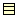 Class. Add a class to the diagram. For convenience, when the mouse is over a selected class it displays two handles to left and right which may be dragged to form association relationships and two handles top and bottom which may be dragged to form generalization and specialization relationships respectively.
-
Association. Add an association between two
artifacts selected using button 1 motion (from the first artifact
to the second artifact).
-
Dependency. Add a dependency between two artifacts
selected using button 1 motion (from the dependent
artifact).
-
Generalization. Add a generalization between two
artifacts selected using button 1 (from the child to the
parent).
 Interface. Add an interface to the
diagram. For convenience, when the mouse is over a selected interface
it displays a handle at the bottom which may be dragged to form a
realization relationship (the target being the realizing
class).
Interface. Add an interface to the
diagram. For convenience, when the mouse is over a selected interface
it displays a handle at the bottom which may be dragged to form a
realization relationship (the target being the realizing
class). Realization. Add a realization between a class and
an interface selected using button 1 motion (from the realizing
class to the realized interface).
Realization. Add a realization between a class and
an interface selected using button 1 motion (from the realizing
class to the realized interface). Add Attribute. Add an attribute to the
currently selected class. The attribute is given the default name
newAttr of type int and may be
edited by button 1 double click and using the keyboard, or by
selecting with button 1 click (after the class has been selected)
and using the property tab.
Add Attribute. Add an attribute to the
currently selected class. The attribute is given the default name
newAttr of type int and may be
edited by button 1 double click and using the keyboard, or by
selecting with button 1 click (after the class has been selected)
and using the property tab.Note This tool is grayed out except when a class or interface is selected.
Caution In the current release of ArgoUML this tool is not grayed out for intefaces as it should be (attributes are not permitted for interfaces in the UML 1.3 standard). However the tool has no effect if selected for an interface.
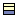 Add Operation. Add an operation to the currently selected class or interface. The operation is given the default name newOperation with no arguments and return type void and may be edited by button 1 double click and using the keyboard, or by selecting with button 1 click (after the class has been selected) and using the property tab.
Note This tool is grayed out except when a class or interface is selected.
Six tools are provided specific to UML artifacts on sequence diagrams. The detailed properties of these artifacts are described in the section on sequence diagram artifacts (see Chapter 17, ArgoUML Sequence Diagram Artifact Reference).
 Object. Add an object to the
diagram.
Object. Add an object to the
diagram. Stimulus Call. Add a call stimulus between two
objects selected using button 1 motion (from the originating object
to the receiving object).
Stimulus Call. Add a call stimulus between two
objects selected using button 1 motion (from the originating object
to the receiving object).Stimulus Create. Add a create stimulus between two objects selected using button 1 motion (from the originating object to the receiving object).
 Stimulus Destroy. Add a destroy stimulus between
two objects selected using button 1 motion (from the originating
object to the receiving object).
Stimulus Destroy. Add a destroy stimulus between
two objects selected using button 1 motion (from the originating
object to the receiving object). Stimulus Send. Add a send stimulus between two
objects selected using button 1 motion (from the originating object
to the receiving object).
Stimulus Send. Add a send stimulus between two
objects selected using button 1 motion (from the originating object
to the receiving object). Stimulus Return. Add a return stimulus between two
objects selected using button 1 motion (from the originating object
to the receiving object).
Stimulus Return. Add a return stimulus between two
objects selected using button 1 motion (from the originating object
to the receiving object).
Ten tools are provided specific to UML artifacts on state diagrams. The detailed properties of these artifacts are described in the section on state diagram artifacts (see Chapter 18, ArgoUML State Diagram Artifact Reference).
 State. Add a state to the
diagram.
State. Add a state to the
diagram. Composite State. Add a composite state to the
diagram. All artifacts that are subsequently placed on the diagram on
top of the composite state will form part of that composite
state.
Composite State. Add a composite state to the
diagram. All artifacts that are subsequently placed on the diagram on
top of the composite state will form part of that composite
state. Transition. Add a transition between two states
selected using button 1 motion (from the originating state to the
receiving state).
Transition. Add a transition between two states
selected using button 1 motion (from the originating state to the
receiving state). Initial. Add an initial pseudostate to the
diagram.
Initial. Add an initial pseudostate to the
diagram.Caution There is nothing to stop you adding more than one initial state to a diagram or composite state. However to do so is meaningless, and one of the critics will complain.
Final State. Add a final state to the diagram.
 Branch. Add a branch pseudostate to the
diagram.
Branch. Add a branch pseudostate to the
diagram.Caution A well formed branch should have one incoming transition and two or more outgoing. ArgoUML does not enforce this, but an ArgoUML critic will complain about any branch that does not follow this rule.
 Fork. Add a fork pseudostate to the
diagram.
Fork. Add a fork pseudostate to the
diagram.Caution A well formed fork should have one incoming transition and two or more outgoing. ArgoUML does not enforce this, but an ArgoUML critic will complain about any fork that does not follow this rule.
 Join. Add a join pseudostate to the
diagram.
Join. Add a join pseudostate to the
diagram.Caution A well formed join should have one outgoing transition and two or more incoming. ArgoUML does not enforce this, but an ArgoUML critic will complain about any join that does not follow this rule.
 Shallow History. Add a shallow history pseudostate
to the diagram.
Shallow History. Add a shallow history pseudostate
to the diagram. Deep History. Add a deep history pseudostate
to the diagram.
Deep History. Add a deep history pseudostate
to the diagram.
Three tools are provided specific to UML artifacts on collaboration diagrams. The detailed properties of these artifacts are described in the section on collaboration diagram artifacts (see Chapter 19, ArgoUML Collaboration Diagram Artifact Reference).
 Classifier Role. Add a classifier role to the
diagram.
Classifier Role. Add a classifier role to the
diagram. Association Role. Add an association role between
two classifier roles selected using button 1 motion (from the
originating classifier role to the receiving classifier
role).
Association Role. Add an association role between
two classifier roles selected using button 1 motion (from the
originating classifier role to the receiving classifier
role). Add Message. Add a message to the selected
association role.
Add Message. Add a message to the selected
association role.Note This tool is grayed out except when an association role is selected.
Seven tools are provided specific to UML artifacts on activity diagrams. The detailed properties of these artifacts are described in the section on activity diagram artifacts (see Chapter 20, ArgoUML Activity Diagram Artifact Reference).
 Action State. Add an action state to the
diagram.
Action State. Add an action state to the
diagram.-
Transition. Add a transition between two action
states selected using button 1 motion (from the originating action
state to the receiving action state).
-
Initial. Add an initial pseudostate to the
diagram.
Caution There is nothing to stop you adding more than one initial state to a diagram. However to do so is meaningless, and one of the critics will complain.
Final State. Add a final state to the diagram.
-
Branch. Add a branch pseudostate to the
diagram.
Caution A well formed branch should have one incoming transition and two or more outgoing. ArgoUML does not enforce this, but an ArgoUML critic will complain about any branch that does not follow this rule.
-
Fork. Add a fork pseudostate to the
diagram.
Caution A well formed fork should have one incoming transition and two or more outgoing. ArgoUML does not enforce this, but an ArgoUML critic will complain about any fork that does not follow this rule.
-
Join. Add a join pseudostate to the
diagram.
Caution A well formed join should have one outgoing transition and two or more incoming. ArgoUML does not enforce this, but an ArgoUML critic will complain about any join that does not follow this rule.
Ten tools are provided specific to UML artifacts on deployment diagrams. The detailed properties of these artifacts are described in the section on deployment diagram artifacts (see Chapter 21, ArgoUML Deployment Diagram Artifact Reference).
| Note |
|---|---|
Remember that ArgoUML's deployment diagrams are also used for component diagrams. | |
Node. Add a node to the diagram. For convenience, when the mouse is over a selected node it displays four handles to left, right, top and bottom which may be dragged to form association relationships.
 Node Instance. Add a node instance to the
diagram. For convenience, when the mouse is over a selected node
instance it displays four handles to left, right, top and bottom
which may be dragged to form link relationships.
Node Instance. Add a node instance to the
diagram. For convenience, when the mouse is over a selected node
instance it displays four handles to left, right, top and bottom
which may be dragged to form link relationships.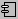 Component. Add a component to the diagram. For convenience, when the mouse is over a selected component it displays four handles to left, right, top and bottom which may be dragged to form dependency relationships.
 Component Instance. Add a component instance to
the diagram. For convenience, when the mouse is over a selected
component instance it displays four handles to left, right, top and
bottom which may be dragged to form dependency
relationships.
Component Instance. Add a component instance to
the diagram. For convenience, when the mouse is over a selected
component instance it displays four handles to left, right, top and
bottom which may be dragged to form dependency
relationships.-
Dependency. Add a dependency between two artifacts
selected using button 1 motion (from the dependent
artifact).
Class. Add a class to the diagram. For convenience, when the mouse is over a selected class it displays two handles to left and right which may be dragged to form association relationships.
Note Unlike a class diagram, two handles top and bottom which may be dragged to form generalization and specialization relationships are not shown. Such relationships may not be described on a deployment or component diagram.
-
Interface. Add an interface to the diagram.
Caution In the current release of ArgoUML, when the mouse is over a selected interface it displays a handle at the bottom. This suggests this may be dragged to form a realization relationship as in a class diagram. Such relationships may not be displayed on a deployment or component diagram, and this handle has no effect.
-
Association. Add an association between two
artifacts (node, component, class or interface) selected using
button 1 motion (from the first artifact to the second
artifact).
Caution The constraint that associations between classes and interfaces must not be navigable from the interface still applies on deployment diagrams.
-
Object. Add an object to the diagram. For
convenience, when the mouse is over a selected object it displays
four handles to left, right, top and bottom, which may be dragged to
form link relationships.
 Link. Add a link between two artifacts
(node instance, component instance or object) selected using
button 1 motion.
Link. Add a link between two artifacts
(node instance, component instance or object) selected using
button 1 motion.
A key feature of ArgoUML are the critics, which run in parallel with the main ArgoUML tool. When they find a problem, they typically raise a to-do item, and also highlight the problem on the editing pane. The graphical techniques used for highlighting are called Clarifiers
Note icon (
 ). Displayed at the top
left of an artifact indicates a critic of that artifact. Moving the
mouse over the icon will pop up the critic headline.
). Displayed at the top
left of an artifact indicates a critic of that artifact. Moving the
mouse over the icon will pop up the critic headline.Colored wavy line (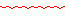). Used for critics specific to sub-components of graphical artifacts. For example to underline attributes with a problem within a class.
Solid colored line (
 ). Not seen in ordinary
editing, but used when a to-do item is highlighted from the to-do pane
(see Chapter 11, The To-Do Pane) by button 1 double click. The
solid line is used to show all the artifacts affected by the critic,
for example all stimuli that are out of order.
). Not seen in ordinary
editing, but used when a to-do item is highlighted from the to-do pane
(see Chapter 11, The To-Do Pane) by button 1 double click. The
solid line is used to show all the artifacts affected by the critic,
for example all stimuli that are out of order.
The editing pane is provided with a background grid which can be set in various styles or turned off altogether through the Edit menu (see Section 12.5.6, “Adjust Grid”).
Whatever grid is actually displayed, placement of items on the diagram is always controlled by the setting for grid snap, which ranges from 4 to 32 pixels (see Section 12.5.7, “Adjust Grid Snap”).
At the bottom of the editing pane is a small tab labeled as As Diagram. The concept is that a UML diagram can be displayed in a number of ways, for example as a graphical diagram or as a table. Each representation would have its own tab and be selected by button 1 click on the tab.
Earlier versions of ArgoUML did implement a tabular representation, but the current release only supports a diagram representation, so this tab is of null function.
In addition you can use button 1 double click on this tab to spawn a copy of the current diagram (see Section 7.5.2, “Looking at Different Diagrams Simultaneously” for more details).
Within the editing pane, button 2 click over an artifact will bring up a pop-up menu with up to six main entries, each with a sub-menu.
This sub-menu gives list of all the critics that have triggered for this artifact. Selection of a menu entry causes that entry to be highlighted in the to-do pane and its detailed explanation to be placed in the ToDoItem tab of the details pane.
This menu controls the ordering of overlapping artifacts on the diagram. It is equivalent to the Reorder sub-menu of the Arrange menu (see Section 12.7.3, “The Reorder Sub-Menu”). There are four entries.
 Forward. The selected artifacts are moved one
step forward in the ordering hierarchy with respect to
other artifacts they overlap.
Forward. The selected artifacts are moved one
step forward in the ordering hierarchy with respect to
other artifacts they overlap. Backward. The selected artifacts are moved one
step back in the ordering hierarchy with respect to
other artifacts they overlap.
Backward. The selected artifacts are moved one
step back in the ordering hierarchy with respect to
other artifacts they overlap. To
Front. The selected artifacts are moved to the front of
any other artifacts they overlap.
To
Front. The selected artifacts are moved to the front of
any other artifacts they overlap. To
Back. The selected artifacts are moved to the back of any
other artifacts they overlap.
To
Back. The selected artifacts are moved to the back of any
other artifacts they overlap.
This sub-menu only appears for artifacts that can have notes attached (class, interface, object, state, pseudostate) or have operations or attributes added (class, interface). There are at most three entries.
-
Add Attribute. Only appears where the selected
artifact is a class or interface. Adds an attribute to the
artifact
Add Operation. Only appears where the selected artifact is a class or interface. Adds an operation to the artifact
-
Note. Attaches a note to the selected
artifact.
This sub-menu only appears with use case, class or object artifacts. It is used to control whether the extension point compartment is displayed for use cases and whether the attribute and operation compartments are displayed for classes and objects. There are six possible entries, but at most three show at any one time.
Hide Extension Point Compartment. Only appears when the extension point compartment of a use case is displayed. Hides the compartment.
Show Extension Point Compartment. Only appears when the extension point compartment of a use case is hidden. Displays the compartment.
Hide All Compartments. Only appears when both attribute and operation compartments are displayed on a class or object. Hides both compartments.
Show All Compartments. Only appears when both attribute and operation compartments are hidden on a class or object. Displays both compartments.
Hide Attribute Compartment. Only appears when the attribute compartment of a class or object is displayed. Hides the compartment.
Show Attribute Compartment. Only appears when the attribute compartment of a class or object is hidden. Displays the compartment.
Hide Operation Compartment. Only appears when the operation compartment of a class or object is displayed. Hides the compartment.
Show Operation Compartment. Only appears when the operation compartment of a class or object is hidden. Displays the compartment.
This sub-menu only appears with class artifacts. It is used to set or clear the values of the various modifiers available.
Public. Set if this class is visible outside its package.
Abstract. Set for an abstract class.
Final. Set for a final class, i.e. one with no subclasses.
Root. Set for a root class, i.e. one with no superclasses.
Active. Set for a class with dynamic behavior.
Note This really ought to be set automatically for classes with state machines or activity diagrams.
This sub-menu only appears with association artifacts. It is used to control the multiplicity at the end of the association nearest the mouse click point. There are only four entries, a sub-set of the range of multiplicities that are available through the property sheet of a association end (see Section 15.6, “Association End”).
1
0..1
1..*
0..*
This sub-menu only appears with association artifacts. It is used to control the aggregation at the end of the association nearest the mouse click point. There are three entries.
none. Remove any aggregation.
aggregate. Make this end a shared aggregation (loosely known as an “aggregation”).
composite. Make this end a composite aggregation (loosely known as a “composition”).
| Warning |
|---|---|
UML requires that at most one end of an association has any aggregation relationship. The current release of ArgoUML has a known problem where it believes any end whose aggregation has not been explicity set is in some form of aggregation (although this is not shown on the diagram or property sheet). This will trigger a critic. The solution is to change the aggregation to one of the aggregate forms and then back to none to explicitly set no aggregation. | |
| Caution |
|---|---|
UML requires that an end with a composition relationship must have a multiplicity of 1 (the default). | |
This sub-menu only appears with association artifacts. It is used to control the navigability of the association. There are three entries.
bidirectional. Make the association navigable in both directions.
<class1> to <class2>. Make the association navigable only from <class1> to <class2>. In other words <class1> can reference <class2> but not the other way round.
<class2> to <class1>. Make the association navigable only from <class2> to <class1>. In other words <class2> can reference <class1> but not the other way round.
| Note |
|---|---|
UML does permit an association to be non-navigable in both directions. If you want this, you will have to set each of the association ends navigation property, reached from the property tab of the association. This is considered bad design practice (it will trigger a critic in ArgoUML), so is only of theorertical interest. | |
| Note |
|---|---|
UML does not permit navigability from an interface to a class. This drop down is disabled for associations between interfaces and classes. | |
Table of Contents
- 10.1. Introduction
- 10.1.1. Spawning Details Tabs
- 10.2. Mouse Behavior in the Details Pane
- 10.2.1. Button 1 Click
- 10.2.2. Button 1 Double Click
- 10.2.3. Button 2 Actions
- 10.2.4. Button 2 Double Click
- 10.2.5. Button 2 Motion
- 10.3. To Do Item Tab
- 10.4. Properties Tab
- 10.5. Documentation Tab
- 10.6. Style Tab
- 10.7. Source tab
- 10.8. Constraints Tab
- 10.8.1. The Constraint Editor
- 10.9. Tagged Values Tab
- 10.10. Checklist Tab
| Caution |
|---|---|
This chapter is not fully gone through and updated to fit the 0.14 release of ArgoUML but describes the version 0.10 instead. This means that some of the functions might not work exactly as described and icons and screenshots does not look exactly like in the 0.14 version. | |
Figure 10.1 shows the ArgoUML window, with the details pane highlighted.
For any artifact within the system, this pane is where all its associated data is viewed and entered.
The Pane has a series of tabs at the top, which are selected by button 1 click, through the View > Details Tabs menu or through the menu shortcuts. The body of a tab is a menu of items to be checked, selected or entered specific to the particular tab selected.
Of these, the Properties Tab is by far the most complex, with a different presentation for each artifact within the system. The detailed descriptions of the properties tab for each artifact are the subject of separate chapters covering the artifacts that may appear on the various diagrams (see Chapter 14, ArgoUML Top Level Artifact Reference through Chapter 21, ArgoUML Deployment Diagram Artifact Reference).
Tabs in the details pane may be spawned as separate stand alone windows, by button 1 double click on the tab. See Section 7.5.2, “Looking at Different Diagrams Simultaneously” for more information.
Behavior of the mouse in general, and the naming of the buttons is covered in the chapter on the overall user interface (see Chapter 7, User Interface Reference).
This action is generally used to select an item for subsequent operations. For fields of the property tab that are references to other artifacts this will navigate to that artifact.
Where button 2 click has been used to bring up a context sensitive pop-up menu (see below), button 1 click is used to select the menu entry required. button 1 click outside the menu area will remove it.
In general this has no effect other than that of button 1 single click.
However you can “spawn” a copy of any tab by double-clicking on the tab. It will then show as an individual window and you can put it where you will on the screen.
When used over text field entries in the the properties tab, this may display a context dependent pop-up menu (depending on the field). Menu entries are highlighted (but not selected) and sub-menus exposed by subsequent mouse motion (without any buttons). Menu entry selection is with button 1
If the entry generating the menu has not yet been highlighted it will also be highlighted.
This tab provides control over the various to-do items raised by the ArgoUML critics (discussed in more detail in the section on the Critique menu—see Section 12.9, “The Critique Menu”). Figure 10.2 shows a typical pane. The to-do item is selected with button 1 in the to-do pane (see Chapter 11, The To-Do Pane) or by using the Critiques context sensitive pop-up menu on the editing pane.
The body of the tab describes the problem found by the critic and outlines how it can be fixed. To the left are four buttons.
 New To Do Item…
This launches a dialog box (see
Figure 10.3), which allows you to
create your own to-do item, with its own headline (which appears in the
to-do pane), priority for the to-do pane, reference URL and detailed
description for further information.
New To Do Item…
This launches a dialog box (see
Figure 10.3), which allows you to
create your own to-do item, with its own headline (which appears in the
to-do pane), priority for the to-do pane, reference URL and detailed
description for further information.Warning In the current release of ArgoUML these to-do notes are not saved, and so will be lost. They should not be used at this stage.
 Resolve Item…
This pops up a dialog allowing the user to resolve the selected
to-do item (see Figure 10.4).
This is an important dialog, because it allows you to deal with
to-do items in ways other than the recommendation of the to-do item
(which is the whole point of their being advisory).
Resolve Item…
This pops up a dialog allowing the user to resolve the selected
to-do item (see Figure 10.4).
This is an important dialog, because it allows you to deal with
to-do items in ways other than the recommendation of the to-do item
(which is the whole point of their being advisory).At the top are three buttons, which will dismiss the selected item, labeled 1) It is not relevant to my goals, 2) It is not of concern at the moment, and 3) Reason given below. If you choose the third of these you should first enter a reason in the main text box.
Tip If you wish to resolve a to-do item by following its recommendations, just make the recommended changes and the to-do item will disappear of its own accord.There is no need to use this dialog.
Caution Because of the layout of the dialog box in the current release of ArgoUML, it is all to easy to click the Reason given below button before entering a reason.
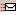 Send Email To Expert… This pops up a dialog allowing the user to send Email to an expert asking for advice.
Note This feature is currently disabled because the target address of the email i.e. the expert is not available. One idea is to direct these kind of messages to the Users' mailing list users@argouml.tigris.org.
 Snooze Critic
This suspends the activity of the critic that generated the current
to-do item. The to-do item (and all others generated by the critic)
will disappear from the to-do pane.
Snooze Critic
This suspends the activity of the critic that generated the current
to-do item. The to-do item (and all others generated by the critic)
will disappear from the to-do pane.The critic will wake up after a period of time. Initially this period is 10 minutes, but it doubles on each successive application of the Snooze button. The critic can be awakened explicitly through the Critique > Browse Critics… menu (see Section 12.9.4, “Browse Critics…”).
Tip Some common critics can fire the whole time as you build a big diagram. Some users find it useful to snooze these critics until the diagram has been completed.

Some of the more common critics now have a “wizard” available to help in fixing the problem. This comprises a series of pages in the To Do Item tab that step you through the changes. The wizard is driven through the first three buttons at the bottom of the tab.
Back. This will take you back to the previous step in the wizard. Grayed out if this is the first step.
Next. This will take you back to the next step in the wizard. Grayed out if this is the last step.
Finish. This will commit the changes you have made through the wizard. Grayed out until you get to the last step.
| Note |
|---|---|
Not all to-do items yet have wizards in the current release of ArgoUML. If there is no wizard all three buttons will remain grayed out. | |
There is one remaining button at the bottom of the To Do Item tab, labeled Help. This will fire up a browser to a URL with further help.
| Warning |
|---|---|
In the current release of ArgoUML the URLs are generally invalid. The few that are valid have no information. | |
Customization of the critics menu is possible through the Browse critics… menu (see Section 12.9.4, “Browse Critics…”).
Through this tab, the properties of artifacts selected in the explorer or editing pane may be set. The properties of an artifact may be displayed in one of two ways:
Selection of the artifact in the explorer or editing panes, followed by selection of the properties tab in the details pane; or
Context sensitive pop-up menu Properties (using button 2 click) on an artifact in the editing or explorer, which will select the item andselect the Properties tab in the details pane.
Figure 10.5 shows a typical properties tab for an artifact in ArgoUML (in this case a class).

At the top left is the icon and name of the type of artifact (i.e. the UML metaclass, not the actual name of this particular artifact). In this example the property tab is for a class.
To the right of this is a toolbar of icons relevant to this property tab. The first three are always navigation (Go up, Go back and Go forward). The last is always Delete to delete the selected artifact from the model.
The remainder of the tab comprises fields, laid out in two or three columns. Each field has a label to its left. The fields may be text boxes, text areas, drop down selectors, radio boxes and check boxes. In most (but not all cases) the values can be changed. In the case of text boxes this is sometimes by just typing the required value.
However for most text boxes and all text areas, data entry is usually via a context sensitive pop-up menu (using button 2 click), which offers options to open an entry (i.e. transfer to its property sheet), add a new entry, delete an entry or move entries up and down (in text areas with multiple entries).
The first field is almost always a text field Name, where the name of the specific artifact can be entered. The remaining fields vary depending on the artifact selected.
The detailed property sheets for all ArgoUML artifacts are discussed in separate chapters for each of the diagram types (use case diagram (Chapter 15, ArgoUML Use Case Diagram Artifact Reference, class diagram (Chapter 16, ArgoUML Class Diagram Artifact Reference, sequence diagram (Chapter 17, ArgoUML Sequence Diagram Artifact Reference, state diagram (Chapter 18, ArgoUML State Diagram Artifact Reference, collaboration diagram (Chapter 19, ArgoUML Collaboration Diagram Artifact Reference, activity diagram (Chapter 20, ArgoUML Activity Diagram Artifact Reference, deployment diagram (Chapter 21, ArgoUML Deployment Diagram Artifact Reference). Property sheets for artifacts that are common to all diagram type have their own chapter (Chapter 14, ArgoUML Top Level Artifact Reference).
| Caution |
|---|---|
ArgoUML will always try to squeeze all fields on to the property sheet. If the size of the property tab is too small, it may become unusable. The solution is to either enlarge the property tab by moving the dividers to left and top, or to split it off altogether as a separate window (see Section 7.5.2, “Looking at Different Diagrams Simultaneously”). | |
Within the UML 1.3 standard, all artifacts are children of the Element metaclass. The Element metaclass defines a tagged value documentation for comment, description or explanation of the element to which it is attached. Since this tagged value applies to every artifact, it is given its own tab in the details pane, rather than being part of the Tagged Values tab.
Figure 10.6 shows a typical documentation tab for an artifact in ArgoUML.

The fields on this tab are the same for all artifacts.
Author: A text box for the author of the documentation.
Version: A text box for the version of the documentation.
Since: A text box to show how long the documentation has been valid.
Deprecated: A check box to indicate whether this artifact is deprecated (i.e. planned for removal in future versions of the design model).
See: Pointers to documentation outside the system.
Documentation: Literal text of any documentation.
| Tip |
|---|---|
ArgoUML is not primarily a documentation system. For artifacts that require heavy documentation, notably use cases, the use of the See: field to point to external documents is more practical. | |
This tab provides some limited control over the graphical representation of artifacts in the editing pane.
| Caution |
|---|---|
Artifacts that do not have any specific direct graphical representation on the screen (beyond their textual description) do not have style tabs of their own. They show the style tab of their nearest parent that does have a style sheet, and any changes will affect that parent. For example the style sheet of an operation on a class will be the style sheet of the class. | |
Style sheets vary a little from artifact to artifact, but Figure 10.7 shows a typical style tab for an artifact in ArgoUML (in this case an interface).
There may be further fields in some cases, but the four fields shown are common to many artifacts.
Bounds: This defines the corners of the bounding box for a 2D artifact. It comprises four numbers separated by periods. These four numbers are respectively: i) the X coordinate of the upper left corner of the box; ii) the Y coordinate of the upper left corner of the box; iii) the width of the box; and iv) the height of the box. All units are pixels on the editing pane.
Caution This field has no effect on 1D artifacts that link other artifacts (associations, generalizations etc), since their position is constrained by their connectedness.
Warning In the current version of ArgoUML there is strange behavior when typing in this field. Be wary of the cursor jumping around unexpectedly.
Fill: This drop-down selector specifies the fill color for 2D artifacts. It is not present for line artifacts.
Line: This drop-down selector specifies the line color for artifacts.
Shadow: This drop-down selector specifies the width of the shadow (if any) for 2D artifacts. It is not present for line artifacts.
This tab is a single box, containing the source code that will be generated for this artifact. ArgoUML generates a template of the code required (most specifically for classes). The intention is that you will add artifact specific code here, and it will be incorporated.
| Warning |
|---|---|
This is part of ArgoUML that is very much under development. At this stage any code you add will be lost. | |
Constraints are one of the extension mechanisms provided for UML. ArgoUML is equipped with a powerful constraint editor based on the Object Constraint Language (OCL) defined in the UML 1.3 standard.
The standard pre-defines a small number of constraints (for example the xor constraint over a set of associations indicating that only one may be manifest for any particular instance.
The standard also envisages a number of circumstances where general purpose constraints may be useful:
To specify invariants on classes and types in the class model;
To specify type invariants for stereotypes;
To describe pre- and post-conditions on operations and methods;
To describe guards;
As a navigation language; and
To specify constraints on operations.
Figure 10.8 shows a typical constraint tab for a artifact in ArgoUML (in this case a class).
Along the top of the tab are a series of icons.
 New Constraint. This creates a new constraint and
launches the constraint editor in the Constraints
tab for that new constraint (see
Section 10.8.1, “The Constraint Editor”). The new constraint
is created with a context declaration for the currently selected
artifact.
New Constraint. This creates a new constraint and
launches the constraint editor in the Constraints
tab for that new constraint (see
Section 10.8.1, “The Constraint Editor”). The new constraint
is created with a context declaration for the currently selected
artifact.Delete Constraint. The constraint currently selected in the Constraint Name box (see below) is deleted.
 Edit Constraint. This launches the constraint editor
in the Constraints tab (see
Section 10.8.1, “The Constraint Editor”). The editor is
invoked on the constraint currently selected in the
Constraint Name box.
Edit Constraint. This launches the constraint editor
in the Constraints tab (see
Section 10.8.1, “The Constraint Editor”). The editor is
invoked on the constraint currently selected in the
Constraint Name box.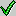 Check OCL Syntax. This button is intended to check the syntax of the selected constraint.
Caution In the current release of ArgoUML this button is always grayed out on the main Constraints tab. It may only be invoked from within the constraint editor (see Section 10.8.1, “The Constraint Editor”).
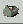 Configure Constraint Editor. This a dialog to configure options in the constraint editor (see Figure 10.9).
The dialog box has a check box for two options, both enabled by default.
Check type conformance of OCL constraints. OCL is strictly typed. At the early stages of design it may be helpful to disable type checking, rather than follow through all the detailed specification needed to get type consistency.
AutoSplit: Automatically split apart multiple constraints entered as a single text. If you enter multiple constraints in the editor, this will cause them to be split into separate constraints.
At the bottom are two buttons, labeled OK (to accept the option changes) and Cancel (to discard the changes).

To the right of the toolbar is a check box labeled Syntax Assistant (unchecked by default), which will enable the syntax assistant in the constraint editor (see Section 10.8.1, “The Constraint Editor”).
| Caution |
|---|---|
In the current release of ArgoUML this check box is always grayed out on the main Constraints tab. It may only be changed from within the constraint editor. | |
The main body of the constraints tab comprises two boxes, a smaller to the left and a larger one to the right. The two are separated by two small arrow buttons which control the size of the boxes.
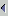 Shrink Left. Button 1 click on this icon shrinks the box on the left. Its effect may be reversed by use of the Shrink Right button (see below).
 Shrink Right. Button 1 click on this icon shrinks
the box on the right. Its effect may be reversed by use of the
Shrink Left button (see
above).
Shrink Right. Button 1 click on this icon shrinks
the box on the right. Its effect may be reversed by use of the
Shrink Left button (see
above).
Finer control can be achieved by using button 1 motion to drag the dividing bar to left and right.
The box on the left is titled Constraint Name and lists all the constraints (if any) so far defined for the selected artifact. A constraint may be selected by button 1 click.
The box on the right is labeled Preview and contains the text of the constraint. Where a constraint is too large for the box, a scroll bar is provided to the right.
This is invoked through the use of the New Constraint or Edit Constraint buttons on the main Constraints tab. The constraint editor takes up the whole tab (see Figure 10.10).
Along the top of the tab are a series of icons.
-
New Constraint. This is intended to create a new
constraint for editing.
Caution In the current release of ArgoUML this button is always grayed out in the constraints editor. It can only be invoked from the main Constraints tab (see Section 10.8, “Constraints Tab”).
Delete Constraint. The constraint is intended to delete the constraint being edited.
Caution In the current release of ArgoUML this button is always grayed out in the constraints editor. It can only be invoked from the main Constraints tab (see Section 10.8, “Constraints Tab”).
 Cancel Edit Constraint. This exits the constraint
editor without saving any changes and returns to the main
Constraints tab.
Cancel Edit Constraint. This exits the constraint
editor without saving any changes and returns to the main
Constraints tab.Check OCL Syntax. This button invokes a full syntax check of the OCL written in the editor. If the syntax is valid, the constraint is saved, and control returns to the main Constraints tab. If the syntax is not valid, a dialog box explains the problem.
Tip Whether type checking is included is configurable using the Configure Constraint Editor button (see Section 10.8, “Constraints Tab” for more details).
Configure Constraint Editor. This a dialog to configure options in the constraint editor. It is also available in the main Constraints tab and is discussed in detail there (see Section 10.8, “Constraints Tab”).
To the right of the toolbar is a check box labeled Syntax Assistant (unchecked by default), which will enable the syntax assistant in the constraint editor.
If the syntax assistant is enabled, six drop down menus are provided in a row immediately after the toolbar. These provide standard templates for OCL that, when selected, will be inserted into the constraint being edited.
General. General OCL constructors. Entries: inv (inserts an invariant); pre (inserts a pre-condition); post (inserts a post-condition); self (inserts a self-reference); @pre (inserts a reference to a value at the start of an operation); and result (inserts a reference to a previous result).
Basic Operators. Relational operators and parentheses. Entries: =; <>; <; >; <=; >=; and ().
Numbers. Arithmetic operators and functions. Entries: +; -; *; /; mod; div; and abs.
Strings. String functions. Entries: concat; size; toLower; toUpper; and substring.
Booleans. Logical functions. Entries: or; and; xor; not; implies; and if then else.
Collections. Operators and functions on collections—bags, sets and sequences. The large number of functions are organized into sub-groups.
General. Functions that apply to all types of collection. Entries: Collection {} (insert a new collection); Set {} (insert a a new set); Bag {} (insert a new bag); Sequence {} (insert a new sequence); size; count; isEmpty; notEmpty; includes; includesAll; iterate; exists; forAll; collect; select; reject; union; intersection; including; excluding; and sum.
Sets. Operators and functions that apply only to sets. Entries: - (set difference); and symmetricDifference.
General. Functions that apply to sequences. Entries: first; last; at; append; prepend; and subSequence.
The remainder of the tab comprises a writable text area containing the text to be edited. The mouse buttons have their standard behavior within an editable text area (see Section 7.4, “General Mouse Behavior in ArgoUML”).
In addition, cut, copy and paste operations may be invoked through the keyboard shortcuts Ctrl-X, Ctrl-C and Ctrl-V respectively.
| Warning |
|---|---|
There is a known problem with the current release of ArgoUML. The Cut, Copy and Paste functions on the Edit menu cannot be used within the constraint editor. If used they will work on the currently selected artifact in the editing pane. Given the known problems with these menu buttons in the current release of ArgoUML (see Section 12.4.4, “ Cut”, Section 12.4.5, “ Copy” and Section 12.4.6, “ Paste”) this could disrupt the model. It should be avoided at all costs. | |
Tagged values are another extension mechanism provided by UML. The user can define name-value pairs to be associated with artifacts which define properties of that artifact. The names are known as tags. UML pre-defines a number of tags that are useful for many of its artifacts.
| Note |
|---|---|
The documentation tag is defined for the top UML metaclass, Element and is so available to all artifacts. In ArgoUML documentation values are provided through the Documentation tab, rather than by using the Tagged Values tab. | |
The Tagged Values tab in ArgoUML comprises a simple two column table, with an editable box on the left for the tag name and an editable box on the right for the associated value. There is always at least one empty row available for any new tag. The mouse buttons have their standard behavior within an editable text area (see Section 7.4, “General Mouse Behavior in ArgoUML”).
In addition, cut, copy and paste operations may be invoked through the keyboard shortcuts Ctrl-X, Ctrl-C and Ctrl-V respectively.
| Warning |
|---|---|
There is a known problem with the current release of ArgoUML. The Cut, Copy and Paste functions on the Edit menu cannot be used within the constraint editor. If used they will work on the currently selected artifact in the editing pane. Given the known problems with these menu buttons in the current release of ArgoUML (see Section 12.4.4, “ Cut”, Section 12.4.5, “ Copy” and Section 12.4.6, “ Paste”) this could disrupt the model. It should be avoided at all costs. | |
Table of Contents
- 11.1. Introduction
- 11.2. Mouse Behavior in the To-Do Pane
- 11.2.1. Button 1 Click
- 11.2.2. Button 1 Double Click
- 11.2.3. Button 2 Actions
- 11.2.4. Button 2 Double Click
- 11.3. Presentation Selection
- 11.4. Flat/Hierarchical Button
- 11.5. Item Count
| Caution |
|---|---|
This chapter is not fully gone through and updated to fit the 0.14 release of ArgoUML but describes the version 0.10 instead. This means that some of the functions might not work exactly as described and icons and screenshots does not look exactly like in the 0.14 version. | |
Figure 11.1 shows the ArgoUML window with the to-do pane highlighted.

This pane provides access to the advice that comes from the critics processes running within ArgoUML.
A selector box at the top allows a choice of how the data is presented, a button allows the display of the hierarchy to be changed, and there is an indicator of the number of to-do items identified.
More information on critics can be found in the discussion of the Critique menu (see Section 12.9, “The Critique Menu”).
Behavior of the mouse in general, and the naming of the buttons is covered in the chapter on the overall user interface (see Chapter 7, User Interface Reference).
This action is generally used to select an item for subsequent operations.
Within the hierarchical display, elements which have
sub-hierarchies may be indicated by
 when the hierarchy is
hidden and
when the hierarchy is
hidden and
 when the hierarchy is
open.
when the hierarchy is
open.
When these icons are displayed, the display of the hierarchy is toggled by button 1 click on these icons.
| Tip |
|---|---|
It is possible to turn off the display of these icons using the Flat button in the explorer. | |
Button 1 click over the headline of any to-do item will cause its details to be shown in the To Do Item tab of the details pane. That tab is automatically selected if it is not currently visible.
When applied to the folder icon alongside a hierarchy category, this will cause the display of that hierarchy to be toggled.
When applied to a headline, button 1 double click will show the diagram for the artifact to which the to-do item applies in the editing pane and select the artifact on the diagram using an appropriate clarifier (the artifact may be highlighted, underlined with a wavy line or surrounded by a colored box as appropriate).
At the top of the pane is a drop-down selector controlling how the to-do items are presented. The to-do items may be presented in six different ways.
By Priority. The to-do items are organized into three hierarchies by priority: High, Medium and Low. The priority associated with the to-do items generated by a particular critic may be altered through the Critique > Browse Critics… menu (see Section 12.9.4, “Browse Critics…”).
By Decision. The to-do items are organized into 16 hierarchies by design issue: Uncategorized, Class Selection, Naming, Storage, Planned Extensions, MState Machines, Design Patterns, Relationships, Instantiation, Modularity, Expected Usage, Methods, Code Generation, Stereotypes, Inheritance and Containment. The details of the critics in each category are discussed in Section 12.9.2, “Design Issues…”.
By Goal. ArgoUML has a concept that critics may be grouped according to the user goals they affect. This presentation groups the to-do items into hierarchies by goal.
Caution In the current release of ArgoUML there is only one goal, Unspecified and all to-do items will appear under this heading.
By Offender. The to-do items are organized into a hierarchy according to the artifact that caused the problem.
Caution In the current release of ArgoUML collaboration and sequence diagrams which generate to-do items sometimes appear with internal package reference names, rather than their given name.
By Poster. The to-do items are organized into a hierarchy according to which critic generated the to-do item.
Caution In the current release of ArgoUML the fully qualified class name of the critic is given instead of just its headline name.
By Knowledge Type. ArgoUML has the concept that a critic reflects a deficiency in a category of knowledge. This presentation option groups the critics according to their knowledge category: Designer's, Correctness, Completeness, Consistency, Syntax, Semantics, Optimization, Presentational, Organizational, Experiencial and Tool.
To the right of the presentation selections is a button which toggles
whether hierarchies are shown with “twisties”
(
 ) to indicate the
hierarchy.
) to indicate the
hierarchy.
 Hierarchical. The current presentation uses
“twisties” to show the hierarchy. Button 1 click will on
the icon will switch to a representation without
them.
Hierarchical. The current presentation uses
“twisties” to show the hierarchy. Button 1 click will on
the icon will switch to a representation without
them. Flat. The current presentation does not use
“twisties” to show the hierarchy. Button 1 click will on
the icon will switch to a representation which has
them.
Flat. The current presentation does not use
“twisties” to show the hierarchy. Button 1 click will on
the icon will switch to a representation which has
them.
| Caution |
|---|---|
The current version of ArgoUML (as described above) really has the flat/hierarchical icons logically back to front. | |
To the right of the flat/hierarchical button is a count of the number of to-do items currently found, highlighted in yellow. This is followed by + to indicate the last change in number was an increase or - to indicate the last change in number was a decrease.
| Caution |
|---|---|
This count will not show if the to-do pane is shrunk too small. | |
Table of Contents
- 12.1. Introduction
- 12.2. Mouse Behavior in the Menu Bar
- 12.2.1. Button 1 Click
- 12.2.2. Button 1 Double Click
- 12.2.3. Button 1 Motion
- 12.2.4. Button 2 Actions
- 12.2.5. Button 2 Double Click
- 12.2.6. Button 2 Motion
- 12.3. The File Menu
- 12.3.1. New…
- 12.3.2. Open Project…
- 12.3.3. Save Project
- 12.3.4. Save Project As…
- 12.3.5. Import…
- 12.3.6. Load Model From DB
- 12.3.7. Save Model To DB
- 12.3.8. Print…
- 12.3.9. Save Graphics…
- 12.3.10. Save Configuration
- 12.3.11. Exit
- 12.4. The Edit Menu
- 12.4.1. The Select Sub-Menu
- 12.4.2. Undo
- 12.4.3. Redo
- 12.4.4. Cut
- 12.4.5. Copy
- 12.4.6. Paste
- 12.4.7. Remove From Diagram
- 12.4.8. Delete From Model
- 12.4.9. Empty trash
- 12.4.10. Settings…
- 12.5. The View Menu
- 12.5.1. Goto Diagram…
- 12.5.2. Find…
- 12.5.3. The Zoom Sub-Menu
- 12.5.4. The Editor Tabs Sub-Menu
- 12.5.5. The Details Tabs Sub-Menu
- 12.5.6. Adjust Grid
- 12.5.7. Adjust Grid Snap
- 12.5.8. Adjust Page Breaks
- 12.5.9. Buttons on Selection
- 12.5.10. The Notation Sub-Menu
- 12.6. The Create Diagram Menu
- 12.6.1. Class Diagram
- 12.6.2. Use Case Diagram
- 12.6.3. State Diagram
- 12.6.4. Activity Diagram
- 12.6.5. Collaboration Diagram
- 12.6.6. Deployment Diagram
- 12.6.7. Sequence Diagram
- 12.7. The Arrange Menu
- 12.7.1. The Align Sub-Menu
- 12.7.2. The Distribute Sub-Menu
- 12.7.3. The Reorder Sub-Menu
- 12.7.4. The Nudge Sub-Menu
- 12.7.5. The Layout Sub-Menu
- 12.8. The Generation Menu
- 12.8.1. Generate Selected Classes
- 12.8.2. Generate All Classes
- 12.9. The Critique Menu
- 12.9.1. Toggle Auto-Critique
- 12.9.2. Design Issues…
- 12.9.3. Design Goals…
- 12.9.4. Browse Critics…
- 12.10. The Tools Menu
- 12.11. The Help Menu
- 12.11.1. About Argo/UML
| Caution |
|---|---|
This chapter is not fully gone through and updated to fit the 0.14 release of ArgoUML but describes the version 0.10 instead. This means that some of the functions might not work exactly as described and icons and screenshots does not look exactly like in the 0.14 version. | |
An important principle behind ArgoUML is that actions should be able to be invoked in whatever way the user finds convenient. As a result many (but not all) actions that can be carried out on the menu can be carried out in other ways as well under ArgoUML.
A number of the common menu entries are also available through keyboard shortcuts.
| Warning |
|---|---|
It should also be possible to navigate the menu from the keyboard, Motif style. Each level of each menu is identified by a letter (shown underlined in the menu or entry name). This sequence of letters while holding down the ALT key should select the entry. In the current version of ArgoUML this functionality is only available when running under Microsoft Windows. | |
Behavior of the mouse in general, and the naming of the buttons is covered in the chapter on the overall user interface (see Chapter 7, User Interface Reference).
Over a top level drop down menu this will expose the menu. If the button is held down and moved, the behavior of button 1 motion (see below) will follow.
Over an exposed menu entry this will invoke the action of the menu.
Within menu dialog boxes this will generally select a text item, and invoke a button action.
Moving over a top level menu, or a sub-menu will cause that menu to be exposed.
If the button is released (thereby completing a click) over a menu entry that entry will be invoked.
In general button 2 double click behaves as button 1 click with the menu bar.
These are actions concerned with input and output and the overall management of projects and the ArgoUML system.
Shortcut Ctrl-N.
This initializes a new project within ArgoUML. The project is created with the name untitledModel and with two empty diagrams: a class diagram and a use case diagram.
| Note |
|---|---|
Although the entry is named New… there is no dialog—the project is just created. The entry should properly be just New. | |
| Caution |
|---|---|
untitledModel is not a conventional model name (most processes suggest models should start with an upper case letter). ArgoUML permits you to use a lower case letter, but a critic will trigger to warn that this is not conventional. See Section 14.2, “The Model” for a discussion of this. | |
Shortcut Ctrl-O.
This opens an existing project. Selecting this menu option will open a file selection dialog (see Figure 12.1).
At the top of the dialog is a drop down selector labeled
Look in:, specifying the currently selected
directory preceded by the folder icon,
 . The drop down selector
gives access to all directories above this directory.
. The drop down selector
gives access to all directories above this directory.
Next to this are four icons:
 to move up a directory;
to move up a directory;
 to select the users home
directory,
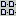 to specify that a simple
file list is displayed; and
to select the users home
directory,
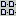 to specify that a simple
file list is displayed; and
 (which is always grayed
out) that would show details of all files if enabled.
(which is always grayed
out) that would show details of all files if enabled.
The main body of the dialog is a text area with a listing of all files in the currently selected directory which match the current filter (see below). If these will not all fit on the display, scroll bars are provided to move up and down.
In the lower portion of the dialog is a text box labeled File name: for the name of the file to be opened. The file name may be typed directly in here, or selected from the directory listing above using button 1 click.
Beneath this is a drop down selector labeled Files of type: to specify a filter on the files to be shown in the directory listing. Only files that match the filter are listed. The available filters are:
all files;
zipped Argo project files (the default);
Argo project files; and
XMI format files.
Argo project files are produced by earlier releases of ArgoUML, XMI files allow you to use diagrams from other tools (which may not always work!).
To the right of the file name and filter are two buttons, Open and Cancel to open the selected project or cancel the operation.
| Note |
|---|---|
Open will only succeed if a valid filename is provided. | |
Shortcut Ctrl-S.
This saves the project using its current file name.
| Note |
|---|---|
A newly created project (see Section 12.3.1, “ New…”) will not have been saved to file. And so this entry is grayed out. Use Save Project As… to save the project to a file for the first time (see Section 12.3.4, “Save Project As…”). | |
This opens a dialog allowing you to save the project under a different file name (or to specify a file name for the first time if the project is a new project).
| Caution |
|---|---|
If you are using an experimental version of ArgoUML you will receive a warning message that file formats are not guaranteed to be supported in the long term. You should be cautious about using unstable versions of the system for important projects. | |
The dialog box is identical to that for Open Project (see Figure 12.1). The Files of type: also specifies the file type used for saving, and you should choose a filename with the corresponding ending.
| Tip |
|---|---|
Zipped Argo Project files, ending in .zargo (the default) are the most efficient way of saving projects. They capture all the model and graphical information in a very compact format. | |
This sub-menu provides access to mechanisms to import a variety of material into ArgoUML. In the current version of ArgoUML only one type of import is provided as standard, the importing of Java code for reverse engineering.
| Note |
|---|---|
Despite being named Import… there is no dialog box associated with the Import menu itself (there may be with the sub-menu entries). It should strictly speaking be labeled just Import on the menu. | |
A very powerful feature of ArgoUML is that it can “Reverse Engineer” Java code to yield a class diagram. This sub-menu entry specifies Java code to be imported for reverse engineering.
The dialog box is very similar to that for Open Project (see Figure 12.1), but with two extra tabs placed alongside the directory listing, as shown in Figure 12.2).
Those fields that are the same as Open Project behave in the same way (see Section 12.3.2, “ Open Project…”).
| Caution |
|---|---|
The only file filter provided selects all files. However reverse engineering is currently only available, and Java source files only should be selected. | |
The first of the two tabs is labeled General and is selected by button 1 click on its tab. It provides a single check box Descend directories recursively. If enabled (the default), reverse engineering will track through sub-directories for any further Java files. If not it will restrict to the selected directory.
The second of the two tabs is labeled Java and is selected by button 1 click on its tab. It provides two pairs of radio boxes.
The first radio box allows selection between modeling attributes of Java classes as UML attributes (the default) or as UML associations to the class specified.
The second radio box allows selection between modeling arrays as new datatypes in their own right (the default) or as their base datatype with multiplicity.
ArgoUML has the ability to save models to and from an SQL database. However the code for this is quite old, and at present this menu option is grayed out.
ArgoUML has the ability to save models to and from an SQL database. However the code for this is quite old, and at present this menu option is grayed out.
Shortcut Ctrl-P.
This brings up a dialog box allowing the ArgoUML model to be printed out.
| Warning |
|---|---|
In the current release of ArgoUML this function behaves strangely if you have no printer configured under Linux. A small dialog box appears, but it has no functionality. | |
This menu entry brings up a dialog box allowing the currently selected diagram (in the editing pane) to be saved in one of a number of graphic formats.
The dialog box is identical to that for Open Project (see Figure 12.1). The Files of type: also specifies the graphics type used for saving, and you should choose a filename with the corresponding ending.
The available graphics types are:
GIF (the default);
Postscript;
Encapsulated Postscript; and
Scalable Vector Graphics (SVG).
The filter also allows you to specify all files, in which case the file type is deduced from the filename ending.
| Caution |
|---|---|
You should be aware that there are patent issues surrounding GIF files and act accordingly. There are currently no such concerns about SVG. | |
| Warning |
|---|---|
If you use the all files filter and specify a filename ending that ArgoUML does not support (i.e. anything other than .gif, .ps, .eps and .svg) ArgoUML will silently do nothing. | |
ArgoUML has various user specific configurations that can be set, both through the Settings… entry on the Edit menu (see Section 12.4.10, “Settings…”) and directly on the various panes. This menu entry saves the information in the file argo.user.properties in the users home directory.
| Tip |
|---|---|
This is a text file, which you can edit to configure ArgoUML. | |
Shortcut Alt-F4.
This closes down ArgoUML A warning message will pop-up if you have a project open with unsaved changes asking if you wish to save it. The three options are:
Yes (save the project and exit ArgoUML);
No (do not save the project, but still exit ArgoUML); and
Cancel (do not save the project and do not exit ArgoUML).
This menu provides support for selecting artifacts on the editing pane; an undo/redo function; cut, copy and paste functions; removal of artifacts from diagrams and the model; and control of user settings.
This sub-menu provides for selection of items on the editing menu. It has four entries.
Select All (shortcut Ctrl-A). Selects all artifacts on the editing pane.
Select Previous. ArgoUML has a concept of the ordering of artifacts on a diagram. This selects the item prior to the currently selected item in that ordering.
Caution The behavior of this menu function can be very strange, selecting items that do not appear to be on any diagram. It is probably best avoided.
Select Next. Similarly this selects the item following the currently selected item in that ordering.
Caution Again the behavior of this menu function can be very strange, selecting items that do not appear to be on any diagram. It is probably best avoided.
Invert Selection. This inverts the current selection (i.e. everything that was selected is de-selected and everything that was not selected is selected).
This is intended to undo editing actions.
| Warning |
|---|---|
In the current implementation of ArgoUML this function is not available and is permanently grayed out. | |
This is intended to redo editing actions—that is to reverse the effect of the Undo function.
| Warning |
|---|---|
In the current implementation of ArgoUML this function is not available and is permanently grayed out. | |
Shortcut Ctrl-X.
This should take the currently selected items, remove them from the diagram, and place them on the clipboard for subsequent pasting.
| Warning |
|---|---|
In the current implementation of ArgoUML there are some difficulties with clipboard based functions. This menu option is permanently grayed out. | |
Shortcut Ctrl-C.
This should take the currently selected items and make a copy of them on the clipboard for subsequent pasting.
| Warning |
|---|---|
If the original item is deleted from the model or removed from the diagram, subsequent pasting will produce a copy that has no namespace, and cannot be properly saved. In addition pasting back to the diagram from which the copy was made will replace the original, rather than duplicating it. In the light of this, the copy function is best avoided. | |
Shortcut Ctrl-V.
This should paste the item(s) last cut or copied to the clipboard on to the current diagram in the drawing pane.
| Warning |
|---|---|
If the original item has since been deleted from the model or removed from the diagram, pasting will produce a copy that has no namespace, and cannot be properly saved. In addition pasting back to the diagram from which the copy was made will replace the original, rather than duplicating it. In the light of this, the paste function is best avoided. | |
Shortcut Delete.
This removes the currently selected item(s) from the diagram, but not from the model.
| Caution |
|---|---|
In previous versions of ArgoUML there was a problem where, in some circumstances, the item(s) were deleted from the model completely, not just from the diagram. This is now believed to be fixed, but you should consider saving your model prior to using this function. | |
Shortcut Ctrl-Delete.
This function deletes the selected item(s) from the model completely.
| Caution |
|---|---|
In the current version of ArgoUML the item(s) may not disappear from diagrams other than the current one. However the copies on other diagrams will have no associated properties. They should be deleted, or will disappear after the model is saved and reloaded. | |
This menu function has no discernible effect. It is believed to invoke a garbage collection in the Java system.
This menu entry brings up a dialog box, which allows the user to set various options that control the behavior of ArgoUML (see Figure 12.3).

The options that can be set up on the various tabs are described in the following sections. For each tab there are three buttons at the bottom of the dialog box.
OK. Selecting this button (button 1 click) applies the chosen settings and exits the dialog.
Cancel. Selecting this button (button 1 click) exits the dialog without applying any settings changed since the last Apply (or since the dialog started if Apply has not been used).
Apply. Selecting this button (button 1 click) applies the chosen settings and remains in the dialog.
These settings can be saved for use by subsequent ArgoUML sessions (see Section 12.3.10, “Save Configuration”).
Selecting the Preferences tab (button 1 click on the tab) gives four options as check boxes.
Show Splash Panel (set by default). If enabled ArgoUML will show a small panel with a picture while loading.
Tip The splash panel can be seen by using the Help menu (see Section 12.11.1, “About Argo/UML”).
Preload Common Classes (set by default). If enabled ArgoUML creates class objects of a number of classes internally during start up so that instantiation is quicker when they are needed.
Report Usage Statistics (set by default). If enabled usage statistics are reported on the console.
Caution In the current version of ArgoUML there is only a very small amount of information, which may be missed amongst the other console output.
Report on Load Times (clear by default). If enabled load times at start up for the various phases of initialization are reported.
Caution These times are only of use to developers—they have no meaning to the ordinary user.
Selecting the Environment tab (button 1 click on the tab) lists seven environmental items. Note that none of these can be set—this tab is just a matter of record.
${argo.root}. The directory holding the top level argo class definitions. By default the classes sub-directory of the ArgoUML build directory.
${argo.home}. The ArgoUML build directory.
${argo.ext.dir}. The directory holding ArgoUML extensions—by default the ext sub-directory of the ArgoUML build directory.
${java.home}. The home directory of the Java Runtime Environment (JRE).
${user.home}. The user's home directory.
${user.dir}. The directory from which ArgoUML was started.
startup directory. The directory in which ArgoUML starts file searches etc.
This tab allows the user to record additional information of use to the system. There are two text boxes provided.
Full Name:. Allows the user to record their full name.
Email Address:. Allows the user to record their Email address.
This information is used when requesting to-do help by Email.
This tab allows the user to specify certain notation settings. It comprises two check boxes.
Only allow strict UML notation text (clear by default). This feature is for future use. One possibility is that a designer may create a diagram and indicate that the notation of the diagram is Java. Someone viewing the diagram with strict UML notation checked will only see UML notation in the classes no matter what notation the designer has used. See also Section 12.5.10, “The Notation Sub-Menu”).
Warning This is not currently supported and is not a commitment to the feature of assigning a notation to a diagram either.
Use guillemots (« ») for stereotypes (clear by default). By default ArgoUML uses pairs of “less than” and “greater than” (<< >>) characters for stereotypes If this box is checked stereotypes on diagrams are shown between true guillemots (« »).
Caution This feature is not fully implemented in the current version of ArgoUML.
This menu is used for actions that affect how the various panes are viewed.
This menu entry brings up a dialog box, describing all the diagrams in the current project under ArgoUML (see Figure 12.4).

The dialog box is in the form of a tab containing a table with four columns and one row for each diagram in the current project. A scroll bar gives access if the list is too long for the box. Double button 1 click on any row will select that diagram in the editing pane. The four columns are as follows.
Type. Lists the type of diagram.
Caution In the current release of ArgoUML activity diagrams, collaboration diagrams, sequence diagrams and deployment diagrams are all listed as type Diagram.
Name. Lists the name given to the diagram.
In Diagram. This shows the diagram in which the digram is contained. Since diagrams cannot be contained within other diagrams, this always shows the entry N/A.
Tip This column is present, because this menu item reuses the code for the more general Find menu.
Description. Shows how many nodes and edges there are on the diagrams. The number of “2-D” artifacts and the number of connector artifacts respectively.
This menu entry brings up a dialog box for the ArgoUML search engine (see Figure 12.5).
| Warning |
|---|---|
In the current version of ArgoUML this function is largely broken. The only item that can ever be found is the model itself, and it is not possible (or meaningful) to navigate to this item's diagram. | |
At the top level, the dialog box has four tabs labeled Name and Location, Last Modified, Tagged Values and Constraints. Of these all but the first are grayed out, so the first tab is always selected.
The tab is split into three areas vertically. The top third specifies the search to be made. A text box labeled Element Name: specifies the name of the element (or artifact) to search for. Wild cards (*, ?) may be used here. A drop down gives access to search expressions previously used. A text box labeled In Diagram: specifies which diagrams are to be searched. Again wild cards may be used. Both these two text boxes have a default entry of *, i.e. match anything.
To the right of these two text boxes, a selector labeled Element Type: allows you to specify the UML metaclass for which you are searching.
| Caution |
|---|---|
The names in of the element types use the NovoSoft UML convention, being the UML metaclass name preceded by M. Not all metaclasses are available. | |
A selector labeled Entire Project allows the search to be made over the entire project (the default) or as a sub-search over the results of a previous search.
Beneath these boxes are two buttons.
Clear Tabs. This clears the display of tabs with the results from previous searches (see below). The results are still available however for sub-searching.
Search. This causes the search specified in the text boxes and selectors above to be executed. The results are displayed in a tab taking up the lower two thirds of the page.
The lower two thirds of the dialog comprises an initial tab (labeled Help) giving summary help, and further tabs displaying the results of searches. These search tabs are labeled with a summary of the search element in diagram and are divided horizontally in two halves.
The top half is labeled Search Results: followed by a count of the number of items found. It comprises a table with one row for each element (artifact) and four columns.
Type. Lists the type of element (artifact).
Name. Lists the name given to the element (artifact).
In Diagram. Where the artifact is visible on a diagram, this lists the name of the diagram, otherwise it shows N/A.
Caution The behavior when an item is on more than one diagram is unknown.
Description. Contains a description of the element (artifact). At present this seems to be restricted to the single entry docs.
Button 1 click on any row will give more information on that artifact and show related artifacts in the bottom half (see below). Double click on any row describing an artifact on a diagram and that item and diagram will be selected.
The bottom half of the tab is a table labeled Related Elements: and is a table with the same columns as the top half. When an element (artifact) has been selected in the top half, this table shows the details of any related elements.
This entry brings up a sub-entry, which scales the view of the current diagram to a given percentage of its notional size.
The sub-menu values that can be selected are 25%, 50%, 75%, 100%, 125%, 150%.
When created all diagrams are at a zoom level of 100%.
| Warning |
|---|---|
The current version of ArgoUML has a known problem, where zoom may not work on some diagrams. | |
The editing pane is conceived as a multi-mode editor, allowing you to edit a UML diagram from a number of perspectives.
As a diagram. This views the diagram in conventional graphical terms and is the default.
As a table. The artifacts on the diagram are listed in a table with a column for each of their properties, which may be edited.
Note Although this representation was available in ArgoUML 0.8, it is not supported in the current version.
As metrics. This representation is yet to be defined and is not currently available in ArgoUML.
The various representations may be selected by button 1 click on the corresponding tab at the bottom of the editing pane. Since the current version of ArgoUML only supports a diagram representation, there is only one tab labeled As Diagram.
The Editor Tabs sub-menu has four entries.
Next Editing Tab (shortcut F6). Selects the next tab on the editing pane.
Caution Since there is only one editing tab in the current version of ArgoUML, As Diagram, this always selects that representation, and is thus a null operation.
As Diagram (shortcut Alt+Shift-1). Selects the As Diagram tab on the editing pane.
As Table (shortcut Alt+Shift-2). Selects the As Table tab on the editing pane.
Caution Since table representation is not supported in the current version of ArgoUML this entry is always grayed out and not available.
As Metrics (shortcut Alt+Shift-3). Selects the As Metrics tab on the editing pane.
Caution Since metrics representation is not supported in the current version of ArgoUML this entry is always grayed out and not available.
This provides a sub-menu allowing selection of the various tabs on the details pane for the currently selected artifact. The sub-menu has nine entries.
Next Details Tab (shortcut F5). Selects the next available tab in the details pane.
Note If a tab is not available, it is skipped (for example a diagram text box only has ToDoItem, Properties and Source tabs, with all other tabs grayed out).
ToDoItem (shortcut Alt-1). Selects the ToDoItem tab for the currently selected artifact.
Properties (shortcut Alt-2). Selects the Properties tab for the currently selected artifact.
Caution The Properties tab will be selected even if it is not available for the current artifact, in which case it will be completely blank.
Javadocs (shortcut Alt-3). Selects the Javadocs tab for the currently selected artifact.
Warning The current version of ArgoUML has no Javadocs tab, so this entry is always grayed out.
Source (shortcut Alt-4). Selects the Source tab for the currently selected artifact.
Caution The Source tab will be selected even if it is not available for the current artifact, in which case it will just hold the grayed out text Nothing selected
Constraints (shortcut Alt-5). Selects the Constraints tab for the currently selected artifact.
Warning The Constraints tab will be selected even if it is not available for the current artifact, in which case it will present a standard constraints tab with no entries. The side effects of entering any data are unknown.
Tagged Values (shortcut Alt-6). Selects the Tagged Values tab for the currently selected artifact.
Warning The Tagged Values tab will be selected even if it is not available for the current artifact, in which case it will contain arbitrary data. The side effects of altering this data are unknown.
Checklist (shortcut Alt-7). Selects the Checklist tab for the currently selected artifact.
Caution The Checklist tab will be selected even if it is not available for the current artifact, in which case it will be completely blank.
History (shortcut Alt-8). Selects the History tab for the currently selected artifact.
Warning The current version of ArgoUML has no History tab, so this entry is always grayed out.
This cycles the grid representation on the screen through the following sequence:
dots at 16 pixel spacing (the default);
dots at 32 pixel spacing;
no grid of any form;
full grid at 16 pixel spacing; and
full grid at 8 pixel spacing.
| Warning |
|---|---|
A known problem with the current version of ArgoUML means that altering the grid may cause problems with the display, particularly if no grid is selected. | |
This cycles the spacing of grid snapping through the following sequence:
snap at 8 pixel spacing (the default);
snap at 16 pixel spacing;
snap at 32 pixel spacing; and
snap at 4 pixel spacing.
| Note |
|---|---|
There is no option to turn off snap to grid altogether | |
| Caution |
|---|---|
In the current version of ArgoUML this is not actually a true snap to grid. It just defines the increments by which artifacts are moved around. Thus if an item has an X coordinate of 4 and Grid Snap is set to 8, moving will take it to X coordinates of 12, 20, 28 etc, not 8, 16, 24 etc If you wish to align on true grid snap boundaries, you can use the Arrange > Align To Grid menu (see Section 12.7.1, “The Align Sub-Menu”). | |
This toggles whether page breaks are shown on the diagram (as white dotted lines).
| Caution |
|---|---|
This is incorrectly named and implemented in the current version of ArgoUML, since there is no mechanism to alter the page breaks. It should be a tick box toggle labeled Page Breaks Visible | |
If this menu option is enabled, certain artifacts on diagrams will display graphic handles when selected that can be dragged to create connections of various types (associations, generalizations) to other artifacts.
| Caution |
|---|---|
The label is somewhat misleading. It is better thought of as Handles On Selection. | |
This sub-menu presents a radio box with two options.
| Note |
|---|---|
This feature is not completely handled throughout ArgoUML, primarily because the multi-notation support is still rather new. See also Section 12.4.10.4, “Notation Tab”). | |
In the future, this feature will define the user's default notation. At some point ArgoUML will allow defining a class in a diagram as being represented using a specific notation.
For example a class Able which is represented in Java, and class Baker which is represented in C++, with class Able using class Baker and a class Charlie which references Able, but does not have a specific notation defined for the diagram element.
In this situation, Charlie would be represented in the default notation, while Able and Baker would be represented as defined in the diagram element. Changing the default notation would cause Charlie's notation to change but not Able or Baker.
 Uml.1.3. Uses UML notation as the default
notation for classes.
Uml.1.3. Uses UML notation as the default
notation for classes. Java. Uses Java notation as the default notation
for classes.
Java. Uses Java notation as the default notation
for classes.
This menu provides for creating the various types of UML diagrams supported by ArgoUML.
This menu entry creates a blank class diagram, and selects that diagram in the editing pane. If a package is currently selected, the class diagram will be created within that package, it will be shown within the package on the explorer hierarchy (under Package-centric view) and artifacts created on the diagram will be created within the namespace of the package.
| Tip |
|---|---|
This does not prevent artifacts from other namespaces/packages appearing on the diagram. They can be added from the explorer using Add to Diagram from the button 2 pop-up menu. | |
This menu entry creates a blank use case diagram, and selects that diagram in the editing pane. If a package is currently selected, the use case diagram will be created within that package, it will be shown within the package on the explorer hierarchy (under Package-centric view) and artifacts created on the diagram will be created within the namespace of the package.
| Tip |
|---|---|
This does not prevent artifacts from other namespaces/packages appearing on the diagram. They can be added from the explorer using Add to Diagram from the button 2 pop-up menu. | |
This menu entry creates a blank state diagram associated with the currently selected class, and selects that diagram in the editing pane. Artifacts created on the diagram will be created within the namespace of the owning class.
| Caution |
|---|---|
State diagrams must be associated with a class. In the current version of ArgoUML the State Diagram menu entry is not grayed out if a class is not selected. However invoking the menu entry will have no effect. | |
This menu entry creates a blank activity diagram associated with the currently selected class, and selects that diagram in the editing pane. Artifacts created on the diagram will be created within the namespace of the owning class.
| Caution |
|---|---|
Activity diagrams must be associated with a class. In the current version of ArgoUML the Activity Diagram menu entry is not grayed out if a class is not selected. However invoking the menu entry will have no effect. | |
This menu entry creates a blank collaboration diagram, and selects that. Within the package hierarchy, collaboration diagrams are always created within a Collaboration, within the package or model, rather than within the package or model directly itself. If a package is currently selected, the collaboration diagram will be created within a collaboration within that package, it will be shown within the collaboration within the package on the explorer hierarchy (under Package-centric view) and artifacts created on the diagram will be created within the namespace of the collaboration within the package.
| Tip |
|---|---|
This does not prevent artifacts from other namespaces/packages appearing on the diagram. They can added from the explorer using Add to Diagram from the button 2 pop-up menu. | |
This menu entry creates a blank deployment diagram, and selects that diagram in the editing pane. If a package is currently selected, the deployment diagram will be created within that package, it will be shown within the package on the explorer hierarchy (under Package-centric view) and artifacts created on the diagram will be created within the namespace of the package.
| Tip |
|---|---|
This does not prevent artifacts from other namespaces/packages appearing on the diagram. They can added from the explorer using Add to Diagram from the button 2 pop-up menu. | |
This menu entry creates a blank sequence diagram, and selects that diagram in the editing pane. If a package is currently selected, the sequence diagram will be created within that package, it will be shown within the package on the explorer hierarchy (under Package-centric view) and artifacts created on the diagram will be created within the namespace of the package.
| Tip |
|---|---|
This does not prevent artifacts from other namespaces/packages appearing on the diagram. They can added from the explorer using Add to Diagram from the button 2 pop-up menu. | |
This menu provides a range of functions to help in the alignment of artifacts on diagrams within the editing pane. In general the menu function invoked is applied to any artifact or artifacts currently selected in the editing pane.
This sub-menu aligns the selected items. There are seven alignment options provided.
 Align
Tops. Aligns the selected artifacts by their top
edges.
Align
Tops. Aligns the selected artifacts by their top
edges. Align
Bottoms. Aligns the selected artifacts by their bottom
edges.
Align
Bottoms. Aligns the selected artifacts by their bottom
edges.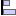 Align Lefts. Aligns the selected artifacts by their left edges.
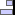 Align Rights. Aligns the selected artifacts by their right edges.
 Align
Horizontal Centers. Aligns the selected artifacts so their
horizontal centers are in a vertical line.
Align
Horizontal Centers. Aligns the selected artifacts so their
horizontal centers are in a vertical line. Align
Vertical Centers. Aligns the selected artifacts so their
vertical centers are in a horizontal line.
Align
Vertical Centers. Aligns the selected artifacts so their
vertical centers are in a horizontal line. Align To
Grid. Aligns the selected artifacts so their top and right
edges are on the grid snap boundary (see
Section 12.5.7, “Adjust Grid Snap”) edge.
Align To
Grid. Aligns the selected artifacts so their top and right
edges are on the grid snap boundary (see
Section 12.5.7, “Adjust Grid Snap”) edge.Caution The alignment is to the current grid snap setting, which may be smaller, larger or the same as the displayed grid. Since items are aligned to the grid snap boundary any way when you place them, this menu entry has no effect unless you have either changed the grid snap to a larger value or used one of the other Arrange menu entries to push items off their initial positions.
This sub-menu distributes the selected items. There are four distribution options provided.
 Distribute
Horizontal Spacing. The leftmost and rightmost selected
artifacts are not moved. The others are adjusted horizontally until
the horizontal space (i.e. from the right edge of the left artifact
to the left edge of the right artifact) is the same for all of
the selected items
Distribute
Horizontal Spacing. The leftmost and rightmost selected
artifacts are not moved. The others are adjusted horizontally until
the horizontal space (i.e. from the right edge of the left artifact
to the left edge of the right artifact) is the same for all of
the selected items Distribute
Horizontal Centers. The leftmost and rightmost selected
artifacts are not moved. The others are adjusted horizontally until
the distance between the horizontal centers of all the selected
items is the same.
Distribute
Horizontal Centers. The leftmost and rightmost selected
artifacts are not moved. The others are adjusted horizontally until
the distance between the horizontal centers of all the selected
items is the same.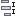 Distribute Vertical Spacing. The top and bottom selected artifacts are not moved. The others are adjusted vertically until the vertical space (i.e. from the bottom edge of the top artifact to the top edge of the bottom artifact) is the same for all of the selected items
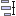 Distribute Vertical Centers. The top and bottom selected artifacts are not moved. The others are adjusted vertically until the distance between the vertical centers of all the selected items is the same.
This sub-menu adjusts the ordering of overlapping items. There are four reorder options provided.
- To
Back. The selected artifacts are moved to the back of any
other artifacts they overlap.
- To
Front. The selected artifacts are moved to the front of
any other artifacts they overlap.
-
Backward. The selected artifacts are moved one
step back in the ordering hierarchy with respect to
other artifacts they overlap.
-
Forward. The selected artifacts are moved one
step forward in the ordering hierarchy with respect to
other artifacts they overlap.
This sub-menu provides fine adjustment to the positioning of selected artifacts. There are four nudge options provided.
 Nudge
Left. The selected artifacts are moved one pixel to the
left.
Nudge
Left. The selected artifacts are moved one pixel to the
left. Nudge
Right. The selected artifacts are moved one pixel to the
right.
Nudge
Right. The selected artifacts are moved one pixel to the
right. Nudge
Up. The selected artifacts are moved up one
pixel.
Nudge
Up. The selected artifacts are moved up one
pixel. Nudge
Down. The selected artifacts are moved up one
pixel.
Nudge
Down. The selected artifacts are moved up one
pixel.
This provides control of layout of items on class diagrams during reverse engineering (see Section 12.3.5.1, “ Import Sources…”). It provides two options.
Automatic. Automated layout.
Incremental. Incremental layout.
| Caution |
|---|---|
For all except class diagrams, the two menu entries are grayed out and unavailable (since reverse engineering only creates a class diagram). For class diagrams only the Automatic option is available. So the utility of this menu entry is somewhat limited. | |
This menu provides support for code generation from UML diagrams. The functionality is built around the structural information of class diagrams.
| Note |
|---|---|
The current version of ArgoUML supports only code generation of Java. Future work will extend this to other languages. | |
| Caution |
|---|---|
This is still very much a work in progress. The current version of ArgoUML will generate a structural template for your code, but is not able to handle behavioral specifications to generate code for the dynamic behavior of the model. | |
This menu entry brings up a dialog box for the ArgoUML code generator (see Figure 12.6).
Below a label Generate Classes: the dialog box lists each of the selected classes by name with a check box to the left, which is initially checked. Unchecking any of these boxes will omit code generation for that class.
In the lower portion of the dialog box is a text box labeled Output Directory: to specify the directory in which code is generated. Within this directory, a top level directory will be created with the name of the model. Further sub-directories will be created to reflect the package/namespace hierarchy of the model. A drop down selector gives access to previously selected output directories.
Beneath this a check box labeled compile generated source (clear by default) controls whether the generated code should be compiled.
Finally, at the bottom of the dialog box are two buttons, labeled Generate and Cancel. Button 1 on the former will cause the code to be generated, button 1 on the latter will cancel code generation.
| Note |
|---|---|
Strictly speaking this menu entry should be labeled Generate Selected Classes…, since it invokes a dialog box. | |
Shortcut F7.
This function behaves as Generate Selected Classes (see Section 12.8.1, “Generate Selected Classes”) would with all classes in the model selected.
This menu controls one of ArgoUML's unique features—the use of critics to guide the designer. The theory behind this is well described in Jason Robbins' PhD dissertation http://argouml.tigris.org/docs/robbins_dissertation/.
| Note |
|---|---|
A word about terminology. The critics are background processes, which evaluate the current model according to various “good” design criteria. There is one critic for every design criterion. The output of a critic is a critique—a statement about some aspect of the model that does not appear to follow good design practice. Finally a critique will generally suggest how the bad design issue it has identified can be rectified, by raising a to-do item. | |
| Note |
|---|---|
The critics run as asynchronous processes that run in parallel with the main ArgoUML tool. Changes typically take a second or two to propagate as the critics wake up. | |
This is a check box, controlling whether the critics are running. By default it is checked. If unchecked, then all critics are disabled, and any to-do items generated by critics (the only others being those the designer has added by hand) are hidden in the to-do pane.
This menu entry brings up a dialog box controlling how critics associated with a particular design areas are to be handled (see Figure 12.7).
ArgoUML categorizes critics according the the design issue they address. At present there are 16 such categories. The critics in each category are discussed in detail in the chapter on critics (Chapter 13, The Critics).
Uncategorized. Unused (see Section 13.2, “Uncategorized”.
Class Selection. Three critics (see Section 13.3, “Class Selection”.
Naming. Nineteen critics (see Section 13.4, “Naming”.
Storage. Four critics (see Section 13.5, “Storage”.
Planned Extensions. Three critics (see Section 13.6, “Planned Extensions”.
MState Machines. Fourteen critics (see Section 13.7, “MState Machines”.
Design Patterns. Sixteen critics (see Section 13.8, “Design Patterns”.
Relationships. Seven critics (see Section 13.9, “Relationships”.
Instantiation. Unused (see Section 13.10, “Instantiation”.
Modularity. Two critics (see Section 13.11, “Modularity”.
Expected Usage.One critic (see Section 13.12, “Expected Usage”.
Methods. Four critics (see Section 13.13, “Methods”.
Code Generation. One critic (see Section 13.14, “Code Generation”.
Stereotypes. Unused (see Section 13.15, “Stereotypes”.
Inheritance. Ten critics (see Section 13.16, “Inheritance”.
Containment. Six critics (see Section 13.17, “Containment”.
The sliders may be set for each category to control the critics that trigger for that category. Setting a slider to zero will disable all critics in that category, and remove all associated to-do items from the to-do pane.
Setting a slider to a higher value will enable all critics at or above that priority level within the design issue category (1 being the highest priority and 5 the lowest.
| Note |
|---|---|
The sliders are set by default to 5 for all design categories except Uncategorized which is set to 1. | |
| Caution |
|---|---|
In the current release of ArgoUML all critics trigger at priority 1, so any higher values of the slider make no difference. | |
This menu entry brings up a dialog box controlling how design goals are to be handled (see Figure 12.8).
ArgoUML has the concept that the designer will have a number of design goals to be achieved (for example good structural representation, detailed behavioral representation etc). Critics are associated with one or more goals.
This dialog allows the user to specify the priority of each design goal.
The sliders may be set for each design goal to control the critics that trigger for that goal. Setting a slider to zero will disable all critics in that goal, and remove all associated to-do items from the to-do pane.
Setting a slider to a higher value will enable all critics at or above that priority level within the design issue category (1 being the highest priority and 5 the lowest.
| Tip |
|---|---|
It may be useful to think of this function as very similar to Design Issues… (see Section 12.9.2, “Design Issues…”, but with grouping of critics according to the outcomes of OOA&D rather than grouping according to the structure of UML. | |
| Caution |
|---|---|
The current version of ArgoUML provides a single design goal, Unspecified, with its slider set by default to priority 1. However it contains no critics and so has no effect. | |
This menu entry brings up a dialog box controlling the individual critics (see Figure 12.9).

This dialog controls the behavior of individual critics. To the left is a list of all the critics. For each critic there are three columns, labeled X, Headline and Active. The first of these is a check box, which may be toggled with button 1 click. The second is the headline name of the critic, the third contains the word Active or Inactive. A critic is inactive if the box in the first column is unchecked or the box is checked, but the critic has been snoozed from the to-do pane (see Chapter 11, The To-Do Pane
Any critic for which the box in the first column is unchecked is inactive and will not trigger. In addition any to-do items associated with that critic will be removed from the to-do pane.
| Note |
|---|---|
In the current version of ArgoUML all critics but one are active by default. The one exception is Remove <class>'s Circular Inheritance. | |
The current version of ArgoUML has a total of 78 critics. They are described in detail by design issue category in the chapter on critics (see Chapter 13, The Critics).
Resolve Association Name Conflict. See Section 13.4.1, “Resolve Association Name Conflict”
Revise Attribute Names to Avoid Conflict. See Section 13.4.2, “Revise Attribute Names to Avoid Conflict”
Change Names or Signatures in <artifact>. See Section 13.4.3, “Change Names or Signatures in <artifact>”
Circular Association. See Section 13.9.1, “Circular Association”
Remove <artifact>'s Circular Inheritance. See Section 13.16.2, “Remove <class>'s Circular Inheritance”
Remove Circular Composition. See Section 13.17.1, “Remove Circular Composition”
Class Must be Abstract. See Section 13.13.2, “Class Must be Abstract”
Classifier not in Namespace of its Association. See Section 13.11.1, “Classifier not in Namespace of its Association”
Duplicate Parameter Name. See Section 13.17.2, “Duplicate Parameter Name”
Duplicate end (role) names for <Association>. See Section 13.4.4, “Duplicate End (Role) Names for <Association:>”
Remove final keyword or remove subclasses. See Section 13.16.4, “Remove final keyword or remove subclasses”
Illegal Generalization . See Section 13.16.5, “Illegal Generalization”
Remove Unneeded Realizes from <class>. See Section 13.16.6, “Remove Unneeded Realizes from <class>”
Operations in Interfaces must be public. See Section 13.6.1, “Operations in Interfaces must be public”
Interfaces may only have operations. See Section 13.6.2, “Interfaces may only have operations”
Two aggregate ends (roles) in binary association. See Section 13.17.3, “Two Aggregate Ends (Roles) in Binary Association”
Make <association> Navigable. See Section 13.9.2, “Make <association> Navigable”
Aggregate end (role) in 3-way (or more) Association. See Section 13.17.4, “Aggregate End (Role) in 3-way (or More) Association”
Remove Navigation from Interface <association>. See Section 13.9.3, “Remove Navigation from Interface via <association>”
Role name conflicts with member. See Section 13.4.5, “Role name conflicts with member”
Choose a Name (classes and interfaces). See Section 13.4.6, “Choose a Name (Classes and Interfaces)”
Choose a Unique Name for <artifact> (classes and interfaces). See Section 13.4.7, “Choose a Unique Name for <artifact> (Classes and Interfaces)”
Choose a name (attributes). See Section 13.4.8, “Choose a Name (Attributes)”
Choose a name (operations). See Section 13.4.9, “Choose a Name (Operations)”
Choose a Name (states). See Section 13.4.10, “Choose a Name (States)”
Add Instance Variables to <class>. See Section 13.5.2, “Add Instance Variables to <class>”
Add Associations to <artifact>. See Section 13.9.4, “Add Associations to <artifact>”
Add Operations to <artifact>. See Section 13.13.3, “Add Operations to <class>”
Add Constructor to <class>. See Section 13.5.3, “Add Constructor to <class>”
Add Elements to Package <package>. See Section 13.11.2, “Add Elements to Package <package>”
Wrap DataType. See Section 13.3.1, “Wrap DataType”
Import Parameter Type into Class. See Section 13.17.6, “Import Parameter Type into Class”
Define Concrete (Sub)Class. See Section 13.16.7, “Define Concrete (Sub)Class”
Define Class to Implement <interface>. See Section 13.16.8, “Define Class to Implement <interface>”
Choose a Unique Name for <state> (states). See Section 13.4.11, “Choose a Unique Name for <artifact> (States)”
Revise Name to Avoid Confusion. See Section 13.4.12, “Revise Name to Avoid Confusion”
Remove Reference to Specific Subclass. See Section 13.6.3, “Remove Reference to Specific Subclass”
Choose a Legal Name. See Section 13.4.13, “Choose a Legal Name”
Change <artifact> to a Non-Reserved Word. See Section 13.4.14, “Change <artifact> to a Non-Reserved Word”
Change Multiple Inheritance to interfaces. See Section 13.14.1, “Change Multiple Inheritance to interfaces”
Reduce Associations on <artifact>. See Section 13.9.6, “Reduce Associations on <artifact> ”
Reduce Attributes on <class>. See Section 13.5.4, “Reduce Attributes on <class>”
Reduce Operations on <artifact>. See Section 13.13.4, “Reduce Operations on <artifact>”
Reduce Transitions on <state>. See Section 13.7.1, “Reduce Transitions on <state>”
Reduce States in machine <diagram>. See Section 13.7.2, “Reduce States in machine <machine>”
Reduce Classes in diagram <diagram>. See Section 13.3.2, “Reduce Classes in diagram <diagram>”
Add Transitions to <state>. See Section 13.7.3, “Add Transitions to <state>”
Add Incoming Transitions to <state>. See Section 13.7.4, “Add Incoming Transitions to <artifact>”
Add Outgoing Transitions from <state>. See Section 13.7.5, “Add Outgoing Transitions from <artifact>”
Remove Extra Initial States. See Section 13.7.6, “Remove Extra Initial States”
Place an Initial State. See Section 13.7.7, “Place an Initial State”
Add Trigger or Guard to Transition. See Section 13.7.8, “Add Trigger or Guard to Transition”
Change Join Transitions. See Section 13.7.9, “Change Join Transitions”
Change Fork Transitions. See Section 13.7.10, “Change Fork Transitions”
Change Branch Transitions. See Section 13.7.11, “Change Branch Transitions”
Add Guard to Transition. See Section 13.7.12, “Add Guard to Transition”
Choose a Better Operation Name. See Section 13.4.15, “Choose a Better Operation Name”
Choose a Better Attribute Name. See Section 13.4.16, “Choose a Better Attribute Name”
Capitalise Class Name <class>. See Section 13.4.17, “Capitalize Class Name <class>”
Revise Package Name <package>. See Section 13.4.18, “Revise Package Name <artifact>”
Consider using Singleton Pattern for <class>. See Section 13.8.1, “Consider using Singleton Pattern for <class>”
Singleton Stereotype Violated in <class>. See Section 13.8.2, “Singleton Stereotype Violated in <class>”
Nodes normally have no enclosers. See Section 13.8.3, “Nodes normally have no enclosers”
NodeInstances normally have no enclosers. See Section 13.8.4, “NodeInstances normally have no enclosers”
Components normally are inside nodes. See Section 13.8.5, “Components normally are inside nodes”
ComponentInstances normally are inside nodes. See Section 13.8.6, “ComponentInstances normally are inside nodes”
Classes normally are inside components. See Section 13.8.7, “Classes normally are inside components”
Interfaces normally are inside components. See Section 13.8.8, “Interfaces normally are inside components”
Objects normally are inside components. See Section 13.8.9, “Objects normally are inside components”
LinkEnds have not the same locations. See Section 13.8.10, “LinkEnds have not the same locations”
Set classifier (deployment diagram). See Section 13.8.11, “Set classifier (Deployment Diagram)”
Missing return-actions. See Section 13.8.12, “Missing return-actions”
Missing call(send)-action. See Section 13.8.13, “Missing call(send)-action”
No Stimuli on these links. See Section 13.8.14, “No Stimuli on these links”
Set classifier (sequence diagram). See Section 13.8.15, “Set Classifier (Sequence Diagram)”
Wrong position of these stimuli. See Section 13.8.16, “Wrong position of these stimuli”
Clean Up Diagram. See Section 13.3.3, “Clean Up Diagram”
Make Edge More Visible. See Section 13.7.14, “Make Edge More Visible”
To the right of the list are a series of fields giving detailed control over individual critics. Selecting a critic in the list on the left will populate the fields for that critic.
| Warning |
|---|---|
In the current release of ArgoUML there is a known problem with the user interface. When moving down the list (i.e. selecting a critic below the previously selected one) the fields are populated for the previously selected critic. To get the fields for the desired critic, another critic further down must be selected, making the desired critic the “previous critic” whose details will then populate the fields on the right. Selecting items further up the list (i.e. selecting a critic above the previously selected on) does not have this problem. A consequence of the different behavior when selecting up or down is that the last critic on the list (Make Edge More Visible) can never populate the fields on the right. | |
The fields on the right are titled Critic Class: and then the full name of the class in ArgoUML that implements the critic.
The first field below this title is a text box labeled Headline: giving the complete headline of the critic (which may be truncated in the list on the left).
| Note |
|---|---|
In the headline you may see the text <ocl>self</ocl>, which will be replaced by the name of the artifact in question when the critic is triggered. | |
The next field is a drop-down selector, labeled Priority:. The three options available are High, Medium and Low and specify the priority category of any to-do item generated by this critic.
The next field is labeled MoreInfo: and contains a URL pointing to further information with a button to the right labeled Go to navigate to that URL.
| Caution |
|---|---|
In the current release of ArgoUML there is no further information available, and the Go button is always grayed out and disabled. | |
The next field is labeled Description: and is a text area with a detailed explanation of what this critic means. If the text is too large for the area a scroll bar is provided to the right.
| Note |
|---|---|
In this text area you may see the text <ocl>self</ocl>, which will be replaced by the name of the artifact in question when the critic is triggered. | |
The last field is a drop-down selector labeled Use Clarifier, with three options, Always, If Only One and Never.
Clarifiers are the icons and wavy red underlines drawn on the actual diagrams to indicate the artefact to which the critic refers. The original intention was to make the mapping from critics to clarifiers to somewhat customizable.
For example one user might make a Missing Name critic show a red underline, another user might turn off the clarifier, or have it draw a wavy green underline or a blue questionmark. Critics with their clarifier's disabled would still produce feedback that is listed in the to-do pane.
| Caution |
|---|---|
In the current release of ArgoUML this selector has no function, beyond printing a message on the console. It is for future development. | |
Underneath the fields are three buttons in a horizontal row.
Wake. It is possible to snooze a critic from the to-do pane (see Chapter 11, The To-Do Pane), which makes the critic inactive for a period. If the critic has been snoozed, this button is enabled and will wake the critic back up again. Otherwise it is grayed out.
Tip You can tell a snoozed critic, because in the list on the left it will have the box in the first column checked, but will be shown as inactive in the third column.
Configure. This button is for configuring the critic.
Caution In the current version of ArgoUML this function is not implemented, and this button is always grayed out. It is for future development.
Edit Network. Right now critics are implemented in java code. That means end-users cannot add new critics.
The idea of a critic network is that they would be a state machine like diagram with several steps. Each step would express a condition which, collectively with the other steps associated with that critic, articulates the “rule” that the critic is providing. If the rule fires, then remaining steps would define the steps of the wizard to help the user fix the problem.
The ideas behind this are discussed in Chapter 4 of Jason Robbins PhD disseration ( http://argouml.tigris.org/docs/robbins_dissertation/diss4.html. In particular look at Figure 1-6 in this chapter and the related discussion.
A suggested implementation is that the conditions could be written in OCL against the UML meta-model. A library of predefined conditions and steps would allow end-users to build new critics by combining those in novel ways.
Caution In the current version of ArgoUML this function is not implemented, and this button is always grayed out. It is for future development.
Finally the bottom right of the dialog contains a button labeled OK. Button 1 click here dismisses the dialog.
This menu provides a generic menu attachment point for any plug-ins provided with ArgoUML. The standard system has no plug-ins, so this menu entry is grayed out by default.
This menu provides help on the use of ArgoUML. At present it has a single entry.
This menu entry brings up the help window for ArgoUML (see Figure 12.10).
The window has five tabs, which are selected by button 1 click. By default the first tab (Splash) is shown.
Splash. This displays the picture shown when ArgoUML starts up.
Version. This provides version information on the various packages that make up ArgoUML.
Credits. This details all those who have created ArgoUML, including contact details for the various module owners.
Contact Info. This gives the major contact points for the ArgoUML project—the web site, Jason Robbins, the developers mailing list.
Legal. A statement of the FreeBSD license which covers all the ArgoUML software.
Caution The various documentation of the project are not all covered by FreeBSD (which is really meant for software). In particular this manual is covered by the OpenPub license (see Appendix G, Open Publication Licence).
Table of Contents
- 13.1. Introduction
- 13.1.1. Terminology
- 13.1.2. Design Issues
- 13.2. Uncategorized
- 13.3. Class Selection
- 13.3.1. Wrap DataType
- 13.3.2. Reduce Classes in diagram <diagram>
- 13.3.3. Clean Up Diagram
- 13.4. Naming
- 13.4.1. Resolve Association Name Conflict
- 13.4.2. Revise Attribute Names to Avoid Conflict
- 13.4.3. Change Names or Signatures in <artifact>
- 13.4.4. Duplicate End (Role) Names for <Association:>
- 13.4.5. Role name conflicts with member
- 13.4.6. Choose a Name (Classes and Interfaces)
- 13.4.7. Choose a Unique Name for <artifact> (Classes and Interfaces)
- 13.4.8. Choose a Name (Attributes)
- 13.4.9. Choose a Name (Operations)
- 13.4.10. Choose a Name (States)
- 13.4.11. Choose a Unique Name for <artifact> (States)
- 13.4.12. Revise Name to Avoid Confusion
- 13.4.13. Choose a Legal Name
- 13.4.14. Change <artifact> to a Non-Reserved Word
- 13.4.15. Choose a Better Operation Name
- 13.4.16. Choose a Better Attribute Name
- 13.4.17. Capitalize Class Name <class>
- 13.4.18. Revise Package Name <artifact>
- 13.5. Storage
- 13.5.1. Revise Attribute Names to Avoid Conflict
- 13.5.2. Add Instance Variables to <class>
- 13.5.3. Add Constructor to <class>
- 13.5.4. Reduce Attributes on <class>
- 13.6. Planned Extensions
- 13.7. MState Machines
- 13.7.1. Reduce Transitions on <state>
- 13.7.2. Reduce States in machine <machine>
- 13.7.3. Add Transitions to <state>
- 13.7.4. Add Incoming Transitions to <artifact>
- 13.7.5. Add Outgoing Transitions from <artifact>
- 13.7.6. Remove Extra Initial States
- 13.7.7. Place an Initial State
- 13.7.8. Add Trigger or Guard to Transition
- 13.7.9. Change Join Transitions
- 13.7.10. Change Fork Transitions
- 13.7.11. Change Branch Transitions
- 13.7.12. Add Guard to Transition
- 13.7.13. Clean Up Diagram
- 13.7.14. Make Edge More Visible
- 13.8. Design Patterns
- 13.8.1. Consider using Singleton Pattern for <class>
- 13.8.2. Singleton Stereotype Violated in <class>
- 13.8.3. Nodes normally have no enclosers
- 13.8.4. NodeInstances normally have no enclosers
- 13.8.5. Components normally are inside nodes
- 13.8.6. ComponentInstances normally are inside nodes
- 13.8.7. Classes normally are inside components
- 13.8.8. Interfaces normally are inside components
- 13.8.9. Objects normally are inside components
- 13.8.10. LinkEnds have not the same locations
- 13.8.11. Set classifier (Deployment Diagram)
- 13.8.12. Missing return-actions
- 13.8.13. Missing call(send)-action
- 13.8.14. No Stimuli on these links
- 13.8.15. Set Classifier (Sequence Diagram)
- 13.8.16. Wrong position of these stimuli
- 13.9. Relationships
- 13.9.1. Circular Association
- 13.9.2. Make <association> Navigable
- 13.9.3. Remove Navigation from Interface via <association>
- 13.9.4. Add Associations to <artifact>
- 13.9.5. Remove Reference to Specific Subclass
- 13.9.6. Reduce Associations on <artifact>
- 13.9.7. Make Edge More Visible
- 13.10. Instantiation
- 13.11. Modularity
- 13.12. Expected Usage
- 13.12.1. Clean Up Diagram
- 13.13. Methods
- 13.13.1. Change Names or Signatures in <artifact>
- 13.13.2. Class Must be Abstract
- 13.13.3. Add Operations to <class>
- 13.13.4. Reduce Operations on <artifact>
- 13.14. Code Generation
- 13.15. Stereotypes
- 13.16. Inheritance
- 13.16.1. Revise Attribute Names to Avoid Conflict
- 13.16.2. Remove <class>'s Circular Inheritance
- 13.16.3. Class Must be Abstract
- 13.16.4. Remove final keyword or remove subclasses
- 13.16.5. Illegal Generalization
- 13.16.6. Remove Unneeded Realizes from <class>
- 13.16.7. Define Concrete (Sub)Class
- 13.16.8. Define Class to Implement <interface>
- 13.16.9. Change Multiple Inheritance to interfaces
- 13.16.10. Make Edge More Visible
- 13.17. Containment
- 13.17.1. Remove Circular Composition
- 13.17.2. Duplicate Parameter Name
- 13.17.3. Two Aggregate Ends (Roles) in Binary Association
- 13.17.4. Aggregate End (Role) in 3-way (or More) Association
- 13.17.5. Wrap DataType
- 13.17.6. Import Parameter Type into Class
| Caution |
|---|---|
This chapter is not fully gone through and updated to fit the 0.14 release of ArgoUML but describes the version 0.10 instead. This means that some of the functions might not work exactly as described and icons and screenshots does not look exactly like in the 0.14 version. | |
The key feature that distinguishes ArgoUML from other UML CASE tools is its use of concepts from cognitive psychology. The theory behind this is well described in Jason Robbins' PhD dissertation http://argouml.tigris.org/docs/robbins_dissertation/.
Critics are one of the main ways in which these ideas are implemented. Running in the background they offer advice to the designer which may be accepted or ignored. A key point is that they do not impose a decision on the designer.
| Note |
|---|---|
The critics are asynchronous processes that run in parallel with the main ArgoUML tool. Changes typically take a second or two to propagate as the critics wake up. | |
The critics are background processes, which evaluate the current model according to various “good” design criteria. There is one critic for every design criterion.
The output of a critic is a critique—a statement about some aspect of the model that does not appear to follow good design practice.
Finally a critique will generally suggest how the bad design issue it has identified can be rectified, by raising a to-do item.
These are critics that do not fit into any other category.
The current version of ArgoUML has no critics in this category.
These are critics concerning how classes are chosen and used.
The current version of ArgoUML has three critics in this category.
DataTypes are not full classes within UML 1.3. They can only have enumeration literals as values, and only support query operations (that is operations that do not change the DataType's state).
DataTypes cannot be associated with classes, unless the DataType is part of a composite (black diamond) aggregation. Such an association relects the tight binding of a collection of DataType instances to a class instance. In effect such a DataType is an attribute of the class with mutliplicity.
Good OOA&D depends on careful choices about which entities to represent as full objects and which to represent as attributes of objects.
There are two options to fix this problem.
Replace the DataType with a full class.
or change the association aggregation to composite relationship at the DataType end.
Suggestion to improve readability by having fewer classes on a diagram.
These are critics concerning the naming of artifacts. The current version of ArgoUML has 18 critics in this category.
Suggestion that two association names in the same namespace have the same name. This is not permitted in UML.
Suggestion that two attribute names of a class have the same name. This is not permitted in UML.
| Note |
|---|---|
This may be caused by inheritance of an attribute through a generalization relationship. | |
Two operations in <artifact> have the same signature. This means their name is the same, and the list of parameters has the same type.
Where there are conflicting signatures, correct code cannot be generated for mainstream OO languages. It also leads to very unclear semantics of the design.
In comparing signatures, this critic considers:
the name;
the list of in, out and in-out parameter types in order; and
Only if these all match in both type and order, will the signatures be considered as the same.
This follows the line of Java/C++ in ignoring the return parameters for the signature. This may be unsatisfactory for some functional OO languages.
| Note |
|---|---|
Some purists would argue that the comparison should really differentiate between in, out and in-out parameters. However no practical programming language can do this when resolving an overloaded method invocation, so this critics lumps them all together. | |
The specified association has two (or more) ends (roles) with the same name. One of the well-formedness rules in UML 1.3 for associations, is that all end (role) names must be unique.
This ensures that there can be unambiguous reference to the ends of the association.
To fix this, manually select the association and change the names of one or more of the offending ends (roles) using the button 2 pop-up menu or the property sheet.
A suggestions that good design avoids role names for associations that clash with attributes or operations of the source class. Roles may be realized in the code as attributes or operations, causing code generation problems.
The class or interface concerned has been given no name (it will appear in the model as anon). Suggestion that good design requires that all interfaces and classes are named.
Suggestion that the class or interface specified has the same name as another (in the namespace), which is bad design and will prevent valid code generation.
The attribute concerned has been given no name (it will appear in the model as anon). Suggestion that good design requires that all attributes are named.
The operation concerned has been given no name (it will appear in the model as anon). Suggestion that good design requires that all operations are named.
The state concerned has been given no name (it will appear in the model as anon). Suggestion that good design requires that all states are named.
Suggestion that the state specified has the same name as another (in the current state diagram), which is bad design and will prevent valid code generation.
Two names in the same namespace have very similar names (differing only by one character). Suggestion this could potentially lead to confusion.
| Caution |
|---|---|
This critic can be particularly annoying, since at times it is useful and good design to have a series of artifacts var1, var2 etc. It is important to remember that critics offer guidance, and are not always correct. ArgoUML lets you dismiss the resulting to-do items through the to-do pane (see Chapter 11, The To-Do Pane). | |
All artifact names in ArgoUML must use only letters, digits and underscore characters. This critic suggests an entity has not met this requirement.
Suggestion that this artifact's name is the same as a reserved word in UML (or within one character of one), which is not permitted.
Suggestion that an operation has not followed the naming convention that operation names begin with lower case letters.
| Caution |
|---|---|
Following the Java and C++ convention most designers give their constructors the same name as the class, which begins with an upper case character. In the current release of ArgoUML, this will trigger this critic, unless the constructor is stereotyped «create». It is important to remember that critics offer guidance, and are not always correct. ArgoUML lets you dismiss the resulting to-do items through the to-do pane (see Chapter 11, The To-Do Pane). | |
Suggestion that an attribute has not followed the naming convention that attribute names begin with lower case letters.
Suggestion that a class has not followed the naming convention that classes begin with upper case letters.
| Note |
|---|---|
Although not triggering this critic, the same convention should apply to interfaces. | |
Critics concerning attributes of classes.
The current version of ArgoUML has four critics in this category.
This critic is discussed under an earlier design issues category (see Section 13.4.2, “Revise Attribute Names to Avoid Conflict”).
Suggestion that no instance variables have been specified for the given class. Such classes may be created to specify static attributes and methods, but by convention should be given the stereotype «utility».
| Warning |
|---|---|
In the current version of ArgoUML this critic triggers for all classes whether or not they have attributes, so should be treated with caution. It is important to remember that critics offer guidance, and are not always correct. ArgoUML lets you dismiss the resulting to-do items through the to-do pane (see Chapter 11, The To-Do Pane). | |
You have not yet defined a constructor for class class. Constructors initialize new instances such that their attributes have valid values. This class probably needs a constructor because not all of its attributes have initial values.
Defining good constructors is key to establishing class invariants, and class invariants are a powerful aid in writing solid code.
To fix this, add a constructor manually by clicking on class in the explorer and adding an operation using the context sensitive pop-up menu in the property tab, or select class where it appears on a class diagram and use the Add Operation tool.
In the UML 1.3 standard, a constructor is an operation with the stereotype «create». Although not strictly standard, ArgoUML will also accept «Create» as a stereotype for constructors.
By convention in Java and C++ a constructor has the same name as the class, is not static, and returns no value. ArgoUML will also accept any operation that follows these conventions as a constructor even if it is not stereotyped «create».
| Caution |
|---|---|
Operators are created in ArgoUML with a default return parameter (named return). You will need to remove this parameter to meet the Java/C++ convention. | |
Critics concerning interfaces and subclasses.
| Note |
|---|---|
It is not clear why this category has the name “Planned Extensions”. | |
The current version of ArgoUML has three critics in this category.
Suggestion that there is no point in having non-public operations in Interfaces, since they must be visible to be realized by a class.
Suggestion that an interfaces has attributes defined. The UML standard defines interfaces to have operations.
| Caution |
|---|---|
The current version of ArgoUML no longer allows you to add attributes to intefaces, so this should never occur in ArgoUML model. It might trigger if a project has been loaded with XMI created by another tool. | |
Critics concerning state machines.
| Note |
|---|---|
The correct title for this category should be State Machines. This is raised as an issue to be fixed in a future version of ArgoUML | |
The current version of ArgoUML has 14 critics in this category.
Suggestion given state is involved in so many transitions it may be a maintenance bottleneck.
Suggestion that the given state machine has so many states as to be confusing and should be simplified (perhaps by breaking into several machines, or using a hierarchy).
Suggestion that the given state requires both incoming and outgoing transitions.
Suggestion that the given state requires incoming transitions.
Suggestion that the given state requires outgoing transitions.
Suggestion that there is more than one initial state in the state machine or composite state, which is not permitted in UML.
Suggestion that there is no initial state in the state machine or composite state.
Suggestion that a transition is missing either a trigger or guard, one at least of which is required for it to be taken.
Suggestion that the join pseudostate has an invalid number of transitions. Normally there should be one outgoing and two or more incoming.
Suggestion that the fork pseudostate has an invalid number of transitions. Normally there should be one incoming and two or more outgoing.
Suggestion that the branch pseudostate has an invalid number of transitions. Normally there should be one incoming and two or more outgoing.
Suggestion that the transition requires a guard.
| Caution |
|---|---|
It is not clear that this is a valid critic. It is perfectly acceptable to have a transition without a guard—the transition is always taken when the trigger is invoked. | |
This critic is discussed under an earlier design issues category (see Section 13.3.3, “Clean Up Diagram”).
Critics concerning design pattern usage in ArgoUML.
These relate to the use of patterns as described by the so called “Gang of Four”. ArgoUML also uses this category for critics associated with deployment and sequence diagrams. The current version of ArgoUML has 16 critics in this category.
class has no non-static attributes nor any associations that are navigable away from instances of this class. This means that every instance of this class will be identical to every other instance, since there will be nothing about the instances that can differentiate them.
Under these circumstances you should consider making explicit that you have exactly one instance of this class, by using the singleton Pattern. Using the singleton pattern can save time and memory space. Within ArgoUML this can be done by using the «singleton» stereotype on this class.
If it is not your intent to have a single instance, you should define instance variables (i.e. non-static attributes) and/or outgoing associations that will represent differences bewteen instances.
Having specified class as a singleton, you need to define the class so there can only be a single instance. This will complete the information representation part of your design. To achieve this you need to do the following.
You must define a static attribute (a class variable) holding the instance. This must therefore have class as its type.
You must have only private constructors so that new instances cannot be made by other code. The creation of the single instance could be through a suitable helper operation, which invokes this private constructor just once.
You must have at least one constructor to override the default constructor, so that the default constructor is not used to create multiple instances.
For the definition of a constructor under the UML 1.3 standard, and extensions to that definition accepted by ArgoUML see Section 13.5.3, “Add Constructor to <class>”.
This class is marked with the «singleton» stereotype, but it does not satisfy the constraints imposed on singletons (ArgoUML will also accept «Singleton» stereotype as defining a singleton). A singleton class can have at most one instance. This means that the class must meet the design criteria for a singleton (see Section 13.8.1, “Consider using Singleton Pattern for <class>”).
Whenever you mark a class with a stereotype, the class should satisfy all constraints of the stereotype. This is an important part of making a self-consistent and understangle design. Using the singleton pattern can save time and memory space.
If you no longer want this class to be a singleton, remove the «singleton» stereotype by clicking on the class and selecting the blank selection on the stereotype drop-down within the properties tab.
To apply the singleton pattern you should follow the directions in Section 13.8.1, “Consider using Singleton Pattern for <class>”.
A suggestion that nodes should not be drawn inside other artifacts on the deployment diagram, since they represent an autonomous physical object.
A suggestion that node instances should not be drawn inside other artifacts on the deployment diagram, since they represent an autonomous physical object.
A suggestion that components represent the logical entities within physical nodes, and so should be drawn within a node, where nodes are shown on the deployment diagram.
A suggestion that component instances represent the logical entities within physical nodes, and so should be drawn within a node instance, where node instances are shown on the deployment diagram.
A suggestion that classes, as artifacts making up components, should be drawn within components on the deployment diagram.
A suggestion that interfaces, as artifacts making up components, should be drawn within components on the deployment diagram.
A suggestion that objects, as instances of artifacts making up components, should be drawn within components or component instances on the deployment diagram.
A suggestion that a link (e.g. association) connecting objects on a deployment diagram has one end in a component and the other in a component instance (since objects can be in either). This makes no sense.
Suggestion that there is an instance (object) without an associated classifier (class, datatype) on a deployment diagram.
Suggestion that a sequence diagram has a send or call action without a corresponding return action.
Suggestion that a sequence diagram has a return action, but no preceding call or send action.
Suggestion that a sequence diagram has a link connecting objects without an associated stimulus (without which the link is meaningless).
| Warning |
|---|---|
Triggering this critic indicates a serious problem, since ArgoUML provides no mechanism for creating a link without a stimulus. It probably indicates that the diagram was created by loading a corrupt project, with an XMI file describing a link without a stimulus, possibly created by a tool other than ArgoUML. | |
Suggestion that there is an object without an associated classifier (class, datatype) on a sequence diagram.
Critics concerning associations in ArgoUML.
The current version of ArgoUML has seven critics in this category.
Suggestion that an association class has roles that refer back directly to itself, which is not permitted.
| Warning |
|---|---|
This critic is meaningless in the current version of ArgoUML which does not support association classes. In addition the current code would never trigger, even if an association class were created. | |
Suggestion that the association referred to is not navigable in either direction. This is permitted in the UML standard, but has no obvious meaning in any practical design.
Associations involving an interface can be not be navigable in the direction from the interface. This is because interfaces contain only operation declarations and cannot hold pointers to other objects.
This part of the design should be changed before you can generate code from this design. If you do generate code before fixing this problem, the code will not match the design.
To fix this, select the association and use the Properties tab to select in turn each association end that is not connected to the interface. Uncheck Navigable for each of these ends.
The association should then appear with a stick arrowhead pointed towards the interface
| Note |
|---|---|
In an ideal world, ArgoUML would not permit associations to be created that were navigable from interfaces. | |
| Warning |
|---|---|
The current version of ArgoUML has a known defect where it creates an association between a class and interface that is either navigable in both directions, or navigable only from the interface to the class. The fix is to remove the navigation from the class end of the association and if necessary add navigation to the interface end (navigation refers to navigability towards the end) if this critic is triggered. | |
Suggestion that the specified artifact (actor, use case or class) has no associations connecting it to other artifacts. This is required for the artifact to be useful in a design.
This critic is discussed under an earlier design issues category (see Section 13.6.3, “Remove Reference to Specific Subclass”).
Suggestion that the given artifact (actor, use case, class or interface) has so many associations it may be a maintenance bottleneck.
This critic is discussed under an earlier design issues category (see Section 13.7.14, “Make Edge More Visible”).
Critics concerning instantiation of classifiers in ArgoUML.
The current version of ArgoUML has no critics in this category.
Critics concerning modular development in ArgoUML.
The current version of ArgoUML has two critics in this category.
One of the well-formedness rules in UML 1.3 for associations, is that all the classifiers attached to the ends of the association should belong to the same namespace as the association.
If this were not the case, there would be no naming, by which each end could refer to all the others.
This critic is triggered when an association does not meet this criterion. The solution is to delete the association, and recreate it on a diagram, whose namespace includes those of all the attached classifiers.
| Caution |
|---|---|
In the current implementation of ArgoUML this critic does not handle hierarchical namespaces. As a consequence it will trigger for associations where the immediate namespaces of the attached classifiers is different, even though they are part of the same namespace hierarchy. | |
Critics concerning generally accepted good practice in ArgoUML.
The current version of ArgoUML has one critic in this category.
This critic is discussed under an earlier design issues category (see Section 13.3.3, “Clean Up Diagram”).
Critics concerning operations in ArgoUML.
The current version of ArgoUML has four critics in this category.
This critic is discussed under an earlier design issues category (see Section 13.4.3, “Change Names or Signatures in <artifact>”).
Suggestion that a class that inherits or defines abstract operations must be marked abstract.
Suggestion that the specified class has no operations defined. This is required for the class to be useful in a design.
Critics concerning code generation in ArgoUML.
The current version of ArgoUML has one critic in this category.
Critics concerning stereotypes in ArgoUML.
The current version of ArgoUML has no critics in this category.
Critics concerning generalization and specialization in ArgoUML.
The current version of ArgoUML has ten critics in this category.
This critic is discussed under an earlier design issues category (see Section 13.4.2, “Revise Attribute Names to Avoid Conflict”).
Suggestion that a class inherits from itself, through a chain of generalizations, which is not permitted.
| Caution |
|---|---|
This critic is marked inactive by default in the current release of ArgoUML (the only one so marked). It will not trigger unless made active. | |
This critic is discussed under an earlier design issues category (see Section 13.13.2, “Class Must be Abstract”).
Suggestion that a class that is final has specializations, which is not permitted in UML.
Suggestion that there is a generalization between artifacts of different UML metaclasses, which is not permitted.
| Caution |
|---|---|
It is not clear that such a generalization can be created within ArgoUML. It probably indicates that the diagram was created by loading a corrupt project, with an XMI file describing such a generalization, possibly created by a tool other than ArgoUML. | |
Suggestion that the specified class has a realization relationship both directly and indirectly to the same interface (by realization from two interfaces, one of which is a generalization of the other for example). Good design deprecates such duplication.
Suggestion that a class is abstract with no concrete subclasses, and so can never be realized.
Suggestion that the interface referred to has no influence on the running system, since it is never implemented by a class.
This critic is discussed under an earlier design issues category (see Section 13.14.1, “Change Multiple Inheritance to interfaces”).
This critic is discussed under an earlier design issues category (see Section 13.7.14, “Make Edge More Visible”).
Critics concerning containment in ArgoUML, that is where one artifact forms a component part of another.
The current version of ArgoUML has six critics in this category.
Suggestion that there is a series of composition relationships (associations with black diamonds) that form a cycle, which is not permitted.
Suggestion that a parameter list to an operation or event has two or more parameters with the same name, which is not permitted.
Only one end (role) of a binary association can be aggregate or composite. This a well-formedness rule of the UML 1.3 standard.
Aggregation and composition are used to indicate whole-part relationships, and by definition, the “part” end cannot be aggregate.
To fix this, identify the “part” end of the association, and use the critic wizard (the Next> button, or manually set its aggregation to none using the button 2 pop-up menu or the property sheet.
Composition (more correctly called composite aggregation) is used where there is a whole-part relationship that is one-to-one or one-to-many, and the lifetime of the part is inextricably tied to the lifetime of the whole. Instances of the whole will have responsibility for creating and destroying instances of the associated part. This also means that a class can only be a part in one composite aggregation.
An example of a composite aggregation might be a database of cars and their wheels. This is a one-to-four relationship, and the database entry for a wheel is associated with its car. When the car ceases to exist in the database, so do its wheels.
Aggregation (more correctly called shared aggregation) is used where there is a whole-part relationship, that does not meet the criteria for a composite aggregation. An example might be a database of university courses and the students that attend them. There is a whole-part relationship between courses and students. However there is no lifetime relationship between students and course (a student continues to exist even after a course is finished) and the relationship is many-to-many.
Three-way (or more) associations can not have aggregate ends (roles). This a well-formedness rule of the UML 1.3 standard.
Aggregation and composition are used to indicate whole-part relationships, and by definition can only apply to binary associations between artifacts.
To fix this, manually select the association, and set the aggregation of each of its ends (roles) to none using the button 2 pop-up menu or the property sheet.
This critic is discussed under an earlier design issues category (see Section 13.3.1, “Wrap DataType”).
Table of Contents
- 14.1. Introduction
- 14.2. The Model
- 14.2.1. Model Details Tabs
- 14.2.2. Model Property Toolbar
- 14.2.3. Property Fields For The Model
- 14.3. Datatype
- 14.3.1. Datatype Details Tabs
- 14.3.2. Datatype Property Toolbar
- 14.3.3. Property Fields For Datatype
- 14.4. Stereotypes
- 14.4.1. Stereotype Details Tabs
- 14.4.2. Stereotype Property Toolbar
- 14.4.3. Property Fields For Stereotype
- 14.5. ArgoUML Diagrams
- 14.5.1. Diagram Details Tabs
- 14.5.2. Property Fields For Diagram
This chapter describes each artifact that can be created within ArgoUML. The chapter covers top-level “general” artifacts. The following chapters (see Chapter 15, ArgoUML Use Case Diagram Artifact Reference through Chapter 21, ArgoUML Deployment Diagram Artifact Reference) cover each of the ArgoUML diagrams.
There is a close relationship between this material and the properties tab of the details pane (see Section 10.4, “Properties Tab”). That section covers properties in general, in this chapter they are linked to specific artifacts.
The model is the top level artifact within ArgoUML. In the UML meta-model it is a sub-class of package. In many respects within ArgoUML it behaves similarly to a package (see Section 16.2, “Package”).
| Note |
|---|---|
ArgoUML is restricted to one model within the tool. | |
Where standard data types, classes and packages are loaded (the default, see Chapter 22, ArgoUML Built In DataTypes, Classes, Interfaces and Stereotypes), these are sub-packages of the model. These sub-packages are not initially present in the model but are added to the model when used.
The details tabs that are active for the model are as follows.
- ToDoItem
Standard tab.
- Properties
See Section 14.2.2, “Model Property Toolbar” and Section 14.2.3, “Property Fields For The Model” below.
- Documentation
Standard tab. See Section 10.5, “Documentation Tab”.
- Source
Standard tab. This contains a template package declaration appropriate to the entire model. In the future this would be part of the code generation activity.
- Constraints
Standard tab. There are no standard constraints defined for Model within the UML meta-model.
- Tagged Values
Standard tab. In the UML meta-model, Model has the following standard tagged values defined.
derived (from the superclass, ModelElement).
Values true, meaning the class is redundant — it can be formally derived from other elements, or false meaning it cannot.
Derived models have their value in analysis to introduce useful names or concepts, and in design to avoid re-computation.
 Go
up
Go
upNavigate up through the package structure of the model.
Since the model is the top package nothing will happen.
-
Add Package
This creates a new Package (see Section 16.2, “Package”) within the model (which appears on no diagram), navigating immediately to the properties tab for that package.
Tip While it can make sense to create Packages of the model this way, it is usually a lot clearer to create them within diagrams where you want them.
 Delete
DeleteThis has no effect. It is meaningless to delete the model!
- Name
Text box. The name of the model. The name of a model, like all packages, is by convention all lower case.
Note The default name supplied to a new model by ArgoUML, untitledModel, is thus erroneous and guarantees that ArgoUML always starts up with at least one problem being reported by the design critics.
- Stereotype
Drop down selector. Model is provided by default with the UML standard stereotypes for model (systemModel and metamodel) and package (facade, framework, stub).
Stereotyping models is a useful thing, although it is of limited value in ArgoUML where you have only a single model.
- Navigate Stereotype
 icon. If a
stereotype has been selected, this will navigate to the
stereotype property panel (see Section 14.4, “Stereotypes”).
icon. If a
stereotype has been selected, this will navigate to the
stereotype property panel (see Section 14.4, “Stereotypes”).- Namespace
Text box. Records the namespace for the model. This is the package hierarchy. However since the model is at the top of the hierarchy in ArgoUML, this box is always empty.
- Visibility
Radio box, with entries public, protected, and private.
Records the visibility for the model. Ince ArgoUML only permits one model, this has no meaningful use.
- Modifiers
Check box, with entries Abstract, Leaf and Root.
abstract is used to declare that this model cannot be instantiated, but must always be specialized.
The meaning of abstract applied to a model is not that clear. It might mean that the model contains interfaces or abstract classes without realizations. Since ArgoUML only permits one model, this is not a meaningful box to check.
Leaf indicates that this model can have no further subpackages, while root indicates it is the top level model.
Within ArgoUML root only meaningfully applies to the Model, since all packages sit within the model. In the absence of the topLevel stereotype, this could be used to emphasize that the Model is at the top level.
- Generalizations
Text area. Lists any model that generalizes this model.
Caution Since there is only one model in ArgoUML there is no sensible specialization or generalization that could be created.
- Specializations
Text box. Lists any specialized model (i.e. for which this model is a generalization.
Caution Since there is only one model in ArgoUML there is no sensible specialization or generalization that could be created.
- Owned Elements
Text area. A listing of the top level packages, classes, interfaces, datatypes, actors, use cases, associations, generalizations, and stereotypes within the model.
Button 1 click on any of the artifacts yields navigates to that artifact.
Datatypes can be thought of as simple classes. They have no attributes, and any operations on them must have no side-effects. A useful analogy is primitive datatypes in a language like Java. The integer “3” stands on its own—it has no inner structure. There are operations (for example addition) on the integers, but when I perform 3 + 4 the result is a new number, “3” and “4” are unchanged by the exercise.
Within UML 1.3, DataType is a sub-class of the Classifier metaclass. It embraces the predefined primitive types (byte, char, double, float, int, long and short), the predefined enumeration, boolean and user defined enumeration types.
| Note |
|---|---|
void is implemented as a class rather than a datatype within ArgoUML | |
| Note |
|---|---|
UML 1.3 allows user defined datatypes to be placed on class diagrams. This is not permitted in ArgoUML. | |
The details tabs that are active for datatypes are as follows.
- ToDoItem
Standard tab.
- Properties
See Section 14.3.2, “Datatype Property Toolbar” and Section 14.3.3, “Property Fields For Datatype” below.
- Documentation
Standard tab. See Section 10.5, “Documentation Tab”.
- Style
Standard tab, but with no effect. In a future version of ArgoUML the Attributes and Operations tick boxes will control the display of literals and operations defined for the datatype.
- Source
Standard tab. Unused. One would expect a class declaration for the new datatype to support code generation.
- Constraints
Standard tab. There are no standard constraints defined for Datatype (or Enumeration within the UML metamodel.
- Tagged Values
Standard tab. In the UML metamodel, Datatype has the following standard tagged values defined.
persistence (from the superclass, Classifier). Values transitory, indicating state is destroyed when an instance is destroyed or persistent, marking state is preserved when an instance is destroyed.
Tip Since user defined datatypes are enumerations, they have no state to preserve, and the value of this tagged value is irrelevant.
semantics (from the superclass, Classifier). The value is a specification of the semantics of the datatype.
derived (from the superclass, ModelElement). Values true, meaning the class is redundant—it can be formally derived from other elements, or false meaning it cannot.
Tip While formally available, a derived datatype does not have an obvious value, and so datatypes should always be marked with derived=false.
- Go
up
Navigate up through the package structure.
 New
datatype
New
datatypeThis creates a new datatype (see Section 16.5, “Class”) within the same package as the current datatype.
Tip While it can make sense to create datatypes this way, it can be clearer to create them within the package or model where you want them.
- Add enumeration literal
This creates a new enumeration literal within the datatype, navigating immediately to the properties tab for that literal.
Caution ArgoUML does not actually have a separate concept of a literal. The navigation will navigate to the property sheet for an attribute of a class (see Section 16.6, “Attribute”). When defining a literal, all that matters is its name. Other parts of the attribute property sheet should be ignored. Also the name of the literal must obey the rules for an Attribute or a critic will fire.
-
Delete
This deletes the datatype from the model.
- Name
Text box. The name of the datatype. The primitive datatypes all have lower case names, but there is no formal convention.
Note The default name supplied for a newly created datatype is the empty string “”. Datatypes with empty string names will appear with the name (anon Datatype) in the explorer.
- Stereotype
Drop down selector. Package is provided by default with the UML standard stereotypes for classifier (metaclass, powertype, process, thread and utility).
Tip enumeration should always be used as the stereotype of any created datatypes.
Caution In version 0.14 the enumeration must be created the first time it is used.
- Navigate Stereotype
- icon. If a
stereotype has been selected, this will navigate to the
stereotype property panel (see Section 14.4, “Stereotypes”).
- Namespace
Drop down selector. Records the namespace for the datatype. This is the package hierarchy.
- Modifiers
Check box, with entries Abstract, Leaf and Root.
Abstract is used to declare that this datatype cannot be instantiated, but must always be specialized.
Note ArgoUML provides no mechanism for specializing datatypes, so this check box is of little use.
Leaf indicates that this datatype can have no further sub-types, while Root indicates it is a top level datatype.
Tip In the absence of specialization of datatypes within ArgoUML these have little value. In effect all datatypes are both Root and Final
- Generalizations
Text area. Lists any datatype that generalizes this datatype.
Caution It is not clear that generalizing datatypes makes much sense.
- Specializations
Text box. Lists any specialized datatype (i.e. for which this datatype is a generalization.
Caution It is not clear that specializing datatypes makes much sense.
- Dependency
Text box. Lists any abstract classes or interfaces realized by this datatype. By default this is empty.
Caution It is not clear that Dependency datatypes makes much sence.
- Operations
Text area. Lists all the operations defined on this datatype. Button 1 click navigates to the selected operation.
See Section 16.7, “Operation” for details of operations.
Caution ArgoUML treats all operations as equivalent. Any operations created here will use the same mechanism as operations for classes. Remember that operations on datatypes must have no side effects (they are read-only). This means the query modifier must be checked for all operations.
- Literals
Text area. Lists all the literals defined for this datatype. Button 1 click navigates to the selected literal, button 2 click brings up a pop up menu with five entries.
Open. Navigate to the selected literal.
New. Add a new literal and navigate to it.
Delete. Removes the selected literal from the model.
Caution ArgoUML does not actually have a separate concept of a literal. The navigations listed above will all navigate to the property sheet for an attribute of a class (see Section 16.6, “Attribute”). When defining a literal, all that matters is its name. Other parts of the attribute property sheet should be ignored.
Stereotypes are the main extension mechanism of UML, providing a way to derive specializations of the standard metaclasses. Stereotype is a sub-class of GeneralizableElement in the UML metamodel. Stereotypes are supplemented by constraints and tagged values.
New stereotypes are added from
the stereotype property tab itself (see
below). Properties of existing stereotypes can be reached by selecting
the property tab for any artifact with that stereotype and using the
navstereo button ( ) within the property
tab.
) within the property
tab.
The details tabs that are active for stereotypes are as follows.
| Note |
|---|---|
The Style tab is grayed out, since a stereotype has no representation on a diagram. | |
- ToDoItem
Standard tab.
- Properties
See Section 14.4.2, “Stereotype Property Toolbar” and Section 14.4.3, “Property Fields For Stereotype” below.
- Documentation
Standard tab. See Section 10.5, “Documentation Tab”.
- Source
Standard tab. This contains the representation of the stereotype on diagrams (its name between « and »).
Warning You can edit this entry, but it has no effect and when you return to the entry it will be restored to its original value.
- Constraints
Standard tab. There are no standard constraints defined for Stereotypes within the UML metamodel.
Caution It is currently not possible to create constraints for Stereotypes so the Constraints tab is not active.
- Tagged Values
Standard tab. In the UML metamodel, Stereotype has the following standard tagged values defined.
derived (from the superclass, ModelElement). Values true, meaning the class is redundant—it can be formally derived from other elements, or false meaning it cannot.
Note This indicates any element with this stereotype has the derived tag set accordingly.
Caution Tagged values for a stereotype are rather different to those for elements in the UML core architecture, in that they apply to all artifacts to which the stereotype is applied, not just the stereotype itself.
- Go
up
Navigate up through the package structure of the model.
 Add
stereotype
Add
stereotypeThis creates a new stereotype (see Section 14.4, “Stereotypes”) within the model (which appears on no diagram), navigating immediately to the properties tab for that stereotype.
-
Delete
This deletes the stereotype from the model.
- Name
Text box. The name of the stereotype. There is no convention for naming stereotypes, beyond starting them with a lower case letter. Even the standard UML stereotypes vary between all lower case (e.g. metamodel), bumpy caps (e.g. systemModel) and space separated (e.g. object model).
Note ArgoUML does not enforce any naming convention for stereotypes
- Base Class
Drop down selector. Any stereotype must be derived from one of the metaclasses in the UML metamodel Abstraction, Association, AssociationEnd, BehavioralFeature, CallEvent, Class, Classifier, Collaboration, Comment, Component, Constraint, DataType, Dependency, Flow, Generalization, Model, ModelElement, ObjectFlowState, Package, Permission, Subsystem and Usage) or the artifact classes that derive from them. The stereotype will then be available to artifacts that derive from that same metaclass or that artifact.
- Namespace
Text box. Records the namespace for the stereotype. This is the package hierarchy.
- Modifiers
Check box, with entries abstract, final and root.
abstract is used to declare that artifacts that use this stereotype cannot be instantiated, but must always be specialized.
final indicates that artifacts that use this stereotype can have no further sub-types, while root indicates it is a top level artifact.
Caution Remember that these modifiers apply to the artifacts using the stereotype, not just the stereotype.
Warning ArgoUML neither imposes, nor checks that artifacts using a stereotype adopt the stereotype's modifiers.
- Generalizations
Text area. Lists any stereotype that generalizes this stereotype.
Caution It is not clear that generalizing stereotypes makes much sense.
Button 1 click navigates to the generalization and opens its property tab.
Button 2 click yields a drop down menu with five entries
Open. Navigate to the selected generalization.
Add. Add a new generalization. Note that the new generalization is added to the model, but not the diagram. You will need to find it in the explorer and add it from there.
Tip It is far easier to add generalizations by drawing them on the relevant diagram in the editing pane.
Delete. The link from the generalization to the stereotype (but not the generalization itself) is removed.
Tip This does not remove the generalization from the model or the diagram, leading to potentially very confusing diagrams. It is usually far easier to remove generalizations from the editing pane.
- Specializations
Text box. Lists any specialized stereotype (i.e. for which this stereotype is a generalization.
Caution It is not clear that specializing stereotypes makes much sense.
button 1 click navigates to the generalization and opens its property tab.
Button 2 click yields a drop down menu with five entries
Open. Navigate to the selected generalization.
Add. Add a new generalization. Note that the new generalization is added to the model, but not the diagram.
Tip It is far easier to add generalizations by drawing them on the relevant diagram in the editing pane.
Delete. The link from the generalization to the stereotype (but not the generalization itself) is removed.
Tip This does not remove the generalization from the model or the diagram, leading to potentially very confusing diagrams. It is usually far easier to remove generalizations from the editing pane.
ArgoUML supports all eight primary types of diagrams defined by UML 1.3: i) use case; ii) class; iii) sequence; iv) state; v) collaboration; vi) activity; vii) component and viii) deployment. They are created using the Create Diagram drop down menu (see Section 12.6, “The Create Diagram Menu”).
| Note |
|---|---|
ArgoUML uses its deployment diagram to create both UML 1.3 component and deployment diagrams. | |
| Caution |
|---|---|
State and activity diagrams are associated with a particular class, and can only be created when a class has been selected. In the current version of ArgoUML they are not grayed out even when a class is not selected. However under these circumstances they will have no effect. | |
| Warning |
|---|---|
There is currently no support for the UML 1.3 object diagram as a variant of the class diagram. It is possible to create simple object diagrams within the ArgoUML deployment diagram. | |
| Caution |
|---|---|
Up until the version 0.14 the sequence diagrams were implemented incorrectly w.r.t. the UML model. For this reason it is in 0.14 no longer possible to create sequence diagrams. In an upcoming release correctly implemented sequence diagrams will be available. | |
Table of Contents
- 15.1. Introduction
- 15.2. Actor
- 15.2.1. Actor Details Tabs
- 15.2.2. Actor Property Toolbar
- 15.2.3. Property Fields For Actor
- 15.3. Use Case
- 15.3.1. Use Case Details Tabs
- 15.3.2. Use Case Property Toolbar
- 15.3.3. Property Fields For Use Case
- 15.4. Extension Point
- 15.4.1. Extension Point Details Tabs
- 15.4.2. Extension Point Property Toolbar
- 15.4.3. Property Fields For Extension Point
- 15.5. Association
- 15.6. Association End
- 15.7. Dependency
- 15.7.1. Dependency Details Tabs
- 15.7.2. Dependency Property Toolbar
- 15.7.3. Property Fields For Dependency
- 15.8. Generalization
- 15.8.1. Generalization Details Tabs
- 15.8.2. Generalization Property Toolbar
- 15.8.3. Property Fields For Generalization
- 15.9. Extend
- 15.9.1. Extend Details Tabs
- 15.9.2. Extend Property Toolbar
- 15.9.3. Property Fields For Extend
- 15.10. Include
- 15.10.1. Include Details Tabs
- 15.10.2. Include Property Toolbar
- 15.10.3. Property Fields For Include
This chapter describes each artifact that can be created within a use case diagram. Note that some sub-artifacts of artifacts on the diagram may not actually themselves appear on the diagram.
There is a close relationship between this material and the properties tab of the details pane (see Section 10.4, “Properties Tab”). That section covers properties in general, in this chapter they are linked to specific artifacts.
Figure 15.1 shows a use case diagram with all possible artifacts displayed.
Use case diagrams are now well supported within ArgoUML. The only limitation is that extension points cannot be shown in a separate compartment on the use case.
| Note |
|---|---|
Earlier versions of ArgoUML (0.9 and earlier) implemented extend and include relationships by using a stereotyped dependency relationship. Although such diagrams will show correctly on the diagram, they will not link correctly to the use cases, and should be replaced by proper extend and include relationships using the current system. | |
An actor represents any external entity (human or machine) that interacts with the system, providing input, receiving output, or both.
Within the UML metamodel, actor is a sub-class of classifier.
The actor icon is a stick man (see Figure 15.1).
The details tabs that are active for actors are as follows.
- ToDoItem
Standard tab.
- Properties
See Section 15.2.2, “Actor Property Toolbar” and Section 15.2.3, “Property Fields For Actor” below.
- Documentation
Standard tab. See Section 10.5, “Documentation Tab”.
- Style
Standard tab. Fill color is used for the stick man's head.
- Source
Standard tab. It would not be usual to provide any code for an actor, since it is external to the system.
Note The source tab content can be changed, but this has no effect.
- Constraints
Standard tab. There are no standard constraints defined for Actor within the UML metamodel so this is greyed out.
- Tagged Values
Standard tab. In the UML metamodel, Actor has the following standard tagged values defined.
persistence (from the superclass, Classifier). Values transitory, indicating state is destroyed when an instance is destroyed or persistent, marking state is preserved when an instance is destroyed.
Tip Actors sit outside the system, and so their internal behavior is of little concern, and this tagged value is best ignored.
semantics (from the superclass, Classifier). The value is a specification of the semantics of the actor.
derived (from the superclass, ModelElement). Values true, meaning the actor is redundant—it can be formally derived from other elements, or false meaning it cannot.
Note Derived actors have limited value, since they sit outside the system being designed. They may have their value in analysis to introduce useful names or concepts.
- Go
up
Navigate up through the package structure of the model.
-
Add Actor
This creates a new actor within the model, (but not within the diagram), navigating immediately to the properties tab for that actor.
Tip This method of creating new actors can be confusing. Much better to create them within diagrams where you want them.
-
Delete
This deletes the selected actor from the model.
Warning This is a deletion from the model not just the diagram. To delete an actor from the diagram, but keep it within the model, use the main menu Edit/Remove From Diagram (Delete).
- Name
Text box. The name of the actor. Since an actor is a classifier, it would be conventional to Capitalize the first letter (and initial letters of any component words), e.g. RemoteSensor.
Note ArgoUML does not enforce any naming convention for actors
- Stereotype
Drop down selector. Actor is provided by default with the UML standard stereotypes (metaclass, powertype, process, thread, utility) for classifiers. Stereotypes are of limited value with actors. The stereotypes machine, organization, person and singleton are probebly of most use. However, they are not provided by default with ArgoUML.
- Navigate Stereotype
- icon. If a
stereotype has been selected, this will navigate to the
stereotype property panel (see Section 14.4, “Stereotypes”).
- Namespace
Text box. Records the namespace for the actor. This is the package hierarchy.
- Modifiers
Check box, with entries Abstract, Leaf and Root.
Abstract is used to declare that this actor cannot be instantiated, but must always be specialized.
Caution While actors can be specialized and generalized, it is not clear that an abstract actor has any meaning. Perhaps it might be used to indicate an actor that does not itself interact with a use case, but whose children do.
leaf indicates that this actor can have no further children, while Root indicates it is a top level actor with no parent.
- Generalizations
Text area. Lists any actor that generalizes this actor.
Button 1 Double Click navigates to the generalization and opens its property tab.
- Specializations
Text box. Lists any specialized actor (i.e. for which this actor is a generalization. The specialized actors can communicate with the same use case instances as this actor.
button 1 click navigates to the generalization and opens its property tab.
- Associations
Text area. Lists any associations connected to the actor. Button 1 Double Click on an association will navigate to that association.
A use case represents a complete meaningful “chunk” of activity by the system in relation to its external users (actors), human or machine. It represents the primary route through which requirements are captured for the system under construction
Within the UML metamodel, use case is a sub-class of classifier.
The use case icon is an oval (see Figure 15.1). It may be split in two, with the lower compartment showing extension points
| Caution |
|---|---|
By default ArgoUML does not show the extension point compartment. It may be revealed by the context sensitive Show menu (using button 2 click), or from the Style tab. | |
| Warning |
|---|---|
The current release of ArgoUML does not preserve information about whether the extension point compartment is showing on save. On reload, no compartments will be visible. | |
The details tabs that are active for use cases are as follows.
- ToDoItem
Standard tab.
- Properties
See Section 15.3.2, “Use Case Property Toolbar” and Section 15.3.3, “Property Fields For Use Case” below.
- Documentation
Standard tab. See Section 10.5, “Documentation Tab”.
- Style
Standard tab. Fill color is used for the use case oval.
The Display: Extension Points check box is used to control whether an extension point compartment is displayed.
Caution The Shadow field has no effect on use cases.
- Source
Standard tab. It would not be usual to provide any code for a use case, since it is primarily a vehicle for capturing requirements about the system under construction, not creating the solution.
- Constraints
Standard tab. There are no standard constraints defined for UseCase within the UML metamodel.
- Tagged Values
Standard tab. In the UML metamodel, UseCase has the following standard tagged values defined.
persistence (from the superclass, Classifier). Values transitory, indicating state is destroyed when an instance is destroyed or persistent, marking state is preserved when an instance is destroyed.
Tip In general the instantiation of use cases is not a major aspect of any design method (they are mostly concerned with requirements capture. For most OOA&D methodologies, this tag can safely be ignored.
semantics (from the superclass, Classifier). The value is a specification of the semantics of the use case.
derived (from the superclass, ModelElement). Values true, meaning the use case is redundant—it can be formally derived from other elements, or false meaning it cannot.
Note Derived use cases still have their value in analysis to introduce useful names or concepts.
- Go
up
Navigate up through the package structure of the model.
- Add use
case
This creates a new use case within the model, (but not within the diagram), navigating immediately to the properties tab for that use case.
Tip This method of creating new use cases can be confusing. Much better to create them within diagrams where you want them.
- Add extension
point
This creates a new use extension point within the namespace of the current use case, with the current use case as its associated use case, navigating immediately to the properties tab for that extension point.
-
Delete
This deletes the selected use case from the model.
Warning This is a deletion from the model not just the diagram. To delete a use case from the diagram, but keep it within the model, use the main menu Edit/Remove From Diagram (Delete).
- Name
Text box. The name of the use case. Since a use case is a classifier, it would be conventional to Capitalize the first letter (and initial letters of any component words), e.g. RemoteSensor.
Note ArgoUML does not enforce any naming convention for use cases
- Stereotype
Drop down selector. Use case is provided by default with the UML standard stereotypes (metaclass, powertype, process, thread, utility) for classifiers. Stereotyping can be useful when creating use cases in the problem domain (requirements capture) and solution domain (analysis), but none of the pre-defined stereotypes are well suited to this.
- Navigate Stereotype
- icon. If a
stereotype has been selected, this will navigate to the
stereotype property panel (see Section 14.4, “Stereotypes”).
- Namespace
Text box. Records the namespace for the use case. This is the package hierarchy.
- Modifiers
Check box, with entries leaf and root.
leaf indicates that this use case can have no further children, while root indicates it is a top level use case with no parent.
- Extension Points
Text box. If this use case is, or can be extended, this field lists the extension points for the use case.
Note Extension points are listed by their location point rather than their name.
Where an extension point has been created (see below), button 1 Double Click will navigate to that relationship. Button 2 gives a pop up menu with one entry.
New. Add a new extension point and navigate to it, making this use case the owning use case of the extension point.
- Generalizations
Text area. Lists use cases which are generalizations of this one. Will be set whenever a generalization is created on the from this Use Case. Button 1 Double Click on a generalization will navigate to that generalization.
- Specializations
Text box. Lists any specialized use case (i.e. for which this use case is a generalization.
button 1 Double Click navigates to the generalization and opens its property tab.
- Extends
Text box. Lists any class that is extended by this use case.
Where an extends relationship has been created, button 1 Double Click will navigate to that relationship.
- Includes
Text box. Lists any use case that this use case includes.
Where an include relationship has been created, button 1 Double Click will navigate to that relationship.
An extension point describes a point in a use case where an extending use case may provide additional behavior.
Examples for a travel agent sales system might be the use case for paying for a ticket, which has an extension point in the specification of the payment. Extending use cases may then extend at this point to pay by cash, credit card etc.
Within the UML metamodel, Extension Point is a sub-class of ModelElement. A use case may display an extension point compartment (see Section 15.3, “Use Case” for details), in which extension points are shown with the following syntax.
name:location.
The details tabs that are active for extension points are as follows.
- ToDoItem
Standard tab.
- Properties
See Section 15.4.2, “Extension Point Property Toolbar” and Section 15.4.3, “Property Fields For Extension Point” below.
- Documentation
Standard tab. See Section 10.5, “Documentation Tab”.
- Style
Standard tab
Note The Style tab is grayed out, since the extension points has no style of their own in the diagram.
- Source
Standard tab. It would not be usual to provide any code for an extension point, since it is external to the system.
Note The source tab content can be changed, but this has no effect.
- Constraints
Standard tab. In the UML metamodel, ExtensionPoint has no standard constraints defined.
Note In the current implementation of ArgoUML it is not possible to set constraints on extension points. For this reason this tab is greyed out.
- Tagged Values
Standard tab. In the UML metamodel, ExtensionPoint has the following standard tagged values defined.
derived (from the superclass, ModelElement). Values true, meaning the extension point is redundant—it can be formally derived from other elements, or false meaning it cannot.
Note It is not clear how derived extension points could have any value in analysis.
- Go
up
Navigate up to the use case which owns this extension point.
-
Delete
This deletes the selected extension point from the model.
- Name
Text box. The name of the extension point.
Tip It is quite common to leave extension points unnamed in use case analysis, since they are always listed (within use cases and extend relationships) by their location.
Note ArgoUML does not enforce any naming convention for extension points.
- Stereotype
Drop down selector. ArgoUML does not provide any stereotypes for extension points.
Tip Stereotyping does not have great value on an extension point.
- Navigate Stereotype
- icon. If a
stereotype has been selected, this will navigate to the
stereotype property panel (see Section 14.4, “Stereotypes”).
- Location
Text box. A description of the location of this extension point within the owning use case.
Tip Extension points are always listed (within use cases and extend relationships) by their location. Typically this will be the number/name of the paragraph in the specification.
- Base Use Case
Text box. Shows the base use case within which this extension point is defined. Button 1 Double Click will navigate to the use case.
- Extend
Text box. Lists all use cases which extend the base use case through this extension point.
Where an extending use case exists, button 1 Double Click will navigate to that relationship.
An association on a use case diagram represents a relationship between an actor and a use case showing that actor's involvement in the use case. The invocation of the use case will involve some (significant) change perceived by the actor.
Associations are described fully under class diagrams (see Section 16.10, “Association”).
Association ends are described under class diagrams (see Section 16.11, “Association End”).
Dependency is a relationship between two artifacts showing that one depends on the other.
| Caution |
|---|---|
Dependency has little use in use case diagrams. It is provided, because earlier versions of ArgoUML used it (incorrectly) to implement include and extends relationships | |
Within the UML metamodel, Dependency is a sub-class of Relationship.
Dependency is represented as a dotted line with an open arrow head from the depending artifact to that which it is dependent upon (see Figure 15.1).
The details tabs that are active for dependencies are as follows.
| Note |
|---|---|
There is no source tab, since there is no source code that could be generated for a dependency relationship. | |
- ToDoItem
Standard tab.
- Properties
See Section 15.7.2, “Dependency Property Toolbar” and Section 15.7.3, “Property Fields For Dependency” below.
- Documentation
Standard tab. See Section 10.5, “Documentation Tab”.
- Style
Standard tab
Note The values for the bounds of the dependency appear to have no meaning. Changing them has no effect on the diagram. This is sensible behavior, given the dependency is tied to a particular use case.
- Constraints
Standard tab. There are no standard constraints defined for Dependency within the UML metamodel so this is greyed out.
- Tagged Values
Standard tab. In the UML metamodel, Dependency has no tagged values of its own, but through superclasses has the following standard tagged values defined.
derived (from the superclass, ModelElement). Values true, meaning the dependency relationship is redundant—it can be formally derived from other elements, or false meaning it cannot.
Note Derived dependencies still have their value in analysis to introduce useful names or concepts.
- Go
up
Navigate up through the package structure of the model. For a dependency this will be the package containing the dependency.
-
Delete
This deletes the selected dependency from the model.
Warning This is a deletion from the model not just the diagram. To delete a dependency from the diagram, but keep it within the model, use the main menu Edit/Remove From Diagram (Delete).
- Name
Text box. The name of the dependency.
Tip It is quite common to leave dependencies unnamed.
Note ArgoUML does not enforce any naming convention for associations.
Note There is no representation of the name of a dependency on the diagram.
- Stereotype
Drop down selector. Dependency has no standard stereotypes of its own under UML 1.3.n so ArgoUML does not provide any. The stereotype is shown between « and » above or across the generalization.
- Navigate Stereotype
- icon. If a
stereotype has been selected, this will navigate to the
stereotype property panel (see Section 14.4, “Stereotypes”).
- Namespace
Text box. Records the namespace for the dependency. This is the package hierarchy.
- Suppliers
Text area. Lists the “depending” ends of the relationship, i.e. the end supplying what is needed by the other end.
Button 1 Double Click on a client will navigate to that use case.
- Clients
Text area. Lists the “depending” ends of the relationship, i.e. the end supplying what is needed by the other end.
Button 1 Double Click on a client will navigate to that use case.
Generalization is a relationship between two use cases or two actors. Where A is a generalization of B, it means A describes more general behavior and B a more specific version of that behavior.
Examples for a travel agent sales system might be the use case for making a booking as a generalization of the use case for making a flight booking and a salesman actor being a generalization of a supervisor actor (since supervisors can also act as salesmen, but not vice versa).
Generalization is analogous to class inheritance within OO programming.
| Note |
|---|---|
It is easy to confuse extends relationships between use cases with generalization. However extends is about augmenting a use case's behavior at a specific point. Generalization is about specializing the behavior throughout the use case. | |
Within the UML metamodel, Generalization is a sub-class of Relationship.
Generalization is represented as an arrow with white filled head from the specialized use case or actor to the generalized use case or actor (see Figure 15.1).
The details tabs that are active for associations are as follows.
- ToDoItem
Standard tab.
- Properties
See Section 15.8.2, “Generalization Property Toolbar” and Section 15.8.3, “Property Fields For Generalization” below.
- Documentation
Standard tab. See Section 10.5, “Documentation Tab”.
- Style
Standard tab
Note The values for the bounds of the generalization appear to have no meaning. Changing them has no effect on the diagram. This is sensible behavior, given the generalization is tied to a particular actor and use case.
- Source
Standard tab. You would not expect to generate any code for an association end so this is empty.
- Constraints
Standard tab. ArgoUML does not support constraints on Generalizations so this is greyed out.
In the UML metamodel, Generalization has the following standard constraints defined.
complete. Applied to a set of generalizations with the same discriminator (described in Section 15.8.3, “Property Fields For Generalization”) and same parent, indicating that an instance of the parent must be an instance of one of those children.
Where there is only one discriminator, this implies the parent must be abstract.
Tip The point of this constraint is to indicate that within the design, no more children are expected to be created for this parent. If more are created, the implication is that there will be significant rework required within the design.
disjoint. Applied to a set of generalizations indicates an instance of the parent must be an instance of no more than one of the children within the set.
Note This is the default semantics of generalization
incomplete. The converse of complete indicating that within a set of generalizations of the same parent sharing the same discriminator, an instance of the parent need not be an instance of a child within the set (there is no guarantee such an instance exists)
This implies the parent must be concrete.
Tip The point of this constraint is to indicate that within the design, more children may be created for this parent. If more are created, the implication is that there should be no significant rework required within the design.
overlapping. The inverse of disjoint. Applied to a set of generalizations indicates an instance of one child in the set may simultaneously be an instance of another child within the set (although this is not guaranteed).
- Tagged Values
Standard tab. In the UML metamodel, Generalization has the following standard tagged values defined.
derived (from the superclass, ModelElement). Values true, meaning the generalization is redundant—it can be formally derived from other elements, or false meaning it cannot.
Note Derived generalizations still have their value in analysis to introduce useful names or concepts, and in design to avoid re-computation.
- Go
up
Navigate up through the package structure of the model. For a generalization this will be the package containing the generalization.
-
Delete
This deletes the selected generalization from the model.
Warning This is a deletion from the model not just the diagram. To delete a generalization from the diagram, but keep it within the model, use the main menu Edit/Remove From Diagram (Delete).
- Name
Text box. The name of the generalization.
Tip It is quite common to leave generalizations unnamed in use case analysis.
Note ArgoUML does not enforce any naming convention for associations.
Note There is no representation of the name of a generalization on the diagram.
- Stereotype
Drop down selector. Generalization is provided by default with the UML standard stereotype implementation. The stereotype is shown between « and » above or across the generalization.
Tip Stereotyping generalization does not have great value on a use case diagram. The standard stereotype is about implementation, and suited to the use of generalization on class diagrams.
- Navigate Stereotype
- icon. If a
stereotype has been selected, this will navigate to the
stereotype property panel (see Section 14.4, “Stereotypes”).
- Discriminator
Text box. The name of a discriminator for the specialization. UML 1.3 allows grouping of specializations into a number of sets, on the basis of this value.
Tip The empty string “” is a valid entry (and the default) for this field. The discriminator is only of practical use in cases of multiple inheritance. A (class diagram) example is shown in Figure 15.2. Here each type of user should inherit from two sorts of user. One distinguishing between local or remote user (which can be identified by one discriminator) and one indicating their function as a user (identified by a different discriminator).
There is little point in using this within a use case diagram.
- Namespace
Text box. Records the namespace for the generalization. This is the package hierarchy.
- Parent
Text box. Shows the use case or actor that is the parent in this relationship, i.e. the more general end of the relationship. Button 1 Double Click on this entry will navigate to that use case or actor. Button 2 click will give a pop up menu, with a single entry, Open which will also navigate to that use case or actor.
- Child
Text box. Shows the use case or actor that is the child in this relationship, i.e. the more specific end of the relationship. Button 1 Double Click on this entry will navigate to that use case or actor. Button 2 click will give a pop up menu, with a single entry, Open which will also navigate to that use case or actor.
- Powertype
Drop down selector providing access to all standard UML types provided by ArgoUML and all new classes created within the current model.
This is the type of the child entity of the generalization.
Tip This can be ignored for use case analysis. The only sensible value to put in would be the child use case type (as a classifier, this appears in the drop down list.

Extend is a relationship between two use cases. Where A extends B, it means A describes more specific behavior and B the general version of that behavior.
In many respects extend is like generalization. However the key difference is that the extended use case defines extension points (see Section 15.4, “Extension Point”), which are the only places where its behavior may be extended. The extending use case must define at which of these extension points it adds behavior.
This makes the use of extend more tightly controlled than general extension, and it is thus preferred wherever possible.
Examples for a travel agent sales system might be the use case for paying for a ticket, which has an extension point in the specification of the payment. Extending use cases may then extend at this point to pay by cash, credit card etc.
Within the UML metamodel, Extend is a sub-class of Relationship.
An extend relationship is represented as a dotted link with an open arrow head and a label «extend». If a condition is defined, it is shown under the «extend» label (see Figure 15.1).
The details tabs that are active for extend relationships are as follows.
| Note |
|---|---|
There is no source tab, since there is no source code that could be generated for an extend relationship. | |
- ToDoItem
Standard tab.
- Properties
See Section 15.9.2, “Extend Property Toolbar” and Section 15.9.3, “Property Fields For Extend” below.
- Documentation
Standard tab. See Section 10.5, “Documentation Tab”.
- Style
Standard tab
Note The values for the bounds of the extend relationships appear to have no meaning. Changing them has no effect on the diagram. This is sensible behavior, given the extend is tied to a particular pair of use cases.
- Constraints
Standard tab. In the UML metamodel, Extend has no standard constraints defined so this is greyed out.
- Tagged Values
Standard tab. In the UML metamodel, Extend has the following standard tagged values defined.
derived (from the superclass, ModelElement). Values true, meaning the extend relationship is redundant—it can be formally derived from other elements, or false meaning it cannot.
Note Derived extend relationships could have their value in analysis to introduce useful names or concepts.
- Go
up
Navigate up through the package structure of the model. For a extend this will be the package containing the extend.
- Add extension
point
This creates a new use case extension point within the namespace of the current extend relationship, with the current extend relationship as its first extending relationship.
Tip While it is perfectly valid to create extension points from an extend relationship, the created extension point will have no associated use case (it can subsequently be set up).
It would be more usual to instead create the extension point within a use case and subsequently link to it from an extend relationship (see Section 15.9.3, “Property Fields For Extend” below).
-
Delete
This deletes the selected extend relationship from the model.
Warning This is a deletion from the model not just the diagram. To delete a extend from the diagram, but keep it within the model, use the main menu Edit/Remove From Diagram (Delete).
- Name
Text box. The name of the extend relationship.
Tip It is quite common to leave extends unnamed in use case analysis.
Note ArgoUML does not enforce any naming convention for extend relationships.
- Stereotype
Drop down selector. ArgoUML does not provide any stereotypes by default.
Tip Stereotyping does not have great value on an extend relationship.
Note There is no representation of the stereotype of an extend relationship on the diagram.
- Navigate Stereotype
- icon. If a
stereotype has been selected, this will navigate to the
stereotype property panel (see Section 14.4, “Stereotypes”).
- Namespace
Text box. Records the namespace for the extend relationship. This is the package hierarchy.
Button 1 Double Click on the entry will navigate to the package defining this namespace (or the model for the top level namespace).
- Base Usecase
Drop down selector. Shows the use case that is being extended by this extend relationship. Button 1 click on this entry will give a drop down menu of all available use cases (and an empty entry) which may be selected by button 1 click.
- Extension
Drop down selector. Show the use case that is doing the extending through this extend relationship. Button 1 click on this entry will give a drop down menu of all available use cases (and an empty entry) which may be selected by button 1 click.
- Extension Points
Text box. If this use case is, or can be extended, this field lists the extension points for the use case.
Note Extension points are listed by their location point rather than their name.
Where an extension point has been created, button 1 Double Click will navigate to that relationship. Button 2 gives a pop up menu with two entries.
Add. The selected extension points window opens. In this window it is possible to select extension points.
New. Add a new extension point before the current extension point in the list and navigate to it. The current extend relationship is added as the first in list of extending relationships of the new extension point.
- Condition
Text area. Multi-line textual description of any condition attached to the extend relationship.
Include is a relationship between two use cases. Where A includes B, it means B described behavior that is to be included in the description of the behavior of A at some point (defined internally by A).
Examples for a travel agent sales system might be the use case for booking travel, which includes use cases for booking flights and taking payment.
Within the UML metamodel, Include is a sub-class of Relationship.
An include relationship is represented as a dotted link with an open arrow head and a label «include» (see Figure 15.1).
The details tabs that are active for include relationships are as follows.
| Note |
|---|---|
There is no source tab, since there is no source code that could be generated for an include relationship. | |
- ToDoItem
Standard tab.
- Properties
See Section 15.10.2, “Include Property Toolbar” and Section 15.10.3, “Property Fields For Include” below.
- Documentation
Standard tab. See Section 10.5, “Documentation Tab”.
- Style
Standard tab
Note The values for the bounds of the include relationships appear to have no meaning. Changing them has no effect on the diagram. This is sensible behavior, given the include is tied to a particular pair of use cases.
- Constraints
Standard tab. In the UML metamodel, Include has no standard constraints defined.
- Tagged Values
Standard tab. In the UML metamodel, Include has the following standard tagged values defined.
derived (from the superclass, ModelElement). Values true, meaning the include relationship is redundant—it can be formally derived from other elements, or false meaning it cannot.
Note Derived include relationships could have their value in analysis to introduce useful names or concepts.
- Go
up
Navigate up through the package structure of the model. For a include this will be the package containing the include.
-
Delete
This deletes the selected include relationshp from the model.
Warning This is a deletion from the model not just the diagram. To delete a include from the diagram, but keep it within the model, use the main menu Edit/Remove From Diagram (Delete).
- Name
Text box. The name of the include relationship.
Tip It is quite common to leave include relationships unnamed in use case analysis.
Note ArgoUML does not enforce any naming convention for include relationships.
- Stereotype
Drop down selector. ArgoUML does not provide any stereotypes for include relationships.
Tip Stereotyping does not have great value on an include relationship.
Note There is no representation of the stereotype of an include relationship on the diagram.
- Navigate Stereotype
- icon. If a
stereotype has been selected, this will navigate to the
stereotype property panel (see Section 14.4, “Stereotypes”).
- Namespace
Text box. Records the namespace for the include. This is the package hierarchy.
Button 1 click on the entry will navigate to the package defining this namespace (or the model for the top level namespace).
- Base
Drop down selector. Records the use case that is doing the including in this include relationship. Button 1 click on this entry will give a drop down menu of all available use cases (and an empty entry) which may be selected by button 1 click.
Caution In the current version of ArgoUML if you change the base use case on an include relationship that is already shown on a diagram, then it will NOT be redrawn. Currently the only way to effect a redraw is to remove the use cases at each end from the diagram and then add them back from the explorer.
- Included Usecase
Drop down selector. Records the use case that is being included by this include relationship. Button 1 click on this entry will give a drop down menu of all available use cases (and an empty entry) which may be selected by button 1 click.
Caution In the current version of ArgoUML if you change the addition use case on an include relationship that is already shown on a diagram, then it will NOT be redrawn. Currently the only way to effect a redraw is to remove the use cases at each end from the diagram and then add them back from the explorer.
Table of Contents
- 16.1. Introduction
- 16.2. Package
- 16.2.1. Package Details Tabs
- 16.2.2. Package Property Toolbar
- 16.2.3. Property Fields For Package
- 16.3. Datatype
- 16.4. Stereotype
- 16.5. Class
- 16.5.1. Class Details Tabs
- 16.5.2. Class Property Toolbar
- 16.5.3. Property Fields For Class
- 16.6. Attribute
- 16.6.1. Attribute Details Tabs
- 16.6.2. Attribute Property Toolbar
- 16.6.3. Property Fields For Attribute
- 16.7. Operation
- 16.7.1. Operation Details Tabs
- 16.7.2. Operation Property Toolbar
- 16.7.3. Property Fields For Operation
- 16.8. Parameter
- 16.8.1. Parameter Details Tabs
- 16.8.2. Parameter Property Toolbar
- 16.8.3. Property Fields For Parameter
- 16.9. Signal
- 16.9.1. Signal Details Tabs
- 16.9.2. Signal Property Toolbar
- 16.9.3. Property Fields For Signal
- 16.10. Association
- 16.10.1. Three-way and Greater Associations
- 16.10.2. Association Details Tabs
- 16.10.3. Association Property Toolbar
- 16.10.4. Property Fields For Association
- 16.11. Association End
- 16.11.1. Association End Details Tabs
- 16.11.2. Association End Property Toolbar
- 16.11.3. Property Fields For Association End
- 16.12. Dependency
- 16.13. Generalization
- 16.14. Interface
- 16.14.1. Interface Details Tabs
- 16.14.2. Interface Property Toolbar
- 16.14.3. Property Fields For Interface
- 16.15. Abstraction
- 16.15.1. Abstraction Details Tabs
- 16.15.2. Abstraction Property Toolbar
- 16.15.3. Property Fields For Abstraction
| Caution |
|---|---|
This chapter is not fully gone through and updated to fit the 0.14 release of ArgoUML but describes the version 0.10 instead. This means that some of the functions might not work exactly as described and icons and screenshots does not look exactly like in the 0.14 version. | |
This chapter describes each artifact that can be created within a class diagram. Note that some sub-artifacts of artifacts on the diagram may not actually themselves appear on the diagram.
Class diagrams are used for only one of the UML static structure diagrams, the class diagram itself. Object diagrams are represented on the ArgoUML deployment diagram.
In addition, ArgoUML uses the class diagram to show model structure through the use of packages.
There is a close relationship between this material and the Properties Tab of the Details Pane (see Section 10.4, “Properties Tab”). That section covers Properties in general, in this chapter they are linked to specific artifacts.
Figure 16.1 shows a class diagram with all possible artifacts displayed.
Figure 16.2 shows a package diagram with all possible artifacts displayed.

The current implementation does not allow datatypes to be shown on class diagrams.
A variant of the class diagram within the UML standard is the object diagram. There is currently no support for objects or links within ArgoUML Class diagrams;. Instead the ArgoUML deployment diagram does have both objects and links, and can be used to draw object diagrams.
The package is the main organizational artifact within ArgoUML. In the UML metamodel it is a sub-class of both Namespace and GeneralizableElement.
| Note |
|---|---|
ArgoUML also implements the UML Model artifact as a sub-class of package (see Section 16.2, “Package”), but not the Subsystem artifact. | |
| Caution |
|---|---|
ArgoUML does not fully implement all aspects of UML model management. In particular the only relationship that can be shown between packages is Dependency, although UML 1.3 defines Generalization and the sub-class dependency Permission for use between packages. | |
The details tabs that are active for packages are as follows.
- ToDoItem
Standard tab.
- Properties
See Section 16.2.2, “Package Property Toolbar” and Section 16.2.3, “Property Fields For Package” below.
- Documentation
Standard tab. See Section 10.5, “Documentation Tab”.
- Style
Standard tab. The Bounds: field defines the bounding box for the package on the diagram.
- Source
Standard tab. This contains a template package declaration appropriate to the entire package. In the future this would be part of the code generation activity.
- Constraints
Standard tab. There are no standard constraints defined for Package within the UML metamodel.
- Tagged Values
Standard tab. In the UML metamodel, Package has the following standard tagged values defined.
derived (from the superclass, ModelElement). Values true, meaning the package is redundant—it can be formally derived from other elements, or false meaning it cannot.
Note Derived packages still have their value in analysis to introduce useful names or concepts, and in design to avoid re-computation.
- Go
up
Navigate up through the package structure.
-
Add Package
This creates a new package (see Section 16.2, “Package”) within the package (which appears on no diagram), navigating immediately to the properties tab for that package.
-
Delete Package
Deletes the package from the model.
Warning This is a deletion from the model not just the diagram. To delete a package from the diagram, but keep it within the model, use the main menu Edit/Remove From Diagram (Delete).
- Name
Text box. The name of the package. The name of a package, like all packages, is by convention all lower case, with periods seperating the components of the package hierarchy.
Note The default name supplied to a new package by ArgoUML is the empty string “”. The package will appear with the name anon in the exporer.
- Stereotype
Drop down selector. Package is provided by default with the UML standard stereotypes for package (facade, framework, stub).
Note A number of standard stereotypes are currently missing from ArgoUML: topLevel (from package), use case system, analysis system, analysis package (all three from the software development process profile).
- Navigate Stereotype
- icon. If a
stereotype has been selected, this will navigate to the
stereotype property panel (see Section 16.4, “Stereotype”).
- Namespace
Text box. Records the namespace for the package. This is the package hierarchy.
- Modifiers
Check box, with entries abstract, leaf and root.
abstract is used to declare that this package cannot be instantiated, but must always be specialized.
Tip The meaning of abstract applied to a package if not that clear. It might mean that the package contains interfaces or abstract classes without realizations. This is probably better handled through stereotyping of the package (for example «facade»).
leaf indicates that this package can have no further subpackages, while root indicates it is the top level package.
Tip Within ArgoUML root only meaningfully applies to the Model, since all packages sit within the model. In the absence of the topLevel stereotype, this could be used to emphasize that the Model is at the top level.
- Specializations
Text box. Lists any specialized package (i.e. for which this package is a generalization.
button 1 click navigates to the generalization and opens its property tab.
Button 2 click yields a drop down menu with five entries
Open. Navigate to the selected generalization.
Add. Add a new generalization. Note that the new generalization is added to the model, but not the diagram.
Tip It is far easier to add generalizations by drawing them on the relevant diagram in the editing pane.
Delete. The link from the generalization to the package (but not the generalization itself) is removed.
Tip This does not remove the generalization from the model or the diagram, leading to potentially very confusing diagrams. It is usually far easier to remove generalizations from the editing pane.
Move Up. Only available where there are two or more specializations listed, and the specialization selected is not at the top. It is moved up one.
Move Down. Only available where there are two or more specializations listed, and the specialization selected is not at the bottom. It is moved down one.
- Generalizations
Text area. Lists any package that generalizes this package.
Button 1 click navigates to the generalization and opens its property tab.
Button 2 click yields a drop down menu with five entries
Open. Navigate to the selected generalization.
Add. Add a new generalization. Note that the new generalization is added to the model, but not the diagram. You will need to find it in the explorer and add it from there.
Tip It is far easier to add generalizations by drawing them on the relevant diagram in the editing pane.
Delete. The link from the generalization to the package (but not the generalization itself) is removed.
Tip This does not remove the generalization from the model or the diagram, leading to potentially very confusing diagrams. It is usually far easier to remove generalizations from the editing pane.
Move Up. Only available where there are two or more generalizations listed, and the generalization selected is not at the top. It is moved up one.
Move Down. Only available where there are two or more generalizations listed, and the generalization selected is not at the bottom. It is moved down one.
- Owned Elements
Text area. A hierarchical listing of the packages, classes, interfaces, datatypes, actors, use cases, associations, generalizations and stereotypes within the package. For each of these types of artifact, where there is at least one example in the package, a folder icon is shown.
Button 1 double click on the folder icon (
 ) opens the folder
to reveal the artifacts owned under that category.
) opens the folder
to reveal the artifacts owned under that category.Button 1 click on any of the revealed artifacts yields navigates to that artifact.
Button 1 double click on an open folder (with artifacts displayed) will close the folder and hide the artifacts.
Alternatively, Button 2 double click on any item gives a pop up menu.
Add. This option creates a new artifact of the specified type within the package, and navigates to that item.
Note The item is placed under its relevant folder, irrespective of where the pop up menu is revealed. So button 2 click on Actor folder and selection of Add/Package will place the new package under the Package folder, not the Actor folder.
This is the only menu option actually available to the package (the others apply to packages within the package, see Section 16.2, “Package”).
Tip It is often far easier to add artifacts by drawing them on the relevant diagram in the editing pane.
Delete. This is always grayed out for a package.
Go. This is always grayed out for a package.
Open. This is always grayed out for a package.
Datatypes are not specific to packages or class diagrams, and are discussed within the chapter on top level artifacts (see Section 14.3, “Datatype”).
Stereotypes are not specific to packages or class diagrams, and are discussed within the chapter on top level artifacts (see Section 14.4, “Stereotypes”).
The class is the dominant artifact on a class diagram. In the UML metamodel it is a sub-class of Classifier and GeneralizableElement.
A class is represented on a class diagram as a rectangle with three horizontal compartments. The top compartment displays the class name (and stereotype), the second compartment any attributes and the third any operations. The last two compartments may optionally be hidden.
The details tabs that are active for classes are as follows.
- ToDoItem
Standard tab.
- Properties
See Section 16.5.2, “Class Property Toolbar” and Section 16.5.3, “Property Fields For Class” below.
- Documentation
Standard tab.
- Style
Standard tab. The tick boxes, Attributes and Operations allow the attributes and operations compartments to be shown (the default) or hidden. The Bounds: field defines the bounding box for the package on the diagram.
- Source
Standard tab. This contains a template for the class declaration (with JavaDoc header) and declarations of associated classes.
- Constraints
Standard tab. There are no standard constraints defined for Class within the UML metamodel.
- Tagged Values
Standard tab. In the UML metamodel, Class has the following standard tagged values defined.
persistence (from the superclass, Classifier). Values transitory, indicating state is destroyed when an instance is destroyed or persistent, marking state is preserved when an instance is destroyed.
semantics (from the superclass, Classifier). The value is a specification of the semantics of the class.
derived (from the superclass, ModelElement). Values true, meaning the class is redundant—it can be formally derived from other elements, or false meaning it cannot.
Note Derived classes still have their value in analysis to introduce useful names or concepts, and in design to avoid re-computation.
Note The UML Element metaclass from which all other artifacts are derived includes the tagged element documentation which is handled by the documentation tab under ArgoUML
- Go
up
Navigate up through the package structure.
- Add
attribute
This creates a new attribute (see Section 16.6, “Attribute”) within the class, navigating immediately to the properties tab for that attribute.
- Add operation
This creates a new operation (see Section 16.7, “Operation”) within the class, navigating immediately to the properties tab for that operation.
- Add
interface
This creates a new interface (see Section 16.14, “Interface”) within the package (which appears on no diagram), navigating immediately to the properties tab for that interface.
Tip While it can make sense to create interfaces this way, it can be clearer to create them within diagrams where you want them.
 Add inner
class
Add inner
classThis creates a new inner class (which appears on no diagram) within the class. This belongs to the class and is restricted to the namespace of the class. It exactly models the Java concept of inner class. As an inner class it needs no attributes or operations, since it shares those of its owner.
Note Inner class is not a separate concept in UML. This is a convenient shorthand for creating a class that is restricted to the namespace of its owning class.
-
Delete
This deletes the class from the model
Warning This is a deletion from the model not just the diagram. To delete a class from the diagram, but keep it within the model, use the main menu Edit/Remove From Diagram (Delete).
- Name
Text box. The name of the class. The name of a class has a leading capital letter, with words separated by “bumpy caps”.
Note The ArgoUML critics will complain about class names that do not have an initial capital.
- Stereotype
Drop down selector. Class is provided by default with the UML standard stereotypes for Class (implementationClass and type) and for Classifier (metaclass, powerType, process, thread and utility), as well as the stereotypes for classes in the UML standard profiles for software development process (boundary, entity and control) and business modeling (worker, case worker, internal worker and entity (again)). ArgoUML also provides the additional stereotypes, machine, organization, person and singleton, and rather strangely realize (a stereotype of Abstraction).
Caution ArgoUML provides the stereotype realize for classes. This appears to be an error, since this stereotype properly belongs to the Abstraction metaclass.
Tip One stereotype that is not part of the UML standard, but is widely used is Singleton, used to distinguish classes which have a single static instance, and no public constructor. Although not part of ArgoUML by default, this stereotype is understood by the critics. You may find it useful to create this stereotype for yourself (see Section 14.4, “Stereotypes”).
- Navigate Stereotype
- icon. If a
stereotype has been selected, this will navigate to the
stereotype property panel (see Section 16.4, “Stereotype”).
- Namespace
Text box. Records the namespace for the class. This is the package hierarchy.
Button 1 click on the entry will navigate to the package defining this namespace (or the model for the top level namespace).
- Generalizations
Text area. Lists any class that generalizes this class.
Button 1 click navigates to the generalization and opens its property tab.
Button 2 click yields a drop down menu with five entries
Open. Navigate to the selected generalization.
Add. Add a new generalization. Note that the new generalization is added to the model, but not the diagram. You will need to find it in the explorer and add it from there.
Tip It is far easier to add generalizations by drawing them on the relevant diagram in the editing pane.
Delete. The link from the generalization to the class (but not the generalization itself) is removed.
Tip This does not remove the generalization from the model or the diagram, leading to potentially very confusing diagrams. It is usually far easier to remove generalizations from the editing pane.
Move Up. Only available where there are two or more generalizations listed, and the generalization selected is not at the top. It is moved up one.
Move Down. Only available where there are two or more generalizations listed, and the generalization selected is not at the bottom. It is moved down one.
- Modifiers
Check box, with entries public, abstract, final, root and active.
public has identical meaning to the public declaration in Java. It indicated whether this class is restricted to use in its own package (the default) or can be used by anyone.
abstract is used to declare that this class cannot be instantiated, but must always be subclassed. The name of an abstract class is displayed in italics on the diagram.
Caution If a class has any abstract operations, then it should be declared abstract. ArgoUML will not enforce this.
final indicates that this class cannot be further subclassed, while root indicates it can have no superclass. It is possible for a class to be both abstract and final, since its static operations may still be referenced.
active indicates that this class exhibits dynamic behavior (and is thus associated with a state or activity diagram).
- Associations
Text box. Lists any associations (see Section 16.10, “Association”) connected to this class.
Button 1 click navigates to the selected entry, button 2 gives a pop up menu with five entries.
Open. Navigate to the selected association.
Add. Add a new association.
Tip New associations can usually more easily be added from the class diagram.
Delete. Removes the link to the selected association.
Note This only removes the link to the association. To remove the association from the model you must navigate to it (or select it on the diagram or explorer) and then delete it.
Move Up. Only available where there are two or more associations, and the association selected is not at the top. It is moved up one.
Move Down. Only available where there are two or more associations listed, and the association selected is not at the bottom. It is moved down one.
- Implements
Text box. Lists any classes or interfaces (see Section 16.10, “Association”) which are an abstraction of this class (i.e. which this class realizes).
Button 1 click navigates to the abstraction for the selected entry, button 2 gives a pop up menu with five entries.
Open. Navigate to the selected abstraction.
Add. Add a new abstraction.
Tip New abstractions can usually more easily be added from the class diagram.
Delete. Removes the link to the selected abstraction.
Note This only removes the link to the abstraction. To remove the abstraction from the model you must navigate to it (or select it on the diagram or explorer) and then delete it.
Move Up. Only available where there are two or more abstractions, and the abstraction selected is not at the top. It is moved up one.
Move Down. Only available where there are two or more abstractions listed, and the abstraction selected is not at the bottom. It is moved down one.
- Specializations
Text box. Lists any specialized class (i.e. for which this class is a generalization.
button 1 click navigates to the generalization and opens its property tab.
Button 2 click yields a drop down menu with five entries
Open. Navigate to the selected generalization.
Add. Add a new generalization. Note that the new generalization is added to the model, but not the diagram.
Tip It is far easier to add generalizations by drawing them on the relevant diagram in the editing pane.
Delete. The link from the generalization to the class (but not the generalization itself) is removed.
Tip This does not remove the generalization from the model or the diagram, leading to potentially very confusing diagrams. It is usually far easier to remove generalizations from the editing pane.
Move Up. Only available where there are two or more specializations listed, and the specialization selected is not at the top. It is moved up one.
Move Down. Only available where there are two or more specializations listed, and the specialization selected is not at the bottom. It is moved down one.
- Derived
Text area. Lists any derived classes, i.e those for which this class is a generalization.
Button 1 click navigates to the generalization for the selected entry, button 2 gives a pop up menu with a single entry, which also navigates to the generalization.
Caution You may potentially have a large number of entries here, and the pop up menu makes access very difficult. The work around is to go to the parent classes on the diagram or the explorer.
- Operations
Text area. Lists all the operations (see Section 16.7, “Operation”) defined on this class. Button 1 click navigates to the selected operation, button 2 click brings up a pop up menu with five entries.
Open. Navigate to the selected operation.
Add. Add a new operation and navigate to it.
Delete. Removes the selected operation from the model.
Move Up. Only available where there are two or more operations, and the operation selected is not at the top. It is moved up one.
Move Down. Only available where there are two or more operations listed, and the operation selected is not at the bottom. It is moved down one.
- Attributes
Text area. Lists all the attributes (see Section 16.6, “Attribute”) defined for this class. Button 1 click navigates to the selected attribute, button 2 click brings up a pop up menu with five entries.
Open. Navigate to the selected attribute.
Add. Add a new attribute and navigate to it.
Delete. Removes the selected attribute from the model.
Move Up. Only available where there are two or more attributes, and the attribute selected is not at the top. It is moved up one.
Move Down. Only available where there are two or more attributes listed, and the attribute selected is not at the bottom. It is moved down one.
- Owned Elements
Text area. A listing of artifacts contained within the classes' namespace. This is where any inner class (see Section 16.5.2, “Class Property Toolbar”) will appear
Button 1 click on any of the artifacts navigates to that artifact. button 2 click brings up a pop up menu with five entries.
Open. Navigate to the selected artifact.
Add. Point to a sub-menu with seven options: Add_Menu_Actor; Add_Menu_Class; Add_Menu_Datatype; Add_Menu_Exception; Add_Menu_Interface; Add_Menu_Signal and Add_Menu_UseCase. Selecting any one will create an artifact of that type within the namespace of the class (but not on any diagram) and navigate to it.
Note Add_Menu_Exception is identical to Add_Menu_Signal. Both add a signal.
Tip Most namespace hierarchies should be managed through the package mechanism. Namespace hierarchies through classes are best restricted to inner classes. Conceivable datatypes, signals and interfaces could also appear here, but actors and use cases would seem of no value.
Delete. Removes the selected artifact from the model.
Move Up. Only available where there are two or more artifacts, and the artifact selected is not at the top. It is moved up one.
Move Down. Only available where there are two or more artifacts listed, and the artifact selected is not at the bottom. It is moved down one.
Attribute is a named slot within a class (or other Classifier describing a range of values that may be held by instances of the class. In the UML metamodel it is a sub-class of StructuralFeature which is itself a sub-class of Feature.
An attribute is represented on a single line within the attribute compartment of the class. Its syntax is as follows:
visibility [static] [final] attributeName : type [= initialValue]
visibility is +, # or - corresponding to public, protected or private visibility respectively.
static and final optionally appear if the attribute has those modifiers
In addition any attribute declared static will have its whole entry underlined on the diagram.
attributeName is the actual name of the attribute being declared.
type is the type (UML datatype, class or interface) declared for the attribute.
initialValue is any initial value to be given to the attribute when an instance of the class is created. This may be overridden by any constructor operation.
The details tabs that are active for attributes are as follows.
- ToDoItem
Standard tab.
- Properties
See Section 16.6.2, “Attribute Property Toolbar” and Section 16.6.3, “Property Fields For Attribute” below.
- Documentation
Standard tab.
- Style
Standard tab, but relating to the owning class, rather than the attribute. The tick boxes, Attributes and Operations allow the attributes and operations compartments of the class to be shown (the default) or hidden. The Bounds: field defines the bounding box for the package on the diagram.
- Source
Standard tab. This contains a declaration for the attribute.
Warning The declaration for attributes with multiplicity (see Section 16.6.3, “Property Fields For Attribute”) is not syntactically correct Java at present.
- Constraints
Standard tab. There are no standard constraints defined for Attribute within the UML metamodel.
- Tagged Values
Standard tab. In the UML metamodel, Attribute has the following standard tagged values defined.
persistence. Values transitory, indicating state is destroyed when an instance is destroyed or persistent, marking state is preserved when an instance is destroyed.
derived (from the superclass, ModelElement). Values true, meaning the attribute is redundant—it can be formally derived from other elements, or false meaning it cannot.
Note Derived attributes still have their value in analysis to introduce useful names or concepts, and in design to avoid re-computation.
Note The UML Element metaclass from which all other artifacts are derived includes the tagged element documentation which is handled by the documentation tab under ArgoUML
- Go
up
Navigate up through the package structure.
- New
attribute
This creates a new attribute within the owning class of the current attribute, navigating immediately to the properties tab for that attribute.
Tip This is a very convenient way to add a number of attributes, one after the other, to a class.
-
Delete
This deletes the attribute from the model
Warning This is a deletion from the model not just the diagram. Since attributes have no meaning independent of their owning class, it makes no sense to delete them just from the diagram. If desired the whole attribute compartment can be hidden on the diagram using the style tab (see Section 16.6.2, “Attribute Property Toolbar”) or the button 2 pop up menu for the class on the diagram.
- Name
Text box. The name of the attribute. The name of a attribute has a leading lower case letter, with words separated by “bumpy caps”.
Note The ArgoUML critics will complain about attribute names that do not have an initial lower case letter.
- Multiplicity
Drop down selector. The default (empty) value is that there is one instance of this attribute for each instance of the class, i.e. it is a scalar. The drop down provides a number of specifications for non-scalar attributes.
Note The selection 1..1 is equivalent to the default (exactly one scalar instance). The selection 0..1 indicates an optional scalar attribute.
Caution ArgoUML restricts you to a number of predefined ranges for multiplicity. There is no way to give a user defined range.
- Stereotype
Drop down selector. There are no UML standard stereotypes for Attribute. ArgoUML provides the additional stereotypes, machine, organization and person, and rather strangely realize (a stereotype of Abstraction).
Caution ArgoUML provides the stereotype realize for attributes. This appears to be an error, since this stereotype properly belongs to the Abstraction metaclass.
- Navigate Stereotype
- icon. If a
stereotype has been selected, this will navigate to the
stereotype property panel (see Section 16.4, “Stereotype”).
- Owner
Text box. Records the class which contains this attribute.
Button 1 click on the entry will navigate to the class. Button 2 click provides a pop up menu with a single entry, Open, which will also navigate to the class.
- Type
Drop down selector. The type of this attribute. This can be any UML Classifier, although in practice only Class, DataType or Interface make any sense.
Note A type must be declared (it can be void). By default ArgoUML supplies int as the type.
- Navigate Type
 icon. This will
navigate to the property panel for the currently selected
type. (see Section 16.5, “Class”, Section 16.3, “Datatype” and Section 16.14, “Interface”).
icon. This will
navigate to the property panel for the currently selected
type. (see Section 16.5, “Class”, Section 16.3, “Datatype” and Section 16.14, “Interface”).- Initial Value
Text box with drop down. This allows you to set an initial value for the attribute if desired (this is optional). The drop down menu provides access to the common values 0, 1, 2 and null.
Caution Any constructor operation may ignore this initial value.
- Visibility
Radio box, with entries public, protected and private.
public. The attribute is available to any artifact that can see the owning class.
protected. The attribute is available only to the owning class, or artifacts that are subclasses of the owning class.
private. The attribute is available only to the owning class (and any inner classes).
- Modifiers
Check box, with entries static, final, transient and volatile.
static. There is only one instance of this attribute associated with the class (as opposed to one for each instance of the class). This is the OwnerScope attribute of a Feature metaclass within UML. Any attribute declared static is shown underlined on the class diagram.
finalThe value of this attribute may not be changed after it has been instantiated.
Caution This corresponds to the Changeability attribute of the Attribute metaclass within the UML standard. ArgoUML has no mechanism for indicating the addOnly value of this attribute.
transient. This corresponds to the permanence tagged value (see Section 16.6.1, “Attribute Details Tabs”), and should not really be on the property sheet.
Tip UML Purists should not use this check box, but enter a permanence tagged value on the tagged value tab.
volatile. This is an ArgoUML extension to the UML 1.3 standard to indicate that this attribute is realized in some volatile form (for example it will be a memory mapped control register).
Tip The proper place for this extension is as a tagged value (or stereotype). UML purists may choose to adopt either of these mechanisms.
Operation is a service that can be requested from an object to effect behavior. In the UML metamodel it is a sub-class of BehavioralFeature which is itself a sub-class of Feature.
An operation is represented on a single line within the operation compartment of the class. Its syntax is as follows:
visibility [static] [final] operationName ( [argumentDeclaration [, argumentDeclaration]*] : returnType
visibility is +, # or - corresponding to public, protected or private visibility respectively.
static and final optionally appear if the operation has those modifiers
In addition any operation declared static will have its whole entry underlined on the diagram.
operationName is the name of the operation actually being declared.
There may be zero or more argumentDeclarations separated by commas. An argumentDeclaration is a pair of the form:
name : type
returnType is the type (UML datatype, class or interface) of the result returned.
Finally the whole entry is shown in italics if the operation is declared abstract.
The details tabs that are active for operations are as follows.
- ToDoItem
Standard tab.
- Properties
See Section 16.7.2, “Operation Property Toolbar” and Section 16.7.3, “Property Fields For Operation” below.
- Documentation
Standard tab.
- Style
Standard tab, but relating to the owning class, rather than the operation. The tick boxes, Attributes and Operations allow the attributes and operations compartments of the class to be shown (the default) or hidden. The Bounds: field defines the bounding box for the package on the diagram.
- Source
Standard tab. This contains a declaration for the operation.
Warning The final modifier is ignored and will not appear in the source declaration.
- Constraints
Standard tab. There are no standard constraints defined for Operation within the UML metamodel.
- Tagged Values
Standard tab. In the UML metamodel, Operation has the following standard tagged values defined.
semantics. The value is a specification of the semantics of the operation.
derived (from the superclass, ModelElement). Values true, meaning the operation is redundant—it can be formally derived from other elements, or false meaning it cannot.
Note Derived operations still have their value in analysis to introduce useful names or concepts, and in design to avoid re-computation.
Note The UML Element metaclass from which all other artifacts are derived includes the tagged element documentation which is handled by the documentation tab under ArgoUML
- Go
up
Navigate up through the package structure.
- New operation
This creates a new operation within the owning class of the current operation, navigating immediately to the properties tab for that operation.
Tip This is a very convenient way to add a number of operations, one after the other, to a class.
 Add
parameter
Add
parameterThis creates a new parameter for the operation, navigating immediately to the properties tab for that parameter.
-
Delete
This deletes the operation from the model
Warning This is a deletion from the model not just the diagram. Since operations have no meaning independent of their owning class, it makes no sense to delete them just from the diagram. If desired the whole operation compartment can be hidden on the diagram using the style tab (see Section 16.7.2, “Operation Property Toolbar”) or the button 2 pop up menu for the class on the diagram.
- Name
Text box. The name of the operation. The name of an operation has a leading lower case letter, with words separated by “bumpy caps”.
Note The ArgoUML critics will complain about operation names that do not have an initial lower case letter.
Tip If you wish to follow the Java convention of constructors having the same name as the class, you will violate this rule. Remove the critic using the to-do tab (see Section 10.3, “To Do Item Tab”).
- Stereotype
Drop down selector. There are two UML standard stereotypes for Operation (from the parent metaclass, BehavioralFeature), create and destroy. ArgoUML provides the additional stereotypes, machine, organization and person, and rather strangely realize (a stereotype of Abstraction).
Tip You should use create as the stereotype for constructors, and destroy for destructors (or finalize methods under Java).
Caution ArgoUML provides the stereotype realize for operations. This appears to be an error, since this stereotype properly belongs to the Abstraction metaclass.
- Navigate Stereotype
- icon. If a
stereotype has been selected, this will navigate to the
stereotype property panel (see Section 16.4, “Stereotype”).
- Owner
Text box. Records the class which contains this operation.
Button 1 click on the entry will navigate to the class. Button 2 click provides a pop up menu with a single entry, Open, which will also navigate to the class.
- Visibility
Radio box, with entries public, protected and private.
public. The operation is available to any artifact that can see the owning class.
protected. The operation is available only to the owning class, or artifacts that are subclasses of the owning class.
private. The operation is available only to the owning class (and any inner classes).
- Modifiers
Check box, with entries abstract, final, root, query and static.
abstract. This operation has no implementation with this class. The implementation must be provided by a subclass.
![[Important]](images/important.png)
Important Any class with an abstract operation must itself be declared abstract.
finalThe implementation of this operation must not be overridden by any subclass.
root. The declaration of this operation must not override a declaration of the operation from a superclass.
query. This indicates that the operation must have no side effects (i.e. it must not change the state of the system). It can only return a value.
Caution Operations for user defined datatypes must always check this modifier.
static. There is only one instance of this operation associated with the class (as opposed to one for each instance of the class). This is the OwnerScope attribute of a Feature metaclass within UML. Any operation declared static is shown underlined on the class diagram.
- Concurrency
Radio box, with entries sequential, synchronized and concurrent.
sequential. Only one call to an instance (of the class with the operation) may be outstanding at any one time. There is no protection, and no guarantee of behavior if the system violates this rule.
synchronized. Multiple calls to one instance are allowed, but only one may execute at a time. The others are blocked. In the UML 1.3 standard this form of concurrency is known as guarded.
Caution It is up to the system designer to ensure deadlock cannot occur. It is the responsibility of the operation to implement the blocking behavior (as opposed to the system).
concurrent. Multiple calls to one instance may execute at the same time. The operation is responsible for ensuring correct behavior. This must be managed even if there are other sequential or synchronized (guarded) operations executing at the time.
- Parameter
Text area, with entries for all the parameters of the operation (see Section 16.8, “Parameter”). A new operation is always created with one new parameter, return to define the return type of the operation.
Button 1 click on any of the parameters navigates to that parameter. button 2 click brings up a pop up menu with four entries.
Open. Navigate to the selected parameter.
Add. Create a new parameter and navigate to it.
Move Up. Only available where there are two or more parameters, and the parameter selected is not at the top. It is moved up one.
Move Down. Only available where there are two or more parameters listed, and the parameter selected is not at the bottom. It is moved down one.
- Raised Signals
Text area, with entries for all the signals (see Section 16.9, “Signal”) that can be raised by the operation.
Caution ArgoUML at present has limited support for signals. In particular they are not linked to signal events that could drive state machines.
Button 1 click on any of the parameters navigates to that parameter. button 2 click brings up a pop up menu with four entries.
Open. Navigate to the selected signal.
Add. Create a new signal and navigate to it.
Move Up. Only available where there are two or more signals, and the signal selected is not at the top. It is moved up one.
Move Down. Only available where there are two or more signals listed, and the signal selected is not at the bottom. It is moved down one.
A parameter is a variable that can be passed. In the UML metamodel it is a sub-class of ModelElement.
A parameter is represented within the operation declaration in the operation compartment of a class as follows.
name : type
name is the name of the parameter.
type is the type (UML datatype, class or interface) of the parameter.
The exception is any parameter representing a return value, whose type only is shown at the end of the operation declaration.
The details tabs that are active for parameters are as follows.
- ToDoItem
Standard tab.
- Properties
See Section 16.8.2, “Parameter Property Toolbar” and Section 16.8.3, “Property Fields For Parameter” below.
- Documentation
Standard tab.
- Style
Standard tab, but relating to the owning class, rather than the parameter. The tick boxes, Attributes and Operations allow the attributes and operations compartments of the class to be shown (the default) or hidden. The Bounds: field defines the bounding box for the package on the diagram.
- Source
Standard tab. This contains a declaration for the parameter.
- Constraints
Standard tab. There are no standard constraints defined for Parameter within the UML metamodel.
- Tagged Values
Standard tab. In the UML metamodel, Parameter has the following standard tagged values defined.
derived (from the superclass, ModelElement). Values true, meaning the parameter is redundant—it can be formally derived from other elements, or false meaning it cannot.
Caution A derived parameter is a meaningless concept.
Note The UML Element metaclass from which all other artifacts are derived includes the tagged element documentation which is handled by the documentation tab under ArgoUML
- Go
up
Navigate up through the package structure.
- Add
parameter
This creates a new parameter for the for the same operation as the current parameter, navigating immediately to the properties tab for that parameter.
Tip This is a convenient way to add a series of parameters for the same operation.
-
Delete
This deletes the parameter from the model
Warning This is a deletion from the model not just the diagram. Since parameters have no meaning independent of their owning operation, it makes no sense to delete them just from the diagram. If desired the whole operation compartment can be hidden on the diagram using the style tab (see Section 16.8.2, “Parameter Property Toolbar”) or the button 2 pop up menu for the class on the diagram.
- Name
Text box. The name of the parameter. By convention, the name of a parameter has a leading lower case letter, with words separated by “bumpy caps”.
Note The ArgoUML critics do not complain about parameter names that do not have an initial lower case letter.
- Stereotype
Drop down selector. There are no UML standard stereotypes for Parameter. ArgoUML provides the stereotypes, machine, organization and person, and rather strangely realize (a stereotype of Abstraction).
Caution ArgoUML provides the stereotype realize for parameters. This appears to be an error, since this stereotype properly belongs to the Abstraction metaclass.
- Navigate Stereotype
- icon. If a
stereotype has been selected, this will navigate to the
stereotype property panel (see Section 16.4, “Stereotype”).
- Owner
Text box. Records the operation which contains this parameter.
Button 1 click on the entry will navigate to the operation. Button 2 click provides a pop up menu with a single entry, Open, which will also navigate to the operation.
- Type
Drop down selector. The type of this parameter. This can be any UML Classifier, although in practice only Class, DataType or Interface make any sense.
Note A type must be declared (it can be void, but this only makes sense for a return parameter). By default ArgoUML supplies int as the type the first time a parameter is created, and thereafter the type of the most recently created parameter.
- Navigate Type
- icon. This will
navigate to the property panel for the currently selected
type. (see Section 16.5, “Class”, Section 16.3, “Datatype” and Section 16.14, “Interface”).
- Initial Value
Text box with drop down. This allows you to set an initial value for the parameter if desired (this is optional). The drop down menu provides access to the common values 0, 1, 2 and null.
Caution This only makes sense for out or return parameters.
- Kind
Radio box, with entries in/out, in, out and return.
in/out. The parameter is used both to pass values in and to pass results back out of the operation.
Note This is the default for any new parameter.
in. The parameter is used only to pass values in to the operation.
out. The parameter is used only to pass values back from the operation.
return. The parameter is a return result from the call.
Note There is nothing to stop you declaring more than one return parameter (some programming languages support this concept), but all except the first appear in the list of parameters passed in on the diagram, which is confusing.
Tip The name of the return parameter does not appear on the diagram, but it is convenient to give it an appropriate name (such as the default return to identify it in the list of parameters on the operation property tab.
A signal is a specification of an asynchronous stimulus communicated between instances. In the UML metamodel it is a sub-class of Classifier.
Within ArgoUML signals are not fully handled. Their value is when they are received as signal events driving the asynchronous behavior of state machines and when associated with send actions in state machines and messages for collaboration diagrams.
| Tip |
|---|---|
In general there is limited value at present in defining signals within ArgoUML. It may prove more useful to define signals as classes, with a (user defined) stereotype of «signal» as suggested in the UML 1.3 standard. This allows any dependency relationships between signals to be shown. | |
The details tabs that are active for signals are as follows.
- ToDoItem
Standard tab.
- Properties
See Section 16.9.2, “Signal Property Toolbar” and Section 16.9.3, “Property Fields For Signal” below.
- Documentation
Standard tab.
- Style
Standard tab, but relating to the owning class, rather than the signal. The tick boxes, Attributes and Operations allow the attributes and operations compartments of the class to be shown (the default) or hidden. The Bounds: field defines the bounding box for the package on the diagram.
- Source
Standard tab. There is nothing generated for a signal.
- Constraints
Standard tab. There are no standard constraints defined for Signal within the UML metamodel.
- Tagged Values
Standard tab. In the UML metamodel, Signal has the following standard tagged values defined.
persistence (from the superclass, Classifier). Values transitory, indicating state is destroyed when an instance is destroyed or persistent, marking state is preserved when an instance is destroyed.
semantics (from the superclass, Classifier). The value is a specification of the semantics of the signal.
derived (from the superclass, ModelElement). Values true, meaning the signal is redundant—it can be formally derived from other elements, or false meaning it cannot.
Note Derived signals still have their value in analysis to introduce useful names or concepts, and in design to avoid re-computation.
Note The UML Element metaclass from which all other artifacts are derived includes the tagged element documentation which is handled by the documentation tab under ArgoUML
- Go
up
Navigate up through the package structure.
- Add operation
This creates a new operation (see Section 16.7, “Operation”) for the signal, navigating immediately to the properties tab for that operation.
Caution Although signals are very similar to classes, it makes little sense to define operations for them.
- Add
attribute
This creates a new attribute (see Section 16.6, “Attribute”) for the signal, navigating immediately to the properties tab for that attribute.
Note The attributes are effectively the parameters of the signal.
 New
signal
New
signalThis creates a new signal, navigating immediately to the properties tab for that signal.
Note ArgoUML uses the icon for a class for this button, rather than the icon for a signal.
Caution The signal is not associated with the same operation as the original signal, so there appears no way to use it in the model.
-
Delete
This deletes the signal from the model
Warning This is a deletion from the model. ArgoUML at present has no way of referencing signals independently of their owning operation, and so once deleted they can not be accessed.
- Name
Text box. The name of the signal. From their similarity to classes, by convention, the name of a signal has a leading upper case letter, with words separated by “bumpy caps”.
Note The ArgoUML critics do not complain about signal names that do not have an initial upper case letter.
- Stereotype
Drop down selector. Signal is provided by default with the UML standard stereotypes for its parent in the UML meta-model, Classifier (metaclass, powerType, process, thread and utility). ArgoUML also provides the additional stereotypes, machine, organization and person, and rather strangely realize (a stereotype of Abstraction).
Caution ArgoUML provides the stereotype realize for parameters. This appears to be an error, since this stereotype properly belongs to the Abstraction metaclass.
- Navigate Stereotype
- icon. If a
stereotype has been selected, this will navigate to the
stereotype property panel (see Section 16.4, “Stereotype”).
- Extends
Text box. Lists any class that generalizes this class (see Section 16.13, “Generalization”).
Caution ArgoUML is incorrect in using the designation “Extends” for this field. It should correctly be called “Generalizations”.
By default this field is shown with the entry none. Button 1 click navigates to the selected entry, button 2 gives a pop up menu with five entries.
Open. Navigate to the selected generalization.
Add. Add a new generalization and navigate to that new generalization.
Caution ArgoUML creates the generalization with the signal as child, but no parent, and no menu for adding a parent. The name will always appear as null.
Delete. Removes the link to the selected generalization.
Note This only removes the link to the generalization. To remove the generalization from the model you must navigate to it (or select it on the diagram or explorer) and then delete it.
Move Up. Only available where there are two or more generalizations, and the generalization selected is not at the top. It is moved up one.
Move Down. Only available where there are two or more generalizations listed, and the generalization selected is not at the bottom. It is moved down one.
Caution ArgoUML allows you to create generalizations, but not to specify parents, so they are of no use at all.
Tip To specify detailed properties of signals define them as classes with the stereotype «signal».
- Implements
Text box. Lists any class or interface that is realized by this signal. (see Section 16.15, “Abstraction”).
Caution ArgoUML is incorrect in using the designation “Extends” for this field. It should correctly be called “Realizes”.
By default this field is shown with the entry none. Button 1 click navigates to the selected entry, button 2 gives a pop up menu with five entries.
Open. Navigate to the selected abstraction.
Add. Add a new abstraction.
Caution ArgoUML creates the abstraction with the signal as client, but no supplier, and no menu for adding a supplier. The name will always appear as [empty].
Delete. Removes the link to the selected abstraction.
Note This only removes the link to the abstraction. To remove the abstraction from the model you must navigate to it (or select it on the diagram or explorer) and then delete it.
Move Up. Only available where there are two or more abstractions, and the abstraction selected is not at the top. It is moved up one.
Move Down. Only available where there are two or more abstractions listed, and the abstraction selected is not at the bottom. It is moved down one.
Caution ArgoUML allows you to create abstractions, but not to specify suppliers, so they are of no use at all. Since signals should not have operations or attributes, abstraction seems a meaningless concept.
- Modifiers
Check box, with entries public, abstract, final and root.
public has identical meaning to the public declaration in Java. It indicates whether this signal is restricted to use in its own package (the default) or can be used by anyone.
Caution With the limited support for signals within ArgoUML, signals are effectively tied to their owning operation anyway.
abstract is used to declare that this signal cannot be instantiated, but must always be specialized.
Caution ArgoUML provides no mechanism for defining specialization between signals.
final indicates that this signal cannot be further specialized, while root indicates it can have no generalization.
Caution ArgoUML provides no mechanism for defining specialization between signals, so all should be declared both final and root.
- Namespace
Text box. Records the namespace for the class. This is the package hierarchy of the class which owns the operation which owns this signal.
Button 1 click on the entry will navigate to the package defining this namespace (or the model for the top level namespace).
- Derived
Text area. Lists any derived signals, i.e those for which this signal is a generalization. There is a single entry shown by default, none.
Button 1 click has no effect, button 2 gives a pop up menu with a single entry which is always grayed out.
Note This field has no use for a signal.
- Operations
Text area. Lists all the operations (see Section 16.7, “Operation”) defined on this signal. Button 1 click navigates to the selected operation, button 2 click brings up a pop up menu with five entries.
Open. Navigate to the selected operation.
Add. Add a new operation and navigate to it.
Delete. Removes the selected operation from the model.
Move Up. Only available where there are two or more operations, and the operation selected is not at the top. It is moved up one.
Move Down. Only available where there are two or more operations listed, and the operation selected is not at the bottom. It is moved down one.
Caution Signals should not have any operations.
- Attributes
Text area. Lists all the attributes (see Section 16.6, “Attribute”) defined for this class. These are effectively the parameters to the signal. Button 1 click navigates to the selected attribute, button 2 click brings up a pop up menu with five entries.
Open. Navigate to the selected attribute.
Add. Add a new attribute and navigate to it.
Delete. Removes the selected attribute from the model.
Move Up. Only available where there are two or more attributes, and the attribute selected is not at the top. It is moved up one.
Move Down. Only available where there are two or more attributes listed, and the attribute selected is not at the bottom. It is moved down one.
- Associations
Text area. Lists all the associations (see Section 16.10, “Association”) defined on this signal. Button 1 click navigates to the selected association, button 2 click brings up a pop up menu with five entries.
Open. Navigate to the selected association.
Add. Add a new association and navigate to it.
Delete. Removes the selected association from the model.
Move Up. Only available where there are two or more associations, and the association selected is not at the top. It is moved up one.
Move Down. Only available where there are two or more associations listed, and the association selected is not at the bottom. It is moved down one.
Caution Signals should not have any associations—the concept is meaningless.
An association on a class diagram represents a relationship between classes, or between a class and an interface.
Within the UML metamodel, Association is a sub-class of both Relationship and GeneralizableElement.
The association is represented as a line connecting actor and class or interface (see Figure 16.1). The name of the association appears above the line and any stereotype above that.
| Caution |
|---|---|
ArgoUML is restricted to binary associations at present. See Section 16.10.1, “Three-way and Greater Associations” for more on this. | |
Associations are permitted between interfaces and classes, but UML 1.3 specifies they must only be navigable toward the interface—in other words the interface cannot see the class. ArgoUML will draw such associations with the appropriate navigation.
Associations are often not named, since their meaning is obvious from the context.
| Note |
|---|---|
ArgoUML provides no specific way of showing the direction of the association as described in the UML 1.3 standard. The naming should attempt to make this clear. | |
The association contains two ends, which may be navigated to via the association property sheet. See Section 15.6, “Association End” for more information.
UML 1.3 provides for associations that are governed by a third associative class. ArgoUML provides no support for multi-way associations or associative classes at this stage.
The details tabs that are active for associations are as follows.
- ToDoItem
Standard tab.
- Properties
See Section 16.10.3, “Association Property Toolbar” and Section 16.10.4, “Property Fields For Association” below.
- Documentation
Standard tab.
- Style
Standard tab. Fill color is used for the use case oval.
Note The values for the bounds of the Association appear to have no meaning. Changing them has no effect on the diagram. This is sensible behavior, given the association is tied to a particular actor and use case.
- Source
Standard tab. You would not expect to generate any code for an association, and any code entered here is ignored (it will have disappeared when you come back to the association.
- Constraints
Standard tab. In the UML metamodel, Association has the following standard constraints defined.
xor. Applied to a set of associations, indicating that over that set, exactly one association is manifest for any particular association instance.
- Tagged Values
Standard tab. In the UML metamodel, Association has the following standard tagged values defined.
persistence. Values transitory, indicating state is destroyed when an instance is destroyed or persistent, marking state is preserved when an instance is destroyed.
derived (from the superclass, ModelElement). Values true, meaning the association is redundant—it can be formally derived from other elements, or false meaning it cannot.
Note Derived associations still have their value in analysis to introduce useful names or concepts, and in design to avoid re-computation.
Note The UML Element metaclass from which all other artifacts are derived includes the tagged element documentation which is handled by the documentation tab under ArgoUML
- Go
up
Navigate up through the package structure of the model. For an association this will be the package containing the association.
-
Delete
This deletes the selected association from the model.
Warning This is a deletion from the model not just the diagram. To delete an association from the diagram, but keep it within the model, use the main menu Edit/Remove From Diagram (Delete).
- Name
Text box. The name of the association. By convention association names start with a lower case letter, with “bumpy caps” used to indicate words within the name, thus: salesHandling.
Note ArgoUML does not enforce any naming convention for associations.
Tip Although the design critics will advise otherwise, it is perfectly normal not to name associations on a class diagram, since the relationship is often obvious from the classes (or class and interface) name.
- Stereotype
Drop down selector. Association is provided by default with the UML standard stereotype for Association ((implicit)) and the additional Association stereotypes for the Software Engineering Process and Business Modeling in the UML standard (communicate and subscribe). ArgoUML also provides the additional stereotypes, machine, organization and person and four additional stereotypes suggested by some writers using patterns (offstage actor, primary actor, stakeholder and supporting actor).
Stereotyping can be useful when creating use cases in the problem domain (requirements capture) and solution domain (analysis), as well as for processes based on patterns.
The stereotype is shown between « and » above the name of the association on the diagram.
Warning The provision of offstage actor, primary actor, stakeholder and supporting actor by ArgoUML as stereotypes of Association appears to be erroneous. They should be stereotypes of Actor (or arguably Classifier).
- Navigate Stereotype
- icon. If a
stereotype has been selected, this will navigate to the
stereotype property panel (see Section 14.4, “Stereotypes”).
- Namespace
Text box. Records the namespace for the association. This is the package hierarchy.
Button 1 click on the entry will navigate to the package defining this namespace (or the model for the top level namespace).
- Modifiers
Check box, with entries Abstract, Final and Root. No known use—they are a consequence of associations being generalizable elements.
Tip While associations are generalizable elements, marking them with these modifiers is of limited value.
- Association Ends
Text area. Lists the ends of this association. An association can have any number of ends, but in ArgoUML two is the only useful number (associative classes can lead to a third end on class diagrams, but this is not supported by ArgoUML). For more on association ends see Section 16.11, “Association End”.
The names are listed, unless the association end has no name (the case when it is first created), in which case the artifact at that end, and its multiplicity, is shown.
Note The only representation of association ends on a diagram is that their name appears at the relevant end of the corresponding association. There is no way to access them from the diagram.
Button 1 click on an association end will navigate to that end. Button 2 click gives a pop up menu with five options.
Open. Where an association end exists, navigate to it.
Add. Add a new association end and navigate to its property tab.
Tip While adding new ends is possible, the value of this is limited, since ArgoUML provides no support for more than two ends.
Delete. Where an association end exists, this removes it completely from the model.
Move Up. Only available where there are two or more association ends, and the association end selected is not at the top. It is moved up one.
Move Down. Only available where there are two or more association ends listed, and the association end selected is not at the bottom. It is moved down one.
- Generalizations
Text area. Lists any association that generalizes this association.
Caution It is possible to create generalizations using the pop-up menu from here, but there is no way within ArgoUML to give them a parent, so the entry has no use.
Button 1 click navigates to the generalization and opens its property tab.
Button 2 click yields a drop down menu with five entries
Open. Navigate to the selected generalization.
Add. Add a new generalization. Note that the new generalization is added to the model, but not the diagram and there is no way to add it to the diagram.
Tip It is far easier to add generalizations by drawing them on the relevant diagram in the editing pane.
Delete. The link from the generalization to the association (but not the generalization itself) is removed.
Tip This does not remove the generalization from the model or the diagram, leading to potentially very confusing diagrams. It is usually far easier to remove generalizations from the editing pane.
Move Up. Only available where there are two or more generalizations listed, and the generalization selected is not at the top. It is moved up one.
Move Down. Only available where there are two or more generalizations listed, and the generalization selected is not at the bottom. It is moved down one.
- Specializations
Text box. Lists any specialized association (i.e. for which this association is a generalization.
Caution It is possible to create generalizations using the pop-up menu from here, but there is no way within ArgoUML to give them a parent, so the entry has no use.
button 1 click navigates to the generalization and opens its property tab.
Button 2 click yields a drop down menu with five entries
Open. Navigate to the selected generalization.
Add. Add a new generalization. Note that the new generalization is added to the model, but not the diagram.
Tip It is far easier to add generalizations by drawing them on the relevant diagram in the editing pane.
Delete. The link from the generalization to the association (but not the generalization itself) is removed.
Tip This does not remove the generalization from the model or the diagram, leading to potentially very confusing diagrams. It is usually far easier to remove generalizations from the editing pane.
Move Up. Only available where there are two or more specializations listed, and the specialization selected is not at the top. It is moved up one.
Move Down. Only available where there are two or more specializations listed, and the specialization selected is not at the bottom. It is moved down one.
Two or more association ends are associated with each association (see Section 15.5, “Association”), although for ArgoUML, the number of ends can only usefully be two.
Within the UML metamodel, AssociationEnd is a sub-class of ModelElement.
The association end has no direct access on any diagram, although its stereotype, name and multiplicity is shown at the relevant end of the parent association (see Figure 15.1). Where shared or composite aggregation is selected for one association end, the opposite end is shown as a solid diamond (composite aggregation) or hollow diamond (shared aggregation).
| Tip |
|---|---|
Although you can change attributes of association ends when creating a use case model, this is often not necessary. Many of the properties of an association end relate to its use in class diagrams, and are of limited relevance to use cases. The most useful attributes to consider altering are the name (used as the role name) and the multiplicity. | |
| Note |
|---|---|
ArgoUML does not currently support qualifiers, as described in the UML 1.3 standard. | |
The details tabs that are active for associations are as follows.
- ToDoItem
Standard tab.
- Properties
See Section 16.11.2, “Association End Property Toolbar” and Section 16.11.3, “Property Fields For Association End” below.
- Documentation
Standard tab.
- Style
Standard tab, but with no meaning, since the only representation is via the parent association.
- Source
Standard tab. You would not expect to generate any code for an association end, but this tab contains a declaration for the association end as an instance of the actor or use case artifact to which it is connected.
Note This is probably not the correct thing to do for good code generation, and will need to be changed in future versions of ArgoUML.
- Constraints
Standard tab. There are no standard constraints defined for AssociationEnd within the UML metamodel.
- Tagged Values
Standard tab. In the UML metamodel, AssociationEnd has the following standard tagged values defined.
derived (from the superclass, ModelElement). Values true, meaning the association end is redundant—it can be formally derived from other elements, or false meaning it cannot.
Tip Derived association ends still have their value in analysis to introduce useful names or concepts, and in design to avoid re-computation. However the tag only makes sense for an association end if it is also applied to the parent association.
Note The UML Element metaclass from which all other artifacts are derived includes the tagged element documentation which is handled by the documentation tab under ArgoUML
- Go
up
Navigate up to the association to which this end belongs.
 Go to other
end
Go to other
endThis navigates to the other end of the association.
- Name
Text box. The name of the association end, which provides a role name for this end of the association. This role name can be used for navigation, and in an implementation context, provides a name by which the source end of an association can reference the target end.
Note ArgoUML does not enforce any naming convention for association ends.
- Stereotype
Drop down selector. Association end is provided by default with the UML standard stereotypes for AssociationEnd (association, global, local, parameter, self). ArgoUML also provides the additional stereotypes, machine, organization and person.
Stereotyping association ends can be very useful in class diagrams. However it is of limited use in use case diagrams, although the default stereotype of association can be used to emphasis this.
- Navigate Stereotype
- icon. If a
stereotype has been selected, this will navigate to the
stereotype property panel (see Section 14.4, “Stereotypes”).
- Type
Drop down selector providing access to all standard UML types provided by ArgoUML and all new classes created within the current model.
This is the type of the entity attached to this end of the association.
Tip By default ArgoUML will select the class of the artifact to which the linkend is connected. There is little point in altering this when working with use case diagrams.
- Navigate Class
- icon. If a
datatype, interface or class has been selected, this will
navigate to its property sheet, (see Section 14.3, “Datatype”, Section 16.14, “Interface” and Section 16.5, “Class”) .
- Multiplicity
Drop down menu. Records the multiplicity of this association end (with respect to the other end), i.e. how many instances of this end may be associated with an instance of the other end. The multiplicity is shown on the diagram at that end of the association.
- Association
Text box. Records the parent association for this association end. Button 1 click on this entry will navigate to that association. Button 2 click will invoke a pop-up menu, with a single entry, Open that will also navigate to that association.
- Navigable
Check box, with a single entry, navigable. Indicates that this end can be navigated to from the other end.
Tip This means little to a use case diagram. It is useful for associations on class diagrams.
Note The UML 1.3 standard provides a number of options for how navigation is displayed on an association end. ArgoUML uses option 3, which means that arrow heads are shown at the end of an association, when navigation is enabled at only one end, to indicate the direction in which navigation is possible. This means that the default, with both ends navigable has no arrows. This is an appropriate representation for use cases.
- Ordering
Radio box, with three entries unordered, ordered and sorted. Where there are multiple instances indicates the nature of any ordering.
Note sorted represents an extension to UML 1.3.
- Aggregation
Radio box, with three entries none, aggregation and composite. Indicates whether the relationship with the far end represents some type of loose whole-part relationship (aggregation) or tight whole-part relationship (composite.
Shared aggregation is shown by a hollow diamond at the “whole” end of the association. Composite aggregation is shown by a solid diamond.
Note You may not have aggregation at both ends of an association. The “whole” end of a composite aggregation should have a multiplicity of one.
- Classifier
Check box, with a single entry, classifier. Indicates that this end relates to a class rather than an instance of a class (the default).
- Changeability
Radio box, with three entries changeable, frozen and add only. Indicates whether instances of this end of the attributed may be: i) created and deleted by the source after the target instance is created; ii) not created or deleted by the source after the target instance is created; or iii) created but not deleted after the target instance is created.
- Visibility
Radio box, with three entries public, protected and private. Indicates whether navigation to this end may be by: i) any classifier; ii) only the source classifier and its children; or iii) only by the source classifier.
Dependencies are described under use case diagrams (see Section 15.7, “Dependency”).
Generalization is described under use case diagrams (see Section 15.8, “Generalization”).
| Note |
|---|---|
Within the context of classes, generalization and specialization are the UML terms describing class inheritance. | |
An interface is a set of operations characterizing the behavior of an element. It can be usefully thought of as an abstract class with no attributes and no non-abstract operations. In the UML metamodel it is a sub-class of Classifier and through that GeneralizableElement.
A class is represented on a class diagram as a rectangle with two horizontal compartments. The top compartment displays the interface name (and above it «interface») and the second any operations. Unlike a class, the operations compartment may not be hidden.
The details tabs that are active for interfaces are as follows.
- ToDoItem
Standard tab.
- Properties
See Section 16.14.2, “Interface Property Toolbar” and Section 16.14.3, “Property Fields For Interface” below.
- Documentation
Standard tab.
- Style
Standard tab. The Bounds: field defines the bounding box for the package on the diagram.
- Source
Standard tab. This contains a template for the interface declaration (with JavaDoc header) and declarations of associated interfaces.
- Constraints
Standard tab. There are no standard constraints defined for Interface within the UML metamodel.
- Tagged Values
Standard tab. In the UML metamodel, Interface has the following standard tagged values defined.
persistence (from the superclass, Classifier). Values transitory, indicating state is destroyed when an instance is destroyed or persistent, marking state is preserved when an instance is destroyed.
Warning Since interfaces are by definition abstract, they can have no instance, and so this tagged value must refer to the properties of the realizing class.
semantics (from the superclass, Classifier). The value is a specification of the semantics of the interface.
derived (from the superclass, ModelElement). Values true, meaning the interface is redundant—it can be formally derived from other elements, or false meaning it cannot.
Note Derived interfaces still have their value in analysis to introduce useful names or concepts, and in design to avoid re-computation.
Note The UML Element metaclass from which all other artifacts are derived includes the tagged element documentation which is handled by the documentation tab under ArgoUML
- Go
up
Navigate up through the package structure.
- Add operation
This creates a new operation (see Section 16.7, “Operation”) within the interface, navigating immediately to the properties tab for that operation.
-
Delete
This deletes the interface from the model
Warning This is a deletion from the model not just the diagram. To delete an interface from the diagram, but keep it within the model, use the main menu Edit/Remove From Diagram (Delete).
- Name
Text box. The name of the interface. The name of an interface has a leading capital letter, with words separated by “bumpy caps”.
Note Unlike classes, the ArgoUML critics will not complain about interface names that do not have an initial capital.
- Stereotype
Drop down selector. Interface is provided by default with the UML standard stereotypes for the parent meta-class, Classifier (metaclass, powerType, process, thread and utility). ArgoUML also provides the additional stereotypes, machine, organization, person and singleton, and rather strangely realize (a stereotype of Abstraction).
Caution ArgoUML provides the stereotype realize for interfaces. This appears to be an error, since this stereotype properly belongs to the Abstraction metaclass.
- Navigate Stereotype
- icon. If a
stereotype has been selected, this will navigate to the
stereotype property panel (see Section 16.4, “Stereotype”).
- Namespace
Text box. Records the namespace for the interface. This is the package hierarchy.
Button 1 click on the entry will navigate to the package defining this namespace (or the model for the top level namespace).
- Generalizations
Text area. Lists any interface that generalizes this interface.
Button 1 click navigates to the generalization and opens its property tab.
Button 2 click yields a drop down menu with five entries
Open. Navigate to the selected generalization.
Add. Add a new generalization. Note that the new generalization is added to the model, but not the diagram. You will need to find it in the explorer and add it from there.
Tip It is far easier to add generalizations by drawing them on the relevant diagram in the editing pane.
Delete. The link from the generalization to the interface (but not the generalization itself) is removed.
Tip This does not remove the generalization from the model or the diagram, leading to potentially very confusing diagrams. It is usually far easier to remove generalizations from the editing pane.
Move Up. Only available where there are two or more generalizations listed, and the generalization selected is not at the top. It is moved up one.
Move Down. Only available where there are two or more generalizations listed, and the generalization selected is not at the bottom. It is moved down one.
- Modifiers
Check box, with entries public, abstract, final and root.
public has identical meaning to the public declaration in Java. It indicated whether this interface is restricted to use in its own package (the default) or can be used by anyone.
abstract is used to declare that this interface cannot be instantiated, but must always be specialized. The name of an abstract interface is displayed in italics on the diagram.
Caution This is meaningless, since by definition an interface is an abstract entity. The UML 1.3 standard offers no clarification.
final indicates that this interface cannot be further specialized, while root indicates it can have no generalizations.
- Associations
Text box. Lists any associations (see Section 16.10, “Association”) connected to this interface.
Note Associations between classes and interfaces must be navigable only from the class to the interface. ArgoUML will create associations between classes and interfaces with the correct navigability.
Button 1 click navigates to the selected entry, button 2 gives a pop up menu with five entries.
Open. Navigate to the selected association.
Add. Add a new association.
Tip New associations can usually more easily be added from the interface diagram.
Delete. Removes the link to the selected association.
Note This only removes the link to the association. To remove the association from the model you must navigate to it (or select it on the diagram or explorer) and then delete it.
Move Up. Only available where there are two or more associations, and the association selected is not at the top. It is moved up one.
Move Down. Only available where there are two or more associations listed, and the association selected is not at the bottom. It is moved down one.
- Implementations
Text box. Lists any classes or interfaces (see Section 16.10, “Association”) which are an abstraction of this interface (i.e. which this interface realizes).
Note This field should probably be correctly labeled Implements
Warning Although the UML 1.3 standard does not appear to forbid this, ArgoUML does not support abstraction of interfaces.
This entry is always shown as none. Button 1 click has no effect, and button 2 gives a pop up menu with five entries all grayed out.
- Specializations
Text box. Lists any specialized interface (i.e. for which this interface is a generalization.
button 1 click navigates to the generalization and opens its property tab.
Button 2 click yields a drop down menu with five entries
Open. Navigate to the selected generalization.
Add. Add a new generalization. Note that the new generalization is added to the model, but not the diagram.
Tip It is far easier to add generalizations by drawing them on the relevant diagram in the editing pane.
Delete. The link from the generalization to the interface (but not the generalization itself) is removed.
Tip This does not remove the generalization from the model or the diagram, leading to potentially very confusing diagrams. It is usually far easier to remove generalizations from the editing pane.
Move Up. Only available where there are two or more specializations listed, and the specialization selected is not at the top. It is moved up one.
Move Down. Only available where there are two or more specializations listed, and the specialization selected is not at the bottom. It is moved down one.
- Operations
Text area. Lists all the operations (see Section 16.7, “Operation”) defined on this interface. Button 1 click navigates to the selected operation, button 2 click brings up a pop up menu with five entries.
Open. Navigate to the selected operation.
Add. Add a new operation and navigate to it.
Delete. Removes the selected operation from the model.
Move Up. Only available where there are two or more operations, and the operation selected is not at the top. It is moved up one.
Move Down. Only available where there are two or more operations listed, and the operation selected is not at the bottom. It is moved down one.
Caution All operations on an interface must be public. The ArgoUML critics will complain if this is not the case.
An abstraction is a dependency relationship joining two artifacts within the model at different levels of abstraction. Within ArgoUML it is principally used through its specific stereotype realize to define realization dependencies, which link artifacts that specify behavior to the corresponding artifacts that implement the behavior.
In the UML metamodel Abstraction is a sub-class of Dependency and through that Relationship.
An abstraction with stereotype realize is represented on a class diagram as a dotted line with a solid white head at the specifying end.
| Caution |
|---|---|
All other stereotypes of abstraction should be represented using an open arrow head, but this is not supported by ArgoUML | |
The details tabs that are active for abstractions are as follows.
- ToDoItem
Standard tab.
- Properties
See Section 16.15.2, “Abstraction Property Toolbar” and Section 16.15.3, “Property Fields For Abstraction” below.
- Documentation
Standard tab.
- Style
Standard tab.
Note The values for the bounds of the abstraction appear to have no meaning. Changing them has no effect on the diagram. This is sensible behavior, given the association is tied to particular artifacts.
- Source
Standard tab. This contains the single word realizes.
Caution An abstraction should not generate any code, so this entry is probably a mistake.
- Constraints
Standard tab. There are no standard constraints defined for Abstraction within the UML metamodel.
- Tagged Values
Standard tab. In the UML metamodel, Abstraction has the following standard tagged values defined.
derived (from the superclass, ModelElement). Values true, meaning the abstraction is redundant—it can be formally derived from other elements, or false meaning it cannot.
Note Derived abstractions still have their value in analysis to introduce useful names or concepts, and in design to avoid re-computation.
Note The UML Element metaclass from which all other artifacts are derived includes the tagged element documentation which is handled by the documentation tab under ArgoUML
- Go
up
Navigate up through the package structure.
-
Delete
This deletes the abstraction from the model
Warning This is a deletion from the model not just the diagram. To delete an abstraction from the diagram, but keep it within the model, use the main menu Edit/Remove From Diagram (Delete).
- Name
Text box. The name of the abstraction. There are no constraints on the name of an abstraction, which is not shown on any diagram.
- Stereotype
Drop down selector. Abstraction is provided by default with the UML standard stereotypes derive, realize, refine and trace. ArgoUML also provides the additional stereotypes, machine, organization and person.
Caution ArgoUML automatically selects the stereotype realize when an abstraction is created. The user is free to change the stereotype to use the abstraction to indicate for example a trace relationship. However ArgoUML will not alter the representation on the diagram accordingly.
- Navigate Stereotype
- icon. If a
stereotype has been selected, this will navigate to the
stereotype property panel (see Section 16.4, “Stereotype”).
- Namespace
Text box. Records the namespace for the abstraction. This is the package hierarchy.
Button 1 click on the entry will navigate to the package defining this namespace (or the model for the top level namespace).
- Suppliers
Text area. Lists the artifact that is the supplier end of this abstraction (for a realization this is the end providing the implementation).
Note Although this is a text area there is no mechanism for adding more than one supplier.
Button 1 click navigates to the selected entry, button 2 gives a pop up menu with three entries.
Open. Navigate to the selected artifact.
Move Up. Since there is only ever one supplier this is always grayed out.
Move Down. Since there is only ever one supplier this is always grayed out.
- Clients
Text area. Lists the artifact that is the client end of this abstraction (for a realization this is the end providing the specification).
Note Although this is a text area there is no mechanism for adding more than one client.
Button 1 click navigates to the selected entry, button 2 gives a pop up menu with three entries.
Open. Navigate to the selected artifact.
Move Up. Since there is only ever one client this is always grayed out.
Move Down. Since there is only ever one client this is always grayed out.
Table of Contents
- 17.1. Introduction
- 17.2. Object
- 17.2.1. Object Details Tabs
- 17.2.2. Object Property Toolbar
- 17.2.3. Property Fields For Object
- 17.3. Stimulus
- 17.3.1. Stimulus Details Tabs
- 17.3.2. Stimulus Property Toolbar
- 17.3.3. Property Fields For Stimulus
- 17.4. Stimulus Call
- 17.5. Stimulus Create
- 17.6. Stimulus Destroy
- 17.7. Stimulus Send
- 17.8. Stimulus Return
- 17.9. Link
- 17.9.1. Link Details Tabs
- 17.9.2. Link Property Toolbar
- 17.9.3. Property Fields For Link
| Caution |
|---|---|
In ArgoUML 0.14 the sequence diagrams are not available. They will be replaced by a new and improved version in the upcoming release. In the 0.12 release they were not working and in the 0.10 release that is described here they did not follow the UML specification correctly. This chapter is left in the manual for those that might need it because they are still working with ArgoUML 0.10.1. | |
This chapter describes each artifact that can be created within a sequence diagram. Note that some sub-artifacts of artifacts on the diagram may not actually themselves appear on the diagram.
There is a close relationship between this material and the Properties tab of the details pane (see Section 10.4, “Properties Tab”). That section covers properties in general, in this chapter they are linked to specific artifacts.
| Caution |
|---|---|
Sequence diagrams are not fully developed yet in ArgoUML. Many aspects are not fully implemented, or may not behave as expected. | |
Figure 17.1 shows a sequence diagram with all possible artifacts displayed.

The sequence diagram is still rather under-developed in ArgoUML.
The biggest difficulties are with the actions behind the stimuli. These are purely textual in implementation, and there is no way to link them back to their associated operations or signals.
An object is an instance of a class. In the UML metamodel Object is a sub-class of Instance. Within a sequence diagram objects may be used to represent a specific instance of a class. Unlike collaboration diagrams (see Chapter 19, ArgoUML Collaboration Diagram Artifact Reference), sequence diagrams cannot show generic behavior between classifier roles.
An object is represented on a sequence diagram in ArgoUML as a plain box labeled with the object name (if any) and class name, separated by a colon (:). As links with stimuli to and from other objects are added, a time line grows down from the object. This is thin where the object does not have control and thick where it does.
| Caution |
|---|---|
The current release of ArgoUML shows interactions between objects, although the UML standard for sequence diagrams is for interaction between instances of any classifier). However the actual implementation in ArgoUML permits any classifier to be used with the object, and so the diagram can successfully represent instances of actors for example as well as classes. | |
The details tabs that are active for objects are as follows.
- ToDoItem
Standard tab.
- Properties
See Section 17.2.2, “Object Property Toolbar” and Section 17.2.3, “Property Fields For Object” below.
- Documentation
Standard tab.
- Style
Standard tab. The values for the bounds of the object notionally define the bounding box of the object and its time line. However if you change them it will have no effect, and the original values will be reset when you next revisit the tab.
Caution In the current release of ArgoUML changing the values of this field is possible, but will make a (temporary) mess of the screen display. Selecting the object on the screen causes the original values to be restored and the screen refreshed.
- Source
Standard tab, but with no contents.
Caution An object should not generate any code, so having this tab active is probably a mistake.
- Constraints
Standard tab. In the UML metamodel, Object has the following standard constraints defined (through its parent, Instance).
destroyed. Applied to an object that is destroyed during the execution.
new. Applied to an object that is created during the execution.
transient. Applied to an object that is both created and destroyed during the execution.
- Tagged Values
Standard tab. In the UML metamodel, Object has the following standard tagged values defined.
persistence (from the superclass, Instance. Showing the permanence of the state information associated with the object. Values transitory (state is destroyed when the object is destroyed) and persistent (state is preserved when the object is destroyed).
derived (from the superclass, ModelElement). Values true, meaning the object is redundant—it can be formally derived from other elements, or false meaning it cannot.
Note Derived objects still have their value in analysis and design to introduce useful names or concepts, and in design to avoid re-computation.
Note The UML Element metaclass from which all other artifacts are derived includes the tagged element documentation which is handled by the documentation tab under ArgoUML
- Go
up
Navigate up through the package structure.
- Go
back
Navigate back to the previous artifact.
Warning This feature is currently broken within ArgoUML and there is no guarantee where (if anywhere) this button will take you.
- Go
forward
Navigate forward to the next artifact.
Warning This feature is currently broken within ArgoUML and there is no guarantee where (if anywhere) this button will take you.
-
Delete
This deletes the object from the model
Warning This is a deletion from the model not just the diagram. To delete an object from the diagram, but keep it within the model, use the main menu Edit/Remove From Diagram (Ctrl-R).
- Name
Text box. The name of the object. By convention object names start with a lower case letter and use bumpy caps to divide words within the name.
Note ArgoUML does not enforce this naming convention.
- Classifier
Drop down selector. The name of the classifier of which this is an object.
Caution In the current release of ArgoUML the drop down selector will include all classifiers (i.e. interfaces, actors, use cases and datatypes as well), which is what is wanted on the diagram, although it should properly be called an instance, rather than an object. In practice only instances of classes and actors make much sense.
Note In the current release of ArgoUML the same graphical presentation is used, even if the object is actually representing an instance of an actor (when a stick-man would be more usual).
- Stereotype
Drop down selector. Object has no stereotypes by default in the UML standard, but ArgoUML provides the stereotypes, machine, organization and person.
Caution ArgoUML also provides the stereotype realize for objects. This appears to be an error, since this stereotype properly belongs to the Abstraction metaclass.
- Navigate Stereotype
- icon. If a
stereotype has been selected, this will navigate to the
stereotype property panel (see Section 16.4, “Stereotype”).
- Namespace
Text box. Records the namespace for the object. This is the package hierarchy.
Button 1 click on the entry will navigate to the package defining this namespace (or the model for the top level namespace).
- Stimuli Sent
Text area. Lists the stimuli sent to this object.
Button 1 click navigates to the selected entry, button 2 gives a pop up menu with five entries.
Open. Navigate to the selected stimulus.
Add. Add a new stimulus.
Caution In the current release of ArgoUML this entry is always grayed out. Stimuli can only be added from the diagram.
Delete. Delete the selected stimulus.
Caution In the current release of ArgoUML this entry is always grayed out. Stimuli can only be deleted from the diagram.
Move Up. Only available where there are two or more stimuli, and the stimulus selected is not at the top. It is moved up one.
Caution In the current release of ArgoUML this entry is always grayed out. Stimuli can not be moved in the order. To change the order a stimulus must be deleted and then recreated on the diagram.
Move Down. Only available where there are two or more stimuli listed, and the stimulus selected is not at the bottom. It is moved down one.
Caution In the current release of ArgoUML this entry is always grayed out. Stimuli can not be moved in the order. To change the order a stimulus must be deleted and then recreated on the diagram.
- Stimuli Received
Text area. Lists the stimuli received by this object.
Warning In the current release of ArgoUML this field is completely broken. No entries are every shown.
Button 1 click navigates to the selected entry, button 2 gives a pop up menu with five entries.
Open. Navigate to the selected stimulus.
Add. Add a new stimulus.
Caution In the current release of ArgoUML this entry is always grayed out. Stimuli can only be added from the diagram.
Delete. Delete the selected stimulus.
Caution In the current release of ArgoUML this entry is always grayed out. Stimuli can only be deleted from the diagram.
Move Up. Only available where there are two or more stimuli, and the stimulus selected is not at the top. It is moved up one.
Caution In the current release of ArgoUML this entry is always grayed out. Stimuli can not be moved in the order. To change the order a stimulus must be deleted and then recreated on the diagram.
Move Down. Only available where there are two or more stimuli listed, and the stimulus selected is not at the bottom. It is moved down one.
Caution In the current release of ArgoUML this entry is always grayed out. Stimuli can not be moved in the order. To change the order a stimulus must be deleted and then recreated on the diagram.
A stimulus is a communication between two instances and is generated by an action. On a sequence diagram a stimulus is associated with a link—an instance of an association linking two object instances. In the UML metamodel Stimulus is a sub-class of ModelElement.
The link (see Section 17.9, “Link”) associated with a stimulus is represented on a sequence diagram in ArgoUML as an arrow between the time lines of the object instances (or the object head in the case of stimulus create, described below) labeled with the name of the action (if any), and the action, separated by a colon (:). The type of line and arrowhead depends on the type of action that generated the stimulus:
Stimulus Call. Generated by a call action, itself the result of an operation of a class. Shown as a solid line with a solid arrowhead to the time line of the object instance receiving the stimulus.
Stimulus Create. Generated by a create action for the class for which an instance is to be created Shown as a solid line with a solid arrowhead to the object head of the object instance being created.
Stimulus Destroy. Generated by a destroy action of the originating object. Shown as a solid line with an open arrowhead terminating in a diagonal cross at the end of the time line of the receiving (destroyed) object instance.
Stimulus Send. Generated by a send action, the result of a signal raised by an operation of the sending object instance and handled by the receiving object instance. Shown as a solid line with half an open arrowhead.
Stimulus Return. Generated by an object instance that has received an earlier call stimulus and is returning a result to the calling object instance. Shown as a dotted line with an open arrowhead.
| Note |
|---|---|
ArgoUML does not allow you to create stimuli directly, but instead provides tools to create stimuli of each of the five types above. | |
| Caution |
|---|---|
In the current release of ArgoUML there is no way to show a terminate action where an object instance destroys itself. One way is to draw a destroy action that loops back to the object itself, give it an action with no name and use the style tab to set an invisible line, but this still leaves the arrow head showing, which is unsightly. It is also semantically incorrect anyway to use a destroy action to represent a terminate action. | |
The details tabs that are active for stimuli are as follows.
- ToDoItem
Standard tab.
- Properties
See Section 17.3.2, “Stimulus Property Toolbar” and Section 17.3.3, “Property Fields For Stimulus” below.
- Documentation
Standard tab.
- Style
Standard tab. The values for the bounds of the stimulus notionally define the bounding box of the stimulus and its time line. However if you change them it will have no effect, and the original values will be reset when you next revisit the tab.
Altering the Fill and Shadow entries has no effect. Rather bizarrely you can set the Line entry and it will draw a line around the signal, which is not a standard UML representation.
Tip To change the color of the line, you should select the associated link (click on it a little way from the stimulus) and use its style tab (see Section 17.9, “Link”).
Caution In the current release of ArgoUML changing the values of the Bounds field is possible, but will make only a temporary change to the position of the stimulus. Selecting any artifact on the screen causes the stimulus to return to its original position and the original values to be restored.
- Source
Standard tab, but with no contents.
Caution A stimulus should not generate any code, so having this tab active is probably a mistake.
- Constraints
Standard tab. There are no standard constraints defined for Stimulus within the UML metamodel.
- Tagged Values
Standard tab. In the UML metamodel, Stimulus has the following standard tagged values defined.
derived (from the superclass, ModelElement). Values true, meaning the stimulus is redundant—it can be formally derived from other elements, or false meaning it cannot.
Note Derived stimuli still have their value in analysis and design to introduce useful names or concepts, and in design to avoid re-computation.
Note The UML Element metaclass from which all other artifacts are derived includes the tagged element documentation which is handled by the documentation tab under ArgoUML
- Go
up
Navigate up through the package structure.
- Go
back
Navigate back to the previous artifact.
Warning This feature is currently broken within ArgoUML and there is no guarantee where (if anywhere) this button will take you.
- Go
forward
Navigate forward to the next artifact.
Warning This feature is currently broken within ArgoUML and there is no guarantee where (if anywhere) this button will take you.
-
Delete
This deletes the stimulus from the model
Warning This is a deletion from the model not just the diagram. To delete an stimulus from the diagram, but keep it within the model, use the main menu Edit/Remove From Diagram (Ctrl-R).
- Name
Text box. There is no convention for naming stimuli, and it is quite normal to leave them unnamed. The action is sufficient identification.
Tip It is sometimes useful to give simple names to stimuli, so they can be referred to in attached notes giving timing constraints.
- Action
Text box. This is used to identify the action that generated the stimulus.
Caution The current release of ArgoUML only implements actions as textual descriptions.
As a practical convention it is suggested that call actions are shown as the name of the operation generating the action with any arguments in parentheses and that send actions are shown as the name of the signal generating the action with any arguments in parentheses. Return actions should be shown as the expression for the value they return, or empty otherwise. Create and destroy actions should be left empty, since they are implied by their representation.
- Stereotype
Drop down selector. Stimulus has no stereotypes by default in the UML standard, but ArgoUML provides the stereotypes, machine, organization and person.
Caution ArgoUML also provides the stereotype realize for stimuli. This appears to be an error, since this stereotype properly belongs to the Abstraction metaclass.
- Navigate Stereotype
- icon. If a
stereotype has been selected, this will navigate to the
stereotype property panel (see Section 16.4, “Stereotype”).
- Sender
Text box. Identifies the instance which sent this stimulus.
Button 1 click navigates to the sender instance, button 2 gives a pop up menu with one entry.
Open. Navigate to the selected sender instance.
- Receiver
Text box. Identifies the instance which receives this stimulus.
Button 1 click navigates to the receiver instance, button 2 gives a pop up menu with one entry.
Open. Navigate to the selected receiver instance.
Warning In the current release of ArgoUML this field is broken. It always shows the entry none and the pop-up menu is grayed out.
- Namespace
Text box. Records the namespace for the stimulus. This is the package hierarchy.
Button 1 click on the entry will navigate to the package defining this namespace (or the model for the top level namespace).
This tool creates a stimulus associated with a call action on the diagram, creating at the same time the associated link between sender and receiving instances.
All details tabs and properties are identical to to that of stimulus in general (see Section 17.3, “Stimulus”). Its graphical representation on the diagram is that of a stimulus associated with a call action, i.e. a solid line with a solid arrow head.
| Note |
|---|---|
Because the current release of ArgoUML does not fully implement actions, there is no enforcement of the relationship to a call action. | |
This tool creates a stimulus associated with a create action on the diagram, creating at the same time the associated link between sender and receiving instances.
All details tabs and properties are identical to to that of stimulus in general (see Section 17.3, “Stimulus”). Its graphical representation on the diagram is that of a stimulus associated with a create action, i.e. a solid line with a solid arrow head terminating at the head of the created instance.
| Note |
|---|---|
Because the current release of ArgoUML does not fully implement actions, there is no enforcement of the relationship to a create action. | |
This tool creates a stimulus associated with a destroy action on the diagram, creating at the same time the associated link between sender and receiving instances.
All details tabs and properties are identical to to that of stimulus in general (see Section 17.3, “Stimulus”). Its graphical representation on the diagram is that of a stimulus associated with a destroy action, i.e. a solid line with an open arrow head terminating at a cross at the bottom of the destroyed instance's time line.
| Note |
|---|---|
Because the current release of ArgoUML does not fully implement actions, there is no enforcement of the relationship to a destroy action. | |
This tool creates a stimulus associated with a send action on the diagram, creating at the same time the associated link between sender and receiving instances.
All details tabs and properties are identical to to that of stimulus in general (see Section 17.3, “Stimulus”). Its graphical representation on the diagram is that of a stimulus associated with a send action, i.e. a solid line with half an open arrow head.
| Note |
|---|---|
Because the current release of ArgoUML does not fully implement actions, there is no enforcement of the relationship to a send action. | |
This tool creates a stimulus associated with a return action on the diagram, creating at the same time the associated link between sender and receiving instances.
All details tabs and properties are identical to to that of stimulus in general (see Section 17.3, “Stimulus”). Its graphical representation on the diagram is that of a stimulus associated with a return action, i.e. a dotted line with an open arrow head.
| Note |
|---|---|
Because the current release of ArgoUML does not fully implement actions, there is no enforcement of the relationship to a return action. | |
A link is an instance of an association. In the UML metamodel Link is a sub-class of Instance. Within a sequence diagram links are created indirectly when an associated stimulus is created.
An link is represented on a sequence diagram in ArgoUML as a line connecting the instances concerned. However on a sequence diagram the representation is modified to reflect the type of action associated with the stimulus carried on the link (see Section 17.3, “Stimulus”).
The details tabs that are active for links are as follows.
- ToDoItem
Standard tab.
- Properties
See Section 17.9.2, “Link Property Toolbar” and Section 17.9.3, “Property Fields For Link” below.
- Documentation
Standard tab.
- Style
Standard tab. The values for the bounds of the link notionally define the bounding box of the link. However if you change them it will have no effect.
Caution In the current release of ArgoUML changing the values of the line field will alter the color of the line, but not the arrow head.
- Source
Standard tab, but with no contents.
Caution A link should not generate any code, so having this tab active is probably a mistake.
- Constraints
Standard tab. In the UML metamodel, Link has the following standard constraints defined (through its parent, Instance).
destroyed. Applied to a link that is destroyed during the execution.
new. Applied to a link that is created during the execution.
transient. Applied to a link that is both created and destroyed during the execution.
- Tagged Values
Standard tab. In the UML metamodel, Link has the following standard tagged values defined.
persistence (from the superclass, Instance. Showing the permanence of the state information associated with the link. Values transitory (state is destroyed when the link is destroyed) and persistent (state is preserved when the link is destroyed).
derived (from the superclass, ModelElement). Values true, meaning the link is redundant—it can be formally derived from other elements, or false meaning it cannot.
Note Derived links still have their value in analysis and design to introduce useful names or concepts, and in design to avoid re-computation.
Note The UML Element metaclass from which all other artifacts are derived includes the tagged element documentation which is handled by the documentation tab under ArgoUML
- Go
up
Navigate up through the package structure.
- Go
back
Navigate back to the previous artifact.
Warning This feature is currently broken within ArgoUML and there is no guarantee where (if anywhere) this button will take you.
- Go
forward
Navigate forward to the next artifact.
Warning This feature is currently broken within ArgoUML and there is no guarantee where (if anywhere) this button will take you.
-
Delete
This deletes the link from the model
Warning This is a deletion from the model not just the diagram. To delete an link from the diagram, but keep it within the model, use the main menu Edit/Remove From Diagram (Ctrl-R).
- Name
Text box. The name of the link. By convention link names start with a lower case letter and use bumpy caps to divide words within the name.
Note ArgoUML does not enforce this naming convention.
- Stereotype
Drop down selector. Link has no stereotypes by default in the UML standard, but ArgoUML provides the stereotypes, machine, organization and person.
Caution ArgoUML also provides the stereotype realize for links. This appears to be an error, since this stereotype properly belongs to the Abstraction metaclass.
- Navigate Stereotype
- icon. If a
stereotype has been selected, this will navigate to the
stereotype property panel (see Section 16.4, “Stereotype”).
- Namespace
Text box. Records the namespace for the link. This is the package hierarchy.
Button 1 click on the entry will navigate to the package defining this namespace (or the model for the top level namespace).
Table of Contents
- 18.1. Introduction
- 18.2. State
- 18.2.1. State Details Tabs
- 18.2.2. State Property Toolbar
- 18.2.3. Property Fields For State
- 18.3. Action
- 18.3.1. Action Details Tabs
- 18.3.2. Action Property Toolbar
- 18.3.3. Property Fields For Action
- 18.4. Composite State
- 18.5. Transition
- 18.5.1. Transition Details Tabs
- 18.5.2. Transition Property Toolbar
- 18.5.3. Property Fields For Transition
- 18.6. Call Event
- 18.6.1. Call Event Details Tabs
- 18.6.2. Call Event Property Toolbar
- 18.6.3. Property Fields For Call Event
- 18.7. Guard
- 18.7.1. Guard Details Tabs
- 18.7.2. Guard Property Toolbar
- 18.7.3. Property Fields For Guard
- 18.8. Pseudostate
- 18.8.1. Pseudostate Details Tabs
- 18.8.2. Pseudostate Property Toolbar
- 18.8.3. Property Fields For Pseudostate
- 18.9. Initial State
- 18.10. Final State
- 18.10.1. Final State Details Tabs
- 18.10.2. Final State Property Toolbar
- 18.10.3. Property Fields For Final State
- 18.11. Branch
- 18.12. Fork
- 18.13. Join
- 18.14. Shallow History
- 18.15. Deep History (to be improved...)
| Caution |
|---|---|
This chapter is not fully gone through and updated to fit the 0.14 release of ArgoUML but describes the version 0.10 instead. This means that some of the functions might not work exactly as described and icons and screenshots does not look exactly like in the 0.14 version. | |
This chapter describes each artifact that can be created within a state diagram. Note that some sub-artifacts of artifacts on the diagram may not actually themselves appear on the diagram.
There is a close relationship between this material and the Properties Tab of the Details Pane (see Section 10.4, “Properties Tab”). That section covers Properties in general, in this chapter they are linked to specific artifacts.
| Note |
|---|---|
The whole area of behavioral modeling is still under development in ArgoUML. Many of the facilities described in the UML standard have yet to be implemented or are not fully implemented in the current release. | |
Figure 18.1 shows a state diagram with all possible artifacts displayed.

A state models a condition when some (usually implicit) invariant holds for the parent class. This may be a static situation, or some dynamic activity “in progress”. Within the UML metamodel, State is a sub-class of StateVertex.
A state is represented on a state diagram in ArgoUML as a rectangle with rounded corners, with a horizontal line separating the name at the top from the description of the behavior below. The description of the behavior includes the entry and exit actions and any internal transitions.
| Caution |
|---|---|
The current release of ArgoUML does not record “Do activities” on the diagram. | |
The details tabs that are active for states are as follows.
- ToDoItem
Standard tab.
- Properties
See Section 18.2.2, “State Property Toolbar” and Section 18.2.3, “Property Fields For State” below.
- Documentation
Standard tab.
- Style
Standard tab. The values for the bounds of the state define the bounding box of the state.
Caution The Shadow field has no effect— in the current release of ArgoUML. There are no shadow effects provided for states on the diagram.
- Source
Standard tab, containing just the name of the state.
Note In the fullness of time this tab will contain code to implement the state (code for actions will be associated with the particular actions). This is not implemented in the current release of ArgoUML.
- Constraints
Standard tab. There are no standard constraints defined for State within the UML metamodel.
- Tagged Values
Standard tab. In the UML metamodel, State has the following standard tagged values defined.
derived (from the superclass, ModelElement). Values true, meaning the state is redundant—it can be formally derived from other elements, or false meaning it cannot.
Note Derived states still have their value in analysis and design to introduce useful names or concepts, and in design to avoid re-computation.
Note The UML Element metaclass from which all other artifacts are derived includes the tagged element documentation which is handled by the documentation tab under ArgoUML
-
Go up
Navigate up through the package structure.
-
Go back
Navigate back to the previous artifact.
Warning This feature is currently broken within ArgoUML and there is no guarantee where (if anywhere) this button will take you.
-
Go forward
Navigate forward to the next artifact.
Warning This feature is currently broken within ArgoUML and there is no guarantee where (if anywhere) this button will take you.
-
Delete
This deletes the state from the model
Warning This is a deletion from the model not just the diagram. To delete an state from the diagram, but keep it within the model, use the main menu Edit/Remove From Diagram (Ctrl-R).
- Name
Text box. The name of the state. By convention state names start with a lower case letter and use bumpy caps to divide words within the name.
Note ArgoUML does not enforce this naming convention.
- Stereotype
Drop down selector. State has no stereotypes by default in the UML standard, but ArgoUML provides the stereotypes, machine, organization and person.
Caution ArgoUML also provides the stereotype realize for states. This appears to be an error, since this stereotype properly belongs to the Abstraction metaclass.
- Navigate Stereotype
- icon. If a
stereotype has been selected, this will navigate to the
stereotype property panel (see Section 16.4, “Stereotype”).
- Namespace
Text box. Records the namespace for the state. This is the package hierarchy.
Button 1 click on the entry will navigate to the package defining this namespace (or the model for the top level namespace).
- Incoming
Text area. Lists the transitions that enter this state, including any internal transitions within the state (described below).
Button 1 click navigates to the selected entry, button 2 gives a pop up menu with one entry.
Open. Navigate to the selected transition.
- Outgoing
Text area. Lists the transitions that leave this state, including any internal transitions within the state (described below).
Button 1 click navigates to the selected action, button 2 gives a pop up menu with one entry.
Open. Navigate to the selected transition.
- Entry-Action
Text box. Lists the action (if any) to be invoked on entry to this state.
Button 1 click navigates to the selected entry, button 2 gives a pop up menu with three entries.
Open. Navigate to the selected action.
Add. Add a new action.
Delete. Delete the selected action.
- Exit-Action
Text box. Lists the action (if any) to be invoked on exit from this state.
Button 1 click navigates to the selected action, button 2 gives a pop up menu with three entries.
Open. Navigate to the selected action.
Add. Add a new action.
Delete. Delete the selected action.
- Do-Activity
Text box. Lists the action (if any) to be invoked while in this state.
Button 1 click navigates to the selected action, button 2 gives a pop up menu with three entries.
Open. Navigate to the selected action.
Add. Add a new action.
Delete. Delete the selected action.
- Internal Transitions
Text area. Lists the internal transitions of the state. Such transitions neither exit nor enter the state, so only the Do-Activity (see above) will be executed if such a transition is taken.
Button 1 click navigates to the selected transition, button 2 gives a pop up menu with two entries.
Open. Navigate to the selected transition.
Add. Add a new internal transition.
An action specifies an executable statement and is an abstraction of a computational procedure that can change the state of the model. In the UML metamodel it is a child of both Model and ActionSequence. Since in the metamodel an action sequence is itself an action that is an aggregation of other actions, an action sequence may be used anywhere an action may be.
There are a number of different types of action that are children of action within the UML metamodel.
CreateAction. Associated with a classifier, this action creates an instance of that classifier.
CallAction. Associated with an operation of a class, this action calls the given operation.
ReturnAction. An action used to return a result to an earlier caller.
SendAction. Associated with a signal, this action causes the signal to be raised.
TerminateAction. Causes the invoking object to self-destruct.
DestroyAction. Destroys the specified target object.
An action is represented by the text of its expression.
| Caution |
|---|---|
The current release of ArgoUML does not show“Do activities” on states, or effects on transitions. | |
The details tabs that are active for actions are as follows.
- ToDoItem
Standard tab.
- Properties
See Section 18.3.2, “Action Property Toolbar” and Section 18.3.3, “Property Fields For Action” below.
- Documentation
Standard tab.
- Style
Standard tab. The contents of this tab relate to the owning artifact (state or transition), not the action, and any changes affect that owning artifact.
- Source
Standard tab, containing the expression for the action.
Note In the fullness of time this tab will contain code to implement the action. This is not implemented in the current release of ArgoUML.
- Constraints
Standard tab. There are no standard constraints defined for Action within the UML metamodel.
- Tagged Values
Standard tab. In the UML metamodel, Action has the following standard tagged values defined.
derived (from the superclass, ModelElement). Values true, meaning the action is redundant—it can be formally derived from other elements, or false meaning it cannot.
Note Derived actions still have their value in analysis and design to introduce useful names or concepts, and in design to avoid re-computation.
Note The UML Element metaclass from which all other artifacts are derived includes the tagged element documentation which is handled by the documentation tab under ArgoUML
- Go
back
Navigate back to the previous artifact.
Warning This feature is currently broken within ArgoUML and there is no guarantee where (if anywhere) this button will take you.
- Go
forward
Navigate forward to the next artifact.
Warning This feature is currently broken within ArgoUML and there is no guarantee where (if anywhere) this button will take you.
- Name
Text box. The name of the action. By convention action names start with a lower case letter and use bumpy caps to divide words within the name.
Note ArgoUML does not enforce this naming convention.
- Expression
Text box. The expression that defines the action.
Caution The current release of ArgoUML only partially implements actions. As a practical convention it is suggested that call actions are shown as the name of the operation generating the action with any arguments in parentheses and that send actions are shown as the name of the signal generating the action with any arguments in parentheses. Return actions should be shown as the expression for the value they return, or empty otherwise. Create and destroy actions should shown as create(<target>) and destroy(<target>). Terminate action should be shown as terminate.
- Language
Text box. This is not part of standard UML, but in the partial implementation of actions currently available in UML it may be useful to indicate that the expression is written in a particular programming language.
A composite state is a state that contains other states (known as sub-states), allowing hierarchical state machines to be constructed.
A composite state is represented on a state diagram in ArgoUML as a large rectangle with rounded corners, with a horizontal line separating the name at the top from the description of the behavior and the model of the sub-state machine below. The description of the behavior includes the entry and exit actions and any internal transitions.
Sub-states are placed within a composite machine by placing them entirely within the composite state when creating them for the first time in the editing pane.
The description of a composite state is almost identical to that of a state (see Section 18.2, “State” and so is not duplicated here. The single difference is one additional field below the field for Stereotype, which is described as follows.
- Subvertices
Text area. Lists the sub-states contained within this composite state.
Button 1 click navigates to the selected entry, button 2 gives a pop up menu with one entry.
Open. Navigate to the selected sub-state.
A transition is a directed relation between a source state (or composite state) and destination state (or composite state). Within the UML metamodel, Transition is a sub-class of ModelElement.
A transition is represented on a state diagram in ArgoUML as an arrow connecting the source to the destination state. Alongside the state is the name of the transition (if any) separated by a colon (:) from the trigger action, any guard in square brackets ([]) separated by a slash (/) from any effect expression.
The details tabs that are active for transitions are as follows.
- ToDoItem
Standard tab.
- Properties
See Section 18.5.2, “Transition Property Toolbar” and Section 18.5.3, “Property Fields For Transition” below.
- Documentation
Standard tab.
- Style
Standard tab. The values for the bounds of the transition have no effect, since the position of the transition is defined by its end points.
Caution In the current release of ArgoUML changing the color of the line does not change the color of the arrow head.
- Source
Standard tab, containing just the name of the transition, any guard and any effect in the same format as the diagram.
Note In the fullness of time this tab will contain any code to implement the transition (code for the effect and guard will be associated with their artifacts). This is not implemented in the current release of ArgoUML.
- Constraints
Standard tab. There are no standard constraints defined for Transition within the UML metamodel.
- Tagged Values
Standard tab. In the UML metamodel, Transition has the following standard tagged values defined.
derived (from the superclass, ModelElement). Values true, meaning the transition is redundant—it can be formally derived from other elements, or false meaning it cannot.
Note Derived transitions still have their value in analysis and design to introduce useful names or concepts, and in design to avoid re-computation.
Note The UML Element metaclass from which all other artifacts are derived includes the tagged element documentation which is handled by the documentation tab under ArgoUML
- Go
up
Navigate up through the package structure.
- Go
back
Navigate back to the previous artifact.
Warning This feature is currently broken within ArgoUML and there is no guarantee where (if anywhere) this button will take you.
- Go
forward
Navigate forward to the next artifact.
Warning This feature is currently broken within ArgoUML and there is no guarantee where (if anywhere) this button will take you.
-
Delete
This deletes the transition from the model
Warning This is a deletion from the model not just the diagram. To delete a transition from the diagram, but keep it within the model, use the main menu Edit/Remove From Diagram (Ctrl-R).
- Name
Text box. The name of the transition. By convention transition names start with a lower case letter and use bumpy caps to divide words within the name.
Note ArgoUML does not enforce this naming convention.
- Stereotype
Drop down selector. Transition has no stereotypes by default in the UML standard, but ArgoUML provides the stereotypes, machine, organization and person.
Caution ArgoUML also provides the stereotype realize for transitions. This appears to be an error, since this stereotype properly belongs to the Abstraction metaclass.
- Navigate Stereotype
- icon. If a
stereotype has been selected, this will navigate to the
stereotype property panel (see Section 16.4, “Stereotype”).
- Source
Text box. Lists the source state for the transition.
Button 1 click navigates to the selected entry, button 2 gives a pop up menu with one entry.
Open. Navigate to the selected transition.
- Target
Text box. Lists the target state for the transition.
Button 1 click navigates to the selected entry, button 2 gives a pop up menu with one entry.
Open. Navigate to the selected transition.
- Trigger
Text box. Lists the trigger event (if any) which invokes this transition.
Note UML does not require there to be a trigger, if a guard is defined. The transition is taken immediately if the guard is true.
Button 1 click navigates to the selected entry, button 2 gives a pop up menu with three entries.
Open. Navigate to the selected event.
Delete. Delete the selected event.
Add. Add a new event. Grayed out if there is already an event defined.
- Guard
Text box. Lists the guard expression (if any) which must be true before this transition can be taken.
Button 1 click navigates to the selected entry, button 2 gives a pop up menu with three entries.
Open. Navigate to the selected guard.
Delete. Delete the selected guard.
Add. Add a new guard. Grayed out if there is already a guard defined.
- Effect
Text box. Lists the action (if any) to be invoked as this transition is taken.
Button 1 click navigates to the selected action, button 2 gives a pop up menu with three entries.
Open. Navigate to the selected action.
Delete. Delete the selected action.
Add. Add a new action.
An event is an observable occurrence. In the UML metamodel it is a child of ModelElement.
There are a number of different types of events that are children of event within the UML metamodel.
SignalEvent. Associated with a signal, this event is caused by the signal being raised.
CallEvent. Associated with an operation of a class, this event is caused by a call to the given operation. The expected effect is that the steps of the operation will be executed.
TimeEvent. An event cause by expiration of a timing deadline.
ChangeEvent. An event caused by a particular expression (of attributes and associations) becoming true.
An action is represented by its name.
| Caution |
|---|---|
The current release of ArgoUML does not show the parameters of the event. | |
| Caution |
|---|---|
The current release of ArgoUML has only partially implemented events, and currently indicates that they are always call events. In practice, since only the name and parameters can be specified, the call event tab can be used for any event. The name field should be used to indicate that it is a signal, timing or change event. | |
The details tabs that are active for call events are as follows.
- ToDoItem
Standard tab.
- Properties
See Section 18.6.2, “Call Event Property Toolbar” and Section 18.6.3, “Property Fields For Call Event” below.
- Documentation
Standard tab.
- Style
Standard tab. The contents of this tab relate to the owning artifact (transition), not the call event, and any changes affect that owning artifact.
- Source
Standard tab, containing the name of the call event.
Note In the fullness of time this tab will contain code to implement the call event. This is not implemented in the current release of ArgoUML.
- Constraints
Standard tab. There are no standard constraints defined for CallEvent within the UML metamodel.
- Tagged Values
Standard tab. In the UML metamodel, Call Event has the following standard tagged values defined.
derived (from the superclass, ModelElement). Values true, meaning the call event is redundant—it can be formally derived from other elements, or false meaning it cannot.
Note Derived call events still have their value in analysis and design to introduce useful names or concepts, and in design to avoid re-computation.
Note The UML Element metaclass from which all other artifacts are derived includes the tagged element documentation which is handled by the documentation tab under ArgoUML
- Go
up
Navigate up through the package structure.
- Go
back
Navigate back to the previous artifact.
Warning This feature is currently broken within ArgoUML and there is no guarantee where (if anywhere) this button will take you.
- Go
forward
Navigate forward to the next artifact.
Warning This feature is currently broken within ArgoUML and there is no guarantee where (if anywhere) this button will take you.
- Add
parameter
This creates a new parameter for the event operation as the current parameter, navigating immediately to the properties tab for that parameter (see Section 16.8, “Parameter”).
- Name
Text box. The name of the call event. By convention call event names start with a lower case letter and use bumpy caps to divide words within the name in the same way as operations.
Note ArgoUML does not enforce this naming convention.
Tip For call events it makes sense to use the name of the associated operation. For signal events it make sense to use the name of the signal, prefixed by [sig]. For time events use the time expression, prefixed by [time] and for change events the change expression, prefixed by [change].
- Parameters
Text area, with entries for all the actual parameter values of the event (see Section 16.8, “Parameter”).
Button 1 click on any of the parameters navigates to that parameter. button 2 click brings up a pop up menu with four entries.
Open. Navigate to the selected parameter.
Add. Create a new parameter and navigate to it.
Move Up. Only available where there are two or more parameters, and the parameter selected is not at the top. It is moved up one.
Move Down. Only available where there are two or more parameters listed, and the parameter selected is not at the bottom. It is moved down one.
A guard is associated with a transition. At the time an event is dispatched, the guard is evaluated, and if false, its transition is disabled. In the UML metamodel, Guard is a child of ModelElement.
An guard is represented by the text of its expression in square brackets ([]).
The details tabs that are active for guards are as follows.
- ToDoItem
Standard tab.
- Properties
See Section 18.7.2, “Guard Property Toolbar” and Section 18.7.3, “Property Fields For Guard” below.
- Documentation
Standard tab.
- Style
Standard tab. The contents of this tab relate to the owning artifact (transition), not the guard, and any changes affect that owning artifact.
- Source
Standard tab, containing the expression for the guard.
Note In the fullness of time this tab will contain code to implement the guard. This is not implemented in the current release of ArgoUML.
- Constraints
Standard tab. There are no standard constraints defined for Guard within the UML metamodel.
- Tagged Values
Standard tab. In the UML metamodel, Guard has the following standard tagged values defined.
derived (from the superclass, ModelElement). Values true, meaning the guard is redundant—it can be formally derived from other elements, or false meaning it cannot.
Note Derived guards still have their value in analysis and design to introduce useful names or concepts, and in design to avoid re-computation.
Note The UML Element metaclass from which all other artifacts are derived includes the tagged element documentation which is handled by the documentation tab under ArgoUML
- Go
up
Navigate up through the package structure.
- Go
back
Navigate back to the previous artifact.
Warning This feature is currently broken within ArgoUML and there is no guarantee where (if anywhere) this button will take you.
- Go
forward
Navigate forward to the next artifact.
Warning This feature is currently broken within ArgoUML and there is no guarantee where (if anywhere) this button will take you.
- Name
Text box. The name of the guard. By convention guard names start with a lower case letter and use bumpy caps to divide words within the name.
Note ArgoUML does not enforce this naming convention.
- Expression
Text box. The expression that defines the guard.
- Language
Text box. This is not part of standard UML, but in the partial implementation of guards currently available in UML it may be useful to indicate that the expression is written in a particular programming language.
- Transition
Text box, listing the transition that owns this guard.
Button 1 click on the transition navigates to that transition. button 2 click brings up a pop up menu with one entry.
Open. Navigate to the selected transition.
A pseudostate encompasses a number of different transient vertices on a state machine diagram. They do not have the properties of a full state and serve only as a connection point for transactions (but with some semantic value). Within the UML metamodel, Pseudostate is a sub-class of StateVertex.
The representation of a pseudostate on a state diagram in ArgoUML depends on the particular type of pseudostate: initial, deepHistory, shallowHistory, join, fork, junction and choice. ArgoUML does not allow you to place a pseudostate directly, but only through tools for the specific types of pseudostate. These are described in separate sections below (see Section 18.9, “Initial State”, Section 18.11, “Branch”, Section 18.12, “Fork”, Section 18.13, “Join”, Section 18.14, “Shallow History” and Section 18.15, “Deep History (to be improved...)”).
| Caution |
|---|---|
The current release of ArgoUML does not provide support for a junction pseudostate. | |
The details tabs that are active for pseudostates are as follows.
- ToDoItem
Standard tab.
- Properties
See Section 18.8.2, “Pseudostate Property Toolbar” and Section 18.8.3, “Property Fields For Pseudostate” below.
- Documentation
Standard tab.
- Style
Standard tab.
Caution The Shadow field has no effect— in the current release of ArgoUML. There are no shadow effects provided for states on the diagram.
- Source
Standard tab, containing just the name of the pseudostate.
Note In the fullness of time this tab will contain any code to implement the pseudostate. This is not implemented in the current release of ArgoUML.
- Constraints
Standard tab. There are no standard constraints defined for Pseudostate within the UML metamodel.
- Tagged Values
Standard tab. In the UML metamodel, Pseudostate has the following standard tagged values defined.
derived (from the superclass, ModelElement). Values true, meaning the pseudostate is redundant—it can be formally derived from other elements, or false meaning it cannot.
Note Derived pseudostates still have their value in analysis and design to introduce useful names or concepts, and in design to avoid re-computation.
Note The UML Element metaclass from which all other artifacts are derived includes the tagged element documentation which is handled by the documentation tab under ArgoUML
- Go
up
Navigate up through the package structure.
- Go
back
Navigate back to the previous artifact.
Warning This feature is currently broken within ArgoUML and there is no guarantee where (if anywhere) this button will take you.
- Go
forward
Navigate forward to the next artifact.
Warning This feature is currently broken within ArgoUML and there is no guarantee where (if anywhere) this button will take you.
-
Delete
This deletes the pseudostate from the model
Warning This is a deletion from the model not just the diagram. To delete a pseudostate from the diagram, but keep it within the model, use the main menu Edit/Remove From Diagram (Ctrl-R).
- Name
Text box. The name of the pseudostate. By convention pseudostate names start with a lower case letter and use bumpy caps to divide words within the name.
Note ArgoUML does not enforce this naming convention.
Tip Pseudostate names are not shown on the diagram and it is not usually necessary to give them a name.
- Kind
Radio buttons. Radio button indicating the type of pseudostate: junction, branch, fork, join, deep history and shallow history.
Note In ArgoUML these buttons are defined by the type of pseudostate created and cannot be changed. As a consequence they are shown grayed out.
- Incoming
Text area. Lists any incoming transitions for the pseudostate.
Button 1 click navigates to the selected transition, button 2 gives a pop up menu with one entry.
Open. Navigate to the selected transition.
- Outgoing
Text area. Lists any outgoing transitions for the pseudostate.
Button 1 click navigates to the selected transition, button 2 gives a pop up menu with one entry.
Open. Navigate to the selected transition.
The initial state is a pseudostate (see Section 18.8, “Pseudostate”) representing the default state of a state machine (or composite state) when it is created. It is the state from which any initial transition is made.
As a consequence it is not permissible to have incoming transitions. ArgoUML will not let you create such transitions, and if you import a model that has such transitions, a critic will complain.
An initial state is represented on the diagram as a solid disc.
If a transition reaches a final state, it implies completion of the activity associated with that composite state, or at the top level, of the complete state machine. In the UML metamodel FinalState is a child of State.
| Note |
|---|---|
A final state is a true state (with all its attributes), not a pseudostate. | |
Completion at the top level implies termination (i.e. destruction) of the owning object instance.
The representation of a final state on the diagram is a circle with a small disc at its center.
The details tabs that are active for final states are as follows.
- ToDoItem
Standard tab.
- Properties
See Section 18.10.2, “Final State Property Toolbar” and Section 18.10.3, “Property Fields For Final State” below.
- Documentation
Standard tab.
- Style
Standard tab.
Caution The Shadow field has no effect— in the current release of ArgoUML. There are no shadow effects provided for states on the diagram.
- Source
Standard tab, containing just the name of the final state, any guard and any effect in the same format as the diagram.
Note In the fullness of time this tab will contain any code to implement the final state. This is not implemented in the current release of ArgoUML.
- Constraints
Standard tab. There are no standard constraints defined for Final State within the UML metamodel.
- Tagged Values
Standard tab. In the UML metamodel, Final State has the following standard tagged values defined.
derived (from the superclass, ModelElement). Values true, meaning the final state is redundant—it can be formally derived from other elements, or false meaning it cannot.
Note Derived final states still have their value in analysis and design to introduce useful names or concepts, and in design to avoid re-computation.
Note The UML Element metaclass from which all other artifacts are derived includes the tagged element documentation which is handled by the documentation tab under ArgoUML
- Go
up
Navigate up through the package structure.
- Go
back
Navigate back to the previous artifact.
Warning This feature is currently broken within ArgoUML and there is no guarantee where (if anywhere) this button will take you.
- Go
forward
Navigate forward to the next artifact.
Warning This feature is currently broken within ArgoUML and there is no guarantee where (if anywhere) this button will take you.
-
Delete
This deletes the final state from the model
Warning This is a deletion from the model not just the diagram. To delete a final state from the diagram, but keep it within the model, use the main menu Edit/Remove From Diagram (Ctrl-R).
- Name
Text box. The name of the final state. By convention final state names start with a lower case letter and use bumpy caps to divide words within the name.
Note ArgoUML does not enforce this naming convention.
Tip Final state names are not shown on the diagram and it is not usually necessary to give them a name.
- Stereotype
Drop down selector. Final State has no stereotypes by default in the UML standard, but ArgoUML provides the stereotypes, machine, organization and person.
Caution ArgoUML also provides the stereotype realize for final states. This appears to be an error, since this stereotype properly belongs to the Abstraction metaclass.
- Navigate Stereotype
- icon. If a
stereotype has been selected, this will navigate to the
stereotype property panel (see Section 16.4, “Stereotype”).
- Incoming
Text area. Lists any incoming transitions for the final state.
Button 1 click navigates to the selected transition, button 2 gives a pop up menu with one entry.
Open. Navigate to the selected transition.
Branch is a pseudostate (see Section 18.8, “Pseudostate”) which allows a dynamic choice of outgoing transitions. The chosen transition is that whose guard is true at the time of the transition (if more than one is true, one is selected at random).
| Note |
|---|---|
UML calls this sort of branch a choice. UML also defines a static branch, junction, based on static conditional expressions, which is not supported in the current release of ArgoUML | |
A branch is represented on the diagram as a solid (white by default) diamond.
Fork is a pseudostate (see Section 18.8, “Pseudostate”) which splits a transition in to two or more concurrent transitions.
| Caution |
|---|---|
The outgoing transitions should not have guards. However the current release of ArgoUML will not enforce this. | |
A fork is represented on the diagram as a solid (black by default) horizontal bar.
Fork is a pseudostate (see Section 18.8, “Pseudostate”) which joins two or more concurrent transitions into a single transition.
| Caution |
|---|---|
The incoming transitions should not have guards. However the current release of ArgoUML will not enforce this. | |
A join is represented on the diagram as a solid (black by default) horizontal bar.
Shallow History is a pseudostate (see Section 18.8, “Pseudostate”) within a composite state, which causes control to be passed to the state that last had control within the composite state. A transition may show a default state to use if the composite state has never been entered before.
The shallow history ignores any composite states within this composite state, dealing only with direct sub-states.
A shallow history is represented on the diagram as a circle containing the letter H.
Shallow History is a pseudostate (see Section 18.8, “Pseudostate”) within a composite state, which causes control to be passed to the state that last had control within the composite state. A transition may show a default state to use if the composite state has never been entered before.
The deep history will transfer to a state within any hierarchy of composite states within this composite state if that is necessary.
A deep history is represented on the diagram as a circle containing the symbols H*.
Table of Contents
- 19.1. Introduction
- 19.2. Classifier Role
- 19.2.1. Classifier Role Details Tabs
- 19.2.2. Classifier Role Property Toolbar
- 19.2.3. Property Fields For Classifier Role
- 19.3. Association Role
- 19.4. Association End Role
- 19.5. Message
- 19.5.1. Message Details Tabs
- 19.5.2. Message Property Toolbar
- 19.5.3. Property Fields For Message
| Caution |
|---|---|
This chapter is not fully gone through and updated to fit the 0.14 release of ArgoUML but describes the version 0.10 instead. This means that some of the functions might not work exactly as described and icons and screenshots does not look exactly like in the 0.14 version. | |
This chapter describes each artifact that can be created within a collaboration diagram. Note that some sub-artifacts of artifacts on the diagram may not actually themselves appear on the diagram.
There is a close relationship between this material and the properties tab of the details pane (see Section 10.4, “Properties Tab”). That section covers Properties in general, in this chapter they are linked to specific artifacts.
| Caution |
|---|---|
Collaboration diagrams are not fully developed yet in ArgoUML. Many aspects are not fully implemented, or may not behave as expected. In particular there are some serious problems with layout of the collaboration roles and messages. | |
Figure 19.1 shows a collaboration diagram with all possible artifacts displayed.

The collaboration diagram is still rather under-developed in ArgoUML. In particular there is no way to show instance collaborations (based on objects and links) rather than specification collaborations.
The biggest difficulties are with the messages. There are problems with the sequencing of the messages and their display on the diagram. The actions behind them are purely textual in implementation and there is no way to link them back to their associated operations or signals.
A classifier role is a specialization of a classifier, used to show its behavior in a particular context. In the UML metamodel Classifier Role is a sub-class of Classifier. Within a collaboration diagram classifier roles may be used in one of two ways:
To represent the classifier in a particular behavioral context (the specification level); or
to specify a particular instance of the classifier (the instance level).
In this latter form, classifier roles are identical to the instances used in sequence diagrams (see Chapter 17, ArgoUML Sequence Diagram Artifact Reference) and a collaboration diagram shows the same information as the sequence diagram, but in a different presentation.
| Caution |
|---|---|
A collaboration diagram should not mix classifier roles used as the specifier level and the instance level. | |
A classifier role is represented on a sequence diagram in ArgoUML as a plain box labeled with the classifier role name (if any) and classifier, separated by a colon (:).
| Caution |
|---|---|
A classifier role should properly also show object name (if any) preceding the classifier role name and separated from it by a slash (/). This allows classifier roles in a specification level diagram to be distinguished from instances in an instance level diagram. This distinction is not implemented in the current release of ArgoUML. | |
The details tabs that are active for classifier roles are as follows.
- ToDoItem
Standard tab.
- Properties
See Section 19.2.2, “Classifier Role Property Toolbar” and Section 19.2.3, “Property Fields For Classifier Role” below.
- Documentation
Standard tab.
- Style
Standard tab.
- Source
Standard tab, but with no contents.
Caution A classifier role should not generate any code, so having this tab active is probably a mistake.
- Constraints
Standard tab. There are no standard constraints defined for ClassifierRole within the UML metamodel.
Note This is an important distinction from Instance used in sequence diagrams, which is able to talk about creation and destruction. Where a collaboration is being used at instance level, it may be appropriate to create these constraints for use on collaboration diagrams.
- Tagged Values
Standard tab. In the UML metamodel, Classifier Role has the following standard tagged values defined.
persistence (from the superclass, Classifier. Showing the permanence of the state information associated with the classifier role. Values transitory (state is destroyed when the classifier role is destroyed) and persistent (state is preserved when the classifier role is destroyed).
semantics (from the superclass, Classifier). The value is a specification of the semantics of the classifier role.
derived (from the superclass, ModelElement). Values true, meaning the classifier role is redundant—it can be formally derived from other elements, or false meaning it cannot.
Note Derived classifier roles still have their value in analysis and design to introduce useful names or concepts, and in design to avoid re-computation.
Note The UML Element metaclass from which all other artifacts are derived includes the tagged element documentation which is handled by the documentation tab under ArgoUML
- Go
up
Navigate up through the package structure.
- Go
back
Navigate back to the previous artifact.
Warning This feature is currently broken within ArgoUML and there is no guarantee where (if anywhere) this button will take you.
- Go
forward
Navigate forward to the next artifact.
Warning This feature is currently broken within ArgoUML and there is no guarantee where (if anywhere) this button will take you.
-
Delete
This deletes the classifier role from the model
Warning This is a deletion from the model not just the diagram. To delete an classifier role from the diagram, but keep it within the model, use the main menu Edit/Remove From Diagram (Ctrl-R).
- Name
Text box. The name of the classifier role. By convention classifier role names start with a lower case letter and use bumpy caps to divide words within the name.
Note ArgoUML does not enforce this naming convention.
- Classifier
Drop down selector. The name of the classifier of which this is a classifier role.
Note In the current release of ArgoUML the same graphical presentation is used, even if the classifier role is actually representing an instance of an actor (when a stick-man would be more usual).
- Stereotype
Drop down selector. Classifier Role should be provided by default with the UML standard stereotypes for Classifier (metaclass, powerType, process, thread and utility). ArgoUML also provides the additional stereotypes, machine, organization and person.
Caution ArgoUML also provides the stereotype realize for classifier roles. This appears to be an error, since this stereotype properly belongs to the Abstraction metaclass.
Warning In the current release of ArgoUML the standard stereotypes for Classifier (metaclass, powerType, process, thread and utility) are not provided.
- Navigate Stereotype
- icon. If a
stereotype has been selected, this will navigate to the
stereotype property panel (see Section 16.4, “Stereotype”).
- Namespace
Text box. Records the namespace for the classifier role. This is the package hierarchy.
Button 1 click on the entry will navigate to the package defining this namespace (or the model for the top level namespace).
- Association Roles
Text area. Lists the association roles that are linked to this classifier role.
Button 1 click navigates to the selected entry, button 2 gives a pop up menu with five entries.
Open. Navigate to the selected association role.
Add. Add a new association role.
Warning In the current release of ArgoUML this creates an association, not an association role. In any case there is no mechanism to add a newly created artifact to the diagram.
Delete. Delete the selected association role.
Move Up. Only available where there are two or more association roles, and the association role selected is not at the top. It is moved up one.
Caution In the current release of ArgoUML this entry is always grayed out. Association roles can not be moved in the order. To change the order a association role must be deleted and then recreated on the diagram.
Move Down. Only available where there are two or more association roles listed, and the association role selected is not at the bottom. It is moved down one.
Caution In the current release of ArgoUML this entry is always grayed out. Association roles can not be moved in the order. To change the order a collaboration role must be deleted and then recreated on the diagram.
An association role is a specialization of an association, used to describe an associations behavior in a particular context. In the UML metamodel Association Role is a sub-class of Association.
An association role is represented on a sequence diagram in ArgoUML as a line connecting the instances concerned. However on a sequence diagram the representation is modified to reflect the type of action associated with the stimulus carried on the link (see Section 17.3, “Stimulus”).
The association role is labeled with the association role name (if any).
| Caution |
|---|---|
An association role should properly show link name (if any) preceding the association role name and separated from it by a slash (/) and be followed by the association name and separated from it by a colon (:) in the same manner as a classifier role. This allows association roles in a specification level diagram to be distinguished from links in an instance level diagram. This distinction is not implemented in the current release of ArgoUML. | |
The details tabs that are active for association roles are as follows.
- ToDoItem
Standard tab.
- Properties
See Section 19.3.2, “Association Role Property Toolbar” and Section 19.3.3, “Property Fields For Association Role” below.
- Documentation
Standard tab.
- Style
Standard tab. The values for the bounds of the association role notionally define the bounding box of the association role. However if you change them it will have no effect.
- Source
Standard tab, but with no contents.
Caution An association role should not generate any code, so having this tab active is probably a mistake.
- Constraints
Standard tab. In the UML metamodel, AssociationEnd has the following standard constraints defined.
xor (from the superclass Association). Applied to a set of association roles, indicating that over that set, exactly one association role is manifest for any particular association instance.
- Tagged Values
Standard tab. In the UML metamodel, AssociationRole has the following standard tagged values defined.
persistence (from the superclass, Association). Values transitory, indicating state is destroyed when an instance is destroyed or persistent, marking state is preserved when an instance is destroyed.
derived (from the superclass, ModelElement). Values true, meaning the association is redundant—it can be formally derived from other elements, or false meaning it cannot.
Note Derived association roles still have their value in analysis to introduce useful names or concepts, and in design to avoid re-computation.
Note The UML Element metaclass from which all other artifacts are derived includes the tagged element documentation which is handled by the documentation tab under ArgoUML
- Go
up
Navigate up through the package structure.
- Go
back
Navigate back to the previous artifact.
Warning This feature is currently broken within ArgoUML and there is no guarantee where (if anywhere) this button will take you.
- Go
forward
Navigate forward to the next artifact.
Warning This feature is currently broken within ArgoUML and there is no guarantee where (if anywhere) this button will take you.
-
Delete
This deletes the association role from the model
Warning This is a deletion from the model not just the diagram. To delete an association role from the diagram, but keep it within the model, use the main menu Edit/Remove From Diagram (Ctrl-R).
- Name
Text box. The name of the association role. By convention association role names start with a lower case letter and use bumpy caps to divide words within the name.
Note ArgoUML does not enforce this naming convention.
- Stereotype
Drop down selector. Association role should be provided by default with the UML standard stereotype from the superclass, Association ((implicit)) and the additional Association stereotypes for the Software Engineering Process and Business Modeling in the UML standard (communicate and subscribe). ArgoUML also provides the stereotypes, machine, organization and person.
Caution ArgoUML also provides the stereotype realize for association roles. This appears to be an error, since this stereotype properly belongs to the Abstraction metaclass.
- Navigate Stereotype
- icon. If a
stereotype has been selected, this will navigate to the
stereotype property panel (see Section 16.4, “Stereotype”).
- Namespace
Text box. Records the namespace for the association role. This is the package hierarchy.
Button 1 click on the entry will navigate to the package defining this namespace (or the model for the top level namespace).
- Messages
Text area. Lists the messages that are associated with this association role.
Button 1 click navigates to the selected entry, button 2 gives a pop up menu with three entries.
Open. Navigate to the selected message.
Move Up. Only available where there are two or more messages, and the message selected is not at the top. It is moved up one.
Move Down. Only available where there are two or more messages listed, and the message selected is not at the bottom. It is moved down one.
- Association End Roles
Text area. Lists the ends of this association role. An association role can have any number of ends, but two is generally the only useful number (link objects can led to a third end on instance level diagrams, but this is not supported by ArgoUML). For more on association end roles see Section 19.4, “Association End Role”.
The names are listed, unless the association end role has no name, when it is shown as anon.
Button 1 click on an association end role will navigate to that end. Button 2 click gives a pop up menu with three options.
Open. Where an association end exists, navigate to it.
Move Up. Only available where there are two or more association end roles, and the association end role selected is not at the top. It is moved up one.
Move Down. Only available where there are two or more association end roles listed, and the association end role selected is not at the bottom. It is moved down one.
An association end role is a specialization of an association end, used to describe an association end's behavior in a particular context. In the UML metamodel AssociationEndRole is a sub-class of AssociationEnd.
Two or more association end roles are associated with each association role (see Section 19.3, “Association Role”), although for ArgoUML, the number of ends can only usefully be two.
The association end role has no direct access on any diagram, although its stereotype, name and multiplicity is shown at the relevant end of the parent association role (see Figure 19.1). Where shared or composite aggregation is selected for one association end role, the opposite end is shown as a solid diamond (composite aggregation) or hollow diamond (shared aggregation).
| Note |
|---|---|
ArgoUML does not currently support qualifiers, as described in the UML 1.3 standard. | |
| Caution |
|---|---|
An association end role should be have the same, or “stricter” attribute values than its base association end. In particular its navigability should be no more general. There is as yet no critic in ArgoUML to offer advice on this rule. | |
The details tabs that are active for association end roles are as follows.
- ToDoItem
Standard tab.
- Properties
See Section 19.4.2, “Association End Role Property Toolbar” and Section 19.4.3, “Property Fields For Association End Role” below.
- Documentation
Standard tab.
- Style
Standard tab, but with no meaning, since the only representation is via the parent association role.
- Source
Standard tab. You would not expect to generate any code for an association end role, but this tab contains a declaration for the association end role as an instance of the classifier artifact to which it is connected.
Note This is probably not the correct thing to do for good code generation, and will need to be changed in future versions of ArgoUML.
- Constraints
Standard tab. There are no standard constraints defined for AssociationEndRole within the UML metamodel.
- Tagged Values
Standard tab. In the UML metamodel, AssociationEndRole has the following standard tagged values defined.
derived (from the superclass, ModelElement). Values true, meaning the association end role is redundant—it can be formally derived from other elements, or false meaning it cannot.
Tip Derived association end roles still have their value in analysis to introduce useful names or concepts, and in design to avoid re-computation. However the tag only makes sense for an association end role if it is also applied to the parent association role.
Note The UML Element metaclass from which all other artifacts are derived includes the tagged element documentation which is handled by the documentation tab under ArgoUML
- Go
up
Navigate up to the association role to which this end role belongs.
- Go
back
Navigate back to the previous artifact.
Warning This feature is currently broken within ArgoUML and there is no guarantee where (if anywhere) this button will take you.
- Go
forward
Navigate forward to the next artifact.
Warning This feature is currently broken within ArgoUML and there is no guarantee where (if anywhere) this button will take you.
 Go to other
end
Go to other
endThis navigates to the other end of the association role.
- Name
Text box. The name of the association end role, which provides a role name for this end of the association role. This role name can be used for navigation, and in an implementation context, provides a name by which the source end of an association role can reference the target end.
Note ArgoUML does not enforce any naming convention for association end roles.
- Stereotype
Drop down selector. Association end role is provided by default with the UML standard stereotypes for AssociationEndRole (association, global, local, parameter, self). ArgoUML also provides the additional stereotypes, machine, organization and person.
- Navigate Stereotype
- icon. If a
stereotype has been selected, this will navigate to the
stereotype property panel (see Section 14.4, “Stereotypes”).
- Type
Drop down selector providing access to all standard UML types provided by ArgoUML and all new classes created within the current model.
This is the type of the entity attached to this end of the association role.
- Navigate Class
- icon. If a
datatype, interface or class has been selected, this will
navigate to its property sheet, (see Section 14.3, “Datatype”, Section 16.14, “Interface” and Section 16.5, “Class”) .
- Multiplicity
Drop down menu. Records the multiplicity of this association end role (with respect to the other end), i.e. how many instances of this end may be associated with an instance of the other end. The multiplicity is shown on the diagram at that end of the association role.
- Association Role
Text box. Records the parent association role for this association end role. Button 1 click on this entry will navigate to that association role. Button 2 click will invoke a pop-up menu, with a single entry, Open that will also navigate to that association role.
- Navigable
Check box, with a single entry, navigable. Indicates that this end can be navigated to from the other end.
Note The UML 1.3 standard provides a number of options for how navigation is displayed on an association end role. ArgoUML uses option 3, which means that arrow heads are shown at the end of an association role, when navigation is enabled at only one end, to indicate the direction in which navigation is possible. This means that the default, with both ends navigable has no arrows. This is an appropriate representation for use cases.
- Ordering
Radio box, with three entries unordered, ordered and sorted. Where there are multiple instances indicates the nature of any ordering.
Note sorted represents an extension to UML 1.3.
- Aggregation
Radio box, with three entries none, aggregation and composite. Indicates whether the relationship with the far end represents some type of loose whole-part relationship (aggregation) or tight whole-part relationship (composite.
Shared aggregation is shown by a hollow diamond at the “whole” end of the association role. Composite aggregation is shown by a solid diamond.
Note You may not have aggregation at both ends of an association role. The “whole” end of a composite aggregation should have a multiplicity of one.
- Scope
Check box, with a single entry, classifier. Indicates that this end relates to a class rather than an instance of a class (the default).
- Changeability
Radio box, with three entries changeable, frozen and add only. Indicates whether instances of this end of the attributed may be: i) created and deleted by the source after the target instance is created; ii) not created or deleted by the source after the target instance is created; or iii) created but not deleted after the target instance is created.
- Visibility
Radio box, with three entries public, protected and private. Indicates whether navigation to this end may be by: i) any classifier; ii) only the source classifier and its children; or iii) only by the source classifier.
A message is a communication between two instances of an association role on a specification level collaboration diagram. It describes an action which will generate the stimulus associated with the message. On a collaboration diagram a message is associated with an association role. In the UML metamodel Message is a sub-class of ModelElement.
| Note |
|---|---|
On an instance level collaboration diagram, the stimuli between instances are shown on the links, rather than the messages that describe the communication channel. | |
The message is represented on a sequence diagram in ArgoUML by its name separated by a colon from the expression defining the associated action, followed by an upward pointing arrow. By convention the name is the message sequence number, either as an integer or as a decimal number to show hierarchy.
| Note |
|---|---|
ArgoUML will provide a sequence number as the default name for a newly created message. | |
| Caution |
|---|---|
The arrow should show the direction of the communication, but in the current release of ArgoUML is always shown pointing upwards. It should also be stereotyped to indicate whether the associated action is call, synchronous send, asynchronous send or return (usually just implied). The association role may be constrained as new, destroyed or transient if it is created, destroyed or both respectively during the interaction. However these are not shown as messages, since they are actions (create, terminate, destroy) of the associated classifier roles, not communications. | |
| Warning |
|---|---|
The current release of ArgoUML has problems with message positioning and will tend to place them on top of each other, refusing to accept moved positions as permanent. | |
The details tabs that are active for messages are as follows.
- ToDoItem
Standard tab.
- Properties
See Section 19.5.2, “Message Property Toolbar” and Section 19.5.3, “Property Fields For Message” below.
- Documentation
Standard tab.
- Style
Standard tab. The values for the bounds of the message define the bounding box of the message. The Fill field defines the fill color of the arrow head, and the Line field defines the arrow line. Altering the Shadow field has no effect.
Caution In the current release of ArgoUML changing the values of the Bounds field is possible, but will make only a temporary change to the position of the message. Selecting any artifact on the screen causes the message to return to its original position and the original values to be restored. This means messages end up on top of each other.
- Source
Standard tab, showing the message name and action expression separated by a double colon (::).
Caution A message probably should not generated any code of itself. That should be left to the action and possibly stimulus associated with it. In any case changes to this tab are ignored.
- Constraints
Standard tab. There are no standard constraints defined for Message within the UML metamodel.
- Tagged Values
Standard tab. In the UML metamodel, Message has the following standard tagged values defined.
derived (from the superclass, ModelElement). Values true, meaning the message is redundant—it can be formally derived from other elements, or false meaning it cannot.
Note Derived messages still have their value in analysis and design to introduce useful names or concepts, and in design to avoid re-computation.
Note The UML Element metaclass from which all other artifacts are derived includes the tagged element documentation which is handled by the documentation tab under ArgoUML
- Go
up
Navigate up through the package structure.
- Go
back
Navigate back to the previous artifact.
Warning This feature is currently broken within ArgoUML and there is no guarantee where (if anywhere) this button will take you.
- Go
forward
Navigate forward to the next artifact.
Warning This feature is currently broken within ArgoUML and there is no guarantee where (if anywhere) this button will take you.
-
Delete
This deletes the message from the model
Warning This is a deletion from the model not just the diagram. To delete an message from the diagram, but keep it within the model, use the main menu Edit/Remove From Diagram (Ctrl-R).
- Name
Text box. The name of a message is usually its sequence number, either an integer, or a decimal (allowing alternative message hierarchies to be clearly described). ArgoUML will supply an integer sequence number by default.
- Stereotype
Drop down selector. Message has no stereotypes by default in the UML standard, but ArgoUML provides the stereotypes, machine, organization and person.
Caution ArgoUML also provides the stereotype realize for messages. This appears to be an error, since this stereotype properly belongs to the Abstraction metaclass.
- Navigate Stereotype
- icon. If a
stereotype has been selected, this will navigate to the
stereotype property panel (see Section 16.4, “Stereotype”).
- Namespace
Text box. Records the namespace for the message. This is the package hierarchy.
Button 1 click on the entry will navigate to the package defining this namespace (or the model for the top level namespace).
- Sender
Text box. Identifies the classifier role which sent this message.
Button 1 click navigates to the sender classifier role, button 2 gives a pop up menu with one entry.
Open. Navigate to the selected sender classifier role.
- Receiver
Text box. Identifies the classifier role which receives this message.
Button 1 click navigates to the receiver classifier role, button 2 gives a pop up menu with one entry.
Open. Navigate to the selected receiver classifier role.
- Predecessor
Text area. Identifies the messages, the completion of whose execution enables this message.
Button 1 click navigates to the selected message, button 2 gives a pop up menu with one entry.
Open. Navigate to the selected message.
Warning This entry is always grayed out in the current release of ArgoUML
- Activator
Text area. Identifies the message which invokes the behavior that causes the sending of this message.
Button 1 click navigates to the selected message, button 2 gives a pop up menu with one entry.
Open. Navigate to the selected message.
Warning This entry is always grayed out in the current release of ArgoUML
- Action
Text box. Lists the action (see Section 18.3, “Action”) this message invokes to raise a stimulus.
Button 1 click navigates to the selected action, button 2 gives a pop up menu with three entries.
Open. Navigate to the selected action.
Delete. Delete the selected action.
Add. Add a new action.
Warning The current release of ArgoUML seems to have some problems in this area. Adding actions seems to replace any existing action, and also causes message graphics to become tangled together. Use with considerable care.
Table of Contents
- 20.1. Introduction
- 20.2. Action State
- 20.2.1. Action State Details Tabs
- 20.2.2. Action State Property ToolBar
- 20.2.3. Property fields for action state
- 20.3. Action
- 20.4. Transition
- 20.5. Call Event
- 20.6. Guard
- 20.7. Initial State
- 20.8. Final State
- 20.9. Branch
- 20.10. Fork
- 20.11. Join
| Caution |
|---|---|
This chapter is not fully gone through and updated to fit the 0.14 release of ArgoUML but describes the version 0.10 instead. This means that some of the functions might not work exactly as described and icons and screenshots does not look exactly like in the 0.14 version. | |
This chapter describes each artifact that can be created within an Activity diagram. Note that some sub-artifacts of artifacts on the diagram may not actually themselves appear on the diagram.
There is a close relationship between this material and the Properties Tab of the Details Pane (see Section 10.4, “Properties Tab”). That section covers Properties in general, in this chapter they are linked to specific artifacts.
| Caution |
|---|---|
Activity diagrams are not fully developed yet in ArgoUML. Many aspects are not fully implemented, or may not behave as expected. In particular swim lanes, action-object flows, control icons (signals), sub-activities and interactions with other classifiers are not provided. In practice there is little in the current implementation of the activity diagram to distinguish it from the state diagram (see Chapter 18, ArgoUML State Diagram Artifact Reference). | |
Figure 20.1 shows an Activity Diagram with all possible artifacts displayed.

The activity diagram is generally well drawn, but suffers from the same limitations as the state diagram (see Section 18.1.1, “Limitations Concerning State Diagrams in ArgoUML”).
A particular limitation is the lack of any support for swimlanes.
An action state represents execution of an atomic action, usually the invocation of an action. Within the UML metamodel, ActionState is a sub-class of SimpleState. It is a specialized simple state that only has an entry action, and with an implicit trigger as soon as that action is completed.
| Caution |
|---|---|
As a consequence any outgoing transitions from an action state should not have explicit triggers defined (ArgoUML will not currently check for this). They may have guards to provide a choice where there is more than one transition. | |
An action state is represented on an activity diagram in ArgoUML as a rectangle with rounded corners containing the name of the action state.
| Caution |
|---|---|
The UML standard expects that the activity diagram should contain the expression associated with the entry action, rather than the action state name. | |
The details tabs that are active for action states are as follows.
- ToDoItem
Standard tab.
- Properties
See Section 20.2.2, “Action State Property ToolBar” and Section 20.2.3, “Property fields for action state” below.
- Documentation
Standard tab.
- Style
Standard tab. The values for the bounds of the action state define the bounding box of the action state.
Caution The Shadow field has no effect— in the current release of ArgoUML. There are no shadow effects provided for action states on the diagram.
- Source
Standard tab that is empty.
Note In the fullness of time this tab will contain code to implement the action state (code for actions will be associated with the particular actions). This is not implemented in the current release of ArgoUML.
- Constraints
Standard tab. There are no standard constraints defined for ActionState within the UML metamodel.
- Tagged Values
Standard tab. In the UML metamodel, ActionState has the following standard tagged values defined.
derived (from the superclass, ModelElement). Values true, meaning the action state is redundant—it can be formally derived from other elements, or false meaning it cannot.
Note Derived action states still have their value in analysis and design to introduce useful names or concepts, and in design to avoid re-computation.
Note The UML Element metaclass from which all other artifacts are derived includes the tagged element documentation which is handled by the documentation tab under ArgoUML
- Go
up
Navigate up through the package structure.
- Go
back
Navigate back to the previous artifact.
Warning This feature is currently broken within ArgoUML and there is no guarantee where (if anywhere) this button will take you.
- Go
forward
Navigate forward to the next artifact.
Warning This feature is currently broken within ArgoUML and there is no guarantee where (if anywhere) this button will take you.
-
Delete
This deletes the action state from the model
Warning This is a deletion from the model not just the diagram. To delete an action state from the diagram, but keep it within the model, use the main menu Edit/Remove From Diagram (Ctrl-R).
- Name
Text box. The name of the action state. By convention action state names start with a lower case letter and use bumpy caps to divide words within the name.
Note ArgoUML does not enforce this naming convention.
- Stereotype
Drop down selector. Action state has no stereotypes by default in the UML standard, but ArgoUML provides the stereotypes, machine, organization and person.
Caution ArgoUML also provides the stereotype realize for action states. This appears to be an error, since this stereotype properly belongs to the Abstraction metaclass.
- Navigate Stereotype
- icon. If a
stereotype has been selected, this will navigate to the
stereotype property panel (see Section 16.4, “Stereotype”).
- Entry-Action
Text box. Lists the action (if any) to be invoked on entry to this action state.
Button 1 click navigates to the selected entry, button 2 gives a pop up menu with three entries.
Open. Navigate to the selected action.
Delete. Delete the selected action.
Add. Add a new action.
- Modifiers
Check box. Indicates whether the action state's actions may be executed concurrently if there are parallel executions invoked.
Caution This field is of limited value in the current release of ArgoUML in the absence of fields specifying dynamic arguments and dynamic multiplicity.
- Incoming
Text area. Lists the transitions that enter this action state.
Note Unlike an ordinary state, internal transitions are not permitted for action states.
Button 1 click navigates to the selected entry, button 2 gives a pop up menu with one entry.
Open. Navigate to the selected transition.
- Outgoing
Text area. Lists the transitions that leave this action state.
Note Unlike an ordinary state, internal transitions are not permitted for action states.
Button 1 click navigates to the selected action, button 2 gives a pop up menu with one entry.
Open. Navigate to the selected transition.
This artifact is described in the context of state diagrams (see Section 18.3, “Action”).
This artifact is described in the context of state diagrams (see Section 18.5, “Transition”).
| Caution |
|---|---|
Remember that action states do not have explicit triggers. The transition is implicitly triggered as soon as the entry event of the action state is complete. An explicit trigger should not therefore be set. The current release of ArgoUML will not check that this constraint is met. | |
This artifact is described in the context of state diagrams (see Section 18.6, “Call Event”).
| Caution |
|---|---|
The only place this is used is for the trigger of a transition. However remember that action states do not have explicit triggers. The transition is implicitly triggered as soon as the entry event of the action state is complete. An explicit trigger should not therefore be set. The current release of ArgoUML will not check that this constraint is met. | |
This artifact is described in the context of state diagrams (see Section 18.7, “Guard”).
This artifact is described in the context of state diagrams (see Section 18.9, “Initial State”).
This artifact is described in the context of state diagrams (see Section 18.10, “Final State”).
This artifact is described in the context of state diagrams (see Section 18.11, “Branch”).
| Caution |
|---|---|
As a detailed technicality, a branch on an activity diagram should be static, i.e. implemented as a junction pseudostate, rather than a choice pseudostate. The current release of ArgoUML uses choice which is wrong. | |
This artifact is described in the context of state diagrams (see Section 18.12, “Fork”).
This artifact is described in the context of state diagrams (see Section 18.13, “Join”).
Table of Contents
- 21.1. Introduction
- 21.2. Node
- 21.2.1. Node Details Tabs
- 21.2.2. Node Property Toolbar
- 21.2.3. Property Fields For Node
- 21.3. Node Instance
- 21.3.1. Node Instance Details Tabs
- 21.3.2. Node Instance Property Toolbar
- 21.3.3. Property Fields For Node Instance
- 21.4. Component
- 21.4.1. Component Details Tabs
- 21.4.2. Component Property Toolbar
- 21.4.3. Property Fields For Component
- 21.5. Component Instance
- 21.6. Dependency
- 21.7. Class
- 21.8. Interface
- 21.9. Association
- 21.10. Object
- 21.11. Link
| Caution |
|---|---|
This chapter is not fully gone through and updated to fit the 0.14 release of ArgoUML but describes the version 0.10 instead. This means that some of the functions might not work exactly as described and icons and screenshots does not look exactly like in the 0.14 version. | |
This chapter describes each artifact that can be created within a Deployment Diagram. Note that some sub-artifacts of artifacts on the diagram may not actually themselves appear on the diagram.
There is a close relationship between this material and the Properties Tab of the Details Pane (see Section 10.4, “Properties Tab”). That section covers Properties in general, in this chapter they are linked to specific artifacts.
Within ArgoUML, the deployment diagram is also used for both component diagrams (i.e. without instances, showing static dependencies of components) and deployment diagrams (showing how instances of components are handled by instances of nodes at run-time).
| Caution |
|---|---|
Deployment diagrams are not fully developed yet in ArgoUML. Some aspects are not fully implemented or may not behave as expected. Notable omissions are a correct representation for interfaces and proper stereotyping of the various dependency relationships. | |
Figure 21.1 shows a component diagram with all possible artifacts displayed.

Figure 21.2 shows a deployment diagram with all possible artifacts displayed.

{kind=link}
The deployment diagram is generally well drawn, but there are only a subset of the relationships that should be shown available, which restricts the ability to show dynamic behavior of deployed code.
It is an inconvenience that the alternative representation of an interface (as a small circle) is not supported.
A node is a run-time physical object on which components may be deployed. In the UML metamodel it is a sub-class of Classifier.
A node is represented on a class diagram as a three dimensional box, labeled with its name.
The details tabs that are active for nodes are as follows.
- ToDoItem
Standard tab.
- Properties
See Section 21.2.2, “Node Property Toolbar” and Section 21.2.3, “Property Fields For Node” below.
- Documentation
Standard tab.
- Style
Standard tab. The Bounds: field defines the bounding box for the node on the diagram.
Warning Beware that in the current release of ArgoUML, the bounding box just refers to the front face of the cube. This means that the three dimensional top and side may be ignored, for example when determining the limits of a diagram for saving graphics.
Altering the Shadow entry has no effect.
- Source
Standard tab, but with no contents.
Caution A node should not generate any code, so having this tab active is probably a mistake.
- Constraints
Standard tab. There are no standard constraints defined for Node within the UML metamodel.
- Tagged Values
Standard tab. In the UML metamodel, Node has the following standard tagged values defined.
persistence (from the superclass, Classifier). Values transitory, indicating state is destroyed when an instance is destroyed or persistent, marking state is preserved when an instance is destroyed.
semantics (from the superclass, Classifier). The value is a specification of the semantics of the node.
derived (from the superclass, ModelElement). Values true, meaning the node is redundant—it can be formally derived from other elements, or false meaning it cannot.
Note Derived nodes still have their value in analysis to introduce useful names or concepts, and in design to avoid re-computation.
Note The UML Element metaclass from which all other artifacts are derived includes the tagged element documentation which is handled by the documentation tab under ArgoUML
- Go
up
Navigate up through the package structure.
- Go
back
Navigate back to the previous artifact.
Warning This feature is currently broken within ArgoUML and there is no guarantee where (if anywhere) this button will take you.
- Go
forward
Navigate forward to the next artifact.
Warning This feature is currently broken within ArgoUML and there is no guarantee where (if anywhere) this button will take you.
-
Delete
This deletes the node from the model
Warning This is a deletion from the model not just the diagram. To delete a node from the diagram, but keep it within the model, use the main menu Edit/Remove From Diagram (Ctrl-R).
- Name
Text box. The name of the node. The name of a node has a leading capital letter, with words separated by “bumpy caps”.
Note ArgoUML does not enforce this naming convention.
- Generalizations
Text area. Lists any node that generalizes this node.
Button 1 click navigates to the generalization and opens its property tab.
Button 2 click yields a drop down menu with five entries
Open. Navigate to the selected generalization.
Add. Add a new generalization. Note that the new generalization is added to the model, but not the diagram. You will need to find it in the explorer and add it from there.
Tip It is far easier to add generalizations by drawing them on the relevant diagram in the editing pane.
Delete. The link from the generalization to the node (but not the generalization itself) is removed.
Tip This does not remove the generalization from the model or the diagram, leading to potentially very confusing diagrams. It is usually far easier to remove generalizations from the editing pane.
Move Up. Only available where there are two or more generalizations listed, and the generalization selected is not at the top. It is moved up one.
Move Down. Only available where there are two or more generalizations listed, and the generalization selected is not at the bottom. It is moved down one.
- Stereotype
Drop down selector. ArgoUML provides the stereotypes, machine, organization and person.
Caution ArgoUML also provides the stereotype realize for node instances. This appears to be an error, since this stereotype properly belongs to the Abstraction metaclass.
Warning Node is a type of classifier, and so should have the stereotypes of a classifier by default in the UML standard. However these are missing in the current release of ArgoUML.
- Navigate Stereotype
- icon. If a
stereotype has been selected, this will navigate to the
stereotype property panel (see Section 16.4, “Stereotype”).
- Modifiers
Check box, with entries abstract, final and root.
abstract is used to declare that this node cannot be instantiated, but must always be specialized. The name of an abstract node is displayed in italics on the diagram.
final indicates that this node cannot be further specialized.
root indicates the node can have no generalization.
- Namespace
Text box. Records the namespace for the node. This is the package hierarchy.
Button 1 click on the entry will navigate to the package defining this namespace (or the model for the top level namespace).
- Specializations
Text box. Lists any specialized node (i.e. for which this node is a generalization.
button 1 click navigates to the generalization and opens its property tab.
Button 2 click yields a drop down menu with five entries
Open. Navigate to the selected generalization.
Add. Add a new generalization. Note that the new generalization is added to the model, but not the diagram.
Tip It is far easier to add generalizations by drawing them on the relevant diagram in the editing pane.
Delete. The link from the generalization to the node (but not the generalization itself) is removed.
Tip This does not remove the generalization from the model or the diagram, leading to potentially very confusing diagrams. It is usually far easier to remove generalizations from the editing pane.
Move Up. Only available where there are two or more specializations listed, and the specialization selected is not at the top. It is moved up one.
Move Down. Only available where there are two or more specializations listed, and the specialization selected is not at the bottom. It is moved down one.
- Components
Text box. Lists any components (see Section 21.4, “Component”) designed to be deployed on this type of node.
Button 1 click navigates to the selected entry, button 2 gives a pop up menu with three entries.
Open. Navigate to the selected component.
Move Up. Only available where there are two or more components, and the component selected is not at the top. It is moved up one.
Move Down. Only available where there are two or more components listed, and the component selected is not at the bottom. It is moved down one.
A node instance is an instance of a node where component instances (see Section 21.5, “Component Instance”) may reside. In the UML metamodel NodeInstance is a sub-class of Instance and is specifically an instance that is derived from a node.
A node instance is represented on a sequence diagram in ArgoUML as a three dimensional box labeled with the node instance name (if any) and node type, separated by a colon (:).
| Tip |
|---|---|
It is the presence of the colon (: that distinguishes a node instance from a node. | |
| Caution |
|---|---|
The current release of ArgoUML there is no way of specifying the node type, so it must be done in the name. This leads to the representation having two colons, one at the very end. | |
The details tabs that are active for node instances are as follows.
- ToDoItem
Standard tab.
- Properties
See Section 21.3.2, “Node Instance Property Toolbar” and Section 21.3.3, “Property Fields For Node Instance” below.
- Documentation
Standard tab.
- Style
Standard tab. The Bounds: field defines the bounding box for the node instance on the diagram.
Warning Beware that in the current release of ArgoUML, the bounding box just refers to the front face of the cube. This means that the three dimensional top and side may be ignored, for example when determining the limits of a diagram for saving graphics.
Altering the Shadow entry has no effect.
- Source
Standard tab, containing just the name of the node instance.
Caution A node instance should not generate any code, so having this tab active is probably a mistake.
- Constraints
Standard tab. In the UML metamodel, NodeInstance has the following standard constraints defined (through its parent, Instance).
destroyed. Applied to a node instance that is destroyed during the execution.
Caution It is conceivable this could apply to some robotic systems, or where UML is being used to describe systems with human behavior. However it is unlikely to be of widespread use.
new. Applied to a node instance that is created during the execution.
Caution It is conceivable this could apply to some robotic systems, or where UML is being used to describe systems with human behavior. However it is unlikely to be of widespread use.
transient. Applied to an node instance that is both created and destroyed during the execution.
Caution It is conceivable this could apply to some robotic systems, or where UML is being used to describe systems with human behavior. However it is unlikely to be of widespread use.
- Tagged Values
Standard tab. In the UML metamodel, NodeInstance has the following standard tagged values defined.
persistence (from the superclass, Instance. Showing the permanence of the state information associated with the node instance. Values transitory (state is destroyed when the node instance is destroyed) and persistent (state is preserved when the node instance is destroyed).
Caution It is conceivable this could apply to some robotic systems, or where UML is being used to describe systems with human behavior. However it is unlikely to be of widespread use.
derived (from the superclass, ModelElement). Values true, meaning the node instance is redundant—it can be formally derived from other elements, or false meaning it cannot.
Caution It is not clear that this tagged value has any great use when applied to a node instance.
Note The UML Element metaclass from which all other artifacts are derived includes the tagged element documentation which is handled by the documentation tab under ArgoUML
- Go
up
Navigate up through the package structure.
- Go
back
Navigate back to the previous artifact.
Warning This feature is currently broken within ArgoUML and there is no guarantee where (if anywhere) this button will take you.
- Go
forward
Navigate forward to the next artifact.
Warning This feature is currently broken within ArgoUML and there is no guarantee where (if anywhere) this button will take you.
-
Delete
This deletes the node instance from the model
Warning This is a deletion from the model not just the diagram. To delete an node instance from the diagram, but keep it within the model, use the main menu Edit/Remove From Diagram (Ctrl-R).
- Name
Text box. The name of the node instance. By convention node instance names start with a lower case letter and use bumpy caps to divide words within the name.
Note ArgoUML does not enforce this naming convention.
Caution The current release of ArgoUML there is no way of specifying the node type, so it must be done in the name. This leads to the representation having two colons, one at the very end.
- Stereotype
Drop down selector. Node instance has no stereotypes by default in the UML standard, but ArgoUML provides the stereotypes, machine, organization and person.
Caution ArgoUML also provides the stereotype realize for node instances. This appears to be an error, since this stereotype properly belongs to the Abstraction metaclass.
- Navigate Stereotype
- icon. If a
stereotype has been selected, this will navigate to the
stereotype property panel (see Section 16.4, “Stereotype”).
- Namespace
Text box. Records the namespace for the node instance. This is the package hierarchy.
Button 1 click on the entry will navigate to the package defining this namespace (or the model for the top level namespace).
A component is a physical part of the system (source code, object code, database, library, documentation) that realizes a set of interfaces. In the UML metamodel it is a sub-class of Classifier.
A component is represented on a class diagram as a box with two small rectangles protruding from its left side, labeled with its name.
The details tabs that are active for components are as follows.
- ToDoItem
Standard tab.
- Properties
See Section 21.4.2, “Component Property Toolbar” and Section 21.4.3, “Property Fields For Component” below.
- Documentation
Standard tab.
- Style
Standard tab. The Bounds: field defines the bounding box for the component on the diagram.
Warning When typing or making any other change to a component on the diagram, its left edge will jump to the left.
- Source
Standard tab, but with no contents.
Caution A component should not generate any code, so having this tab active is probably a mistake.
- Constraints
Standard tab. There are no standard constraints defined for Component within the UML metamodel.
- Tagged Values
Standard tab. In the UML metamodel, Component has the following standard tagged values defined.
persistence (from the superclass, Classifier). Values transitory, indicating state is destroyed when an instance is destroyed or persistent, marking state is preserved when an instance is destroyed.
semantics (from the superclass, Classifier). The value is a specification of the semantics of the component.
derived (from the superclass, ModelElement). Values true, meaning the component is redundant—it can be formally derived from other elements, or false meaning it cannot.
Note Derived components may have value to indicate that the component represents an optimization.
Note The UML Element metaclass from which all other artifacts are derived includes the tagged element documentation which is handled by the documentation tab under ArgoUML
- Go
up
Navigate up through the package structure.
- Go
back
Navigate back to the previous artifact.
Warning This feature is currently broken within ArgoUML and there is no guarantee where (if anywhere) this button will take you.
- Go
forward
Navigate forward to the next artifact.
Warning This feature is currently broken within ArgoUML and there is no guarantee where (if anywhere) this button will take you.
-
Delete
This deletes the component from the model
Warning This is a deletion from the model not just the diagram. To delete a component from the diagram, but keep it within the model, use the main menu Edit/Remove From Diagram (Ctrl-R).
- Name
Text box. The name of the component. The name of a component has a leading capital letter, with words separated by “bumpy caps”.
Note ArgoUML does not enforce this naming convention.
- Stereotype
Drop down selector. Package is provided by default with the UML standard stereotypes for component (document, executable, file, library and table). ArgoUML also provides the stereotypes, machine, organization and person.
Caution ArgoUML also provides the stereotype realize for components. This appears to be an error, since this stereotype properly belongs to the Abstraction metaclass.
Warning Component is a type of classifier, and should be provided with the stereotypes for a classifier, however these are missing in the current release of ArgoUML.
- Navigate Stereotype
- icon. If a
stereotype has been selected, this will navigate to the
stereotype property panel (see Section 16.4, “Stereotype”).
- Namespace
Text box. Records the namespace for the component. This is the package hierarchy.
Button 1 click on the entry will navigate to the package defining this namespace (or the model for the top level namespace).
- Extends
Text box. Lists any component that generalizes this component.
Caution ArgoUML is incorrect in using the designation “Extends” for this field. It should correctly be called “Generalizations”.
Button 1 click navigates to the selected entry, button 2 gives a pop up menu with five entries.
Open. Navigate to the selected generalization.
Add. Add a new generalization.
Caution In the current release of ArgoUML generalizations of components are not properly implemented. This button will add a generalization, named null with no parent, that can not be added to the diagram. Its value is somewhat limited!
Delete. Removes the link to the selected generalization.
Move Up. Only available where there are two or more generalizations, and the generalization selected is not at the top. It is moved up one.
Move Down. Only available where there are two or more generalizations listed, and the generalization selected is not at the bottom. It is moved down one.
- Modifiers
Check box, with entries abstract, final and root.
abstract is used to declare that this component cannot be instantiated, but must always be specialized.
final indicates that this component cannot be further specialized.
root indicates the node can have no generalization.
- Derived
Text area. Lists any derived components, i.e those for which this component is a generalization.
Caution ArgoUML is incorrect in using the designation “Derived” for this field. It should correctly be called “Specializations”.
Button 1 click navigates to the selected entry, button 2 gives a pop up menu with one entry.
Open. Navigate to the selected specialization.
Caution In the current release of ArgoUML generalizations of components are not properly implemented, and this button is always grayed out.
A component instance is an instance of a component (see Section 21.4, “Component”) which may reside on a node instance (see Section 21.3, “Node Instance”). In the UML metamodel ComponentInstance is a sub-class of Instance and is specifically an instance that is derived from a component.
A component is represented on a class diagram as a box with two small rectangles protruding from its left side, labeled with its name.
A component instance is represented on a sequence diagram in ArgoUML as a box with two small rectangles protruding from its left side labeled with the component instance name (if any) and component type, separated by a colon (:).
| Tip |
|---|---|
It is the presence of the colon (: that distinguishes a component instance from a component. | |
| Caution |
|---|---|
The current release of ArgoUML there is no way of specifying the component type, so it must be done in the name. This leads to the representation having two colons, one at the very end. | |
The details tabs that are active for component instances are as follows.
- ToDoItem
Standard tab.
- Properties
See Section 21.5.2, “Component Instance Property Toolbar” and Section 21.5.3, “Property Fields For Component Instance” below.
- Documentation
Standard tab.
- Style
Standard tab. The Bounds: field defines the bounding box for the component on the diagram.
Warning When typing or making any other change to a component on the diagram, its left edge will jump to the left.
- Source
Standard tab, containing just the name of the component instance.
Caution A component instance should not generate any code, so having this tab active is probably a mistake.
- Constraints
Standard tab. In the UML metamodel, ComponentInstance has the following standard constraints defined (through its parent, Instance).
destroyed. Applied to a component instance that is destroyed during the execution.
new. Applied to a component instance that is created during the execution.
transient. Applied to an component instance that is both created and destroyed during the execution.
- Tagged Values
Standard tab. In the UML metamodel, ComponentInstance has the following standard tagged values defined.
persistence (from the superclass, Instance. Showing the permanence of the state information associated with the component instance. Values transitory (state is destroyed when the component instance is destroyed) and persistent (state is preserved when the component instance is destroyed).
derived (from the superclass, ModelElement). Values true, meaning the component instance is redundant—it can be formally derived from other elements, or false meaning it cannot.
Caution It is not clear that this tagged value has any great use when applied to a component instance.
Note The UML Element metaclass from which all other artifacts are derived includes the tagged element documentation which is handled by the documentation tab under ArgoUML
- Go
up
Navigate up through the package structure.
- Go
back
Navigate back to the previous artifact.
Warning This feature is currently broken within ArgoUML and there is no guarantee where (if anywhere) this button will take you.
- Go
forward
Navigate forward to the next artifact.
Warning This feature is currently broken within ArgoUML and there is no guarantee where (if anywhere) this button will take you.
-
Delete
This deletes the component instance from the model
Warning This is a deletion from the model not just the diagram. To delete a component instance from the diagram, but keep it within the model, use the main menu Edit/Remove From Diagram (Ctrl-R).
- Name
Text box. The name of the component instance. By convention component instance names start with a lower case letter and use bumpy caps to divide words within the name.
Note ArgoUML does not enforce this naming convention.
Caution The current release of ArgoUML there is no way of specifying the component type, so it must be done in the name. This leads to the representation having two colons, one at the very end.
- Stereotype
Drop down selector. Component instance has no stereotypes by default in the UML standard, but ArgoUML provides the stereotypes, machine, organization and person.
Caution ArgoUML also provides the stereotype realize for component instances. This appears to be an error, since this stereotype properly belongs to the Abstraction metaclass.
- Navigate Stereotype
- icon. If a
stereotype has been selected, this will navigate to the
stereotype property panel (see Section 16.4, “Stereotype”).
- Namespace
Text box. Records the namespace for the component instance. This is the package hierarchy.
Button 1 click on the entry will navigate to the package defining this namespace (or the model for the top level namespace).
A key part of any component or deployment diagram is to show dependencies. For details see Section 15.7, “Dependency”.
| Caution |
|---|---|
UML relies on stereotyping of dependencies on component and deployment diagrams to characterize the types of relationship. In the current release of ArgoUML there are limitations in the implementation of dependencies which limit this functionality. | |
A component diagram may show the key internal structure of components, including classes within the component. For details see Section 16.5, “Class”.
A component or deployment diagram may show components or component instances which implement interfaces. For details see Section 16.14, “Interface”.
| Caution |
|---|---|
The current release of ArgoUML uses the same representation of an interface as a class diagram. The UML standard suggests that an interface on a component or deployment diagram should just be shown as a small open circle, connected to the component which realizes that interface. | |
| Warning |
|---|---|
There is no way to show the linking of an interface to a component or component instance in the current release of ArgoUML. | |
Where classes or interfaces are shown within components on component diagrams, they may be shown linked by associations. For details see Section 15.5, “Association”.
Just as components may show the classifiers that make up their internal structure, component instances on deployment diagrams may show the classifier instances that make up their internal structure. In practice the only instance that is of use is an object (an instance of a class). For details see Section 17.2, “Object”.
Where objects are shown within component instances on deployment diagrams, their inter-relationships may be shown as links (an instance of an association). See Section 17.9, “Link” for details.
Table of Contents
- 22.1. Introduction
- 22.1.1. Package Structure
- 22.2. Built In Datatypes
- 22.3. Built In Classes
- 22.3.1. Built In Classes From java.lang
- 22.3.2. Built In Classes From java.math
- 22.3.3. Built In Classes From java.net
- 22.3.4. Built In Classes From java.util
- 22.4. Built In Interfaces
- 22.5. Built In Stereotypes
| Caution |
|---|---|
This chapter is not fully gone through and updated to fit the 0.14 release of ArgoUML but describes the version 0.10 instead. This means that some of the functions might not work exactly as described and icons and screenshots does not look exactly like in the 0.14 version. | |
This chapter describes the datatypes, classes, interfaces and stereotypes, which by default, are built in to ArgoUML.
Datatypes, classes and interfaces are generally available for use anywhere a class may be selected in the properties tab. The most common use is for return type and parameter types in method signatures.
ArgoUML datatypes, classes and interfaces are effectively organized as a hierarchy beneath the overall model itself. They are in four packages, lang, math, net and util, themselves subpackages of java, which is a subpackage of the model itself. Figure 22.1 shows this as a UML package diagram.
These are the built in atomic types. You can change them if you wish. However this is not good practice
All these can be found in the java.lang subpackage of the main model.
| Note |
|---|---|
You will not find these exposed within the top level package by default. However if you select a datatype (say from within a class parameter property sheet), and navigate up, you can navigate up to the top package. Thereafter you will find that the package has appeared as a subpackage of the model, and you can navigate back down (but only to the type you came up from). | |
| Caution |
|---|---|
You should be aware that these are Java datatypes. They are not mandated by the UML standard. | |
These are the standard datatypes. For their definition refer to the Java standard.
boolean
byte
char
double
float
int
long
short
void
| Note |
|---|---|
void is not strictly speaking a type, but the absence of type. ArgoUML knows about void and allows it as an option where a datatype may be selected. | |
These are the common classes, corresponding to classes defined within the standard Java environment. It is up to you if you wish to change them.
These are found in all four subpackages of the java subpackage.
| Note |
|---|---|
As with datatypes, you will not find these exposed within the top level package by default. However if you select a datatype (say from within a class parameter property sheet), and navigate up, you can navigate up to the top package. Thereafter you will find that the package has appeared as a subpackage of the model, and you can navigate back down (but only to the type you came up from). | |
For a definition of these classes see the Java language and library definitions.
These are the classes within the java.lang package.
Boolean
Byte
Char
Double
Float
Integer
Long
Object
Short
String
These are the classes within the java.math package.
Big Decimal
Big Integer
These are some useful interfaces, corresponding to classes defined within the standard Java environment. Interfaces have many of the properties of classes (like all types) and you can change them if you wish.
All these can be found in the java.util subpackage of the main model.
| Note |
|---|---|
You will not find these exposed within the top level package by default. However if you select a datatype (say from within a class parameter property sheet), and navigate up, you can navigate up to the top package. Thereafter you will find that the package has appeared as a subpackage of the model, and you can navigate back down (but only to the type you came up from). | |
These are the interfaces defined within the java.util package. For their definition consult the Java language and library references.
Collection
Iterator
List
Set
Sorted Set
UML 1.3 defines a large number of stereotypes which are (mostly) supported by ArgoUML. In addition ArgoUML defines three additional stereotypes that may be of use.
machine. Available to artifacts derived from the top level UML metaclass, Element.
person. Available to artifacts derived from the top level UML metaclass, Element.
organization. Available to artifacts derived from the UML metaclass ModelElement.
| Caution |
|---|---|
Not all stereotypes defined by UML 1.3 appear in ArgoUML, due to limitations in the current implementation of some artifacts. | |
A
- Activity Diagram
A UML diagram capturing the dynamic behavior of a system or sub-system. See Section 5.11, “Activity Diagrams (To be written)” for more information.
- Action
Behavior associated with States or Transitions in State Diagram. These actions are invocations of Methods and appear on Sequence and Collaboration Diagrams.
See Also Collaboration DiagramCollaboration DiagramDiagramCollaborationA UML Diagram showing the dyanamic behavior as messages are passed between objects. Equivalent to a Sequence Diagram. Which representation is appropriate depends on the problem under consideration. See for more information., Sequence DiagramSequence DiagramDiagramSequenceA UML Diagram showing the dyanamic behavior as messages are passed between objects. Equivalent to a Collaboration Diagram. Which representation is appropriate depends on the problem under consideration. See for more information., StateStateWithin a State Diagram a one of the possible configurations of the machine., State DiagramStateDiagramDiagramStateA UML Diagram showing the dyanamic behavior of an active Object. See for more information., TransitionTransitionThe change between States in a State Diagram...
- Actor
A representation of an agent (animate or inanimate) on a Use Case Diagram external to the system being designed.
See Also Use CaseUse CaseA UML notation for capturing requirements of a system or sub-system. See for more information., Use Case DiagramUse CaseDiagramDiagramUse CaseA UML diagram showing the relationships between Actors and Use Cases. See for more information..
- Analysis
Analysis is the process of taking the “customer” requirements and re-casting them in the language of, and from the perspective of, a putative solution.
- Association Class
A class that characterises the association between two other clases.
- Association
A relationship between two classes in a Class Diagram or between Use Cases or Use Cases and Actors in a Use Case Diagram.
See Also ActorActorA representation of an agent (animate or inanimate) on a Use Case Diagram external to the system being designed., Class DiagramClass DiagramDiagramClassA UML Diagram showing the structural relationship between classes. See for more information., Use CaseUse CaseA UML notation for capturing requirements of a system or sub-system. See for more information., Use Case DiagramUse CaseDiagramDiagramUse CaseA UML diagram showing the relationships between Actors and Use Cases. See for more information..
- Attribute (of a Class or Object)
An attribute of a class or object is a specification of a data element encapsulated by that object.
See Also ClassClassThe encapsulation of the data associated with an artifact (its attributes) and the actions associated with the artifact (its methods).A class specifies the characteristics of an artifact. An object represents an instance of the artifact.Classes and objects in UML are represented on Activity Diagrams, Class Diagrams, Collaboration Diagrams and Sequence Diagrams., Method (of a Class or Object)Methodof a ClassMethodof an ObjectClass MethodObject MethodA method of a class or object is a specification of behavior encapsulated by that object., ObjectObjectAn instance of a Class.Classes and objects in UML are represented on Activity Diagrams, Class Diagrams, Collaboration Diagrams and Sequence Diagrams..
C
- CASE
Computer Aided Sofware Engineering.
- Class
The encapsulation of the data associated with an artifact (its attributes) and the actions associated with the artifact (its methods).
A class specifies the characteristics of an artifact. An object represents an instance of the artifact.
Classes and objects in UML are represented on Activity Diagrams, Class Diagrams, Collaboration Diagrams and Sequence Diagrams.
See Also Activity DiagramActivity DiagramDiagramActivityA UML diagram capturing the dynamic behavior of a system or sub-system. See for more information. , Attribute (of a Class or Object)Attributeof a ClassAttributeof an ObjectAn attribute of a class or object is a specification of a data element encapsulated by that object., Class DiagramClass DiagramDiagramClassA UML Diagram showing the structural relationship between classes. See for more information., Collaboration DiagramCollaboration DiagramDiagramCollaborationA UML Diagram showing the dyanamic behavior as messages are passed between objects. Equivalent to a Sequence Diagram. Which representation is appropriate depends on the problem under consideration. See for more information., Method (of a Class or Object)Methodof a ClassMethodof an ObjectClass MethodObject MethodA method of a class or object is a specification of behavior encapsulated by that object., ObjectObjectAn instance of a Class.Classes and objects in UML are represented on Activity Diagrams, Class Diagrams, Collaboration Diagrams and Sequence Diagrams., Sequence DiagramSequence DiagramDiagramSequenceA UML Diagram showing the dyanamic behavior as messages are passed between objects. Equivalent to a Collaboration Diagram. Which representation is appropriate depends on the problem under consideration. See for more information..
- Class Diagram
A UML Diagram showing the structural relationship between classes. See Section 4.3, “Class Diagrams (To be written)” for more information.
- Collaboration Diagram
A UML Diagram showing the dyanamic behavior as messages are passed between objects. Equivalent to a Sequence Diagram. Which representation is appropriate depends on the problem under consideration. See for more information.
- Comprehension and Problem Solving
A design visualization theory within cognitive psychology. The theory notes that designers must bridge a gap between their mental model of the problem or situation and the formal model of a solution or system.
This theory suggests that programmers will benefit from:
Multiple representations such as program syntactic decomposition, state transitions, control flow, and data flow. These allow the programmer to better identify elements and relationships in the problem and solution and thus more readily create a mapping between their situation models and working system models.
Familiar aspects of a situation model, which improve designers' abilities to formulate solutions.
- Concept Class Diagram
A Class Diagram constructed during the Analysis Phase to show the main structural components of the problem identified in the Requirements Phase. See Chapter 4, Analysis for more information.
- Critic
A process within ArgoUML that provides suggestions as to how the design might be improved. Suggestions are based on principles within three theories of cognitive psychology, reflection-in action, opportunistic design and comprehension and problem solving.
See Also Reflection-in-ActionReflection-in-ActionA theory within cognitive psychology which observes that designers of complex systems do not conceive a design fully-formed. Instead, they must construct a partial design, evaluate, reflect on, and revise it, until they are ready to extend it further. As developers work hands-on with the design, their mental model of the problem situation improves, hence improving their design., Opportunistic DesignOpportunistic DesignDesignOpportunisticA theory within cognitive psychology suggesting that although designers plan and describe their work in an ordered, hierarchical fashion, in actuality, they choose successive tasks based on the criteria of cognitive cost. Simply stated, designers do not follow even their own plans in order, but choose steps that are mentally least expensive among alternatives., Comprehension and Problem SolvingComprehensionProblem SolvingA design visualization theory within cognitive psychology. The theory notes that designers must bridge a gap between their mental model of the problem or situation and the formal model of a solution or system.This theory suggests that programmers will benefit from:12.
E
- Extend Relationship
A relationship between two Use Cases, where the extended Use Case describes a special variant of the extending Use Case.
See Also Generalization RelationshipGeneralization RelationshipRelationshipGeneralizationA relationship between one generalising Use Cases and one or more generalised Use Cases, where the generalised Use Cases are particular examples of the generalising Use Case., Include RelationshipInclude RelationshipRelationshipIncludeA relationship between two Use Cases, where the included Use Case describes part of the functionality of the including Use Case., Use CaseUse CaseA UML notation for capturing requirements of a system or sub-system. See for more information..
G
- Generalization Relationship
A relationship between one generalising Use Cases and one or more generalised Use Cases, where the generalised Use Cases are particular examples of the generalising Use Case.
See Also Extend RelationshipExtend RelationshipRelationshipExtendA relationship between two Use Cases, where the extended Use Case describes a special variant of the extending Use Case., Include RelationshipInclude RelationshipRelationshipIncludeA relationship between two Use Cases, where the included Use Case describes part of the functionality of the including Use Case., Use CaseUse CaseA UML notation for capturing requirements of a system or sub-system. See for more information..
- GNU
"GNU's Not Unix". One of the first open/free source projects. Originally best known for its GNU version of the Emacs editor, it now has many other projects, usually closely allied to Linux.
See Also LinuxLinuxAn open source version of the Unix operating system..
- GUI
Graphical User Interface.
H
- Hierarchical State Diagram
A State Diagram that contains subsidiary state diagrams within individual States.
See Also StateStateWithin a State Diagram a one of the possible configurations of the machine., State DiagramStateDiagramDiagramStateA UML Diagram showing the dyanamic behavior of an active Object. See for more information..
I
- Include Relationship
A relationship between two Use Cases, where the included Use Case describes part of the functionality of the including Use Case.
See Also Extend RelationshipExtend RelationshipRelationshipExtendA relationship between two Use Cases, where the extended Use Case describes a special variant of the extending Use Case., Generalization RelationshipGeneralization RelationshipRelationshipGeneralizationA relationship between one generalising Use Cases and one or more generalised Use Cases, where the generalised Use Cases are particular examples of the generalising Use Case., Use CaseUse CaseA UML notation for capturing requirements of a system or sub-system. See for more information..
- Iterative Design Process
A design process where each all phases (requirements, analysis, design, build, test) are tackled partially in a series of iterations. See Section 2.3.1, “Types of Process” for more information.
J
- Java
A fully object oriented programming language introduced by Sun Microsystems. More strongly typed than C++, it compiles to an interpreted code, the Java Virtual Machine (JVM). The JVM means that Java code should run on any machine that has implemented the JVM.
The most significant component of Java was integration of the JVM into web browsers, allowing code (Applets) to be download and run over the web.
ArgoUML is written in Java.
M
- Mealy Machine
A State Diagram where actions are associated with States.
See Also ActionActionBehavior associated with States or Transitions in State Diagram. These actions are invocations of Methods and appear on Sequence and Collaboration Diagrams., Moore MachineMoore MachineA State Diagram where actions are associated with Transitions., StateStateWithin a State Diagram a one of the possible configurations of the machine., State DiagramStateDiagramDiagramStateA UML Diagram showing the dyanamic behavior of an active Object. See for more information., TransitionTransitionThe change between States in a State Diagram...
- Method (of a Class or Object)
A method of a class or object is a specification of behavior encapsulated by that object.
See Also Attribute (of a Class or Object)Attributeof a ClassAttributeof an ObjectAn attribute of a class or object is a specification of a data element encapsulated by that object., ClassClassThe encapsulation of the data associated with an artifact (its attributes) and the actions associated with the artifact (its methods).A class specifies the characteristics of an artifact. An object represents an instance of the artifact.Classes and objects in UML are represented on Activity Diagrams, Class Diagrams, Collaboration Diagrams and Sequence Diagrams., ObjectObjectAn instance of a Class.Classes and objects in UML are represented on Activity Diagrams, Class Diagrams, Collaboration Diagrams and Sequence Diagrams..
- Moore Machine
A State Diagram where actions are associated with Transitions.
See Also ActionActionBehavior associated with States or Transitions in State Diagram. These actions are invocations of Methods and appear on Sequence and Collaboration Diagrams., Mealy MachineMealy MachineA State Diagram where actions are associated with States., StateStateWithin a State Diagram a one of the possible configurations of the machine., State DiagramStateDiagramDiagramStateA UML Diagram showing the dyanamic behavior of an active Object. See for more information., TransitionTransitionThe change between States in a State Diagram...
O
- Object
An instance of a Class.
Classes and objects in UML are represented on Activity Diagrams, Class Diagrams, Collaboration Diagrams and Sequence Diagrams.
See Also Activity DiagramActivity DiagramDiagramActivityA UML diagram capturing the dynamic behavior of a system or sub-system. See for more information. , Attribute (of a Class or Object)Attributeof a ClassAttributeof an ObjectAn attribute of a class or object is a specification of a data element encapsulated by that object., Class DiagramClass DiagramDiagramClassA UML Diagram showing the structural relationship between classes. See for more information., Collaboration DiagramCollaboration DiagramDiagramCollaborationA UML Diagram showing the dyanamic behavior as messages are passed between objects. Equivalent to a Sequence Diagram. Which representation is appropriate depends on the problem under consideration. See for more information., Method (of a Class or Object)Methodof a ClassMethodof an ObjectClass MethodObject MethodA method of a class or object is a specification of behavior encapsulated by that object., Sequence DiagramSequence DiagramDiagramSequenceA UML Diagram showing the dyanamic behavior as messages are passed between objects. Equivalent to a Collaboration Diagram. Which representation is appropriate depends on the problem under consideration. See for more information..
- OCL
Object Constraint Language. A language for describing constraints within UML.
- OMG
The Object Management Group. An international industry standardisation body. Best known for CORBA and UML.
- OOA&D
Object Oriented Analysis and Design. An approach to software problem analysis and design based on objects, which encapsulate both data and code. See See Section 1.1.1, “Object Oriented Analysis and Design” or any standard textbook on Software Engineering.
UML is a notation to support OOA&D.
- Opportunistic Design
A theory within cognitive psychology suggesting that although designers plan and describe their work in an ordered, hierarchical fashion, in actuality, they choose successive tasks based on the criteria of cognitive cost. Simply stated, designers do not follow even their own plans in order, but choose steps that are mentally least expensive among alternatives.
R
- Realisation Use Case
A Use Case where the Use Case Diagram and Use Case Specification are in the language of the solution domain, rather than the problem domain.
- Reflection-in-Action
A theory within cognitive psychology which observes that designers of complex systems do not conceive a design fully-formed. Instead, they must construct a partial design, evaluate, reflect on, and revise it, until they are ready to extend it further. As developers work hands-on with the design, their mental model of the problem situation improves, hence improving their design.
- Requirements Capture
Requirements capture is the process of identifying what the “customer” wants from the proposed system. See Chapter 3, Requirements Capture for a fuller description.
S
- Sequence Diagram
A UML Diagram showing the dyanamic behavior as messages are passed between objects. Equivalent to a Collaboration Diagram. Which representation is appropriate depends on the problem under consideration. See Section 4.5, “Sequence Diagrams (To be written)” for more information.
- SGML
Standard Graphical Markup Language. Defined by ISO 8879:1986.
See Also XMLXMLeXtensible Markup Language. A simplified derivative of SGML defined by W3C.
- Simula 67
A procedural programming language intended for simulation. Noted for its introduction of objects and coroutines.
- State
Within a State Diagram a one of the possible configurations of the machine.
- State Diagram
A UML Diagram showing the dyanamic behavior of an active Object. See Section 4.7, “State Diagrams (To be written)” for more information.
- Stereotypes and Stereotyping
Any artifact within UML can be given a stereotype to indicate its association with a particular role in the design. A stereotype spqr is generally indicated with the notation <<spqr>>.
A stereotype defines a namespace within the design. Examples of stereotypes are <<business>> and <<realisation>> for Use Cases, used to distinguish between Use Cases at the requirements phase defined in terms of the problem domain, and Use Cases at the analysis phase defined in terms of the solution domain.
- Supplementary Specification
The document capturing non-functional requirements that cannot be associated with Use Cases.
- SVG
Scalable Vector Graphics format. A standard representation of graphics diagrams that use vectors. ArgoUML can export diagrams in SVG.
- System Sequence Diagram
A Sequence Diagram used in the Analysis Phase showing the dyanamic behavior of the overall system. See Chapter 4, Analysis for more information.
- System State Diagram
A State Diagram used in the Analysis Phase showing the dyanamic behavior of an active top level system objects. See Chapter 4, Analysis for more information.
T
- To-Do List
A feature of ArgoUML allowing the user to record activities that are yet to be completed.
- Transition
The change between States in a State Diagram..
See Also StateStateWithin a State Diagram a one of the possible configurations of the machine., State DiagramStateDiagramDiagramStateA UML Diagram showing the dyanamic behavior of an active Object. See for more information..
U
- UML
Universal Modelling Language. A graphical notation for OOA&D processes, standardised by the OMG. ArgoUML follows UML v1.3. Version 1.4 was released during 2001, with v2.0 planned for 2002.
- Use Case
A UML notation for capturing requirements of a system or sub-system. See Section 3.3, “Output of the Requirements Capture Process” for more information.
See Also UMLUMLUniversal Modelling Language. A graphical notation for OOA&D processes, standardised by the OMG. ArgoUML follows UML v1.3. Version 1.4 was released during 2001, with v2.0 planned for 2002., Use Case SpecificationUse CaseSpecificationThe document capturing the detailed requirements behind a Use Case..
- Use Case Diagram
A UML diagram showing the relationships between Actors and Use Cases. See Section 3.3, “Output of the Requirements Capture Process” for more information.
See Also ActorActorA representation of an agent (animate or inanimate) on a Use Case Diagram external to the system being designed., Use CaseUse CaseA UML notation for capturing requirements of a system or sub-system. See for more information..
- Use Case Specification
The document capturing the detailed requirements behind a Use Case.
W
- W3C
The World Wide Web Consortium, www.w3c.org. An international standardisation body for all things to do with the World Wide Web.
- Waterfall Design Process
A design process where each phase (requirements, analysis, design, build, test) is completed before the next starts. See Section 2.3.1, “Types of Process” for more information.
X
- XMI
XML Model Interchange format. A format for file storage of UML models. Currently incomplete, since it does not carry all graphical layout information, so must be supplemented by files carrying that information.
See Also UMLUMLUniversal Modelling Language. A graphical notation for OOA&D processes, standardised by the OMG. ArgoUML follows UML v1.3. Version 1.4 was released during 2001, with v2.0 planned for 2002., XMLXMLeXtensible Markup Language. A simplified derivative of SGML defined by W3C.
- XML
eXtensible Markup Language. A simplified derivative of SGML defined by W3C
See Also SGMLSGMLStandard Graphical Markup LanguageStandard Graphical Markup Language. Defined by ISO 8879:1986., W3CW3CThe World Wide Web Consortium, www.w3c.org. An international standardisation body for all things to do with the World Wide Web..
Table of Contents
The case study requires various material (mostly documents) that live alongside the design diagram
Table of Contents
To be written…
Table of Contents
Table of Contents
- D.1. Diagram Canvas Size
- D.2. Missing functions
As all products, ArgoUML has some limits. Those important to the user are listed in this section.
Due to the underlying diagram editing software, the canvas size for diagrams is limited to 6000 units in height and width.
Table of Contents
- E.1. Target Audiences
- E.2. Goals
- E.2.1. Non-Goals
- E.3. Suggested Manual Structure
- E.3.1. Tutorial Manual Structure
- E.3.2. Reference Manual Structure
- E.4. Actions, Priorities and Questions
- E.4.1. Actions and priorities
- E.4.2. Remaining Questions
TODO: Remove this from the user manual.
Target audiences are the following.
Experienced users of UML in OOA&D (perhaps with other tools) who wish to transfer to ArgoUML.
Designers who know OOA&D, and wish to adopt a UML based process.
In the longer term it would be desirable to also target the following.
Those who are learning design and wish to start with a UML based OOA&D process.
People interested in modularised code design with a GUI.
We want to keep the boundaries clearly defined, to avoid confusing duplication with the CookBook, FAQ, Quick Guide, online help etc. There are two goals (in priority order).
A comprehensive tutorial style explanation of ArgoUML in the context of an OOA&D process.
Descriptive reference material on all components of ArgoUML
I think the existing User Manual is a good start particularly towards the second of these goals.
To keep the effort feasible the user manual should avoid the following (at least initially).
Providing a quick overview—the Quick Guide already does this.
Listing all the errors and what they mean. The help system does this—one day the manual will link to that.
Explaining the internal workings of ArgoUML. The cookbook, combined with Jason Robbins dissertation is already a good start for this.
Here are my thoughts. I think the user manual is really a set of two books, the tutorial manual (corresponding to Chapters 1–3 of the current manual), and the reference manual (Chapter 4 of the current manual)
I suggest that the tutorial book be based around an OOA&D process (any preferences), and that each UML concept is introduced with each step of the process, followed by an explanation of how to do it under ArgoUML. A simplecase study will be needed throughout. A lot of this material can come from existing Chapters 1–3, with some additional material from chapter 4 of the Cookbook, answers in the FAQ and Jason Robbins dissertation.
Introduction
Origins and overview of ArgoUML
Scope of the User Manual. Include cross-reference to other documentation (Cookbook, FAQ, Quick Guide, online help, ArgoUML website etc).
Overview of the User Manual. Explains that ArgoUML will be explained in the context of an OOA&D process, and with an example running through.
Assumptions. At this stage assume the user knows OOA&D, but not UML.
UML Based OOA&D
Background to UML—what it is, history etc.
UML based processes for OOA&D
ArgoUML Basics—projects, drawing, exploring, details
What ArgoUML has that other tools are missing (critics, to-do list, based in cognitive psychology theory).
The Case Study
Requirements Capture
Use Case Diagrams (this section will be relatively large, because its the first time we use ArgoUML to create something).
Analysis
Concept Class Diagrams
System Sequence Charts and Collaboration Diagrams
System State Diagrams
Design
Class Diagrams for Realisation
Sequence Charts and Collaboration Diagrams for Realisation
State Diagrams for realisation
Package Diagrams
Build
Deployment Diagrams
Code Generation in ArgoUML
This section largely follows Chapter 4 of the existing User Manual, including the Gloassary. However it needs a few extra things.
material on each of the diagram types, each of the artifacts that can appear on the diagrams and details of the features of each artifact type.
An Index
Here's my first call for what needs to be done in priority order. From the comments made over the last few days I think the first 5 items won't take very long, meaning effort can concentrate on the main stuff.
Get buy-in for the approach
Agree document structure (broadly)
Choose a suitable example to run throughout.
Break into several files (XML entities) to make the manual more manageable.
Identify all existing sources of material to be reused
Get writing! I suggest the priorities here are:
User Manual sections relating to ArgoUML diagrams and artifacts (assume the reader knows UML already, and allows a quick advance by pulling together a lot of existing material).
User Manual examples
User Manual sections relating to additional ArgoUML cognitive design features.
User Manual sections relating to UML (for readers who don't know UML).
Completion of Reference Manual material.
Create an index.
Table of Contents
- F.1. Introduction
- F.2. Style
- F.3. Document Conventions
- F.4. DocBook Conventions
- F.5. For Emacs Users
The entire manual is written using DocBook XML V4.1.2. This section covers some conventions for use of DocBook and for the documentation in general. It also includes some information for Emacs users and the psgml package.
"We" in the document means the persons reading the document and using ArgoUML
"I" in the document refers to the author and is only used to denote the authors personal opinion. Avoid using it!
All titles of chapters, sections etc are capitalized throughout.
All titles of figures, tables etc have the first word only capitalized.
Spelling is US English. (Webster ?)
Use full URLs throughout this manual! We allow for the manual being other than as html on the ArgoUML web site.
Don't include lists of what changes that has been done. This information is kept by cvs, the version control tool. This is changed since Jeremy Bennet made the work for 0.9/0.10 so there are still such lists. Remove them while changing the files!
If a problem in the current implementation of ArgoUML is mentioned or perhaps even emphasized using warning include the issue number in a sgml-comment in the source so that it is easy to know if this problem has been fixed.
The top level document is argouml.xml (actually in argouml.in and copied to argouml.xml by the build script). Each chapter (or preface, glossary, appendix etc) is a separate file, defined as a system entity and included from this top level file.
There are some useful entities defined for common terms at the top of argouml.xml. Of these, use of argouml will ensure consistent naming of the product (ArgoUML) and allow us to change it later (to Argo/UML, Argouml or whatever).
XML comments are used throughout to explain what various sections are trying to achieve.
Cross-referencing requires use of id. attributes. To avoid confusion, use a prefix of ch. for chapter, app. for appendix, s1. through s5. for sect1 through sect5, fig. for figure, tab. for table and gl for glossentry.
A second prefix of tut. or ref. is used to distinguish tutorial and reference material. The remainder of the tag should be descriptive, but concise with words separate by underscore. Where a graphic is involved this remainder should correspond to the file name. For example fig.ref.navigation_pane for a figure showing the explorer, with the diagram in navigation_pane.gif
There is one exception to this and that is the critics. Each paragraph about a critic is instead marked with critics. followed by the classname implementing that critic. The reason for this is that the intention is to have the manual accessable when pressing the Help button on that critic. Generating a link to the correct place in the manual is easier if the classname need not undergo some kind of textual transformation and the implementation doesn't care if a a specific critic is described in a sect1, sect2, sect3, or sect4. Reorganizing the manual would otherwise affect also the java code. The conversion to the correct tagname or really the correct URL is currently implemented in the defaultMoreInfoURL() method in the org.argouml.cognitive.critics.Critic class.
Only use glossterm (for the term or its abbreviation/acronym), glossdef and glossseealso within glossentry. Other entries are not implemented in the style sheets and so do not appear in the glossary!
Use spaces rather than tabs. Tabs are generally set so large the text moves over to the right of the page, and are not set the same everywhere (emacs uses 8 spaces, some MS editors use 6 spaces), making documents unreadable between users.
Indent only the tags, not the text. The Docbook source is kept in cvs that is a line-oriented tool. This means that reindentation will be a major thing in cvs making it hard to see if there were other things done to the code. Especielly if reindentation caused the paragraphs to be broken in a different way. Not indenting the text means that the text will be unchanged even if the heading level was changed. The contributions that Jeremy Bennet did for 0.10 are not indented like this. Change it while changing the paragraphs.
Make a new line after each sentence or before expressions. The Docbook source is source that is handled by cvs. When structuring the text the parts are paragraphs, sentences and words. By having each sentence on a line of its own it is easier to see what sentences has been changed and what has not in the diff reports from cvs. The contributions that Jeremy Bennet did are not written like this. Change it while changing the paragraphs.
All block graphics should be encapsulated within figure, allowing reference from around the text. Set attribute float to 1 to allow the figure to float (makes life easier for printed version).
All block graphics should be provided through mediaobject and provided with both an imageobject and comprehensive description in a textobject. This gives the potential of meaningful content where a diagram cannot be displayed for any reason. Where appropriate the mediaobject should be wrapped by screenshot.
Inline graphics can be done through inlinegraphic, rather inlinemediaobject. A textual alternative is of little value in these circumstances. Where appropriate the mediaobject should be wrapped by guiicon
In general use literal for computer related text (input and output). There are a huge number of possible specialist tags, but I suggest restriction to the following list: filename and application.
If you use the psgml library within emacs, then editing and verifying XML gets easier. Information on using this facility is inluded with psgml.
Emacs' local variables appear in a few lines of comment at the bottom of each XML file. Please don't delete these!
Adding (setq sgml-set-face t) to your .emacs file will cause all tags and entities to appear in boldface.
Adding (setq sgml-auto-activate-dtd t) to your .emacs file will ensure the DocBook DTD is parsed as soon as the file is loaded.
Table of Contents
The Open Publication works may be reproduced and distributed in whole or in part, in any medium physical or electronic, provided that the terms of this license are adhered to, and that this license or an incorporation of it by reference (with any options elected by the author(s) and/or publisher) is displayed in the reproduction.
Proper form for an incorporation by reference is as follows:
Copyright (c) <year> by <author's name or designee>. This material may be distributed only subject to the terms and conditions set forth in the Open Publication License, vX.Y or later (the latest version is presently available at http://www.opencontent.org/openpub/).
The reference must be immediately followed with any options elected by the author(s) and/or publisher of the document (see section VI).
Commercial redistribution of Open Publication-licensed material is permitted.
Any publication in standard (paper) book form shall require the citation of the original publisher and author. The publisher and author's names shall appear on all outer surfaces of the book. On all outer surfaces of the book the original publisher's name shall be as large as the title of the work and cited as possessive with respect to the title.
The following license terms apply to all Open Publication works, unless otherwise explicitly stated in the document.
Mere aggregation of Open Publication works or a portion of an Open Publication work with other works or programs on the same media shall not cause this license to apply to those other works. The aggregate work shall contain a notice specifying the inclusion of the Open Publication material and appropriate copyright notice.
SEVERABILITY. If any part of this license is found to be unenforceable in any jurisdiction, the remaining portions of the license remain in force.
NO WARRANTY. Open Publication works are licensed and provided “as is” without warranty of any kind, express or implied, including, but not limited to, the implied warranties of merchantability and fitness for a particular purpose or a warranty of non-infringement.
All modified versions of documents covered by this license, including translations, anthologies, compilations and partial documents, must meet the following requirements:
The modified version must be labeled as such.
The person making the modifications must be identified and the modifications dated.
Acknowledgement of the original author and publisher if applicable must be retained according to normal academic citation practices.
The location of the original unmodified document must be identified.
The original author's (or authors') name(s) may not be used to assert or imply endorsement of the resulting document without the original author's (or authors') permission.
In addition to the requirements of this license, it is requested from and strongly recommended of redistributors that:
If you are distributing Open Publication works on hardcopy or CD-ROM, you provide email notification to the authors of your intent to redistribute at least thirty days before your manuscript or media freeze, to give the authors time to provide updated documents. This notification should describe modifications, if any, made to the document.
All substantive modifications (including deletions) be either clearly marked up in the document or else described in an attachment to the document.
Finally, while it is not mandatory under this license, it is considered good form to offer a free copy of any hardcopy and CD-ROM expression of an Open Publication-licensed work to its author(s).
The author(s) and/or publisher of an Open Publication-licensed document may elect certain options by appending language to the reference to or copy of the license. These options are considered part of the license instance and must be included with the license (or its incorporation by reference) in derived works.
A. To prohibit distribution of substantively modified versions without the explicit permission of the author(s). “Substantive modification” is defined as a change to the semantic content of the document, and excludes mere changes in format or typographical corrections.
To accomplish this, add the phrase “Distribution of substantively modified versions of this document is prohibited without the explicit permission of the copyright holder.” to the license reference or copy.
B. To prohibit any publication of this work or derivative works in whole or in part in standard (paper) book form for commercial purposes is prohibited unless prior permission is obtained from the copyright holder.
To accomplish this, add the phrase “Distribution of the work or derivative of the work in any standard (paper) book form is prohibited unless prior permission is obtained from the copyright holder.” to the license reference or copy.
(This is not considered part of the license.)
Open Publication works are available in source format via the Open Publication home page at http://works.opencontent.org/.
Open Publication authors who want to include their own license on Open Publication works may do so, as long as their terms are not more restrictive than the Open Publication license.
If you have questions about the Open Publication License, please contact David Wiley, and/or the Open Publication Authors' List at opal@opencontent.org, via email.
To subscribe to the Open Publication Authors' List: Send E-mail to opal-request@opencontent.org with the word “subscribe” in the body.
To post to the Open Publication Authors' List: Send E-mail to opal@opencontent.org or simply reply to a previous post.
To unsubscribe from the Open Publication Authors' List: Send E-mail to opal-request@opencontent.org with the word “unsubscribe” in the body.
The use of the index in the document is done a little at random and cannot be trusted. Please help in suggesting new index entries!
A
- Action, Glossary
- Active Actor, Active and Passive Actors
- Activity Diagram, Glossary
- Actor, The Requirements Capture Process, Actors, Actor, Glossary
- Details Tabs, Actor Details Tabs
- Actor Associations, Property Fields For Actor
- Actor Generalizations, Property Fields For Actor
- Actor Modifiers, Property Fields For Actor
- Actor Name, Property Fields For Actor
- Actor Namespace, Property Fields For Actor
- Actor Specializations, Property Fields For Actor
- Actor Stereotype, Property Fields For Actor
- Add Actor, Actor Property Toolbar
- Add Extend Relationship, Extend Property Toolbar
- Add Extension Point, Use Case Property Toolbar
- Add Package, Model Property Toolbar
- Add Use Case, Use Case Property Toolbar
- Alternate Flows
- of a Use Case, The Use Case Specification, Specifying the Alternate Flows
- Alternative scenarios, Specifying the Alternate Flows
- Analysis, Glossary
- Object Oriented, Glossary
- Arrange menu, The Menu Bar and Toolbars
- As Diagram, The Editor Tabs Sub-Menu
- As Metrics, The Editor Tabs Sub-Menu
- As Table, The Editor Tabs Sub-Menu
- Association, Glossary
- Association Class, Glossary
- Association in a Use Case Diagram, Associations
- Associations
- of Actor, Property Fields For Actor
- Attribute
B
- Base
- of Include Relationship, Property Fields For Include
- Base Class
- for Stereotype, Property Fields For Stereotype
- Base Use Case
- of Extension Point, Property Fields For Extension Point
- Base Usecase
- of Extend Relationship, Property Fields For Extend
- Basic Flow
- of a Use Case, The Use Case Specification, Specifying the Basic Flow
C
- CASE, Glossary
- Checklist, The Details Tabs Sub-Menu
- Child
- of Generalization, Property Fields For Generalization
- Class, Glossary
- Class Diagram, Glossary
- Concept, Glossary
- Class Diagram Reference, ArgoUML Class Diagram Artifact Reference
- Class Method, Glossary
- Clients
- of Dependency, Property Fields For Dependency
- Collaboration Diagram, Glossary
- Comprehension, Glossary
- Concept Class Diagram, Glossary
- Constraints, The Details Tabs Sub-Menu
- in the Vision document, Vision Document
- Contributing
- to ArgoUML, How ArgoUML is Developed
- to the User Manual, User Feedback
- Cookbook, How ArgoUML is Developed
- Copy, Copy
- Create a new Actor, Actor Property Toolbar
- Create a new Extend Relationship, Extend Property Toolbar
- Create a new Extension Point, Use Case Property Toolbar
- Create a new Package, Model Property Toolbar
- Create a new Use Case, Use Case Property Toolbar
- Create Diagram menu, The Menu Bar and Toolbars
- Create Diagram Toolbar, The Menu Bar and Toolbars
- Create New
- Actor, Actors
- Association in a Use Case Diagram, Associations
- Extend Relationship in a Use Case Diagram, Extends
- Extension Point, Adding an Extension Point to a Use Case
- Generalization relationship in a Use Case Diagram , Generalization
- Include Relationship in a Use Case Diagram, Includes
- Use Case, Use Cases
- Critic, Glossary
- Critique menu, The Menu Bar and Toolbars
- Cut, Cut
D
- Datatype Details Tabs, Datatype Details Tabs
- Datatype Literals, Property Fields For Datatype
- Datatype Modifiers, Property Fields For Datatype
- Datatype Name, Property Fields For Datatype
- Datatype Properties, Datatype Details Tabs
- Datatype Property Fields, Property Fields For Datatype
- Datatype Property Toolbar, Datatype Property Toolbar
- Datatype Stereotype, Property Fields For Datatype
- Datatype Tagged Values, Datatype Details Tabs
- Datatypes, Datatype
- Delete From Model, Delete From Model
- Dependency, Dependency
- Details Tabs, Dependency Details Tabs
- Dependency Clients, Property Fields For Dependency
- Dependency Name, Property Fields For Dependency
- Dependency Namespace, Property Fields For Dependency
- Dependency Stereotype, Property Fields For Dependency
- Dependency Suppliers, Property Fields For Dependency
- Design
- Design Process
- Details Tab
- for Extension Point, Extension Point Details Tabs
- Details Tabs
- for Actor, Actor Details Tabs
- for Datatype, Datatype Details Tabs
- for Dependency, Dependency Details Tabs
- for Diagrams, Diagram Details Tabs
- for Extend Relationship, Extend Details Tabs
- for Generalization, Generalization Details Tabs
- for Include Relationship, Include Details Tabs
- for Model, Model Details Tabs
- for Package, Package Details Tabs
- for Stereotype, Stereotype Details Tabs
- for Use Case, Use Case Details Tabs
- Developer Zone, How ArgoUML is Developed
- Developers' Cookbook, The, How ArgoUML is Developed
- Diagram
- Diagram Details Tabs, Diagram Details Tabs
- Diagram Name, Property Fields For Diagram
- Diagram Property Fields, Property Fields For Diagram
- Diagrams, ArgoUML Diagrams
- Discriminator
- of Generalization, Property Fields For Generalization
- Documentation in Use Case Diagrams, Documentation
E
- Edit menu, The Menu Bar and Toolbars
- Edit Toolbar, The Menu Bar and Toolbars
- Exit, Exit
- Explorer, The Explorer
- Mouse Behavior, Mouse Behavior in the Explorer
- Extend Relationship, Hierarchies of Use Cases, Extend, Glossary
- Details Tabs, Extend Details Tabs
- in a Use Case Diagram, Extends
- of Use Case, Property Fields For Use Case
- Extend Relationship Base Usecase, Property Fields For Extend
- Extend Relationship Extension, Property Fields For Extend
- Extend Relationship Extension Points, Property Fields For Extend
- Extend Relationship Name, Property Fields For Extend
- Extend Relationship Namespace, Property Fields For Extend
- Extend Relationship Stereotype, Property Fields For Extend
- Extending Use Cases
- of Extension Point, Property Fields For Extension Point
- Extension
- of Extend Relationship, Property Fields For Extend
- Extension Point, Adding an Extension Point to a Use Case, Extension Point
- Extension Point Base Use Case, Property Fields For Extension Point
- Extension Point Details Tabs, Extension Point Details Tabs
- Extension Point Extending Use Cases, Property Fields For Extension Point
- Extension Point Location, Property Fields For Extension Point
- Extension Point Name, Property Fields For Extension Point
- Extension Point Stereotype, Property Fields For Extension Point
- Extension Points
- of Extend Relationship, Property Fields For Extend
- of Use Case, Property Fields For Use Case
- External entity, Actor
F
- FAQ, More on Infrastructure
- Feedback, User Feedback
- File menu, The Menu Bar and Toolbars
- File Toolbar, The Menu Bar and Toolbars
G
- Generalization, Generalization
- Details Tabs, Generalization Details Tabs
- Generalization Child, Property Fields For Generalization
- Generalization Discriminator, Property Fields For Generalization
- Generalization Name, Property Fields For Generalization
- Generalization Namespace, Property Fields For Generalization
- Generalization Parent, Property Fields For Generalization
- Generalization Powertype, Property Fields For Generalization
- Generalization Relationship, Glossary
- in a Use Case Diagram, Generalization
- Generalization Stereotype, Property Fields For Generalization
- Generalizations
- of Actor, Property Fields For Actor
- of Package, Property Fields For Package
- of Use Case, Property Fields For Use Case
- Generalize a Use Case, Hierarchies of Use Cases
- Generate All Classes, Generate All Classes
- Generation menu, The Menu Bar and Toolbars
- GNU, Glossary
- Goal
- of a Use Case, The Use Case Specification
- Goals
- in the Vision document, Vision Document
- GUI, Glossary
H
- Help menu, The Menu Bar and Toolbars
- Hierarchical State Diagram, Glossary
- Hierarchical Use Cases, Hierarchical Use Cases
- Hierarchy of Use Cases, Hierarchies of Use Cases
- History, The Details Tabs Sub-Menu
I
- Include Relationship, Hierarchies of Use Cases, Include, Glossary
- Details Tabs, Include Details Tabs
- in a Use Case Diagram, Includes
- of Use Case, Property Fields For Use Case
- Include Relationship Base, Property Fields For Include
- Include Relationship Included Usecase, Property Fields For Include
- Include Relationship Name, Property Fields For Include
- Include Relationship Namespace, Property Fields For Include
- Include Relationship Stereotype, Property Fields For Include
- Included Usecase
- of Include Relationship, Property Fields For Include
- Iterative Design Process, Glossary
J
- Jason Robbins, How ArgoUML is Developed
- Java, Glossary
- Javadocs, The Details Tabs Sub-Menu
K
- Key features
- in the Vision document, Vision Document
L
- Linux, Glossary
- Literals
- for Datatype, Property Fields For Datatype
- Location
- of Extension Point, Property Fields For Extension Point
M
- Mailing lists, How ArgoUML is Developed, More on Infrastructure
- Market Context
- in the Vision document, Vision Document
- Mealy Machine, Glossary
- Menu Bar, The Menu Bar and Toolbars
- Method
- Model
- Details Tabs, Model Details Tabs
- Model Modifiers, Property Fields For The Model
- Model Name, Property Fields For The Model
- Model Namespace, Property Fields For The Model
- Model Owned Elements, Property Fields For The Model
- Model Stereotype, Property Fields For The Model
- Model Visibility, Property Fields For The Model
- Model, The, The Model
- Modifiers
- for Datatype, Property Fields For Datatype
- for Stereotype, Property Fields For Stereotype
- of Actor, Property Fields For Actor
- of Model, Property Fields For The Model
- of Package, Property Fields For Package
- of Use Case, Property Fields For Use Case
- Moore Machine, Glossary
- Mouse Behavior
- in the Explorer, Mouse Behavior in the Explorer
- Multiplicity
- in a Use Case Diagram, Multiplicity
- Setting, Setting Multiplicity
N
- Name
- for Datatype, Property Fields For Datatype
- for Diagrams, Property Fields For Diagram
- for Stereotype, Property Fields For Stereotype
- of a Use Case, The Use Case Specification
- of Actor, Property Fields For Actor
- of Dependency, Property Fields For Dependency
- of Extend Relationship, Property Fields For Extend
- of Extension Point, Property Fields For Extension Point
- of Generalization, Property Fields For Generalization
- of Include Relationship, Property Fields For Include
- of Model, Property Fields For The Model
- of Package, Property Fields For Package
- of Use Case, Property Fields For Use Case
- Namespace
- for Stereotype, Property Fields For Stereotype
- of Actor, Property Fields For Actor
- of Dependency, Property Fields For Dependency
- of Extend Relationship, Property Fields For Extend
- of Generalization, Property Fields For Generalization
- of Include Relationship, Property Fields For Include
- of Model, Property Fields For The Model
- of Package, Property Fields For Package
- of Use Case, Property Fields For Use Case
- Navigation
- Pane, The Explorer
- Setting, Setting Navigation
- Tree, The Explorer
- Navigator
- Pane, The Explorer
- Tree, The Explorer
- New Actor, Actor Property Toolbar
- New Extend Relationship, Extend Property Toolbar
- New Extension Point, Use Case Property Toolbar
- New Package, Model Property Toolbar
- New Use Case, Use Case Property Toolbar
- New…, New…
- Next Details Tab, The Details Tabs Sub-Menu
- Next Editing Tab, The Editor Tabs Sub-Menu
- Non-functional constraints, Supplementary Requirement Specification
- Non-functional parameters
- in the Vision document, Vision Document
- Non-functional requirements, Process Steps, Supplementary Requirement Specification
O
- Object, Glossary
- Object Constraint Language, Glossary
- Object Diagrams, ArgoUML Class Diagram Artifact Reference
- Object Management Group, Glossary
- Object Method, Glossary
- OCL, Glossary
- OMG, Glossary
- OOA&D, Glossary
- Open Project…, Open Project…
- Opportunistic Design, Glossary
- Owned Elements
- of Model, Property Fields For The Model
- of Package, Property Fields For Package
P
- Package, Package
- Details Tabs, Package Details Tabs
- Package Generalizations, Property Fields For Package
- Package Modifiers, Property Fields For Package
- Package Name, Property Fields For Package
- Package Namespace, Property Fields For Package
- Package Owned Elements, Property Fields For Package
- Package Specializations, Property Fields For Package
- Package Stereotype, Property Fields For Package
- Pane, Glossary
- Parent
- of Generalization, Property Fields For Generalization
- Passive Actor, Active and Passive Actors
- Paste, Paste
- Post-assumptions
- of a Use Case, The Use Case Specification
- Post-conditions
- of a Use Case, The Use Case Specification
- Powertype
- of Generalization, Property Fields For Generalization
- Pre-assumptions
- of a Use Case, The Use Case Specification
- Pre-condition
- of a Use Case, The Use Case Specification
- Print …, Print…
- Problem Solving, Glossary
- Properties, The Details Tabs Sub-Menu
- for Datatype, Datatype Details Tabs
- Property Fields
- for Datatype, Property Fields For Datatype
- for Diagrams, Property Fields For Diagram
- for Stereotype, Property Fields For Stereotype
- Property Toolbar
- for Datatype, Datatype Property Toolbar
- for Stereotype, Stereotype Property Toolbar
R
- Realisation Use Case, Glossary
- Reflection-in-Action, Glossary
- Relationship
- Extend, Hierarchies of Use Cases, Extends, Glossary
- Generalization, Generalization, Glossary
- Include, Hierarchies of Use Cases, Includes, Glossary
- Remove From Diagram, Remove From Diagram
- Requirement
- Capturing, Introduction
- Requirements Capture, Glossary
- Robbins, Jason, How ArgoUML is Developed
S
- Save Project, Save Project
- Scenario, The Use Case Specification
- Select All, The Select Sub-Menu
- Sequence Diagram, Glossary
- Setting Multiplicity
- to an association in a Use Case Diagram, Setting Multiplicity
- Setting Navigation
- to an association in a Use Case Diagram, Setting Navigation
- SGML, Glossary
- Shortcut key
- Alt+Shift-1, The Editor Tabs Sub-Menu
- Alt+Shift-2, The Editor Tabs Sub-Menu
- Alt+Shift-3, The Editor Tabs Sub-Menu
- Alt-1, The Details Tabs Sub-Menu
- Alt-2, The Details Tabs Sub-Menu
- Alt-3, The Details Tabs Sub-Menu
- Alt-4, The Details Tabs Sub-Menu
- Alt-5, The Details Tabs Sub-Menu
- Alt-6, The Details Tabs Sub-Menu
- Alt-7, The Details Tabs Sub-Menu
- Alt-8, The Details Tabs Sub-Menu
- Alt-F4., Exit
- Ctrl-A, The Select Sub-Menu
- Ctrl-C, Copy
- Ctrl-Delete, Delete From Model
- Ctrl-N, New…
- Ctrl-O, Open Project…
- Ctrl-P, Print…
- Ctrl-S, Save Project
- Ctrl-V, Paste
- Ctrl-X, Cut
- Delete, Remove From Diagram
- F5, The Details Tabs Sub-Menu
- F6, The Editor Tabs Sub-Menu
- F7, Generate All Classes
- Simula 67, Glossary
- Source, The Details Tabs Sub-Menu
- Specializations
- of Actor, Property Fields For Actor
- of Package, Property Fields For Package
- of Use Case, Property Fields For Use Case
- Specialize a Use Case, Hierarchies of Use Cases
- Specification
- of a Use Case, Process Steps, The Use Case Specification
- Stakeholders
- in the Vision document, Vision Document
- Standard Graphical Markup Language, Glossary
- State, Glossary
- Diagram, Glossary
- State Diagram
- Hierarchical, Glossary
- Stereotype
- for Datatype, Property Fields For Datatype
- of Actor, Property Fields For Actor
- of Dependency, Property Fields For Dependency
- of Extend Relationship, Property Fields For Extend
- of Extension Point, Property Fields For Extension Point
- of Generalization, Property Fields For Generalization
- of Include Relationship, Property Fields For Include
- of Model, Property Fields For The Model
- of Package, Property Fields For Package
- of Use Case, Property Fields For Use Case
- Stereotype Base Class, Property Fields For Stereotype
- Stereotype Details Tabs, Stereotype Details Tabs
- Stereotype Modifiers, Property Fields For Stereotype
- Stereotype Name, Property Fields For Stereotype
- Stereotype Namespace, Property Fields For Stereotype
- Stereotype Property Fields, Property Fields For Stereotype
- Stereotype Property Toolbar, Stereotype Property Toolbar
- Stereotypes, Stereotypes, Glossary
- in Use Case Diagrams, Stereotypes
- Stereotyping, Glossary
- Supplementary requirement specification, The Requirements Capture Process, Process Steps
- Supplementary Requirement Specification, Supplementary Requirement Specification
- Supplementary Specification, Glossary
- Suppliers
- of Dependency, Property Fields For Dependency
- SVG, Glossary
- System Boundary Box in Use Case Diagram, System Boundary Box
- System Sequence Diagram, Glossary
- System State Diagram, Glossary
T
- Tagged Values, The Details Tabs Sub-Menu
- for Datatype, Datatype Details Tabs
- To-Do List, Glossary
- ToDoItem, The Details Tabs Sub-Menu
- Toolbars, The Menu Bar and Toolbars
- Tools menu, The Menu Bar and Toolbars
- Transition, Glossary
U
- UML, Glossary
- Use Case, The Requirements Capture Process, Process Steps, Use Cases, Use Case, Glossary
- Alternate Flows, The Use Case Specification, Specifying the Alternate Flows
- Basic Flow, The Use Case Specification, Specifying the Basic Flow
- Details Tabs, Use Case Details Tabs
- Diagram, Use Case Diagram, Glossary
- Generalization, Hierarchies of Use Cases
- Goal, The Use Case Specification
- Hierarchical, Hierarchical Use Cases
- Hierarchy, Hierarchies of Use Cases
- Name, The Use Case Specification
- Post-conditions, The Use Case Specification
- Pre-condition, The Use Case Specification
- Realisation, Glossary
- Scenario, The Use Case Specification
- Specialization, Hierarchies of Use Cases
- Specification, Process Steps, The Use Case Specification, Glossary
- Use Case Diagram, ArgoUML Use Case Diagram Artifact Reference
- Use Case Diagram Limitations, ArgoUML Limitations Concerning Use Case Diagrams
- Use Case Extend Relationships, Property Fields For Use Case
- Use Case Extension Points, Property Fields For Use Case
- Use Case Generalizations, Property Fields For Use Case
- Use Case Include Relationships, Property Fields For Use Case
- Use Case Modifiers, Property Fields For Use Case
- Use Case Name, Property Fields For Use Case
- Use Case Namespace, Property Fields For Use Case
- Use Case Specializations, Property Fields For Use Case
- Use Case Stereotype, Property Fields For Use Case
- User Feedback, User Feedback
V
- View menu, The Menu Bar and Toolbars
- View Toolbar, The Menu Bar and Toolbars
- Visibility
- of Model, Property Fields For The Model
- Vision Document, The Requirements Capture Process, Process Steps, Vision Document, Glossary
- Case Study, Vision Document